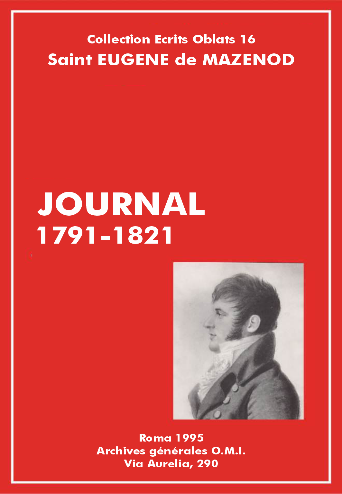

Éscrits Oblats: - 01 - 02 - 03 - 04 - 05 - 06 - 07 - 08 - 09 - 10 - 11 - 12 - 13 - 14 - 15 - 16 - 17 - 18 - 19 - 20 - 21 - 22

1. Journal d'émigration
Vol.: XVI - Journal 1791-1821
Famille, enfance et premières études à Aix (1782-1791) [1]
[1er août 1782]
Charles-Joseph-Eugène de Mazenod naquit à Aix, le 1er août 1782. Vous savez que sa famille tenait un des premiers rangs dans la magistrature. Son grand-père [2], homme d'un esprit aimable et cultivé, avait d'abord servi dans les mousquetaires; sa santé ne lui permettant pas de continuer ce service, il devint président de la Cour des Aides, Chambre des Comptes, etc., de Provence; ses talents le mirent bientôt à la tête de cette Compagnie dont il possédait toute la confiance. Il fut député à Paris pour la représenter dans les débats sans cesse renaissants entre elle et le Parlement avec lequel elle entendait marcher de pair, et sur lequel elle aurait eu des droits de prééminence, car elle avait succédé à l'ancienne Cour des comptes de Provence, bien antérieure à l'établissement du Parlement [3]. Il fut admis dans ses voyages à Paris dans l'intimité de Mgr le Dauphin [4], père des rois Louis XVI, Louis XVIII et Charles X, avec le président d'Eguilles [5], son parent et son ami. Quand le Parlement fut réuni en Provence à la Cour des Comptes comme il eût été à souhaiter que ce fût partout, non seulement il conserva la même influence dans sa Compagnie dont il était le second président, M. d'Albertas [6] en était le premier, mais il l'exerça dans toute la province avec cette supériorité que donne le talent uni à la vertu: il en était un modèle. Son fils [7], président en même temps que lui et à la Cour des Comptes et au Parlement, s'y distingua également par une haute capacité. La Révolution interrompit sa carrière. Le dernier acte public qui prouve l'opinion que le pays avait conçue de lui, est sa nomination par les États de Provence à l'Assemblée nationale de France. C'est de lui qu'Eugène est né.
Vol.: XVI - Journal 1791-1821
Enfance: caractère, bonté et droiture, piété
[1 avril 1791]
Il est impossible de ne pas reconnaître les desseins futurs de la Providence sur cet enfant, en considérant les qualités qui se développèrent de bonne heure dans son âme. J'ai ouï raconter qu'étant encore au maillot, le moyen assuré de le faire taire quand il pleurait était de le conduire à l'église; là il se taisait sur-le-champ, et l'on ne pouvait s'empêcher de sourire en le voyant écouter le prédicateur, comme s'il eût compris ce qu'il disait, et imiter avec ses petites mains les gestes qu'il lui voyait faire.
Lorsqu'il commença à parler, il montra une force de caractère rare dans les enfants de cet âge, ce qui ravissait son aïeul maternel [8], qui avait pour lui une très grande tendresse. Il ne demandait jamais rien en pleurant, et avant qu'il eût appris comment il faut s'y prendre pour obtenir quelque chose, dans ces premières années où les enfants manifestent leur volonté par des larmes, il disait fièrement: "Je le veux".
Le rang que tenait sa famille l'obligeait à avoir un nombreux personnel de domestiques: il y en avait douze dans la maison de son père, tous disposés à le servir et à voler au-devant de tous ses désirs; mais préludant à cette vie simple qu'il adopta dans la suite, il s'esquivait avec adresse pour se livrer à certains actes de bienfaisance, que son aïeul maternel voulait qu'on lui laissât faire sans avoir l'air de s'en apercevoir, heureux de voir se développer de si bonne heure, dans ce jeune enfant qui n'avait pas plus de cinq ou six ans, des qualités que l'on n'acquiert souvent qu'avec beaucoup de peine dans un âge plus avancé. Celle qu'on distingua en lui dès ce bas âge, avec une sorte d'admiration, fut une sensibilité de cœur extraordinaire qui lui faisait compatir, jusqu'à en souffrir, à toutes les peines des autres. Il n'avait alors de paix que lorsqu'il avait soulagé à sa façon ceux qu'il voyait affligés ou souffrants. Son grand-père, homme d'une éminente piété, entretenait ses bonnes dispositions en lui confiant, tout petit enfant qu'il était, certaines aumônes à distribuer. On le vit une fois donner sa veste à un petit charbonnier qui n'en avait point, et comme on lui fit quelques reproches en affectant de rapprocher sa condition de celle du petit charbonnier, il répondit gaiement: "Eh bien! qu'y a-t-il? Je serai un président charbonnier".
Toute la famille de M. Revest, célèbre procureur au Parlement, avait pour Eugène la plus vive affection. Ce jurisconsulte, qui réunissait dans son étude les hommes les plus illustres du barreau d'Aix, ne se laissait approcher par personne lorsqu'il était occupé dans son cabinet ou lorsqu'il dictait à ses clercs, mais le petit Eugène était excepté de cette consigne. Dès qu'il entrait, M. Revest le prenait dans ses bras, et continuait à dicter en se promenant chargé de cet enfant, qui écoutait attentivement ses oracles.
Un jour, Eugène entra dans la maison du procureur, et il fut surpris de n'y point voir de feu: "Comment, dit-il à la famille, vous ne vous chauffez pas aujourd'hui, cependant il fait bien froid". Les dames lui répondirent pour l'éprouver, l'enfant n'avait pas encore six ans: "C'est que nous sommes pauvres et le bois est cher". Eugène les salue et se retire: une heure après, on le voit revenir poussant avec fatigue une petite brouette chargée de plusieurs bûches, qu'il jette brusquement à leur porte en leur disant: "Tenez, voilà pour vous chauffer!" On peut juger de l'émotion de toute cette famille à ce trait de bonté. Plusieurs de ses membres le racontaient encore trente ans après avec les larmes aux yeux.
On s'étonnera qu'Eugène put faire librement ces sortes de choses, mais il ne faut pas oublier les ordres qu'avait donnés son aïeul, de le laisser faire quand son petit cœur lui inspirait quelque bonne œuvre. On le surveillait alors de loin, on le suivait sans qu'il s'en doutât, et Eugène n'en disait rien à personne, ravi d'avoir fait son coup à l'insu de tous. Ainsi, on le laissa dans cette circonstance faire tout ce travail vraiment excessif pour son âge, et il l'exécuta avec une activité incroyable.
Cette sensibilité sur les maux d'autrui, jointe à une affection tendre pour tous ceux dont il était aimé, a été un des caractères distinctifs de son âme dans tout le cours de sa vie. A l'âge de dix ans, se trouvant au collège de Turin, il apprit la mort de la fille de la femme de chambre de sa mère. La pensée de la douleur que devait éprouver la mère de cette jeune personne et le chagrin de la perte d'une personne qui lui était dévouée, lui causèrent une si forte impression qu'on fut obligé de le faire étendre sur son lit, où il pleura à chaudes larmes, en poussant des sanglots, et cependant ces personnes n'étaient pas présentes à sa vue.
Il en fut de même à Venise lorsqu'il vit mourir dans la maison Zinelli, où il avait été accueilli avec tant de bonté, comme nous le dirons plus tard, le frère aîné de cette famille respectable. Il avait alors quatorze ans, mais il fut si touchant, dans la douleur qu'il éprouva et dans les témoignages d'intérêt qu'il donna soit à la mère, soit aux frères du défunt, que cette famille lui voua un attachement paternel qui ne se démentit jamais.
Une autre qualité remarquable qui se développa dans Eugène dès l'âge le plus tendre, ce fut une grande droiture et un amour pour la vérité qui le rendait incapable du moindre mensonge. Aussi, quand il était en faute, jamais il ne s'excusait, encore moins dissimulait-il son tort. Cette franchise prenait sa source dans le fonds de ce caractère de force et de fermeté qu'il apporta en naissant.
Nous avons dit qu'il ne demandait rien avec larmes, il se montrait plutôt volontaire, mais on le calmait toujours par la raison: il se serait cabré contre la punition, surtout s'il l'eût crue peu méritée. Du reste, il ne se mettait pas dans le cas qu'on la lui infligeât. Sa droiture ne lui permettait point de laisser peser sur d'autres la moindre accusation quand on n'était point coupable.
Un enfant lui avait un jour donné quelque chose en échange d'un bel éventail de sa mère qu'Eugène avait cru pouvoir lui céder. Les parents de cet enfant, le voyant rentrer avec cet éventail de prix, craignirent qu'il ne l'eût dérobé, et s'étant informés de lui comment il se l'était procuré, il avoua que le petit Eugène le lui avait remis. Ils s'empressèrent de se transporter avec leur fils chez Mme de Mazenod pour lui rendre cet objet précieux. A mesure qu'ils faisaient des excuses sur l'étourderie de leur fils, Eugène craignit qu'on n'accusât cet enfant d'avoir soustrait l'éventail, et sans se mettre en peine de s'avouer coupable lui-même, il s'écria avec vivacité: "N'accusez pas cet enfant, il a payé l'éventail." La mère d'Eugène se contenta de dire à son fils qu'il avait eu tort de disposer de ce qui ne lui appartenait pas, mais pour reconnaître l'honnêteté du procédé des bons parents de cet autre enfant, elle pria noblement la mère d'accepter l'éventail en cadeau.
Il n'aima jamais les jeux de l'enfance, et on le voyait toujours préférer la société des grandes personnes. Quand on causait de choses sérieuses, il s'empressait d'aller prendre un tabouret, et il s'asseyait aux pieds des interlocuteurs, écoutant avec attention tout ce qu'ils disaient sans jamais se permettre de les interrompre, à moins que ces personnes, surprises de l'intérêt que prêtait un enfant à une conversation qui paraissait au-dessus de son âge, se plussent à l'interroger pour entendre les réponses justes qu'il ne manquait pas de leur faire
Il s'amusait pourtant volontiers à faire la chapelle [9], mais c'était d'une manière sérieuse qu'il prétendait représenter les cérémonies de l’église, et ceux qui le servaient lui auraient singulièrement déplu s'ils se fussent permis de sourire à ses sermons, ou s'ils paraissaient distraits dans les fonctions dont il les chargeait pour le service de sa chapelle.
On aurait dit qu'il se piquait de n'être pas enfant, mais c'était chez lui l'effet de son naturel et des qualités précoces qui se développaient journellement en lui. Ainsi, lorsqu'il fallut quitter la France au moment de la Révolution, il n'avait encore que neuf ans [10]. On l'avertit le soir qu'il partirait le lendemain. Il demanda pour toute grâce d'aller embrasser ses bons amis de la famille Revest, promettant bien qu'il ne trahirait pas le secret qu'on venait de lui confier. En effet, il se fit accompagner chez les Revest, et se sentant attendri à la pensée qu'il allait se séparer d'eux il quitta brusquement l'assemblée le cœur gros, en leur souhaitant le bonsoir. Cette famille si bonne pour cet enfant, ne s'expliqua cette scène que lorsqu'elle eut appris le lendemain qu'Eugène était parti pour Nice.
Vol.: XVI - Journal 1791-1821
Nice et Turin (1791-1794) 3). Motifs du départ
[20 avril 1791]
Voici les raisons de ce départ précipité, telles que nous les présente la relation que nous avons annoncée:
Mon père ayant été décrété de prise de corps par les révolutionnaires, à son retour de sa députation aux États Généraux, quitta la France et se rendit à Nice [11], d'où bientôt il m'envoya son frère pour qu'il m'accompagnât auprès de lui. Je partis d'Aix avec mon oncle le 20 avril 1791 [12], et j'arrivai à Nice le 23 avril, qui était le Samedi Saint. Il fallait bien qu'on fût effrayé de la menace que l'on avait faite de se défaire des enfants des nobles, pour que ma mère consentît à me laisser entreprendre ce voyage avant même d'être entièrement remis d'une indisposition qui m'avait beaucoup fatigué. Mes deux grands-pères, ma grand-mère [13], mon oncle l'abbé [14], toute ma famille réunie ne mit point d'obstacles à l'exécution prompte des ordres de mon père. Je n'avais pas neuf ans. Tout ce que je pus faire fut de garder le secret comme aurait pu le faire une grande personne. On me l'avait recommandé, il fut fidèlement tenu.
Ce départ interrompit les études qu'Eugène avait commencées au collège Bourbon, où il faisait sa sixième [15] avec le succès qu'il a toujours obtenu dans ses classes. Nous avons retrouvé un prix qui lui fut décerné cette année-là, et des lettres que son père lui écrivait de Nice [16], lorsque Eugène fut placé au collège de Turin, prouvent qu'il était constamment le premier de sa classe dans ce collège, puisque son père lui recommandait, à cette occasion, de ne pas s'enorgueillir de ses succès, et d'avoir toujours pour les compétiteurs qu'il devançait des sentiments d'amitié et de bienveillance.
Vol.: XVI - Journal 1791-1821
Bref séjour d'Eugène à Nice en 1791
[1 mai 1791]
Cependant, dans les classes du collège de Turin, il y avait double mérite à vaincre les difficultés, car on professait en italien, et ce n'était point la langue naturelle d'Eugène. Tout ce qu'il en savait alors, il l'avait appris durant les quelques mois qu'il passa à Nice avant d'aller à Turin. Son père lui faisait suivre une école dans la première de ces villes. Quel embarras pour composer son thème ou sa version dans une langue étrangère! Que faisait Eugène? il mettait à contribution tous les passants. Sa famille habitait la maison Sauvaigne, qui donne sur la terrasse, promenade publique au bord de la mer. Eugène faisait son travail sur la porte et dès qu'il était embarrassé pour la signification d'un mot italien, il accostait le premier promeneur venu, qui se faisait un plaisir de le lui expliquer.
Je séjournai à Nice cinq mois, continue la relation. Dans l'intervalle, ma mère et ma tante vinrent nous rejoindre [17]; leur mère les accompagna dans l'intention de retourner bientôt auprès de mon grand-père. Ce fut pour moi une grande joie. Jugeant que les affaires de France ne nous permettraient pas de rentrer sitôt, mes parents s'occupèrent de me procurer les moyens de perfectionner mon instruction. Il fut décidé qu'on me mettrait au collège des Nobles à Turin [18]. Ma mère et ma grand-mère se chargèrent de m'y conduire. Ma mère n'avait alors guère plus de trente ans, et ma grand-mère en avait à peine cinquante. Tout ce qui me rappelle le souvenir de cette bonne grand-mère me touche sensiblement. Je l'ai toujours aimée autant que ma mère: c'est dire autant qu'on peut aimer ici-bas [19].
Vol.: XVI - Journal 1791-1821
Formation reçue au collège des Nobles à Turin. Première communion [Le 5 avril 1792]
[30 septembre 1791]
Nous arrivâmes à Turin en passant par l'Escarène [20], Sospel; nous traversâmes le col de Tende, descendîmes par Limone, Cuneo, Savigliano, Racconigi, lieux que j'ai tous revus depuis avec d'autres yeux et dans d'autres circonstances. Je crois que c'était en septembre 1791 [21].
Le collège des Nobles, où l'on me plaçait, venait d'être confié aux RR. PP. Barnabites par le roi Victor-Amédée. Ces religieux s'appliquaient à donner une éducation soignée aux enfants des familles distinguées qu'on leur confiait. Je fus des premiers à entrer dans ce collège, et le P. Scati [22], qui en était le recteur, me prit dès lors en grande amitié. C'était un religieux très estimé. Il est mort général des Barnabites après avoir refusé l'épiscopat, qui lui avait été offert pendant la Révolution. S'il eût prolongé sa carrière, il eût été fait cardinal. On lui doit l'édition complète des œuvres du cardinal Gerdil [23], son confrère et son ami.
Je restai au collège un peu plus de trois ans. J'y eus pour professeur le P. Massimini, et à cette époque le P. Cadolini [24], aujourd'hui évêque dans la Marche d'Ancône, fut un de mes maîtres. M. Tavenet, de Saint-Sulpice, était assistant d'une des chambrées que j'habitais, et je dois à sa sévérité d'avoir étudié comme il faut, et d'avoir constamment été le premier dans mes classes [25].
[Le 5 avril 1792]
Nous avons dit plus haut comment Eugène s'acquittait de ses devoirs de classe. Il paraît que ses maîtres et notamment le P. Scati furent aussi contents de sa sagesse, car on lui fit faire sa première communion avant l'âge de dix ans accomplis. Il eut ce bonheur le Jeudi Saint de l'année 1792 [26]. Avant ce temps, le trouvant apparemment plus raisonnable que ses camarades, on lui donna une sorte d'inspection sur sa chambrée (camerata). Son père, toujours attentif à diriger de loin les impressions d'Eugène, lui écrivait encore à ce sujet pour lui recommander de bien user de cette autorité, et de compatir aux faiblesses de ses compagnons.
Le Père recteur et les autres Pères l'affectionnèrent toujours beaucoup, et le donnaient volontiers pour modèle. C'est que cet enfant réunissait des qualités rares à cet âge. Il fut dans le cas de les faire remarquer en diverses occasions où il sut profiter de son ascendant dans sa chambrée pour y maintenir le bon esprit que les Supérieurs voulaient y voir régner.
Ce fut à cette époque que le duc d'Angoulême et le duc de Berry [27], qui s'étaient réfugiés à Turin auprès du roi, leur grand-père, vinrent visiter le collège des Nobles, accompagnés de M. le duc de Sorrent, leur gouverneur. Eugène leur fut présenté, et les princes furent invités à entrer dans sa petite chambre comme étant la plus proprement tenue de toute la chambrée. M. le duc de Berry voulut mesurer sa taille en s'approchant d'Eugène, qui, quoique moins âgé de quatre ans, se trouva plus grand que lui, ce que le prince remarqua avec exclamation.
Vol.: XVI - Journal 1791-1821
Opération d'une loupe. Confirmation
[3 juin 1792]
Dans l'intervalle de sa première communion à sa confirmation, c'est-à-dire du Jeudi Saint à la Trinité de l'année 1792 [28], Eugène donna une nouvelle preuve de la délicatesse de ses sentiments et de la fermeté de son caractère. On le remarque à cause de son âge. L'enfant avait apporté en naissant une loupe dans le grand angle de l'œil gauche. Ses parents, craignant que si cette loupe croissait elle ne finît par le défigurer, se décidèrent à la lui faire extirper par un habile opérateur, tel qu'était le docteur Pinchinati, premier chirurgien du roi. On n'eut pas de peine à obtenir le consentement de l'enfant, trop raisonnable pour résister au désir de sa famille. Le jour fut fixé, et madame sa mère devait arriver de Nice la veille pour assister à cette douloureuse opération. Eugène voulut lui épargner la peine de le voir souffrir. Il demanda instamment au R. P. recteur de vouloir bien permettre que l'opération fût devancée, afin que sa mère la trouvât faite en arrivant. Le R. P. recteur fut charmé de cette pensée délicate, et le lui accorda bien volontiers.
Tous les apprêts furent faits dans les appartements du P. recteur, qui désirait assister à l'opération. Le premier chirurgien du roi arrive accompagné de ses élèves; on fait compliment à l'enfant de son courage, qui montrait une résolution dont tout le monde était ravi. C'est là que le bon Dieu l'attendait pour lui donner une petite humiliation qu'il s'était peut-être attirée en comptant trop sur ses forces. Quand on eut déployé sur une table tous les instruments que renfermait l'étui du docteur, quand l'enfant vit lancette, bistouri, ciseaux crochus, pinces, charpie, etc., il crut qu'on allait lui pourfendre la tête, et son courage l'abandonna: il fallut renfermer de nouveau tous ces instruments de supplice, et l'opérateur se retira avec ses élèves.
Eugène rentra tout confus dans sa chambre, et par un mouvement de ferveur, il se jeta à genoux pour invoquer notre Seigneur Jésus-Christ, qu'il n'avait vraisemblablement pas prié auparavant. Nous lui avons entendu raconter qu'il s'adressa à l'Esprit Saint avec une grande confiance. Cette prière fervente fut agréable au Seigneur, car à l'instant l'enfant se leva avec un nouveau courage, et rentrant dans l'appartement du P. recteur, il lui demanda de rappeler le docteur, résolu qu'il était de subir l'opération, quelque douloureuse qu'elle pût être. Le P. recteur, dans l'admiration de ce changement, fit rappeler M. Pinchinati, qui se mit tout de suite en devoir de commencer l'opération. Elle fut très longue et très douloureuse, effrayante même à cause de la quantité de sang qui sortit de la veine qu'on fut obligée de couper pour extraire la loupe. La loupe ne put être enlevée qu'en saisissant à plusieurs reprises la matière graisseuse qu'elle contenait, et en la coupant chaque fois avec des ciseaux courbes, ce qui rendit l'opération très longue. La force surnaturelle qu'Eugène avait obtenue de l'Esprit Saint par sa prière, ne se montra pas seulement dans la résolution de subir l'opération, mais dans le courage qui le soutint tout le temps: il ne poussa pas un cri et ne fit pas entendre une plainte. Sa mère arriva le soir même, et fut touchée, comme on peut se le figurer, de l'attention de son fils qui avait voulu lui épargner la peine de le voir souffrir.
Le traitement se prolongea longtemps, si bien que l'époque de la confirmation générale étant arrivée, on craignit qu'Eugène ne pût pas y assister. Mgr le cardinal Costa, archevêque de Turin, eut la bonté de proposer de le confirmer en particulier. Mais on ne fut pas obligé de recourir à sa complaisance, et l'enfant fut confirmé avec tous les autres le jour de la Trinité de cette année 1792, dans la petite église attenante à l'archevêché.
L'attrait d'Eugène pour la piété se soutint pendant tout le temps qu'il passa au collège. Il se manifestait par le goût qu'il montra toujours pour les cérémonies religieuses. Tant qu'il demeura dans la chambrée dite de Saint-Antoine, la seconde par laquelle il passa pendant son séjour au collège, il se levait constamment près d'une heure avant les autres pour dire très gravement la messe dans une petite chapelle qu'il avait préparée avec ses camarades, et qui était fournie de tous les ornements convenables.
Les patriotes français, dit la relation, menaçant d'envahir tout le Piémont, mon père ne crut pas sa famille en sûreté à Turin: il se décida à quitter cette ville pour se rendre à Venise, et s'y mettre à l'abri dans les lagunes d'une république qu'il pensait devoir être respectée par les républicains français.
Vol.: XVI - Journal 1791-1821
Venise (1794-1797). Voyage de Turin à Venise. Douze jours de barque.
[2 mai 1794]
Le 2 mai 1794, mon père fréta une grande barque sur laquelle il s'embarqua avec toute sa famille, composée alors de mon père, Charles-Antoine de Mazenod; de ma mère, Marie-Rose-Eugénie de Joannis; de mon grand-oncle, Auguste-André de Mazenod, archidiacre, vicaire général de Marseille; de mon oncle Charles-Fortuné de Mazenod, sacristain, vicaire-général d'Aix, depuis évêque de Marseille; de mon oncle Charles-Louis-Eugène de Mazenod, chevalier de Saint-Louis, alors capitaine des vaisseaux du roi, depuis contre-amiral; de ma tante Elisabeth de Joannis, marquise de Dons-Pierrefeu; de mon cousin germain le petit Joseph-Emile de Dons, marquis de Pierrefeu; de Nanon, femme de chambre de ma mère, et de la nourrice de mon cousin; de ma sœur et de moi. Un grand nombre d'émigrés prirent le même parti, et demandèrent à mon père de s'embarquer avec nous: parmi eux se trouvaient un bon nombre de prêtres. Parmi les laïques nous comptions la famille de Colonia, celle de Durand-Dubraye, et le marquis de Pontevès. Jamais voyage ne coûta moins. Grâces à la délicatesse de mon père, à qui la barque avait été louée, il n'en coûta que 15 livres de Piémont, et même 12 livres seulement aux prêtres, qui étaient censés plus pauvres que les laïques. Ce voyage ne fut pas sans agrément; il dura douze jours, parce que tous les soirs on s'arrêtait quelque part pour y passer la nuit.
Nous rencontrâmes partout la plus cordiale hospitalité. Les patriotes [29] n'avaient point encore passé par là. C'était à qui nous ferait le plus de politesses! On venait nous prendre à bord pour nous loger commodément en ville. Le premier soir nous nous arrêtâmes à Casale Monferrato [30], capitale du Montferrat. Ce fut un honnête procureur qui demanda la préférence à mon père et à ma mère. Non contents de nous avoir reçus chez lui pour y souper et y coucher, le lendemain, lui et sa femme nous accompagnèrent au bateau, et nous forcèrent d'accepter de petites provisions pour le voyage de la journée. Je regrette bien de n'avoir pas retenu le nom de ces braves gens.
La seconde station fut à Plaisance. Cette ville n'est pas sur le bord du fleuve. Il fallut faire un assez long trajet pour s'y rendre. Nous fûmes logés dans un hôtel, et il me souvient que nous achetâmes d'excellentes fraises au marché. Tout ce pays est magnifique.
Le lendemain, nous continuâmes notre route jusqu'à un village situé en face de Crémone. Plusieurs de nos compagnons de voyage allèrent visiter cette ville, où la marquise de Colonia rencontra une personne généreuse qui, s'apitoyant sur le sort de tant d'émigrés obligés de fuir loin de leur patrie, lui glissa adroitement dans la main un rouleau de pièces d'or que cette dame refusa.
Le jour suivant, notre bateau s'arrêta vers le milieu de la journée dans un site délicieux, dont tous les voyageurs voulurent jouir. On s'y reposa à l'ombre d'un épais feuillage, et à la gaieté à laquelle chacun se livra soit dans des conversations animées, soit par le chant et la joie, personne ne se serait douté que c'était là une colonie d'émigrés fuyant des tyrans qui en voulaient à leur vie, et qui s'étaient emparés de tous leurs biens.
En parcourant ces charmantes campagnes, nous rencontrâmes une jolie maison habitée par un vieillard vénérable qui nous invita à y entrer pour nous y reposer. Il nous offrit aussitôt tout ce qu'il avait, et désolé de nos refus, nous ne pûmes le consoler qu'en acceptant au moins une tasse de café qu'il nous fit servir de grand cœur. Il ne cessait de nous combler de bénédictions, et il nous fit promettre d'avoir recours à lui quand nous jugerions qu'il pourrait nous être utile. Peu s'en fallut que le soir même nous n'eussions été dans le cas d'avoir recours à son obligeance.
Après avoir pris congé de notre bon vieillard, nous allâmes rejoindre notre joyeuse compagnie, que nous trouvâmes considérablement augmentée. Un bateau chargé comme le nôtre d'émigrés et de prêtres nous suivait apparemment de près, il s'arrêta au même endroit, et mes parents eurent la consolation d'embrasser plusieurs de leurs amis, tels que Mgr de Bausset [31], évêque de Fréjus, et M. le marquis de Grimaldi. Ils versèrent en commun quelques larmes sur leur situation, se consolèrent de leur mieux, et l'on donna le signal du départ pour se rendre de conserve à Ostiglia, pays d'exécrable mémoire, où tous nos pauvres émigrés furent traités comme des gens suspects, dont il fallait se méfier. Les autorités du pays placèrent des gardes à bord des deux bateaux, et l'on ne permit de descendre à terre qu'à ceux qui furent choisis pour y aller faire les provisions; encore eut-on soin de les faire escorter par des militaires armés. Ce traitement barbare étonna tout le monde, il ne ressemblait en rien à ce que l'on avait rencontré jusque-là, et heureusement il ne fut renouvelé nulle part.
Dès qu'il fut jour, on s'éloigna de cette terre inhospitalière, et le soir nous fûmes amplement dédommagés des mauvais traitements de la veille par l'accueil empressé, généreux et touchant qui nous fut fait à Sermide, où nous nous arrêtâmes pour passer la nuit. Sermide, n'est pas précisément situé sur le Pô, on y arrive par une belle allée d'arbres qui met le voyageur à couvert des ardeurs du soleil.
A peine fûmes-nous arrivés que le podestat du lieu vint nous faire la bienvenue. Il se chargea de fournir le logement à tous les laïques; l'archiprêtre, qui était venu avec lui à notre rencontre, prit soin de placer les prêtres convenablement.
Mon père, ma mère, et toute ma famille reçut l'hospitalité chez le principal personnage de la contrée; il nous traita magnifiquement. Le podestat conserva pour mon père un tel respect et une si grande confiance, qu'il continua longtemps d'entretenir avec lui un commerce de lettres. C'est lui qui nous apprit la mort de notre excellent hôte quelques mois après que nous fûmes établis a Venise. Le marquis de Mont-grand, jeune alors, était, le soir de notre passage à Sermide, du nombre des convives. Nous étions si nombreux qu'il n'y eut qu'un lit pour nous deux. Il me souvient que j'étais tellement accablé de sommeil, que je dormis tout le temps du souper; sans doute que je ne dus pas être incommode à mon compagnon. Si quelqu'un nous avait dit que nous nous retrouverions quarante et quarante-cinq ans plus tard, l'un maire, et l'autre d'abord grand vicaire et puis évêque de Marseille [32], nous l'aurions pris pour un rêve. C'est pourtant ce qui est arrivé.
Le soir de ce jour mémorable, nous nous arrêtâmes à Borgoforte pour y passer la nuit. C'est là que nos compagnons de voyage, qui devaient aller à Vérone, se séparèrent de nous. Notre barque fut surtout allégée d'un émigré qui avait eu le talent de se faire détester de tout le monde. Je vis un jour le moment où on l'aurait jeté à l'eau. Quelqu'un qui n'y fut pas jeté, mais qui s'y laissa tomber, ce fut notre pauvre Nanon. Elle eût péri infailliblement sans l'habileté et le courage d'un de nos mariniers. En échange, un jour nous fûmes sauvés par le coup d'oeil exercé de mon oncle, le chevalier, qui détourna notre barque au moment où elle allait être entraînée dans le courant d'un moulin. Elle s'y serait brisée.
Nous continuâmes notre voyage jusqu'à Ponte Lagoscuro, où tous les prêtres qui étaient avec nous nous laissèrent pour entrer dans les États du Pape. Ma famille et un petit nombre d'autres personnes parmi lesquelles se trouvait le chevalier de Montgrand, qui unit son sort au nôtre jusqu'à son départ de Venise, où il s'était logé et où il mangeait avec nous, sans nous laisser intimider par le faux bruit que l'on faisait courir qu'on ne recevait point d'étrangers à Venise, changeâmes de barque aux frais de notre patron, et entrâmes par le Polesine dans les États Vénitiens.
Cette navigation est très intéressante. Le lit du Pô étant beaucoup plus élevé que les terres du pays qu'il faut traverser, on a échelonné des écluses qui servent à descendre aux lieux où l'on veut s'arrêter, et à remonter les barques au niveau du fleuve. Nous descendîmes ainsi dans le Polesine sans sortir de notre burciello; c'est le nom que l'on donne aux bateaux très commodes qui font le service de cette navigation. Par ce canal, on communique aux différentes rivières qui serpentent dans ce beau pays. L'on traverse le Tartaro, l'Adigetto et l'Adige, et on arrive à Chiozza ou Chioggia, où nous couchâmes pour attendre les barques qui devaient remorquer notre burciello dans les lagunes qui séparent la terre ferme de la belle ville de Venise.
Vol.: XVI - Journal 1791-1821
Arrivée a Venise
[29 mai 1794]
Quelques heures nous suffirent pour atteindre cette reine des mers majestueusement assise au centre de ses eaux, d'où jadis elle rendait tributaire le commerce de toutes les nations. La république antique qui comptait tant de siècles d'existence vivait encore, mais elle était sur son déclin, et elle s'éteignit bientôt sous nos yeux. On peut dire qu'elle n'existait plus en quelque sorte que dans l'opinion quand nous vînmes nous réfugier sur son domaine. Les étrangers affluaient encore en foule pour jouir de la liberté et des divertissements que Venise offrait surtout à l'époque de l'Ascension [33], jour fixé pour le mariage solennel du Doge, représentant la république, et de la mer. La fête se prolonge au-delà de huit jours, et se renouvelle tous les ans. Nous n'étions pas en mesure d'y prendre une grande part ni beaucoup de plaisir. Au contraire, nous fûmes bien contrariés d'arriver si mal à propos, ne pouvant trouver de logement nulle part.
Nous passâmes une ou deux nuits encore dans notre barque, en attendant qu'un chevalier d'industrie [34] que nous avions ramassé en route, et qui s'était donné pour un officier autrichien, tandis que lui et sa femme n'étaient que des chanteurs de rue, nous eût trouvé un gîte, quelque pitoyable qu'il pût être. Ce ne fut pas le seul service que cet honnête industriel, appelé, je crois, Montecatini, nous rendit par reconnaissance de la complaisance que nous avions eue de l'admettre gratuitement dans notre barque, pour qu'il pût se rendre avec sa femme à Venise où l'attirait le concours des étrangers à l'occasion de la foire de l'Ascension. Voyant deux prêtres dans notre famille, il pensa qu'il pourrait nous être agréable de faire connaissance avec un abbatino de ses amis. C'était, je crois, tout bonnement un poète de théâtre, mais il devait suffire à Montecatini de savoir qu'il était prêtre pour lui proposer de faire connaissance avec mes oncles, et l'inviter à leur être utile. Cet abbé musqué [35], qui n'était plus de la première jeunesse, se nommait Zerbini; il se chargea de présenter mes oncles au curé de la paroisse où il disait la messe, c'était l'église de Saint-Fantin, en face du théâtre, où je crois fort qu'il nous proposa d'aller. Mes oncles s'en tinrent à fréquenter l'église et à cultiver la connaissance du respectable pievan ou curé, qui les accueillit avec distinction. Zerbini nous fit faire aussi connaissance avec les abbés Coletti, hommes vraiment respectables; l'un d'eux était un ex-Jésuite fort âgé, avec lequel nous conservâmes peu de rapports, l'autre continua à nous fréquenter tant que nous demeurâmes à Venise, et se fit toujours un plaisir de nous être utile.
Vol.: XVI - Journal 1791-1821
Logement sur le grand canal. Vie d'étude et de prière avec la famille Zinelli
1 juin 1794
Montecatini nous avait procuré, dès le second jour de notre arrivée, un petit appartement, composé de deux chambres, où il fallait caser les onze individus dont était composée notre famille, y compris les maîtres, les enfants et les domestiques. Nous patientâmes un mois dans cette triste demeure, où nous étions entassés; enfin les étrangers, attirés par les fêtes de l'Ascension, s'étant écoulés, nous pûmes trouver sur le grand canal, en face du beau palais Grimant, un joli logement que nous conservâmes jusqu'à notre départ. C'est la divine Providence qui nous le choisit dans ses desseins de miséricorde sur moi, car je dois à notre séjour dans cette maison tout le bien que j'ai pu faire dans ma vie, si j'en ai fait quelque peu avec la grâce de Dieu. Cette maison, située sur la paroisse de Saint-Sylvestre, qui avait pour curé ou pievan M. Milesi [36], vicaire général de Murano, plus tard évêque de Vigevano, et enfin patriarche de Venise, n'était séparée que par une très petite rue de celle de la famille Zinelli, famille patriarcale, composée d'une respectable vieille mère, Dona Camilla Brighenti, et de six fils. Deux étaient ecclésiastiques, l'un encore diacre et l'autre prêtre, appelé D. Bartolo [37] (Barthélémy), les autres étaient de riches négociants de Venise. C'est ce prêtre D. Bartolo, mort ensuite en odeur de sainteté, qui m'a instruit dans la religion et inspiré les sentiments de piété qui ont préservé ma jeunesse des écarts sur lesquels tant d'autres ont eu à gémir, faute d'avoir rencontré les mêmes secours.
Cette phase de ma vie est trop marquée au coin de la bonté divine à mon égard pour que je n'en rapporte pas toutes les circonstances dans leur moindre détail, ne fût-ce que pour m'exciter à la reconnaissance que j'en devrai à Dieu tant que j'existerai, et pour faire bénir le Seigneur par tous ceux qui s'intéressent à moi, ou qui par ricochet en ont à leur tour retiré quelque avantage.
J'ai dit qu'en arrivant à Venise mes oncles furent présentés au curé de Saint-Fantin par l'abbate Zerbini. Ils dirent la messe dans l'église de Saint-Fantin, tant que nous habitâmes l'appartement où nous étions tombés à notre arrivée, mais lorsque nous eûmes changé de logement, et que nous nous trouvâmes à une très grande distance de cette église, mon grand-oncle donna la préférence à l'église paroissiale de notre nouvelle habitation. Mon oncle, poussant la délicatesse jusqu'à l'excès, ne voulut pas quitter Saint-Fantin, où il avait été si bien accueilli ainsi que son oncle. Notre nouvelle paroisse était celle de Saint-Sylvestre, dont j'ai parlé plus haut.
Dès les premiers jours mon grand-oncle fut l'objet de la vénération du curé et de tout son clergé, et on n'a cessé de lui en donner les plus touchants témoignages jusques à sa mort. Il allait tous les jours dire la messe à l'heure qu'on lui avait laissé choisir, et j'allais assidûment la lui servir. Ce fut pour moi l'occasion d'être connu particulièrement par le curé Milesi. C'était un homme d'un mérite reconnu, bon pasteur dans toute l'acception du terme. A l'aise du côté de la fortune, il faisait le meilleur emploi de ses revenus, et doué d'une grande facilité pour instruire, il distribuait tous les dimanches le pain de la parole à son peuple, auquel se joignait pour l'entendre un grand nombre de personnes des paroisses voisines qui remplissaient toujours son église. Il était assidu au confessionnal, et ne refusait son ministère à personne; il était, en un mot, le modèle des bons pasteurs.
M. Milesi me prit en grande affection, et ayant reconnu dans les fréquents rapports qu'il eut avec moi quelque bonne disposition, il forma dès lors à mon insu le projet de m'être utile. La position de ma famille ne lui permettait pas de me procurer les maîtres qui m'étaient nécessaires pour continuer mes études: M. Milesi voulut y suppléer, et Dieu bénit sa charitable pensée. Il y avait sur sa paroisse, comme je l'ai déjà dit, cette famille respectable des Zinelli dont un des membres, saint prêtre, se rendait tous les jours à l'église pour y célébrer les saints Mystères. Le pievan, Mgr Milesi, s'entendit avec lui, et il n'eut pas de peine à le déterminer à venir en aide à ma jeunesse. Voici comment leur cœur charitable leur inspira de monter leur coup.
Un jour je m'amusais à la fenêtre qui donnait en face de la maison de la famille Zinelli. D. Bartolo parut de son côté, et m'adressant la parole, il me dit: "Monsieur Eugène, ne craignez-vous pas de perdre votre temps en baguenaudant ainsi à la fenêtre? - Hélas, monsieur, repris-je, c'est bien à regret, mais que puis-je faire? Vous savez que je suis étranger, et je n'ai pas un livre à ma disposition" C'est là qu'il voulait en venir: "Qu'à cela ne tienne, mon cher enfant, vous me voyez ici précisément dans ma bibliothèque, où se trouvent beaucoup de livres latins, italiens, français même, si vous en voulez.
- Je ne demande pas mieux" lui répliquai-je. A l'instant D. Bartolo détache la barre qui tenait les volets de la fenêtre, et y plaçant un livre dessus, il me le fait passer à travers la petite rue qui nous séparait. Le livre fut bientôt lu, car je lisais toujours avec avidité, et le lendemain mon père me conseilla d'aller le rendre, et de remercier D. Bartolo. Tout cela était prévu.
D. Bartolo m'accueillit avec la plus grande bonté; il me fit parcourir sa bibliothèque, et je passai de là dans le cabinet où il étudiait autour d'une grande table avec son frère, D. Pietro, qui n'était encore que diacre. "Tous nos livres sont à votre disposition", me dit D. Bartolo. Puis il ajouta: "C'est ici que mon frère et moi étudions: vous voyez là la place qui était occupée par un autre de mes frères que le bon Dieu a appelé à lui. S'il vous était agréable de lui succéder, vous n'avez qu'à le dire, nous nous ferons un plaisir de vous faire continuer vos classes, que vous n'avez pas sans doute achevées." On peut juger de ma surprise et de ma joie. "Je serai trop heureux, monsieur, et mon père y consentira avec bonheur. - Eh bien! venez dès demain, nous commencerons."
Mes parents remercièrent Dieu de m'avoir procuré un si grand avantage.
A partir de cette époque, tous les jours pendant près de quatre ans, je me rendais après la messe auprès de ces maîtres bénévoles qui me faisaient travailler jusqu'à midi. Après le dîner, D. Bartolo, dont la santé exigeait de grands ménagements, venait me prendre chez moi pour faire une promenade, qui avait pour but la visite de quelque église où nous nous arrêtions pour prier. En rentrant, je me remettais au travail, qui durait jusqu'au soir. Quelques prêtres se réunissaient à cette heure-là pour réciter l'office en commun. On descendait ensuite dans le salon, où quelques amis de la famille se livraient à une honnête récréation. On prenait le café et l'on se retirait, excepté moi, qui faisais déjà en quelque sorte partie de la famille, et qui restais pour souper avec elle, et pour dire le chapelet et faire la prière selon le saint usage de ce pays, alors si bon. Je me retirais après, accompagné du domestique de la maison. Tout le monde était couché chez moi depuis longtemps, car à Venise, où l'on fait de la nuit le jour, il était toujours près de minuit quand le souper finissait. Le dimanche et le jeudi j'étais aussi retenu de fondation [38] pour le dîner.
Quatre années se passèrent ainsi: l'affection de toute cette si respectable famille qui m'avait adopté croissait en proportion de l'attachement que j'éprouvais moi-même pour elle. Mgr Milesi jouissait, de son côté, du succès de ses charitables combinaisons. Comment n'aurais-je pas fait quelques progrès à une si bonne école? La famille au milieu de laquelle je vivais était éminemment chrétienne, et D. Bartolo, qui s'était plus spécialement chargé de moi, était un vrai saint à canoniser. On trouvera dans mes papiers un abrégé de sa vie que Mgr de la Gaude [39], évêque de Vence, puis de Namur, me procura à son retour de Rome peu après la mort bienheureuse de mon saint maître. Pourrai-je jamais remercier assez Dieu infiniment bon de m'avoir procuré un tel secours précisément à l'âge le plus scabreux de la vie, époque décisive pour moi, où furent jetés par un homme de Dieu, dans mon âme préparée par sa main habile et la grâce de l'Esprit Saint dont il était l'instrument, les fondements de religion et de piété sur lesquels la miséricorde de Dieu a construit l'édifice de ma vie spirituelle? C'est à l'école de ce saint prêtre que j'appris à mépriser les vanités du monde, à goûter les choses de Dieu: éloigné de toute dissipation, de tout contact avec les jeunes gens de mon âge, je ne pensais seulement pas à ce qui fait l'objet de toutes leurs convoitises. Je me confessais tous les samedis, je communiais tous les dimanches. La lecture des bons livres et la prière étaient les seules distractions que j'accordais à l'assiduité de mes études. J'entendais et je servais la messe tous les jours, et tous les jours aussi je récitais le petit office de la sainte Vierge. J'avais puisé dans mes lectures de piété un certain attrait pour la mortification, et tout enfant que j'étais encore, je m'étais imposé de jeûner tous les vendredis, et en carême trois jours de la semaine; mes parents n'y faisaient pas attention. Je plaçais souvent des rondins sous mon drap de lit, et le samedi, pour être plus sûr de me réveiller de bonne heure afin de passer plus de temps à l'église, je couchais tout bonnement par terre sur une simple couverture. Ma santé n'en souffrait pas du tout, et je continuai ce régime tant que je demeurai à Venise.
Si je rapporte ces faits, c'est pour faire remarquer de quelles grâces j'ai été prévenu dès ma plus tendre enfance, et combien j'ai à m'humilier de n'en avoir pas tiré meilleur parti. C'est de là que date ma vocation à l'état ecclésiastique, et peut-être à un état plus parfait, et certainement si nous fussions restés un an seulement de plus à Venise, j'aurais suivi mon saint directeur et son frère devenu prêtre dans la Congrégation religieuse qu'ils choisirent [40], et où ils sont morts l'un et l'autre dans l'exercice d'un zèle héroïque.
Cette disposition où l'on me voyait d'entrer dans l'état ecclésiastique, donna lieu à une anecdote que je veux raconter: Un jour mon vénérable grand-oncle, après la lecture d'un chapitre du Nouveau Testament que je lui faisais dans son petit elzévir que je possède encore, me dit sérieusement, à ce qu'il me parut: "Est-il vrai, Eugène, que tu veuilles entrer dans l'état ecclésiastique? - Mais oui, mon oncle, lui répondis-je sans hésiter! - Comment, mon enfant, peux-tu prendre une pareille résolution? Ne sais-tu pas que tu es l'unique rejeton de notre famille qui s'éteindra par là?" Etonné de voir sortir une semblable réflexion de la bouche d'un homme si vénérable, je repris avec vivacité: "Eh quoi! mon oncle, ne serait-ce pas un grand honneur pour notre famille de finir par un prêtre?" Mon oncle plaisantait. Ravi d'entendre un enfant de treize ans lui répondre ainsi, il m'embrassa et me bénit. Cette vocation précoce n'a pu s'effectuer que beaucoup plus tard. Il m'a fallu passer par d'autres épreuves. Nous étions en pleine émigration, et mon exil dura encore bien des années.
Cette vocation d'Eugène se manifestait en effet par des signes non équivoques. D. Barthélémy s'acquittait en saint des devoirs qu'il s'était imposés à son égard: il s'appliquait non seulement à lui faire continuer ses classes de latinité, mais à former le jeune cœur de son élève à l'amour de Dieu et son esprit à la connaissance de la religion. Combien de fois a-t-on entendu dire à Eugène devenu prêtre qu'il devait à ce saint maître tout ce qu'il avait acquis de principes solides en ce genre. L'instruction religieuse ne se bornait pas au catéchisme. Aussi Eugène fit-il des progrès qui étonnèrent tous ceux qui le connaissaient, et les dispositions qu'il avait annoncées dès le collège se développèrent au point qu'on s'aperçut dans sa famille de son attrait décidé pour l'état ecclésiastique. On le voyait en effet se revêtir volontiers, quand il était à la maison, d'une houppelande qui ressemblait à une soutane; il en arrêtait les plis avec une ceinture, et mettant un bonnet carré sur la tête, il se promenait dans la grande salle qu'on appelle à Venise il Portico, disant dévotement l'office de la très sainte Vierge, qu'il récitait en entier chaque jour. Souvent il faisait sa lecture spirituelle à haute voix sur le ton du sermon; il était alors assis sur un large tabouret qui lui servait de chaire.
Nous avons vu l'exactitude qu'il apportait à sa confession et à sa communion hebdomadaires. Dès lors aussi se manifestait son goût pour les mortifications corporelles, pour le jeûne surtout. Il parvenait facilement à cacher à sa famille et à ses amis les pratiques auxquelles il se livrait. Quand il ne déjeunait pas chez lui, ses parents croyaient qu'il déjeunait chez les Zinelli, comme il lui arrivait le plus souvent; et s'il ne déjeunait pas chez les Zinelli, ceux-ci pensaient qu'il avait pris quelque chose chez lui. Cet attrait pour le jeûne s'est soutenu chez Eugène jusqu'à l'époque où des travaux forcés l'obligèrent de suspendre tous ceux qu'il s'était imposés extraordinairement, à l'exception de celui du vendredi, auquel il n'a jamais voulu renoncer.
Cependant le diacre Zinelli, qui s'amusait souvent à le taquiner, lui fit faire un jour une découverte à ce sujet qui le contrista. Aussi Eugène ne se rendit-il qu'après une longue dispute, et quand on le lui eut bien prouvé par des raisonnements, c'est que celui qui jeûne avant l'âge prescrit a moins de mérite que celui qui jeûne pour obéir au précepte de l’église [41]. Il ne fut pas découragé de sa défaite, et il continua sa sainte pratique comme auparavant.
Vol.: XVI - Journal 1791-1821
1795: Départ de Mme de Mazenod. Décès du chanoine Charles-Auguste-André de Mazenod
[1 janvier 1795]
En 1795, Eugène fut dans le cas de faire un petit voyage en Toscane pour accompagner sa mère, que les intérêts de sa famille rappelaient en France. Déjà la marquise de Dons, sa sœur, y était rentrée avec son fils; la mère d'Eugène aurait perdu tous ses droits à l'héritage de son père, si elle eût prolongé son séjour à l'étranger. Il fallut donc que cette douloureuse séparation s'opérât, elle emmenait sa fille avec elle: Charlotte-Césarie-Antoinette-Eugénie de Mazenod, plus tard marquise de Boisgelin.
Pendant ce voyage, Eugène se montra ce que la grâce l'avait fait. Il se munit d'abord d'un grand crucifix qu'il pendit à son cou en signe de sa foi et de la profession publique qu'il était disposé à en faire, si besoin était. L'occasion s'en présenta à la première auberge où l'on s'arrêta. Quoique ce crucifix fût placé sous le gilet d'Eugène, il était assez grand pour être aperçu; ce fut un sujet de mauvaise plaisanterie de la part des serviteurs de l'auberge, mais Eugène, loin de rougir, répondit à ces insolents avec un courage vraiment chrétien, auquel ces impies ne s'attendaient pas de la part d'un enfant de treize ans.
Arrivée à Livourne, la famille s'arrêta quelques jours dans cette ville. Eugène ayant remarqué que la servante de la maison qu'ils habitaient était très ignorante en matière de religion, sa principale occupation fut d'expliquer le catéchisme à cette femme, ce qu'il faisait d'une manière si intéressante, que la maîtresse de la maison y assistait par plaisir et, à ce qu'elle disait, avec un grand profit même pour elle. Le zèle fut un des caractères distinctifs de la piété d'Eugène, qui préludait ainsi au ministère qu'il devait un jour remplir auprès des âmes les plus abandonnées.
S'étant séparé de sa mère et de sa sœur, il revint avec son père à Venise pour y reprendre ses études et ses occupations chez les Zinelli, avec lesquels il demeura jusqu'au départ de sa famille pour Naples.
Cette année 1795 ne se termina point sans apporter à Eugène une nouvelle douleur. La relation nous dit: Mon grand-oncle, le vénérable ami de Mgr de Belloy et son grand vicaire, comme il avait été vicaire général du célèbre Belzunce, a terminé sa sainte vie le 22 novembre de l'année 1795. Il fut inhumé dans cette même église de Saint-Sylvestre, où il célébrait chaque jour le saint Sacrifice. A ce sujet, je ne puis passer sous silence le procédé délicat du respectable curé, Mgr Milesi, depuis, comme je l'ai dit, évêque de Vigevano, et enfin patriarche de Venise, ce même Mgr Milesi qui avait conçu pour moi une si vive et si paternelle affection, et auquel je dois tout le bien que m'a fait mon saint maître et véritable ami D. Bartolo Zinelli. Mon oncle étant mort, mon père m'envoya auprès du curé pour le prier de se charger des funérailles, en voulant pourtant bien se rappeler que nous étions des émigrés et que, quelle que fût la dignité de notre oncle, nous devions nous restreindre dans les bornes de la plus grande simplicité. Le curé me répondit qu'il comprenait cela, et que nous le laissassions faire. Il fit en effet, mais quoi? de magnifiques funérailles: confréries, clergé nombreux, cierges du plus grand calibre, catafalque de la plus grande beauté dans l'église, garni d'une infinité de flambeaux, le tout à l'avenant. Que dire à cela? Tout était fait par ordre du curé. Mais lorsqu'il fallut en venir à demander le prix de toutes ces magnificences, le curé me répondit que, partageant avec raison la trop juste douleur de ma famille, il s'estimait heureux d'avoir, par cette pompe funèbre, rendu à un si saint personnage l'hommage qui était dû à ses vertus et à sa dignité, qu'il avait cru en cela s'acquitter d'un devoir, et que par conséquent nous n'avions rien à payer! Voilà l'homme que Dieu avait placé sur mon passage dans cette terre étrangère pour être le premier instrument de ses miséricordes sur moi!
Je ne le revis plus jusqu'en 1811 [42], où nous nous rencontrâmes à Paris à l'époque du Concile national auquel il fut appelé comme évêque de Vigevano [43]. Notre entrevue eut lieu dans le chœur même de Notre-Dame, au moment où les évêques se rendaient à leur place. Ce fut un spectacle attendrissant. Je faisais les fonctions de maître de cérémonie sous MM. de Quélen et de Sambucy. Voyant arriver Mgr Milesi, que je n'avais pas trouvé chez lui la veille, je l'accostai en me nommant. Ce bon évêque ne se posséda pas de joie de retrouver son enfant adoptif à l'âge de vingt-huit ans, devenu diacre, et, sans se mettre en peine du lieu et de la circonstance, il me sauta au cou et me serra tendrement contre son cœur. J'étais ému autant que lui, et chacun se demandait ce que ce pouvait être. Ah! si on avait pu le comprendre, plus d'un eût mêlé ses larmes aux nôtres!
Les Français s'avançant vers Venise, il fallut songer à déguerpir. Nous assistâmes à la fin ignoble et misérable de cette république vermoulue qui s'écrasa en quelque sorte sur elle-même. Il était sans doute difficile de résister à l'étoile, ou, si vous voulez, au génie de Bonaparte, mais au moins eût-il fallu montrer quelque énergie et ne pas aller au-devant, comme on le fit, de la honte et de l'anéantissement [44].
Entre la fin de cette ancienne république et l'entrée des Français dans la ville, il y eut un temps d'anarchie qui donna lieu à une collision très dangereuse entre les troupes esclavonnes [45] rentrant de la terre ferme, d'où elles avaient été refoulées sur Venise, et les patriotes du pays qui prenaient en main les rênes du gouvernement. Nous ne fûmes que les spectateurs de ces scènes de désordre, mais nous aurions bien pu en devenir les victimes pour peu que cet état de choses eût duré. Les Vénitiens confondaient facilement les émigrés avec les Français dont ils redoutaient l'approche, et qui allaient bientôt les envahir totalement. Dieu veilla sur nous, et il ne nous arriva rien.
Je ne sais comment peu de temps auparavant l'amiral Brueys [46] se trouvait dans l'Adriatique. J'étais trop jeune pour l'avoir su ou retenu. Le fait est que le bon souvenir qu'il avait conservé de mon oncle le chevalier, son ancien camarade, faillit nous coûter la vie. Nous le vîmes arriver un jour dans son canot d'amiral, frapper à notre porte qui donnait sur le grand canal. Il avait appris que mon oncle était à Venise, et il voulait l'embrasser. C'était vers la fin de l'ancienne république. On nous prit dès lors pour une famille suspecte, et il ne fallut rien moins que la bonne opinion que l'on avait conçue d'hommes aussi recommandables que l'étaient mon père et mes oncles, qu'on avait pu connaître depuis quatre ans qu'ils habitaient le pays, pour neutraliser le mauvais effet qu'avait produit cette visite toute amicale, et certainement nullement politique, de l'amiral, ami de mon oncle.
Vol.: XVI - Journal 1791-1821
Fêtes à Venise: les régates, l'Ascension
Je trouve dans mes notes le récit de certaines fêtes et cérémonies particulières à Venise, qui n'était pas à cette époque un pays comme les autres. En dirai-je quelque chose? J'hésite, parce qu'on a dû le raconter dans plusieurs ouvrages qui sont entre les mains de tout le monde.
Les régates sont à Venise le spectacle le plus populaire. Elles n'ont lieu que très rarement dans de grandes occasions, comme le passage d'un prince étranger, ou à l'occasion de quelque grand événement. La regata est une course de bateaux sur le grand canal qui traverse Venise. Le jour en étant connu, tout se prépare pour la rendre plus magnifique. Toute la ville s'en occupe, les voyageurs accourent de toutes parts, surtout ce qu'on appelle les habitants de terre ferme. C'est au point que les vivres renchérissent, et que les rues sont encombrées de ce surcroît de population. Toutes les maisons qui donnent sur le grand canal tapissent leurs balcons, et chaque propriétaire se fait un devoir d'inviter autant de parents que leurs demeures peuvent en contenir; partout on leur offre des rafraîchissements, dont on n'est pas avare à Venise. L'affluence des curieux, les fenêtres non seulement des maisons situées sur le grand canal, mais de toutes les maisons qui, de quelque côté que ce soit, ont vue sur le canal, une multitude de bateaux remplis de monde qui obstruent tellement le grand canal dans toute sa longueur, qu'il reste à peine l'espace nécessaire pour le passage des bateaux qui doivent faire la course, l'encombre de cette foule, cet air de fête et de jubilation générale produisent un effet qu'on ne saurait rendre.
C'est toujours l'après-dînée que ces courses ont lieu. La première est composée de plusieurs bateaux à une seule rame. Ces bateaux sont si légers et de si petite dimension, qu'il y aurait du danger à y introduire une seconde personne: d'ailleurs, il n'est jamais permis de l'y admettre. Les marins qui les dirigent sont mis très élégamment; ils sont vêtus de blanc avec des écharpes de soie de diverses couleurs. Le signal donné, les bateaux partent de l'embouchure du grand canal. Le premier qui arrive devant le palais Forcari, où se trouve élevé un joli temple antique, gagne le premier prix de la course. On lui remet un élégant drapeau qu'il fixe avec orgueil sur sa petite barque. Le second reçoit un autre drapeau d'une couleur différente, qu'il fixe également sur sa barque. Le troisième reçoit aussi un drapeau, mais sur l'étoffé se trouve peint un cochon. C'est le dernier prix, les bateaux qui arrivent après n'ont rien.
A cette première course succède la seconde. Les bateaux qui entrent en lice sont poussés par deux rameurs mis aussi élégamment que les premiers: ils reçoivent les mêmes signes de leur victoire, et des prix proportionnés à leur nombre. Viennent ensuite les courses des bateaux à quatre rameurs, et celles à huit rameurs, qui remportent la victoire aux mêmes conditions.
Les courses achevées aux acclamations de la foule, les innombrables embarcations qui stationnaient le long du grand canal ou des petits canaux adjacents se détachent de tous côtés, et couvrent le canal en le sillonnant avec adresse. Les lauréats le parcourent au milieu de cette immense multitude de barques, et présentent humblement leurs chapeaux pour recevoir le tribut que personne ne refuse à leur valeur, tant on est enthousiaste à Venise de ces sortes de jeux! Cette abondante collecte, jointe au montant des prix qui leur est fidèlement compté le lendemain, améliore le sort de ces bons marins auxquels tout le monde s'intéresse, parce qu'ils sont en effet d'excellentes gens.
Une des grandes fêtes de Venise était l'Ascension de Nôtre-Seigneur. Hélas! je ne veux pas parler de fête religieuse. Elle passait inaperçue dans cet immense concours qui arrivait au chef-lieu de la république de toutes les parties de ce qu'on appelait la terre ferme et des pays circonvoisins, tels que Milan, Ferrare, Bologne, etc. Quinze jours entiers de foire sont consacrés à la plus folle dissipation. La ville regorge d'étrangers, au point de ne pouvoir qu'avec la plus grande difficulté circuler dans les rues qui sont à la vérité fort étroites.
La place de Saint-Marc est transformée en une espèce de bazar universel; on dresse en quelque sorte une autre place dans la place. Ce sont des portiques sous lesquels on circule: les boutiques et surtout les cafés sont magnifiquement ornés: plusieurs rangs de chaises sont occupés par les promeneurs qui s'y assoient pour jouir du spectacle qu'ils viennent eux-mêmes d'offrir. La joie se peint sur tous les visages, car on n'accourt en ce lieu que pour s'y amuser: des instruments égayent la foule de leurs sons mélodieux; on excelle en Italie dans ce genre de musique. Les hautes, sorte de dominos qui servent de masque dans ce pays et sous lequel sans faux visage, on le porte au chapeau, on est plus libre, se mêlent dans la foule aux toilettes élégantes des dames et des fashionables [47], et tant les uns que les autres prolongent jusqu'à la fin du jour leur folle dissipation. Et cela se renouvelle pendant les quinze jours que dure la foire. Je n'ai pas besoin d'ajouter qu'à cette époque tous les théâtres sont ouverts, que les cafés ne désemplissent pas d'hommes et de femmes qui viennent y dépenser leur argent, qu'on s'amuse aussi dans les casinos et partout dans la ville et sur l'eau; le canal de la Giudecca et le grand canal, la rive des Esclavons et le golfe de San Giorgio sont sillonnés de bateaux et de gondoles, accompagnés d'autres barques remplies de musiciens qui font retentir l'air de leurs instruments.
Quel pays de dissipation que la Venise d'alors! Et je ne bénirais pas mille fois le Seigneur d'avoir préservé l'inexpérience de ma jeunesse de tous ces dangers, en me plaçant sous la garde tutélaire de la famille Zinelli et de mon saint maître D. Bartolo!
Je poursuis mon récit, d'autant plus que ce qui me reste à dire de cette fête n'aura plus lieu à l'avenir, cette cérémonie ayant cessé avec la république d'alors qui ne vivait que de traditions.
Le jour de la fête de l'Ascension était fixé pour la cérémonie solennelle du mariage, ainsi dit, de la Seigneurie avec la mer. Je ne saurais dire à quelle époque remonte l'établissement de cette singulière fonction [48]. J'écris de mémoire, et n'ai sous la main aucun livre pour le vérifier. Vraisemblablement elle date de l'époque de la grande puissance de Venise sur la mer, alors que cette république faisait avec celle de Gênes tout le commerce du monde connu. Qui en effet eût osé lui disputer l'empire de la mer lorsqu'il était prouvé, par le mariage qui se renouvelait chaque année le jour de l'Ascension, que la mer devait être soumise à la république de Venise comme une épouse l'est à son mari?
Dès le matin de ce grand jour, toute la population était en émoi. C'était à qui se pourvoirait de barques, de gondoles ou d'autres bateaux pour accompagner le Bucentaure, dans sa course nuptiale. Le Bucentaure n'existe plus, il fut brûlé par les Vandales de l'époque, qui, marchant sur les traces des nôtres, s'appliquèrent à détruire tout ce qui pouvait rappeler un temps meilleur. C'était un magnifique vaisseau, doré de toutes parts, tapissé sur le pont de velours cramoisi bordé de superbes galons d'or: les sculptures en sont également dorées et représentent divers attributs des heures et des saisons, des divinités païennes et autres ornements. Le grand étendard de la république, le lion ailé de Saint-Marc, flotte à la poupe du vaisseau et domine la tente qui doit garantir la Seigneurie des ardeurs du soleil. Ce sont les gens de l'arsenal qui rament et l'amiral est au timon: il répond sur sa tête de la sûreté de la traversée. C'est pourquoi, s'il ne fait pas beau le jour de la fête, on attend un autre jour jusqu'à ce que le temps soit sûr. A l'heure indiquée, le Doge, accompagné de la Seigneurie, de dix chanoines en chape et de tous les hauts fonctionnaires de l’état, sort à pied du palais pour se rendre à la Piazzetta où le Bucentaure l'attend depuis la veille. Tout le cortège étant rendu à bord, le bâtiment se met majestueusement en marche pour aller au Lido, une des ouvertures par laquelle la grande mer communique avec les lagunes et les alimente. A l'instant tous les vaisseaux pavoises saluent par des salves d'artillerie, les cloches sonnent, la foule immense fait retentir l'air de ses acclamations, les péottes [49], les gondoles, tous les bateaux rament à l'envi et couvrent la mer de leurs tentes. C'est à qui s'approchera davantage du Bucentaure, qu'on pourrait comparer à une immense poule entourée de ses innombrables poussins. Les lagunes offrent alors un coup d'oeil ravissant, un spectacle unique, que l'on ne reverra plus.
Le Patriarche attend le passage du Doge dans une île appelée Sant'Elena, occupée par les Pères Olivétains. Ces Pères doivent lui servir des marrons et une carafe d'eau, déjeuner frugal que le Patriarche refuse en prétextant qu'ayant à dire la messe, il ne peut accepter leur offre obligeante, le Bucentaure arrive, le Patriarche monte dans sa péotte pour aller à sa rencontre et l'accompagner. Pendant le reste du trajet, le Patriarche bénit l'eau qui doit être jetée dans la mer.
Arrivé au Lido, le vaisseau sort des lagunes, et le Doge, en prononçant quelques paroles qui expriment sa suprême autorité et son domaine sur la mer, jette dans l'eau un anneau d'or. A l'instant une foule de mariniers se précipitent et il est rare qu'ils ne rattrapent le joyau. C'est un moment de joyeuses acclamations que celui où tant de plongeurs habiles se disputent le sort de cette capture honorable. Le Bucentaure rentre aussitôt au Lido et le Doge, suivi de son nombreux cortège, descend pour entendre la messe dans l'église de San Nicolo. C'est Mgr le Patriarche qui célèbre cette messe, après laquelle on revient à Venise, au milieu du même concours, et le Doge invite à un grand festin public tous ceux qui ont eu l'honneur de l'accompagner dans cette cérémonie.
Il ne faudrait pas croire qu'avec l'Ascensa, c'est ainsi qu'on appelle l'Ascension, finissent les divertissements de Venise. Ils ont dans ce pays plusieurs carnavals, des soirées, ou pour mieux dire, des nuits dansantes, les promenades nocturnes appelées I freschi, les sérénades etc., la saison de la Brensa, et avec cela la bonne humeur naturelle des Vénitiens qui assaisonne toujours toutes ces différentes réjouissances, et qui fait de ce pays trop renommé le rendez-vous de tous les hommes amateurs des plaisirs et de la dissipation.
Vol.: XVI - Journal 1791-1821
Attachement aux Zinelli.
Faits divers: tendresse de cœur,
force de caractère.
Au milieu de cette folie, on rencontrait pourtant des familles qui s'abstenaient d'y prendre part. J'en donne pour preuve la famille Zinelli, mais elles étaient en petit nombre. Là se trouvaient les traditions de la vraie piété et de l'antique simplicité de mœurs, l'amour de l'étude et du travail, la charité bienveillante et la douée urbanité, et c'est dans cette atmosphère que j'ai vécu quatre ans de ma vie, de douze à seize ans.
Quand il fallut partir, la séparation fut bien cruelle. D. Bartolo m'écrivit lorsque je fus arrivé à Naples, qu'il n'avait pu s'en consoler qu'à l'autel, où il avait sans doute offert le saint sacrifice pour moi, afin que Dieu veillât sur ma jeunesse qui allait être exposée à tant de dangers, loin de lui et dans des pays si corrompus. Ce saint prêtre fut exaucé, car, grâces à Dieu, quoique dépourvu, je puis le dire, de tout secours, je ne fus pas autre à Naples que je n'avais été à Venise.
On comprend tout ce qu'a dû avoir de pénible la séparation du maître et du disciple: du disciple, qui devait tout à D. Barthélémy et qui lui était si tendrement attaché; du maître, qui voyait partir celui qu'il avait soigné si généreusement depuis plusieurs années, qu'il avait pour ainsi dire façonné de ses mains, dirigé et instruit, et, il faut le dire, qui avait su profiter des peines que le digne maître s'était données pour lui, car la raison d'Eugène, qui s'était développée dès l'âge le plus tendre, avait acquis sous la direction du saint prêtre une solidité remarquable.
Nous en trouvons une nouvelle preuve dans une lettre que lui écrivit à cette époque M. Lourdet, ancien censeur royal, envoyé par le roi chez les Pères Mékhitaristes [50] à Venise pour travailler à un dictionnaire arménien-français. M. Lourdet avait eu occasion de connaître Eugène, et il lui écrivit de Toscane, où il avait passé dans l'intention de se rendre en France, une lettre charmante qui montre l'opinion qu'avait cet homme célèbre du jeune Eugène, âgé alors de quatorze ans.
Les rapports habituels qu'Eugène avait non seulement avec son maître D. Barthélémy, mais avec le frère de D. Barthélémy, qui avait été ordonné prêtre, et avec plusieurs prêtres respectables, italiens et français, dont la maison des Zinelli était le rendez-vous, l'avaient mis au courant de toutes les affaires de l’église. Sa curiosité naturelle et l'attrait qui le portait vers la connaissance de la science ecclésiastique, lui avaient procuré des notions assez étendues sur la théologie, au point de pouvoir donner son avis, même sur la matière de la grâce et la fameuse question des quatre articles [51]. On peut dire de lui qu'il fut ultramontain de bonne heure, car, dans les disputes qui avaient lieu quelquefois, au sein de ces réunions de prêtres français et italiens, il prenait toujours parti pour ceux-ci, dont la doctrine satisfaisait davantage son bon sens et son esprit.
Mgr de Montagnac [52], évêque de Tarbes, fut à même de rendre hommage aux connaissances précoces de ce petit théologien. Eugène avait parmi ses livres l'Ami de la jeunesse, de l'abbé Filassier, qu'il avait lu avec un grand plaisir, mais ayant aperçu dans cet auteur un certain vernis de doctrines suspectes, ou peut-être ayant été prémuni par son oncle, qui n'avait pas craint de le lui confier, que l'auteur penchait pour le jansénisme, Eugène se crut obligé d'écrire au commencement du livre une profession de foi anti-janséniste, afin de préserver de tout scandale ceux qui apercevraient l'ouvrage dans sa petite bibliothèque. Mgr l'évêque de Tarbes, étant un jour entré dans la chambre d'Eugène, qui était alors à Naples, à ce que nous croyons, ouvrit par hasard le livre en question et lut la profession de foi qu'Eugène avait faite. Ce prélat en fut si étonné qu'il ne pouvait se persuader qu'elle fût l'ouvrage d'un enfant [53].
Nous ne devons pas passer sous silence la protection que la Providence manifesta à l'égard d'Eugène, dans un danger qu'il courut de perdre la vie étant encore à Venise. Un jour d'été, après le dîner, Eugène prenait sa récréation sur la porte de la maison; nous avons dit qu'elle était située sur le grand canal, c'était le moment de la marée montante. Tout à coup le pied vient apparemment à lui glisser et voilà Eugène qui tombe dans l'eau, - le canal a dix ou douze pieds de profondeur, - sans que personne fût à portée de lui donner le moindre secours; mais son bon ange, qui veillait sur lui, le sauva miraculeusement, car sans savoir comment, il revint sur l'eau et put s'accrocher aux marches par lesquelles il rentra dans la maison sain et sauf.
Tout ce qu'Eugène put raconter de cet événement, c'est qu'il ne savait pas la manière dont il était tombé, ni même s'il était tombé, mais qu'il s'était trouvé sans doute comme au milieu d'une tempête, ne sachant point où il était, sentant un bruit affreux dans la tête produit par l'eau qui entrait dans ses oreilles et dans sa bouche, et qu'en ouvrant les yeux à la lumière il s'était aperçu qu'il était au milieu de l'eau et à portée de se cramponner à la longue perche avec laquelle il jouait, et qu'il s'en était saisi pour parvenir aux marches de la maison.
Sauvé de ce danger, il ne savait plus comment faire pour paraître devant ses parents, trempé comme il l'était de la tête aux pieds; il craignait que sa mère qu'il aimait tendrement n'en éprouvât quelque fâcheuse impression. Avant d'ouvrir la porte de son appartement, Eugène la prévint qu'il avait quelque chose de curieux à lui montrer, et quand il l'eut bien rassurée par cette conversation, il se présenta à ses regards. Cette précaution, qui prouve la délicatesse de l'affection que cet enfant de treize ans avait pour ses parents, épargna à sa mère une surprise douloureuse qui aurait pu lui être funeste dans l'état de souffrance où elle se trouvait habituellement.
La tendresse de cœur ne nuisait pas à la force de caractère d'Eugène; nous en avons une preuve dans le fait suivant: pour l'apprécier, on n'a qu'à réfléchir à ce que peut tous les jours le respect humain sur les hommes les plus solidement établis dans leurs principes.
Ayant été invité à un grand dîner chez l'ambassadeur d'Espagne, tout le monde se mit à table sans dire la prière qu'on appelle le Benedicite. Eugène, voyant que personne n'accomplissait ce devoir, hésita un instant. Ce moment d'hésitation donna à chacun le temps de s'asseoir, de façon qu'Eugène se trouva seul debout: tous les regards se portèrent sur lui. Alors, par un effort que l'on peut dire héroïque à son âge, s'indignant intérieurement de son hésitation, il fit le signe de la croix et la prière, sans se déconcerter et sans se mettre autrement en peine du qu'en dira-t-on.
On a entendu dire à Eugène que toutes les fois qu'il avait vaincu le respect humain, il en avait été récompensé intérieurement par le Seigneur, et cela lui est arrivé souvent. Il était attaché du fond de ses entrailles à la religion, et il se serait méprisé lui-même s'il avait pu un seul instant en désavouer les saintes pratiques, surtout au milieu de ceux qui n'en faisaient point de cas ou qui s'en moquaient.
Vol.: XVI - Journal 1791-1821
Témoignages d'estime envers Eugène adolescent
Aussi était-il fort aimé de tous les gens de bien qui avaient occasion de le connaître. Nous avons vu les preuves d'affection que lui prodigua Mgr Milesi. Ce vénérable prêtre ne cessa pas un jour de lui témoigner les mêmes sentiments. Eugène avait pour lui la plus grande confiance, et lorsqu'il ne pouvait pas aller chez son confesseur ordinaire, le vieux P. Zauli, ex-jésuite, qui demeurait à l'extrémité de la ville, il s'adressait à Mgr Milesi pour la confession qu'il faisait exactement une fois par semaine, pour communier tous les dimanches.
Mgr Giovanelli [54], patriarche de Venise à cette époque, lui avait aussi donné en plusieurs rencontres des marques de bonté. Tout aveugle qu'il était, il aimait à stimuler Eugène, dont la tournure d'esprit lui plaisait. Il le mettait volontiers sur le chapitre de l'orgueil national. Et à ce sujet, il lui disait, faisant allusion au prénom d'Eugène, qu'il savait bien quel était le saint auquel il avait le plus de dévotion, puisqu'il en portait le nom, c'était le prince Eugène de Savoie. L'enfant se récriait alors: de là une petite lutte qui amusait tout le monde et faisait beaucoup rire le bon patriarche.
Mgr de Bausset, évêque de Fréjus, Mgr Pisani de la Gaude, évêque de Vence, mort évêque de Namur, plusieurs autres saints personnages lui donnèrent également le témoignage d'une estime particulière, chose remarquable à l'égard d'un enfant de cet âge; mais sa piété, sa bonne conduite, son instruction précoce ressortaient de manière à lui attirer la bienveillance générale.
Le caractère d'Eugène prenait une trempe particulière. L'habitude de vivre avec des gens sensés et d'un mérite distingué, sans être jamais dans le cas de rencontrer un seul enfant ni d'apprendre aucun divertissement tant soit peu mondain, l'avait formé de bonne heure à des goûts sérieux et à des pensées d'un ordre relevé. Il doit à cette éducation d'avoir été préservé toute sa vie de toutes les faiblesses si communes aux jeunes gens. Son âme s'était tellement pénétrée de l'amour de certaines vertus, qu'il en avait même contracté une sorte d'éloignement excessif pour les personnes du sexe [55]. Cette forte impression de ses premières années l'a mis à l'abri des fautes dont les jeunes gens se vantent dans le monde, et cependant une plus grande liberté et une infinité de séductions qu'il rencontra sur ses pas auraient pu l'exposer davantage à donner dans quelque écart.
A l'époque où nous sommes de la vie d'Eugène, c'est-à-dire de douze à seize ans, son éloignement pour les personnes du sexe avait quelque chose de sauvage. Un jour, un gentilhomme français, le voyant sortir en se contentant de saluer sa tante, se permit de lui faire l'observation qu'il ne lui avait pas baisé la main. Eugène, surpris de cette remarque, lui répondit sèchement que ce n'était pas son usage. Sur cela, l'officier voulut insister et lui prouver qu'il fallait être galant auprès des dames et que c'était un signe de galanterie que de leur baiser la main. L'orgueil de son sexe fut révolté dans Eugène à cette proposition, et il soutint avec hauteur qu'il croirait ravaler la dignité de l'homme en se soumettant à cet usage efféminé, et que jamais il ne s'abaisserait jusqu'à baiser la main à une femme. Le militaire, voyant notre jeune homme si décidé, renonça à le former aux manières galantes du monde, et la tante d'Eugène, qui connaissait ses principes et son caractère, rit beaucoup de cette saillie.
Cependant le moment était venu de quitter Venise. Les Français s'étaient emparés de cette ville, et les avanies auxquelles étaient exposés les émigrés rendaient ce séjour autrefois si paisible fort désagréable pour les parents d'Eugène, qui se décidèrent à se rendre à Naples. Cette résolution contrista excessivement Eugène, qui allait être privé du bonheur dont il jouissait depuis plusieurs années auprès de son maître D. Barthélémy Zinelli et de sa respectable famille. Il n'envisageait pas sans crainte le changement de position que ce déplacement allait lui occasionner. De toute sa nombreuse famille avec laquelle il était arrivé à Venise, il n'avait plus avec lui que son père et son oncle le chevalier; sa mère, sa sœur, sa tante, son cousin germain et son oncle l'abbé, depuis évêque de Marseille, étaient successivement partis; son vénérable grand-oncle y était mort; le souvenir de ses bons parents, joint à la pensée de quitter pour jamais les Zinelli et Mgr Milesi qu'il aimait si tendrement, excita la plus vive douleur dans son âme; ce départ, en un mot, fut pour Eugène une vraie désolation. Il fallut pourtant s'y résigner. Sa douleur fut partagée par ses bons amis de Venise qui regardaient Eugène comme leur enfant. La séparation devait être pour la vie.
Vol.: XVI - Journal 1791-1821
Naples (1 janvier 1798 - 3 janvier 1799) Voyage par mer de Venise à Manfredonia.
[11 novembre 1797]
L'année même de la mort de mon grand-oncle, 1795, ma tante d'abord, la marquise de Dons et son fils, et un peu plus tard ma mère et ma sœur, avaient quitté Venise pour se rendre en France. Elles y étaient appelées par l'intérêt de nos familles. C'était dans l'espoir de sauver leur dot du naufrage qui allait engloutir la fortune de tous les émigrés. Elles ont réussi, mais ce fut au prix du pénible sacrifice d'une séparation qui devait durer sept ans. Mon oncle l'abbé partit de son côté pour profiter de la faculté qu'on laissait aux prêtres déportés de rentrer dans leurs foyers [56]. Ce répit fut de courte durée; l'inique loi du 18 fructidor rétracta bientôt ce bienfait, et il fallut reprendre le chemin de l'exil pour ne pas s'exposer à perdre la vie. Tant il y a que, lorsque nous quittâmes Venise, nous n'étions plus que mon père, mon oncle le chevalier et moi [57]. Nous voulions aller à Naples, où nous invitait la famille du baron de Talleyrand [58], que nous avions particulièrement connue à Venise. Mais il nous restait peu d'argent des diamants que ma bonne mère nous avait abandonnés; il fallut donc songer au moyen de transport le plus économique; le voyage par terre eût été trop cher; dès lors, il n'y avait qu'à faire le trajet par mer. Mais quel vaisseau choisîmes-nous? Une méchante manzera, ainsi appelée parce qu'elle sert à transporter les bœufs (manzi) de l'Istrie et de la Dalmatie à Venise. Ce fut sur cet ignoble bâtiment, attendu plusieurs jours à Chioggia, que nous longeâmes l'Adriatique pour nous rendre à Manfredonia d'où nous devions aller à Naples en traversant l'Italie, de l'éperon à cette ville. Mais par quelles vicissitudes il nous fallut passer avant d'arriver au port! Le bon vent souffla tout le temps que nous restâmes à Chioggia pour attendre que notre triste manzera fût prête; au moment de partir, le vent devint contraire et nous repoussa du Carnaro [59], que nous devions franchir, sur l'Istrie, où nous n'avions que faire. Nous relâchâmes devant Rovigno, mais on ne nous permit pas de descendre. On nous relégua sur lo Scoglio, petite île à deux portées de fusil de la ville, où les bâtiments font ordinairement leur quarantaine. Rovigno est à soixante milles du golfe appelé Carnaro, que les vents contraires nous empêchèrent de traverser. Il eût été plus simple de relâcher dans un petit port inhabité peu éloigné de Pola, où nous aurions pu attendre le vent favorable, qui ne tarda pas à se lever, mais notre capitaine était malade, et il voulut chercher un médecin: c'est ce qui nous valut d'essuyer une bonne tempête dans la nuit. Elle ne fut pas sans danger, si j'en juge par les propos des matelots, que j'entendis se plaindre en maudissant l'heure où ils s'étaient embarqués.
Nous étions partis de Venise le 11 novembre et de Chioggia le 15 de l'année 1797. D'autres que nous s'étaient reposés sur ce rocher; nous en recueillîmes l'histoire, je dirai presque fabuleuse. Ce Scoglio, cette île, n'est habitée que par un bon savetier, gardien de la chapelle, où mon père appela un prêtre pour y dire la messe; il y demeure avec sa femme et sa petite fille, que nous trouvâmes charmante à cause de sa parfaite ressemblance avec ma sœur, que nous pouvions bien appeler alors notre petite Eugénie, puisqu'elle n'avait qu'une douzaine d'années. Voici ce que nous racontèrent ces bonnes gens dans les longues heures d'ennui qu'il nous fallut passer sur leur île. Peu de temps avant nous, ils avaient accueilli un personnage qui se disait évêque, ils avaient eu pour lui toute sorte d'égards, et il leur semblait bien qu'il les méritait: "Mais, le croiriez-vous? nous apprîmes depuis que c'était une femme déguisée qui est allée faire ses couches à Pola".
Cette prétendue femme n'était autre que Mgr de Montagnac, évêque de Tarbes. Je le fis beaucoup rire quand, le revoyant à Naples, je lui racontai cette histoire.
Ces bons Rovignais jouaient de malheur dans leurs conjectures. En voici un autre trait. Sur ce même Scoglio où nous languissions, on vit passer une communauté de religieuses qui se rendaient à Fiume. C'étaient, en effet, les dames de la Visitation [60], qui durent quitter Modène où elles s'étaient établies en sortant de France, et qui avaient choisi la ville de Fiume pour se mettre à l'abri de nouvelles vexations. Les autorités de Rovigno leur avaient assigné le Scoglio pour s'y reposer quelques jours. On fut d'abord enchanté de les voir, on leur portait même des aumônes, mais tout à coup ces bonnes dispositions firent place à des soupçons; on se persuada qu'elles étaient des espions français déguisés en religieuses, et on les somma de déguerpir. C'est à peine croyable. Aussi la petite fille du cordonnier, gardien de l'ermitage, nous disait-elle: "Je puis bien vous assurer que c'étaient des femmes, car je les ai toutes embrassées, et elles avaient la peau du visage si fine, si fine, que jamais personne dans ce pays n'en a eu de pareille".
Enfin, mon père et mon oncle, s'apercevant que notre capitaine ne profitait pas des vents favorables par lesquels il aurait pu appareiller, prirent le ton avec lui et le forcèrent de partir. Arrivés à la hauteur du Carnaro, nous trouvâmes encore le vent contraire, mais cette fois nous entrâmes dans le port voisin de Pola, et d'où l'on voit parfaitement le bel amphithéâtre antique qui est hors de ses murs. Après deux jours d'attente, nous traversâmes le golfe, au-delà duquel il nous fallut entrer dans ce qu'on appelle le Canal, c'est à-dire le bras de mer qui est entre les côtes de la Dalmatie, et une quantité d'îles qui la longent presque jusqu'à Zara. L'inconvénient de cette navigation est qu'on ne peut marcher que de jour, et qu'il faut s'arrêter chaque soir pour ne pas se briser contre les îles. Le canal est si étroit, qu'en certains lieux il serait impossible que deux bâtiments passassent de front.
Rien ne pouvait charmer l'ennui de cette fastidieuse navigation. Le dimanche, nous nous arrêtâmes devant une chapelle rurale, sorte de masure, pour y entendre la messe. Le prêtre que mon père fit venir de quelque village voisin, avait l'air d'un mendiant: il était presque nu-pieds, et la soutane déchirée qui le couvrait très imparfaitement n'était qu'une pédrille [61]. Je servis cette messe et le prêtre s'en fut [62] très satisfait de la rétribution que mon père lui donna, un peu plus abondante sans doute qu'il n'était accoutumé d'en recevoir. Une chose remarquable, c'est que nous n'aperçûmes point d'hommes sur toute cette côte. Ce sont les femmes qui font le travail de la campagne sur les roches escarpées, les hommes naviguent ou se tiennent plus avant dans les terres. Il faut supposer, comme on le dit, que ce pays intérieur est beau; mais, s'il était fertile, aurions-nous vu ces pauvres femmes venir demander avec instances la poussière qui se trouve au fond des sacs de biscuit des matelots pour en faire la soupe à leurs malades? Nous ne trouvâmes de pain nulle part.
Enfin, le quarante-troisième jour de notre traversée, nous arrivâmes à Zara, capitale de la Dalmatie. Le commandant autrichien de la place, à la lecture de nos passeports, nous fit faire ses offres de service; mon père tenait à ne pas descendre à terre pour ne pas nous exposer à faire quarantaine en arrivant à Manfredonia. Nous n'étions encore qu'à moitié chemin, après une si longue navigation. Heureusement le vent favorable fraîchit [63] et nous pûmes entrer en pleine mer. Nous marchâmes si rondement, qu'en deux jours nous arrivâmes sur la plage de Manfredonia, où nous voulions débarquer. Heureux d'avoir échappé aux pirates algériens qui infestaient cette mer, nous remerciions Dieu de toucher terre, lorsqu'on nous apprit que M. le gouverneur n'était pas d'avis que nous descendissions. Mon père brusqua l'affaire, et nous descendîmes, on peut dire, malgré le gouverneur. Nous restâmes huit grands jours dans cette triste ville. C'était pour les fêtes de Noël. Il me souvient qu'après la grand-Messe de minuit, on fait baiser à tout le monde un petit enfant Jésus; je le baisai comme les autres, je ne dirai pas avec plus de dévotion, mais avec plus de respect, car c'est une véritable cohue. Les chanoines font l'office en mitre: ils n'y mettent pas plus de dignité pour cela, si j'en juge par celui que j'ai vu officier à la cathédrale. Je ne sais si l'impression que j'éprouvai à ce sujet m'a laissé quelque prévention défavorable, mais je n'ai jamais pu approuver ce privilège accordé à tant de Chapitres en Italie et ailleurs. En général, tous ces empiétements sur les costumes réservés aux évêques ne relèvent pas beaucoup les chanoines, qu'on sait après tout n'être que de simples prêtres, et tendent à familiariser les peuples avec des ornements qui n'ont pourtant été établis que pour relever à leurs yeux la grande et haute dignité des pontifes.
Les fêtes étant passées, nous nous acheminâmes vers Naples en passant par Foggia, Ariano et Avellino. Foggia est célèbre par la mort de Charles 1er d'Anjou. On y remarque d'immenses magasins de blé pratiqués sous terre. Ariano, située sur la hauteur, nous rappelait le titre porté autrefois par une des plus illustres familles de Provence à laquelle nous sommes alliés, les Sabran, comtes d'Ariane sous les princes de la maison d'Anjou. Et Avellino, situé dans un pays couvert de noisetiers appelés en italien avellane, d'où la ville a sans doute pris son nom, est connu pour être la patrie de saint André Avellino, de l'ordre des Théatins [64]. Nous admirâmes partout, dans ce pays que nous traversions, la beauté de la végétation; la terre est cultivée jusqu'au sommet des plus hautes montagnes. Nous arrivâmes à Naples le soir du 1er janvier 1798. Nous étions partis de Venise le 11 novembre. Nous terminions donc un voyage de cinquante et un jours. On voyage autrement aujourd'hui. Notre entrée par la porte Capouane ne fut rien moins que triomphale. Nous étions entassés dans une misérable voiture qui ne dut pas fixer l'attention des passants, et nous descendîmes dans un hôtel à l'avenant. C'était l'hôtel du Chapeau Rouge, mais ce n'était pas un chapeau de cardinal.
Nous voilà donc à Naples pour y rester juste un an. C'est ainsi que se vérifia la prédiction du général Baraguay d'Hilliers, qui dit à mon père lorsqu'il signa son passeport: [65] "Qu'allez-vous faire à Naples? Nous y serons dans un an."
C'est ce même général qui, en arrivant à Venise pour y prendre momentanément le commandement des troupes françaises, convoqua les émigrés chez lui pour leur faire une verte semonce, afin sans doute de les intimider. Après ces paroles officielles assez sévères, il s'inclina vers l'oreille de mon père, et lui dit tout bas: "Si je puis vous être de quelque utilité, adressez-vous à moi".
Je n'écris point ces notes pour faire la description des pays que j'ai parcourus, mais seulement pour retracer en quelque sorte l'itinéraire de mes voyages et le souvenir des événements qui touchent à moi et aux miens. Ainsi, de même qu'en parlant de Venise je n'ai nullement fait mention des magnifiques églises, des beaux palais et des innombrables tableaux des grands maîtres de l'école vénitienne que les étrangers viennent y admirer, ainsi je ne dirai rien, à mon passage à Naples, de tout ce que rapportent avec un juste enthousiasme tous les auteurs qui ont écrit sur cette ville et ses alentours.
Vol.: XVI - Journal 1791-1821
Triste monotonie de la vie d'Eugène à Naples. Présence des Anglais.
[1 janvier 1798]
Eugène passa tristement toute cette année à Naples. Nous relevons des lettres qui ont été conservées de D. Barthélémy Zinelli à son cher élève, qu'il supportait avec beaucoup de peine de vivre éloigné d'un si bon maître. Sa vie était très retirée dans cette capitale, où il ne voulut point faire de connaissances. Il paraît, par les lettres que nous venons de citer, qu'il s'occupait à l'étude avec assez d'ardeur, et qu'il avait choisi un confesseur parmi les Pères de Santa Maria in Portico, maison religieuse située auprès de celle qu'il habitait en famille avec le marquis de Sabran, ami de son père. Toute la distraction qu'il s'accordait était d'accompagner son père, son oncle et le marquis de Sabran chez le baron de Talleyrand, ancien ambassadeur de France, où ils allaient passer habituellement la soirée. Cette société de gens graves pouvait ne pas être très amusante pour un jeune homme de seize ans, mais du moins elle mettait sa jeunesse à l'abri de bien des dangers.
Nous ne savons autre chose, sous le rapport de la piété, pendant tout le temps qu'Eugène passa à Naples, sinon qu'il rougissait si peu de se montrer chrétien, que, tout grand garçon et beau jeune homme qu'il était, il ne craignait pas d'aller servir tous les jours la messe à son oncle, depuis évêque de Marseille.
Mon séjour à Naples, reprend la relation, fut pour moi une année accablante de la plus triste monotonie. Je n'avais plus mes bons amis Zinelli, je n'avais plus une occupation obligée, de relations conformes à mes goûts et à mon inclination. Je puis dire que j'y perdis mon temps. Était-ce ma faute? Je ne le crois pas. J'appris l'allemand pendant trois mois. J'avais fait en si peu de temps de si grands progrès dans cette langue difficile, que mon maître me donnait l'espérance de la savoir bientôt; mais il tomba malade, et il mourut, et avec lui ma science s'en fut. C'était un sous-officier au service du roi de Naples; il se contentait sans doute de peu. La misère de l'émigration empêcha mon père de me donner un autre maître; il fallut prendre patience. J'ai regretté toute ma vie qu'on n'ait pas pu seconder la facilité que j'avais alors pour apprendre les langues et les bien prononcer. J'aurais fait quelque bien de plus dans mon ministère. Quelle triste existence, pour un jeune homme de seize ans, de n'avoir rien à faire, de ne savoir à quoi s'occuper, de ne connaître personne, de ne pouvoir rien voir, si ce n'est l'église, où j'allais servir la messe à mon oncle! Cela s'explique par la triste position que tant d'années d'émigration nous avaient faite. Il fallait ménager l'argent que les diamants de ma mère nous avaient fourni pour vivre. De là point de maître. J'étais trop jeune pour être abandonné seul dans une ville comme Naples, et mon père et mes oncles étaient si peu curieux, qu'ils ont quitté Naples, après un an de séjour, sans avoir rien vu ni rien visité de ses environs. On allait passer la soirée chez le baron de Talleyrand, où se réunissaient quelques connaissances de cet ancien ambassadeur, et toute ma récréation, à moi qui ne faisais pas la partie de whist [66] comme mon père, était de causer un peu ou d'entendre causer les autres. A ce sujet, je raconterai un trait qui ne fera pas honneur à mon humilité. Un soir, j'avais longuement devisé avec un marquis dont la famille prétend remonter jusqu'à saint Janvier. Ce seigneur, sans doute par l'intérêt qu'inspire la jeunesse quand elle parle raison, paraissait enchanté de ma conversation. Il s'en exprima du moins dans ce sens à mon père, qui lui répondit: "Vous ne vous doutez pas combien est jeune mon fils, dont vous paraissez si content: il n'a encore que seize ans". Le marquis Aoleta était trop poli pour ne pas répondre par un compliment. Mais il me souvient, je le dis à ma honte, que je fus très contrarié de la confidence que le petit orgueil paternel venait d'inspirer à mon père, et j'osai, le soir, m'en plaindre à lui, en lui disant qu'on ne me regarderait plus désormais que comme un enfant dont on dédaigne les propos.
Il n'est pas surprenant qu'on se méprît sur mon âge; quoique très jeune, j'avais déjà la taille et la tournure d'un homme de vingt ans, et l'habitude de ne vivre qu'avec des hommes sensés m'avait donné un certain aplomb et une rectitude de jugement un peu précoce. Je le prouvai dans cette même maison un soir, où je me crus obligé de relever des propos très peu convenables et une mauvaise plaisanterie d'un chanoine de Paris qui se moquait de ce que le Pape faisait faire des triduo de prières à Rome pour se défendre de l'invasion des Français, au lieu de s'occuper à lever de bonnes troupes. J'étais le plus jeune de l'assemblée, et, à ne consulter que les usages du monde, j'aurais dû me taire et me contenter de désapprouver en silence la sotte réflexion du chanoine; mais voyant que, loin de relever ce propos, que je trouvais indigne, plusieurs de ceux qui l'entendirent souriaient et semblaient y consentir, je ne pus me maîtriser, et, sans écouter le respect humain, j'élevai la voix pour blâmer des réflexions aussi déplacées. Il faut que ma réponse ait été convenable, car le lendemain, M. le comte de Chastellux [67], chevalier d'honneur de Madame Victoire de France qui était présent, rapporta le fait à Mesdames de France [68], à Caserta, en faisant l'éloge du jeune de Mazenod, qui avait mieux parlé que le vieux chanoine et l'avait poliment mis à la raison. Qui aurait dit, à cette époque, qu'une des filles de ce respectable seigneur deviendrait la belle-mère de ma propre nièce! Je voyais aussi dans cette société le comte Roger de Damas, général au service du roi de Naples. C'est son fils que ma nièce a épousé. Il me souvient que je l'embrassai quand il partit pour se mettre à la tête de sa division; mais ni lui ni moi ne pensions qu'un jour viendrait où notre sang se confondrait dans une alliance qui ferait de ma nièce l'épouse de son fils unique et de ses petits-enfants mes petits-neveux. Le comte épousa plus tard Mlle Pauline de Chastellux dont le fils Charles de Damas a épousé ma nièce Césarie de Boisgelin [69]. Voilà ce qu'il serait amusant de lire dans les décrets de Dieu, s'il lui plaisait de nous révéler l'avenir. Cet avenir n'était pas très riant à cette époque. Si le comte Roger de Damas partait pour l'armée, c'est que les Français approchaient, et ils ne tardèrent pas, en effet, de tout envahir, et les États du Pape, au secours duquel on allait, et le royaume de Naples, qu'il fallut bientôt abandonner aux approches de leurs armes triomphantes.
Avant de raconter cette catastrophe, je dirai un mot de mon voyage au Vésuve et du grand événement qui eut lieu cette même année, 1798. Je veux parler de la trop célèbre bataille d'Aboukir [70] (3 août 1798), où la marine française éprouva un échec dont elle ne s'est plus relevée. Quand la nouvelle parvint à Naples, mon oncle le chevalier, mort avec le grade de contre-amiral, qui était un excellent officier de marine, ne voulut pas la croire. Il soutenait, d'après la connaissance qu'il avait du métier, qu'il était impossible qu'un amiral se fût embossé de manière à laisser un passage entre la terre et ses vaisseaux. Je ne sais quelle autre raison il donnait encore pour prouver la fausseté du récit qu'on faisait pourtant de toutes parts. La légation anglaise triomphait; c'était alors le chevalier Hamilton [71] qui était ministre, et sa femme, dont il est inutile que je fasse l'histoire, poussait le fanatisme jusqu'à l'extravagance. Elle orna sa tête d'une ancre d'or placée contre un ruban qui portait les noms de tous les capitaines des vaisseaux de l'escadre victorieuse; sa robe était bordée d'un autre ruban où étaient gravés les noms des vaisseaux: tout son costume était aux couleurs de la nation. Elle exigea que toutes les dames françaises appartenant aux familles émigrées de Toulon, qui recevaient des secours de l'Angleterre, portassent aussi sur leurs vêtements des signes de la victoire remportée. On donna des fêtes à l'hôtel du ministre. Je ne sais si les Napolitains partageaient sincèrement cette grande joie; quant à nous qui n'avions aucune accointance avec la légation anglaise, je le dirai franchement, nous étions plus humiliés que contents. Un peu plus tard, la vue de ce fameux amiral Nelson, qui vint à Naples pour recevoir les ovations de ses nationaux, ne nous émut pas davantage. Nous le vîmes de plus près à Palerme, chez l'ambassadeur de Russie, où il venait, à la suite de lady Hamilton, jouer au quarante-et-un [72] de belles guinées, qu'il perdait froidement, et nous pûmes juger que s'il était un grand marin, ce que personne ne pouvait lui disputer, il n'était ni beau ni fort aimable. Sa tournure était des plus communes.
Vol.: XVI - Journal 1791-1821
Promenade au Vésuve
[30 jullet 1798]
Que dirai-je de Naples qu'on ne lise dans tous les Voyages imprimés? Inutile de rappeler et la beauté de son site, et la grandeur de la ville, et le nombre des habitants, et les mœurs et le caractère de ce peuple très connu. Je ne prétends pas faire une histoire ni composer un nouveau Voyage. Je trace simplement, pour l'amusement de mes amis, qui m'ont témoigné le désir de connaître les aventures de mon exil, quelques traits qui me sont personnels et qui ne présentent d'autre intérêt que celui que veut bien y attacher l'amitié qu'ils me portent. Ils auront pris pitié de cette année de ma jeunesse passée si tristement à Naples. Grâce à l'humeur sédentaire de mes parents et à la trop grande sollicitude qu'ils avaient pour ma santé, je serais parti de Naples comme eux, sans avoir rien vu ni dans la ville, ni dans les environs, si un émigré de notre connaissance, M. le chevalier de Galembert [73], avec lequel je me suis lié d'une amitié d'estime et de reconnaissance, n'eût obtenu de mon père que je lui servisse de compagnon pour quelques excursions qu'il se proposait de faire aux alentours. Mais quand il annonça que nous commencerions par visiter le Vésuve, on faillit retirer la permission, tant on s'imaginait qu'il y avait de danger dans ce voyage, qui rappela sans doute le sort d'Empédocle à mes chers parents. Je fus pourtant confié au chevalier; mais mon oncle l'abbé ne put se rassurer qu'en allant dire pour moi la messe, que je ne pus lui servir ce jour-là, devant partir de trop grand matin.
Le jour fixé, M. de Galembert vint me prendre, et nous nous acheminâmes vers le Vésuve, qui n'était nullement menaçant. Nous allâmes en calesse, petite voiture du pays, jusqu'à Résina, où nous prîmes ce qu'on appelle un cicérone, nom très improprement appliqué à ces guides bavards qu'on prétend assimiler au grand orateur de Rome, parallèle injurieux qui tendrait à prouver que ce prince de la belle éloquence parle plus qu'il ne faut et n'est que le patron des babillards. Nous nous mîmes aussitôt en route, et, dirigés par notre guide, nous grimpâmes avec courage jusqu'au sommet de la montagne; mais qu'il en coûte pour arriver là! Il faut d'abord franchir un long espace tout hérissé de laves inégales et pointues, sur lesquelles on ne peut marcher que d'un pas bien incertain. Quand on a dépassé ces ondes poignantes [74], on se trouve au pied d'un cône très à pic, qu'il faut en quelque sorte prendre d'assaut en faisant un pas en avant et deux en arrière, tant est glissante cette cendre dont il est revêtu du haut en bas. Quelle que fût notre ardeur, il nous fallut céder à la fatigue, et à moitié du cône, ruisselants de sueur et exténués, nous nous couchâmes sur la cendre pour prendre un peu de repos. Nous étions dévorés par la soif, et bien nous prit d'avoir, en partant de Naples, consenti à l'attention de mon oncle, qui nous avait forcés de mettre des oranges dans nos poches. Jamais fruit ne parut plus délicieux; en rafraîchissant notre palais, il nous redonna la faculté de parler et la force de continuer notre pénible ascension. Rien ne me parut drôle en ce moment comme la moralité que voulut en retirer mon compagnon de voyage. Tout en mordant sur son orange, il me disait sérieusement combien il était avantageux de savoir supporter la faim et la soif. J'en convins, tout en remerciant Dieu et mon bon oncle de m'avoir fourni le moyen d'écouter et de comprendre la leçon, qui n'aurait certainement pas été goûtée dans l'état où nous étions avant d'avoir recouvré nos facultés par la saveur de nos fruits. Cependant, il fallait continuer notre voyage. Cette halte nous en donna la force. Avec quelques efforts, nous parvînmes enfin au sommet de la montagne, c'est-à-dire au grand cratère qui la couronne entièrement. Cette énorme cavité, qui peut avoir à vue d'œil un mille de circonférence, est d'une profondeur incalculable. Je ne m'explique pas comment s'y sont pris ceux qui prétendent y être descendus. Je présume, s'ils disent vrai, qu'ils n'auront pas pénétré trop avant dans ce gouffre, d'où il sort constamment de la fumée, en petite quantité sans doute, mais assez néanmoins pour que du bas de la montagne, de la mer et de tous les environs, on la voie s'élever au-dessus du cratère comme l'indice des feux souterrains qui l'alimentent.
Ce fut à l'éruption du mois de juin 1794 que la sommité du cône de la montagne fit place à cet énorme gouffre. Nous avons visité en montant la partie de la montagne d'où sortit la lave de cette éruption. C'est sur le flanc qu'elle se fit jour, par un orifice beaucoup moins grand que le cratère principal qui se trouve au sommet du Vésuve. La terre que nous foulions sur le bord de ce nouveau gouffre était chaude; mais nous ne vîmes point sortir de fumée du trou, dont notre œil ne pouvait mesurer la profondeur. Je voulus y jeter une pierre, mais, en l'arrachant du sol, je fus éblouis de la beauté de cette espèce de minerai qui me représentait un chou-fleur composé de lave, de soufre, de cristal et de chaux. Je le gardai précieusement, d'autant plus que le frère ermite que nous visitâmes peu après m'avoua qu'il n'avait jamais rien vu de si beau, et m'offrit la collection entière de ses pierres si je voulais le lui céder. Je n'en voulus rien faire; mais cette pierre curieuse a été perdue dans quelqu'un de nos déménagements.
La descente du cône fut plus rapide que la montée, nous fîmes dans moins d'un quart d'heure ce qui nous avait coûté plus d'une heure de cruelle fatigue. Il n'aurait pas fallu pourtant s'y prendre comme je le fis, pour arriver plus tôt. Il eût suffi en descendant, d'après le conseil de notre guide, de se glisser sur ses talons en tâchant de garder l'équilibre. Pour éviter de heurter mon compagnon de voyage qui glissait devant moi, je voulus faire un détour en marchant, mais entraîné par la pente, je ne pus plus me retenir; j'eus assez de présence d'esprit pour comprendre que j'allais me précipiter sur la lave que l'on rencontre aussitôt que la cendre finit, et, sans hésiter davantage, je me laissai tomber sur la cendre, au grand effroi de mon compagnon, mais sans me faire le moindre mal. Pour nous reposer, notre guide nous conduisit par un petit vallon entre la Somma et le Vésuve, vers l'habitation de l'ermite, qui s'attend à la visite des voyageurs, auxquels il offre du vin que ceux qui en boivent trouvent bon; on reconnaît l'hospitalité que l'on reçoit par une rémunération que l'ermite n'exigerait pas, mais qu'il reçoit avec reconnaissance. Nous fûmes bientôt de retour à Naples, où mes parents me virent revenir très volontiers.
Vol.: XVI - Journal 1791-1821
Visite de Pozzuoli, Portici, Herculanum, Pompei et Caserta
[30 - 08 - 1798]
Cette course ayant bien réussi, nous en entreprîmes bientôt une autre. Cette fois, nous dirigeâmes nos pas vers Pouzzoles [75]. Nous partîmes à pied de grand matin, et arrivâmes à Pouzzoles d'assez bonne heure sans être trop fatigués. M. de Galembert était un fort marcheur, et moi j'étais assez jeune pour lui tenir pied. Nous visitâmes la cathédrale, qui renferme des antiquités remarquables, telles que des piédestaux bien conservés. Nous visitâmes aussi le souterrain où saint Janvier fut exposé aux bêtes sans en être dévoré. De là, nous passâmes au fameux temple de Sérapis, dont les auteurs font la description, et nous retournâmes à Naples par la Solfatara. C'est un volcan éteint que les voyageurs n'oublient pas de visiter. Le lieu est désert et inhabité. Or trouve, sur la plaine située au haut de cette montagne peu élevée, les restes d'une fabrique de soufre, qui sert de phare au voyageur désireux de descendre dans le puits pratiqué pour extraire ce soufre; mais, quelque curiosité qui le pousse, il ne va pas loin dans ce souterrain. A peine en a-t-il descendu quelques marches, qu'il est obligé de remonter au plus vite pour n'être pas asphyxié. J'en fis l'expérience inévitable, et comme, malgré les cris du cicerone, je voulus descendre quelques marches de plus qu'il ne m'en avait permis, je faillis y rester. Une sueur excessive me baigna à l'instant, et, sur le point de me trouver mal, je remontai avec peine pour prends l'air et me faire gronder par l'inexorable conducteur. On dirait que la montagne est creuse. Le cicerone ne manque pas de jeter avec ses deux mains une grosse pierre sur le sol, qui retentit à l'instant avec un sombre bruit. On vous montre un trou d'où il sort comme le bruit de la forge d'un maréchal; en plaçant une pierre devant ce trou, elle est repoussée par le vent qui en sorte avec violence. Nous revînmes à Naples en longeant le lac d'Agnano et fûmes rendus chez nous bien avant la nuit.
Ce n'était que par occasion, pour ainsi dire, que je pouvais visiter les environs de Naples, mon père et mes oncles étant très résolus de ne pas bouger de place. Je profitai donc de l'offre obligeante de me joindre à une bande de compatriotes qui allaient visiter Portici, Herculanum st Pompeia. Portici est une continuation de Naples. On y arrive par un beau chemin bordé de maisons de campagne. On dirait une belle rue. A Portici se trouve un palais royal où la cour habite quelquefois. C'est là que le pape Pie IX a été reçu lors de son séjour à Naples [76]. On y voyait, à l'époque que je décris, un Muséum qui a été depuis transporté à Naples; il renfermait alors des objets très curieux: c'était tout ce que l'on avait trouvé dans les fouilles de Pompeia [77]. C'est là que je vis pour la première fois dérouler par un art admirable les feuilles calcinées du papyrus d'où ressortaient très lisiblement les lettres, les mots et les phrases des ouvrages qui avaient été primitivement écrits sur ces feuilles.
Sous Portici se trouve Herculanum [78], jadis ensevelie sous la lave du Vésuve. Je ne sais ce qu'on a fait depuis, mais alors on s'était abstenu de faire beaucoup de fouilles, soit à cause de la difficulté de briser cette lave aussi dure que la pierre, soit pour ne pas s'exposer à faire crouler toutes les maisons de Portici construites sur cette lave. Cependant on montre un théâtre souterrain où l'on conduit les étrangers avec des torches à vent. Il me souvient que je ne pris pas grand goût à cette descente souterraine. L'obscurité du lieu, qui n'était éclairé que par la torche morne et enfumée du cicérone, le bruit sourd des voitures qui passaient au-dessus, et qui semblaient menacer avec la voix du tonnerre de détacher quelques morceaux de ces masses suspendues et de nous écraser, terrifiaient notre curiosité qui fut vite satisfaite, et nous sortîmes de cet antre pour aller à Pompeia, où nous devions prendre notre frugal repas que la faim avait assaisonné.
Pompeia n'était pas alors ce qu'on la voit aujourd'hui, tant s'en faut. Il n'y avait encore de découvert sous la cendre qui l'avait engloutie qu'une très petite partie de cette assez grande ville. Je trouve dans mes notes qu'on ne connaissait encore qu'une rue, un théâtre et une maison de campagne. La rue était bordée de maisons et de boutiques; elle était pavée avec de larges pierres où sont tracés les sillons des roues assez profondément. J'ai reconnu plus tard la maison dans laquelle notre cicérone fit ressortir de très jolies peintures en jetant de l'eau sur les murs. Mais qu'est-ce que cela en comparaison de ce que l'on admire aujourd'hui? [79] Il n'entre pas dans le dessein de ces notes d'en faire la description. Assez d'ouvrages modernes peuvent satisfaire la curiosité à ce sujet: je n'ai qu'à rapporter ce que je trouve dans mon vieux manuscrit. C'est sur les débris du théâtre que nous prîmes notre réfection assez gaiement, à ce que porte l'écrit, mais nous ne nous retirâmes pas sans avoir visité la maison de campagne; l'on y voit encore dans les caves de grandes amphores où l'on conservait le vin. On nous avait montré de ce vin pétrifié au Muséum de Portici.
Je trouve encore dans mes notes un voyage à Caserta, maison royale bâtie par le roi Charles III [80], que les étrangers visitent pour y admirer le magnifique escalier par lequel on monte dans les beaux appartements de ce palais vraiment royal; la chapelle est en rapport avec la magnificence de tout ce bel édifice. Les jardins sont immenses et bien tenus. On ne va pas à Caserta sans pousser sa course jusqu'au grand aqueduc qui conduit au château et à la ville d'abondantes eaux. Il est à trois rangs d'arcades, mais qu'est-ce que cela, aujourd'hui que nous avons si près de nous l'aqueduc de Roquefavour? [81]
Caserta me rappelle un petit trait qui fait honneur à ma jeunesse, ma discussion avec le chanoine de Paris. J'en rapporte la gloire au saint maître qui avait déposé dans mon cœur les principes religieux qui ont fait la consolation de ma vie.
Vol.: XVI - Journal 1791-1821
Danger encouru par Eugène le 21 décembre 1798
[21 décembre 1798]
L'année de répit promise par le général Baraguay-d'Hilliers s'écoulait: les armées françaises s'avançaient vers Naples. Quels que fussent les efforts du roi pour se défendre de l'envahissement dont il était menacé, ses troupes succombèrent, et le général Championnet avançait à grands pas dans la conquête de ce beau royaume. Le danger était pressant; il fut décidé que le roi se retirerait à Palerme avec la reine et la famille royale. L'amiral Nelson devait les recevoir à son bord. Tout était préparé pour l'embarquement lorsque le peuple, en étant informé, se leva en masse pour l'empêcher. Le 21 décembre 1798, jour mémorable, l'immense population, sortant de tous les quartiers de la ville, se dirige tumultueusement vers le palais royal, en encombre la place et tous les alentours. Toutes ces bandes d'hommes courroucés portaient devant elles des bannières de saints, en criant: Viva san Gennaro! Le roi fut obligé de se montrer au balcon pour rassurer cette multitude qui ne voulait pas être abandonnée par son roi. J'ignore si pour l'apaiser on lui promit quelque chose. Mais ce que je ne puis pas oublier, c'est que je me trouvai au milieu de cette bagarre. Voici comment:
Mon père, averti par la reine [82] du départ précipité de la cour qui se sauvait devant l'armée française, dont l'entrée à Naples était inévitable, songea de son côté à la retraite. La reine, toujours pleine de bonté pour ma famille, avait assuré des places pour nous sur un des bâtiments de transport, mais mon père jugea qu'il nous convenait mieux de profiter des offres obligeantes du comte de Puységur, camarade de mon oncle, qui commandait le vaisseau amiral portugais, venu de conserve avec Nelson dans la rade de Naples. Ce bon ami nous avait proposé de nous prendre à son bord, quand nous serions forcés de fuir le redoutable ennemi. Le moment étant arrivé, il envoya ses matelots avec une charrette à bras; c'était précisément dans la nuit donnant sur le matin du 21 décembre. Avant que les paquets fussent faits et que nos malles fussent placées sur la charrette, le jour se fit. Je fus, comme de raison, chargé d'accompagner nos effets, et c'est alors que, sans me douter de rien, ayant à passer, pour me rendre au port, près de la place du palais et à longer le théâtre Saint-Charles et le château, je me trouvai cerné de tous côtés par les bandes qui affluaient de toutes les rues qui conduisaient au palais. Pas moyen de reculer. Il me fallut faire bonne contenance pour ne pas éprouver le sort d'autres émigrés français qui, comme moi, faisaient traîner leurs effets vers le port où ils se proposaient de les embarquer. Saisis et garrottés par le peuple, ils avaient dû abandonner leurs charrettes dans la rue et se laisser traîner dans un corps de garde qui leur servit de prison tout le jour. Plus heureux qu'eux, grâce aux matelots portugais dont j'étais accompagné et à l'affectation que je mis à ne prononcer à voix haute que le nom d'amiral portugais je me sauvai de ce danger, mais arrivé au port, il fut impossible d'obtenir qu'on nous laissât approcher de la mer. Le canot de l'amiral, sur lequel devaient être déposés nos effets, n'était pas là. Le tumulte croissait à chaque instant. Je vis de loin des sabres hors du fourreau. Ce fut peut-être alors que le consul de Russie reçut un coup de poignard, et qu'un courrier du cabinet royal fut massacré. Le danger devenait plus pressant. Je tins bon à ne répondre aux injures et à l'apostrophe de "jacobin" [83] qui sortaient de la bouche de ce peuple en fureur que par mon mot magique: amiral portugais. Je leur en imposai par là, et ils me laissèrent retourner sur mes pas jusqu'à la porte de l'Arsenal. Je vis mon salut en apercevant cette porte, quoiqu'elle fût fermée. Mais j'approchai hardiment de la sentinelle, et je la sommai de me laisser entrer pour sauver les effets que j'étais chargé de transporter sur le vaisseau amiral portugais. Ma contenance intimida ce bon soldat, que je rendais responsable de la perte de ces effets, et il me laissa passer. A peine entré dans l'Arsenal, l'officier de garde accourut pour faire justice de cette violation flagrante de la consigne, mais je lui fis entendre raison avec douceur. Il voyait d'ailleurs le canot de l'amiral qui reçut mes effets; il lui fut prouvé par là que je ne l'avais pas trompé, et il se calma tout à fait. C'est moi qui appris à bord, quand j'y arrivai, ce qui se passait dans la ville.
Dans le long intervalle de cette émeute, un ami de mon père se transporta chez lui pour lui faire connaître les événements. Dans son récit, sans doute exagéré, il raconta qu'au fort de la confusion, un jeune homme accompagnant une charrette chargée d'effets avait été assassiné. Ce fut un terrible moment pour mon père et mes oncles; ils ne mirent pas en doute que ce jeune homme ne fût autre que moi. Heureusement j'arrivai sur ces entrefaites, rentrant par l'Arsenal, de retour de ma dangereuse mission. Ma présence calma les inquiétudes de mes bons parents, et mon oncle l'abbé me fit observer que j'étais à temps pour entendre la Messe dans l'église voisine, où j'allai sur-le-champ, soit pour satisfaire au précepte du jour, soit pour remercier Dieu de m'avoir préservé de tous les dangers que je venais de courir. C'était la fête de saint Thomas, apôtre, 21 décembre 1798. C'est ce même jour que, treize ans plus tard, j'ai eu l'insigne bonheur d'être élevé au sacerdoce à Amiens.
L'émeute s'était calmée, et une sorte de stupeur avait succédé à cette grande effervescence du matin; le reste de la journée se passa dans une grande inquiétude. Le soir, sur les huit heures, nous apprîmes que la cour s'était embarquée. M. de Puységur nous fit dire qu'il viendrait nous prendre dans la nuit, ce qu'il fit, en bon camarade de mon oncle. Nous trouvâmes au môle le canot, sur lequel nous montâmes pour nous rendre à bord du vaisseau amiral portugais que M. de Puységur commandait. Il nous céda sa chambre, et le marquis de Nizza nous traita, ainsi que la nombreuse compagnie qui s'était réfugiée sur son bord, avec la magnificence d'un vrai grand seigneur.
Le roi, la reine et la famille royale s'étaient embarqués sur le vaisseau amiral anglais commandé par Nelson. Ils partirent avant nous pour se rendre à Palerme; mais ils furent assaillis dans la traversée par une horrible tempête. Le danger fût si grand, qu'on se vit sur le point de couper les mats. Le prince Albert, jeune fils du roi, mourut dans cette courte traversée. Il va sans dire que tous les vaisseaux qui marchaient de conserve avec le vaisseau amiral souffrirent énormément.
Notre vaisseau portugais avait reçu l'ordre de ne partir de Naples que plus tard. Nous essuyâmes la tempête dans la rade; nous perdîmes une ancre, un autre vaisseau portugais en perdit trois, un brigantin fut jeté à terre. Nous jugeâmes par là ce que devaient souffrir ceux qui se trouvaient en pleine mer.
Notre station fut plus longue que nous ne l'avions cru.
Dans l'intervalle des huit ou dix jours que l'amiral portugais resta encore dans la rade, Eugène descendit à terre pour terminer quelques affaires avec le propriétaire de la maison que sa famille habitait, et vendre les effets qu'on y avait laissés. Quand il fallut revenir à bord, sur l'avis que lui donna le baron de Talleyrand que le vaisseau appareillait dans la nuit, Eugène fit preuve d'intrépidité et courut les plus grands dangers pour rejoindre le navire par le vent le plus impétueux et dans une nuit obscure. Les matelots du bateau s'étaient déjà armés de leur chapelet; la femme de chambre qu'ils ramenaient à bord s'était recouvert la tête de son tablier, pour ne pas voir le péril; Eugène encourageait les matelots de la voix, vidait l'eau dont le bateau se remplissait. Enfin, avec les plus grands efforts, on parvint au vaisseau, qui, par ses grands mouvements, menaçait d'engloutir la barque à chaque instant. Eugène sauta sur la bande qui entoure le vaisseau; il fut aidé par son ange, car il n'est pas concevable comment, dans un si grand roulis, il put se tenir sur le rebord. Il fallut hisser la femme avec des poulies, et bien remercier Dieu après de n'avoir pas péri dix fois. Eugène en fut quitte pour la perte de sa voix au milieu du fracas, des mouvements et des cris qu'il fallut faire pour sortir de ce danger. On voit que, dans l'occasion, il savait prendre sur lui et payer de sa personne, quoique habituellement il menât une vie fort tranquille et sédentaire
Un jour qu'Eugène se promenait sur le tillac, un médecin anglais, frappé de sa tournure, demanda à quelqu'un de sa connaissance quel âge avait ce jeune homme: on lui répondit qu'il n'avait que dix-huit ans. "Tant pis, dit le médecin; il ne vivra pas longtemps: ce jeune homme est trop précoce, trop formé, au moral et au physique, pour pousser loin sa carrière. Eugène entendit la sentence et se permit d'en appeler, en protestant au docteur qu'il se portait fort bien.
Nous ne quittâmes Naples, reprend la relation, que le 3 janvier 1799, après avoir brûlé toutes les chaloupes canonnières qui avaient été construites pour la défense des côtes. Nous vîmes un moment sur notre bord le cardinal Braschi Onesti, neveu du pape Pie VI, et Mgr Galeffi, bien connu des prêtres français qui avaient habité Rome. Ils ne restèrent pas longtemps; mais Mgr de Montagnac, évêque de Tarbes, vint avec nous jusqu'à Palerme, où nous arrivâmes le 6 au soir, saint jour de l’épiphanie, par un temps calme et sans le moindre accident.
Vol.: XVI - Journal 1791-1821
Palerme (6 janvier 1799-11 octobre 1802). Arrivée à Palerme. Voyage au temple de Ségeste
6 janvier 1799
Nous voici donc à Palerme, heureux d'avoir échappé à tant de dangers; mais nous ne nous doutions pas que, dans cette belle et grande ville, une fois descendus à terre, nous ne saurions où nous loger. Qui le croirait? il n'y avait pas un seul hôtel dans cette capitale de la Sicile, et les étrangers qui y arrivaient en même temps se trouvaient littéralement à la rue. Nous fûmes assez heureux pour rencontrer un ami qui nous avait précédés et qui s'était pourvu d'un logement. Il nous céda sa chambre, où nous plaçâmes par terre nos matelas, très satisfaits d'avoir pu mettre nos têtes à couvert.
La reine, à peine arrivée, eut la bonté de s'enquérir de nous, sur le compte de qui elle était en peine, sachant que nos finances étaient fort basses. Elle envoya 25 onces à mon oncle, en le faisant prier de dire une messe pour elle. C'était une manière délicate de pourvoir aux premiers besoins où elle supposait que nous étions. Nous ne tardâmes pas d'aller chercher un logement dans le quartier des honnêtes tanneurs, et nous n'eûmes qu'à nous louer des attentions de ces braves gens. La colonie se formait, et nous nous retrouvâmes bientôt en pays de connaissance, tant il afflua de Français à Palerme.
Parmi ces Français, il y en eut un, appartenant à une famille infiniment respectable, avec lequel je me liai particulièrement: c'était le fils aîné du comte de Chastellux. César de Chastellux était mon aîné de quelques années; mais la conformité de nos principes religieux et la conduite régulière qu'il observait comme moi formèrent les liens de notre amitié, qui ne se démentit jamais. Il entra plus tard au service du roi de Naples, et ne cessa de se montrer bon chrétien, tout militaire qu'il était devenu. C'est avec lui que je fis le voyage au temple de Ségeste, dans l'intérieur des terres de la Sicile. Nous partîmes de Palerme à cheval de grand matin, et nous nous arrêtâmes pour faire reposer nos chevaux à Partinico [84], petite ville fort mal bâtie. Pendant qu'ils mangeaient, nous parcourûmes son territoire, qui nous parut aussi beau que la ville était laide. Nous passâmes de là à Valguarnera, affreux petit village dont je ne fais mention que pour remarquer la dépravation de ses habitants. Nous en pûmes juger à l'aspect d'une sale maison qu'on décorait du nom pompeux d'Hôpital des Enfants trouvés. Conçoit-on cela? un hôpital d'enfants trouvés dans un misérable village de quelques cents âmes? Oui, nous vîmes, non le tour, mais le trou où l'on déposait ces pauvres victimes du libertinage. Nous nous estimâmes heureux qu'il ne s'en trouvât point le jour de notre passage. De Valguarnera, nous arrivâmes, par des chemins impraticables, à Alcamo, ville assez considérable. C'est de là que nous devions nous diriger sur Ségeste. Nous étions recommandés à M. l'abbé Pastori, un des hommes les plus considérables du pays. Cet ecclésiastique nous accueillit très poliment et nous donna l'hospitalité. Après un fort léger souper pour des jeunes hommes de notre âge, harassés de la fatigue d'une pénible route, nous demandâmes à aller nous coucher. Nous fûmes conduits dans une assez jolie chambre à deux lits; tout mauvais qu'ils étaient, nous ne fîmes qu'un somme jusqu'à l'aube du lendemain, qu'il nous fallait partir pour Ségeste, afin d'être de retour à l'heure du dîner. Nous entendîmes la messe avant de monter à cheval, et nous voilà voyageant à travers champs, faute de chemins tracés. Il en est ainsi, d'ailleurs, dans presque toute la Sicile. A part ce qu'a de pénible un trajet prolongé dans des terres labourées ou ensemencées, on ne peut se lasser d'admirer la beauté de ces coteaux. Le parfum qui s'exhale des narcisses, du thym, du romarin, de l'absinthe et de toutes les plantes aromatiques que l'on foule aux pieds, la vue des lauriers-rosés et de tant d'autres arbustes que l'on conserve soigneusement ailleurs dans des serres, charment la vue et l'odorat. Nous étions dans l'enchantement, mon compagnon et moi, lorsque celui-ci, faisant trêve à notre admiration, dévoré par la faim, me fit observer que l'homme ne se nourrit pas de parfums et d'aromates, et qu'il était temps de chercher à se mettre quelque chose sous la dent. Comment faire dans ce désert? Car nous ne rencontrions personne, et notre guide n'avait pas plus songé que nous à porter quelque provision. "Ami, lui dis-je en riant, ton discours est trop prosaïque. Qu'est-il besoin de manger quand, sur les traces de tant de héros qui nous ont précédés, nous marchons, comme Enée, Alceste et le bon père Anchise, à la recherche du temple révéré des Ségestins? Qui sait? peut-être rencontrerons-nous aux approches du temple quelque nouvel Alceste qui étanchera notre soif, comme il le fit pour Anchise et ses compagnons, en leur donnant de ce bon petit vin dont il est fait mention dans l'histoire". Mon ami pouffa de rire et prit en brave son parti, c'est-à-dire qu'il prit patience comme moi.
Cependant le soleil, qui dardait ses brûlants rayons sur nos épaules, nous mettait vraiment aux abois; accablés par la chaleur, nous finîmes par nous endormir sur nos montures, espèces de rossinantes qui ne voulaient plus aller qu'au pas, quand tout à coup notre guide, poussant un grand cri, nous réveilla en sursaut pour nous montrer le temple, qui apparaissait majestueux devant nous. "Le voilà! le voilà! nous écriâmes-nous, ce temple révéré depuis trois mille ans, objet de l'admiration de tant de générations qui se sont succédé. Qu'il est beau, s'élevant majestueux sur tant de ruines qui l'entourent! Quelles belles proportions! quelle élégante construction! Nous ne fîmes qu'un bond pour aller le contempler de plus près. J'ai le regret de n'avoir pas su en mesurer la grandeur: nous n'avions point d'instrument pour cela. Il sera facile de le savoir en consultant les livres des archéologues qui en donnent les dimensions. Tout ce que je puis dire, c'est que nous comptâmes trente six colonnes d'une grande hauteur et placées à une assez grande distance les unes des autres, parfaitement conservées, aucune n'ayant perdu son aplomb. La voûte, si elle a existé, s'est écroulée; il n'en reste pas trace, ce qui pourrait faire croire que le temple n'a pas été achevé, d'autant plus qu'on ne distingue pas la place de l'autel et qu'on n'a jamais su à quel dieu il était dédié. Les marches sont trop élevées pour ne pas supposer qu'il en manque une entre deux. Le fronton est soutenu par quatre colonnes qui sont répétées sur le derrière du temple. Le temps, qui a respecté ces belles colonnes, a voulu pourtant laisser sur elles la trace de ses mains de fer; elles sont toutes percées à deux pouces de profondeur comme si elles avaient été dévorées par d'innombrables insectes; cela forme une couche d'aspérités qui permettent à des profanes, comme j'avoue l'avoir été, d'en casser quelques parcelles pour conserver le souvenir de ce pénible pèlerinage.
Un temple d'une si grande dimension suppose qu'il se trouvait non loin de là une population nombreuse. Nous ne tardâmes pas de découvrir l'emplacement de la ville, assez considérable en effet, qui s'appelait Ségeste. Il paraît qu'elle embrassait dans son enceinte deux collines peu distantes de celle où le temple est élevé Que ne trouverait-on pas sous ces ruines, si on se donnait la peine de les fouiller! A chaque pas on voit des tronçons de colonnes, des chapiteaux et des morceaux de marbre. C'est surtout sur l'ancien amphithéâtre que l'on rencontre des traces de l'antique splendeur de cette ville disparue de la terre. Je ne saurais dire l'impression que fit sur nous le rapprochement de la vue de ces ruines qui attestaient l'existence d'une grande ville et de ses nombreux habitants, du silence et de la solitude de ces lieux devenus déserts, où nous n'apercevions d'êtres vivants que quelques vaches qui paissaient dans les environs et un berger que la Providence sembla nous envoyer pour nous empêcher de mourir de faim: les étreintes de la soif se faisaient peut-être plus vivement sentir encore. Pour dire vrai, nous n'en pouvions plus; mon aimable compagnon, qui, à cette époque, était doué d'un grand appétit, était exténué, dans toute la force du terme. Nous appelâmes à nous ce bon berger, qui, sur nos instances, se dépêcha de traire une vache dans un énorme vase que nous remplîmes de pain, ce qui nous procura le repas le plus délicieux que nous ayons jamais fait, tant il venait à propos satisfaire à notre extrême besoin.
Il fallait, malgré notre enthousiasme pour la beauté de ces lieux, songer à notre retour, si nous voulions arriver à Alcamo à temps pour dîner chez notre hôte. Nous nous flattions que cet honnête abbé aurait pris ses précautions pour nous donner un repas qui nous dédommageât du mauvais souper de la veille. Hélas! nous comptions, on peut dire, sans l'hôte. Notre dîner consista dans un plat de macaroni et un morceau de viande bouillie qu'il nous fut impossible de mâcher, tant elle était racornie et de mauvaise qualité. Je regardais mon ami César avec des yeux de compassion, comprenant le tourment qu'il devait éprouver, quand arrive sur la table un énorme poulet. César s'en empare aussitôt pour le couper, dans l'espoir de trouver là de quoi assouvir sa faim. Mais, cruelle déception! avec toute son adresse et, il faut le dire, sa bonne volonté, il ne pouvait parvenir à détacher un seul membre de cette étrange volaille. Il réussit enfin à grand-peine; mais ce qui avait tant résisté au tranchant d'un couteau bien effilé, pouvait-on se flatter de le voir céder à la pression de nos bonnes dents de vingt ans? Hélas! non! et c'est en vain que nous mîmes nos mâchoires à l'épreuve. Elles auraient, je crois, brisé du fer, mais il leur fut impossible de triturer ce vieux coq, qui nous avait sans doute salués de son chant lorsque nous entrâmes dans la maison. "Pauvre César! me disais-je, que vas-tu devenir? Nous mourrons ensemble d'inanition: ainsi finira notre histoire." Mais non... voilà qu'on nous présente une recuite et du miel pour l'assaisonner: Butyrum et mel comedet, nous dit notre hôte pour s'excuser de n'avoir pas de sucre à nous offrir. Nous n'y regardions pas de si près, et ce fut là notre plat de résistance, celui qui nous sauva de la mort.
Dirai-je un mot de la ville d'Alcamo, dont notre hôte, l'abbé Pastori, était gouverneur? Elle est assez bien située, mais mal bâtie. Sa population s'élève à 13,000 âmes. On y voit plusieurs églises et quelques couvents de moines et de religieuses. On admire, dans l'église des Récollets, un superbe tableau de Raphaël: c'est une Vierge assise, tenant l'Enfant Jésus sur ses genoux; saint Joseph est à sa gauche, et, par un anachronisme assez commun chez les peintres, saint François a été placé à droite de la sainte Vierge. Au devant du tableau sont peints des hommes et des femmes. Dommage qu'une si belle peinture soit placée dans une église si reculée!
Notre hôte voulut nous conduire chez les Capucins, auxquels il accorde sans doute sa protection, car il nous parut fort à son aise avec eux. Comme nous ne trouvions pas le même charme à être entassés avec huit ou dix de ces bons Pères dans une étroite cellule, nous abrégeâmes la visite, et après une courte promenade nous rentrâmes au logis, pour nous préparer au départ, qui eut lieu le lendemain de très bonne heure. Nous reprîmes la route que nous avions suivie en venant par Partinico et Montréal, d'où nous descendîmes à Palerme, pour nous reposer, dans la maison de mon ami, des fatigues du voyage, et nous y refaire, par un bon dîner, des jeûnes et des privations des jours précédents.
Vol.: XVI - Journal 1791-1821
Accueil d'Eugène dans la famille
du duc de Cannizzaro
6 janvier 1799
J'ai parlé de la colonie française qui s'était formée a Palerme à l'arrivée du roi de Naples et de la cour. A part les deux familles de Chastellux et de Talleyrand, avec lesquelles j'avais des rapports très fréquents, je cultivais peu les autres. La Providence, qui a toujours veillé sur moi depuis ma plus tendre enfance, m'ouvrit les portes d'une famille sicilienne, où je fus admis dès le début comme l'enfant de la maison. C'est la famille du duc de Cannizzaro [85]. Sa femme, princesse de Larderia, était une sainte. Ils me prirent l'un et l'autre en grande affection, et il paraît qu'ils s'estimèrent heureux de donner à leurs deux fils, qui étaient à peu près de mon âge, quoique un peu plus jeunes, un compagnon qui pût devenir leur ami et qui leur donnât l'exemple d'une bonne conduite, chose si rare, sorte de phénomène dans un pays comme le leur. A partir de cette époque jusqu'à mon retour en France, je fis partie de la famille: mon couvert était toujours mis à sa table; je la suivais à la campagne dans la belle saison, et tout était à mon service dans la maison comme au service des propres enfants, qui se considéraient comme mes frères. Je l'étais devenu, en effet, par l'affection, et leur mère, qui disait qu'un troisième fils lui était arrivé, m'avait inspiré un tel attachement par ses bontés, que ses enfants ne l'aimaient certainement pas plus que moi. Je le prouvai bien à sa mort [86], où tout le monde put juger que ma douleur fut incomparablement plus sensible et plus profonde que celle de ses fils. La princesse, que j'appelais à si juste titre ma mère, nous fut enlevée subitement: le coup fut cruel et la blessure profonde; je m'en ressentis longtemps; j'en fus même malade. On m'a dit qu'à la vue de son cadavre je me prosternai au pied de son lit en poussant à plusieurs reprises ce cri lamentable: "J'ai perdu ma mère! j'ai perdu ma mère!" Les liens de la plus étroite amitié se resserrèrent encore entre le père et les enfants à l'occasion de cet événement affreux. Nous devînmes en quelque sorte inséparables jusqu'au jour où il me fallut quitter la Sicile pour rentrer en France.
Vol.: XVI - Journal 1791-1821
Amitié avec les Vintimille
2 - 3 - 1800
Parmi les connaissances que j'avais faites, je devrais placer en première ligne la famille de Vintimille, si déjà depuis longtemps nos familles n'avaient été très liées avec la branche de France, qui s'allia à celle de Sicile par le mariage de la fille du comte de Vintimille, chevalier d'honneur de la comtesse d'Artois, avec le prince de Vintimille [87]. J'étais chez le prince comme chez moi, et je n'aurai pas à me reprocher d'avoir oublié les bontés que n'ont cessé d'avoir pour moi soit le prince, soit la princesse, soit la comtesse de Vintimille, mère de la princesse, soit la comtesse de Vérac, son autre fille, qui était venue se réunir à sa famille, dans le beau château que le prince avait fait bâtir aux environs de Palerme, sur le coteau de l'Arenella. Le Père Monti a chanté ce coteau en très beaux vers italiens, admirablement traduits par mon père.
Vol.: XVI - Journal 1791-1821
Familiarité avec le duc de Berry.
Eugène se démet une épaule en nageant
7 - 7 - 1800
Je dus à cette intime liaison avec les Vintimille l'honneur et l'agrément d'avoir passé dans une sorte de familiarité respectueuse de ma part, avec le malheureux duc de Berry [88], à peu près toutes les soirées de son séjour à Palerme. Le prince, pour se délasser de l'étiquette de la journée, venait tous les soirs prendre le thé chez la princesse de Vintimille, accompagné du chevalier de Sourdis, son aide de camp. J'étais seul admis dans cette société de choix avec le prince de Vintimille et la comtesse, sa belle-mère: Madame de Vérac n'était pas encore arrivée à Palerme. Nous allions quelquefois en ce petit comité faire une promenade dans les environs de la ville. Le samedi, le duc me donnait en riant rendez-vous pour sa revue du lendemain. C'était la réception officielle qu'il accordait le dimanche à toute la colonie française. Il était venu à Palerme pour demander la main d'une des princesses, filles du roi de Naples. Le prince était bon à entendre quand il parlait de son entrevue avec celle qu'on lui destinait. La reine, enchantée de cette alliance, les fit mettre à genoux devant elle se tenant la main, et elle les bénit dans cette attitude, leur souhaitant toute sorte de bonheur. Le roi, de son côté, s'emparait de tous les dessins que renfermait l'album du prince. On eût dit que tout allait être en commun dans ces deux branches de la famille de Bourbon. Mais un vieux diplomate, qui sans doute n'avait pas été consulté dans tous ces préparatifs de noces, le général Acton [89], fit aisément entendre au roi que ce serait folie d'adopter ainsi un prince malheureux, dont la famille ne remonterait jamais sur le trône de France, qui deviendrait dès lors une lourde charge pour l’état, lequel devrait nécessairement lui fournir un apanage; qu'il convenait donc de ne pas s'avancer davantage, de rompre même sans bruit, et pour cela on fit entendre au prince qu'il ferait bien d'aller faire un voyage à Rome. C'est ce qu'il fit et tout fut dit. La princesse sicilienne épousa plus tard le roi de Sardaigne, et le duc de Berry, après la Restauration, épousa, de son côté, la petite-fille de ce même roi qui, sur les observations de son ministre, ne l'avait pas voulu pour gendre, je veux dire la fille du roi François, successeur de Ferdinand, son père.
Je ne le dis pas pour me vanter, mais pour l'édification de ceux des miens qui liront ce récit: lorsqu'on 1817 j'allai à Paris pour rappeler à la Grande Aumônerie [90] les droits de mon oncle, je m'abstins à dessein de me présenter aux Tuileries [91], à ce duc de Berry, si puissant alors, par la crainte très fondée que le souvenir des bontés j'oserais dire amicales dont il m'avait comblé à Palerme ne le portât à exiger de moi que je m'attachasse à la cour. Je me privai même du plaisir de le voir. C'est que je voulais être et demeurer le prêtre du pauvre et de l'enfance, et non l'aumônier d'un grand prince et un évêque de cour.
Je crains que ce que je pourrais dire encore, d'après les notes qui me restent sur mon séjour en Sicile, ne présente plus d'intérêt après le récit que je viens de faire de mes rapports avec l'héritier présomptif du trône de France, avec ce malheureux duc de Berry, tombé sous le fer parricide des conjurés, qui espéraient en l'assassinant, en plongeant le poignard dans son cœur, étouffer avec lui toute sa race.
Qu'est-ce, en effet, que de raconter qu'un beau matin, le 7 juillet, allant à l'Arenella pour passer la journée au château du prince de Vintimille, je rencontrai ce prince dirigeant ses pas vers la mer où son bateau l'attendait. Il me pressa de l'accompagner pour faire ensemble une partie de natation. Arrivé en pleine mer, il se jeta à l'eau avant moi. Je m'y jetai après lui, mais soit que le pied me glissât, soit par quelque autre maladresse, je tombai à plat au lieu de fendre l'eau comme on doit faire. Le fait est que je me démis l'épaule sans m'en douter. Je sentais bien une douleur très vive qui m'empêchait de me servir de mon bras pour nager, mais je l'attribuai à une crampe violente. Je ne fus détrompé qu'en arrivant à la grotte vers laquelle nous nous dirigions, et en sortant de l'eau, ce fut le prince qui s'écria: Vous vous êtes démis l'épaule. Je souris, il m'en souvient, de l'aventure, en jetant les yeux sur ce membre disloqué. L'effort que j'avais dû faire avait sans doute aggravé la luxation: mon bras était tout à fait tourné. Il fallut prendre de grandes précautions pour me vêtir. On dut se contenter de couvrir la partie lésée, et le bateau du prince me conduisit jusqu'à la porte de la ville, appelée de la Marine, où je montai en voiture, pour me rendre non pas chez moi, mon père et mes oncles eussent été trop effrayés de me voir dans cet état, mais dans ma maison d'adoption, chez les Cannizzaro où tous les secours me furent prodigués sur-le-champ. Je n'envoyai avertir mes parents qu'après la douloureuse et longue opération que je fus obligé de subir pour que les hommes de l'art remissent le membre luxé à sa place. Le premier chirurgien de la ville avait été appelé. Après un travail de près de demi-heure, qui le faisait suer à grosses gouttes, et dont je sentais tellement la pression que j'aurais crié de douleur si j'avais été plus douillet, l'habile chirurgien avait amené l'os déboîté jusqu'à l'orifice de la cavité où il fallait le faire rentrer, mais il avoua qu'il n'avait pas assez de force pour achever seul cette opération. On envoya chercher tout de suite un jeune apprenti de l'hôpital voisin. On l'avait bien choisi, c'était un colosse: d'un seul coup de sa forte main, il fit emboîter l'os dans sa cavité et je ne sentis plus de douleur. On me soigna, et je portai mon bras en écharpe assez longtemps, ce qui n'empêcha pas que je m'en sois ressenti pendant plus de trente ans, dès que mon bras se fatiguait un peu.
Je ne dois pas omettre, en terminant le récit de ma mésaventure, ce que je trouve dans mes notes, exprimé avec un profond sentiment de reconnaissance et de la plus vive sensibilité. C'est l'effet que produisit sur celle que j'appelais avec tant de raison ma seconde mère, la vue du piteux état dans lequel on m'amena chez elle. Son excellent cœur en fut consterné. C'est elle qui à l'instant envoya chercher ce fameux chirurgien, et me fit donner tous les soins qu'exigeait ma position. Toute la famille partagea son inquiétude et, pendant la convalescence qui suivit mon accident, l'appartement que j'occupais ne désemplit pas de la société choisie que mes rapports avec les Cannizzaro m'avaient fait connaître. Je ne nommerai que le prince et la princesse de Granmonte, beau-frère et sœur de la duchesse de Cannizzaro, le prince et la princesse de Butera, leurs cousins, la duchesse S. Michèle, son frère, le prince de Cimina et la princesse de ce nom, devenue dans son veuvage l'épouse du roi Ferdinand, le prince de Paterno, aussi riche seigneur que le prince de Butera, mais plus rangé que lui. Il réunissait une société d'élite chez lui tous les samedis soir, pour lui donner à souper à minuit en aliments gras. La princesse Malvagna, digne amie de la duchesse de Cannizzaro par la conformité de leurs vertus et par leur conduite exemplaire, qui faisait un si grand contraste avec les mœurs si peu régulières du reste des femmes de ce pays.
Vol.: XVI - Journal 1791-1821
Mœurs de la haute société de Palerme. Fête de sainte Rosalie.
7 - 7 - 1800
Il y aurait trop à dire sur les mœurs dépravées de la haute société de Palerme: je n'en parlerai pas. Je veux seulement constater l'infinie bonté de Dieu, qui par sa puissante grâce me préserva constamment au milieu de bien grands dangers en m'inspirant non seulement de l'éloignement, mais une sorte d'horreur pour tout genre de dissipation qui entraîne dans des écarts que je déplorais avec dégoût dans les autres: je poussais, grâces à Dieu, la délicatesse dans cette matière jusqu'à l'excès.
A quoi bon m'appesantir sur les mœurs de ce pays? Je préfère parler des fêtes qui se succèdent et auxquelles tout le monde prend part. Je commence par celles qui ont lieu chaque année à l'occasion de sainte Rosalie, patronne de Palerme. La solennité se célèbre le 15 juillet, jour de l'invention du corps de la sainte dans les environs de la ville. Cette solennité est précédée de divertissements qui s'ouvrent le 11 de ce mois privilégié. Pour honorer la sainte, on lui prépare une sorte d'arc de triomphe ambulant. C'est un énorme char de la hauteur des maisons les plus élevées, sur lequel est la statue de la sainte. Dans un premier étage de cette énorme machine, fort au-dessous de la statue, qui plane sur tout, sont placés des musiciens qui s'évertuent à jouer de leurs bruyants instruments pendant tout le trajet du char. Je les vis passer du balcon d'un premier étage fort élevé du palais du prince Granmonte, et je remarquai qu'ils marchaient à la hauteur de cet étage. Le char est traîné par douze paires de bœufs, bien ornés et en quelque sorte vêtus. Deux heures avant la nuit, le char se met en marche, partant de la porte Felice, qui est à l'extrémité de la longue rue du Cassero du côté de la mer; il longe toute cette rue, magnifiquement parée par de belles tentures suspendues aux fenêtres des maisons et des palais qui ornent cette voie, et arrive à la nuit à la porte Neuve, située à l'autre extrémité du Cassero. La foule encombre la rue et ne s'entrouvre que pour le passage du char. Aux approches de la nuit, la ville s'illumine, et pour que les promeneurs qui veulent jouir de cette belle illumination, ce qui veut dire la population tout entière, ne soient pas troublés, il est défendu aux voitures de rouler dans la rue où le char a passé. A deux heures de nuit, c'est-à-dire deux heures après le coucher du soleil, on tire un grand feu d'artifice sur la Marine, en face du palais du prince de Butera. Le roi était invité à le voir de là, et il s'y rendit avec toute la cour. J'y fus aussi. Il va sans dire que dans ces sortes de réunions, i rinfreschi, les glaces et les biscuits y sont offerts avec profusion. Après le feu d'artifice, le roi se mit à jouer au pharaon [92], et les danses s'organisèrent dans les beaux salons de ce palais. J'étais loin de prendre part à ces divertissements. Au contraire, chose singulière! quand je me trouve au milieu de cette dissipation, du bruit des instruments et de cette joie toute mondaine, mon cœur se resserre, la tristesse s'empare de moi, et je choisis un lieu écarté ou, séparé de tout ce monde qui me paraît fou, je me livre à des pensées sérieuses, mélancoliques même, au point d'être tenté de pleurer. J'ai été surpris plusieurs fois dans cette disposition par des personnes de ma connaissance, qui voulaient m'en faire sortir, ne pouvant se l'expliquer. C'est que je n'étais pas dans mon élément. Je me trouvais comme forcément dans le monde. Il n'avait point d'attrait pour moi. Je condamnais cette dissipation dont j'étais le témoin; elle répugnait à tous les sentiments de mon âme, qui aspirait à une tout autre joie. Plus la dissipation des autres était grande, plus le contraste était violent et dominait toutes mes affections. Voilà comment je m'explique à moi-même cet étrange phénomène.
La nuit du 11 se passe ainsi. Le lendemain a lieu la course aux chevaux dans cette même rue du Cassero si bien alignée et par là très propre à ce genre de course. Le prince de Vintimille a son palais sur cette rue. Il jouit du privilège de posséder le roi ce jour-là et le suivant. Sa Majesté se plaît beaucoup à voir ces courses de chevaux; elles ont cela de particulier à Palerme que les chevaux courent sans cavaliers: ils sont stimulés par des boules hérissées de pointes et qu'on leur attache sur le dos et qui les éperonnent tout le temps qu'ils courent. A leur passage, ces animaux sont excités du geste et de la voix par l'immense population qui s'est rendue dans le Cassero pour les voir. Les courses étant finies, le roi se mit à jouer comme la veille, en attendant que le char tout illuminé reprît la route qu'il avait suivie le jour auparavant, pour se rendre au lieu d'où il était parti. Comme la veille, les musiciens ne cessaient de faire entendre leurs symphonies, au grand contentement de tout le peuple, qui continuait de parcourir la rue du Cassero qu'il emplissait. Il y avait, chez le prince de Vintimille comme chez le prince Butera, d'abondants rinfreschi. Le roi, selon sa coutume, se retira à minuit; c'était l'heure où la foule cédait la place, dans le Cassero, à une promenade de voitures qui durait plus d'une heure. On se retire alors pour se reposer, en attendant les nouveaux plaisirs du lendemain.
C'est le 13. Il y eut encore course de chevaux au Cassero. Le roi retourna chez le prince de Vintimille; je m'y trouvai aussi. On resta chez ce prince jusqu'à l'heure du second feu d'artifice, tiré encore à la Marine et que le roi alla voir de chez le prince de Butera, qui, à cette occasion, lui offrit une seconde fête comme la première, avec jeux, rafraîchissements et bal jusqu'au jour. Il y a encore illumination très brillante soit au Cassero, soit à la Marine, etc. C'est, en un mot, la répétition de ce qu'il y a eu l'avant-veille. Le 14, nouvelles courses de chevaux dans la rue du Cassero: le public en est insatiable. Le roi est invité de nouveau chez le prince de Vintimille. Il n'y reste cette fois que jusqu'à dix heures, et il se rend de là à la cathédrale; nous l'y suivîmes pour assister aux premières Vêpres de sainte Rosalie. Rien n'est beau comme l'illumination de cette église. Elle est éclairée ce soir-là par plus de sept mille bougies qui transforment le temple en une voûte de feu. C'est vraiment beau! Le roi en fut si enchanté, qu'il toucha la main et fit de grands compliments à M. le président Paterne qui avait présidé à la reconstruction de cette église et qui était sans doute l'ordonnateur de la fête. Ces Vêpres sont en musique et, par conséquent, fort longues. Le tumulte occasionné par la foule ne permet guère de se recueillir; nous crûmes donc pouvoir nous retirer pour aller souper et retourner ensuite en voiture faire la promenade, qui a lieu ce soir comme les autres après-minuit, à la lueur éclatante de l'illumination.
Le 15, jour de la fête, il fallait s'y prendre de bonne heure pour se ménager une place convenable à la cathédrale, où devait avoir lieu la chapelle royale [93]. On donne ce nom à l'assistance solennelle du roi à la grand-Messe de certaines fêtes principales, telle que la fête de sainte Rosalie. Le roi vient, à pareil jour, entouré de toute sa cour. Lorsqu'il est couronné, il porte la couronne sur sa tête, et il est revêtu du manteau royal. Il monte sur un trône plus élevé que de coutume, et il fait la confession au commencement de la messe avec l'évêque officiant. On vient l'encenser sur son trône, et il se couvre pour cet encensement; il se couvre aussi pendant l’évangile, apparemment pour montrer qu'il saurait le défendre envers et contre tous. Ce spectacle m'édifia et termina pieusement une série de réjouissances et de fêtes instituées pour honorer plus ou moins directement la sainte patronne des Palermitains.
Croirait-on, après tant de courses de chevaux, que le roi fût satisfait? Il en fallait bien plus pour contenter son goût pour cet amusement. Il commença par donner l'exemple d'en faire une à ses frais dans la rue Neuve. Elle réussit à son gré, et il ne le dissimula pas. Aussitôt ses courtisans s'empressèrent à l'envi de lui procurer ce passe-temps. Le prince de Latrabia, son grand écuyer, en fit faire quatre pendant quatre dimanches consécutifs sur le chemin de Montréal. Le roi et toute la cour furent invités à dîner; les autres prirent part aux rafraîchissements. Le tour du prince de la Cattolica vint le jour de la Sainte-Croix, fête principale de Misilmeri, fief appartenant à sa famille. Il fallait inviter le roi aux courses de chevaux et lui donner à dîner. Le prince nous invita à la fête et aux rafraîchissements qui l'accompagnent toujours. Le roi, vraiment insatiable de cet amusement, voulut encore assister à une course qui avait lieu à une demi-lieue de Palerme, sur le bord de la mer, dans un lieu appelé Romagnolo ou Mustarolo. La princesse de Larderia possède une jolie petite maison de plaisance en cet endroit. Elle ne put se dispenser d'inviter Sa Majesté à venir voir passer la course de chez elle et à lui faire l'honneur d'accepter à dîner. Le roi ne se le fit pas dire deux fois. Il y vint avec bonheur, et la princesse ajouta à cette jouissance quelques petits jeux sur mer qui le divertirent beaucoup. La princesse en fut quitte pour 400 onces de dépenses, près de 5,000 francs. C'est un honneur payé un peu cher. La sainte dame aurait préféré employer cette somme en bonnes œuvres.
J'ai assez parlé de courses de chevaux; ainsi je ne ferai plus qu'une seule mention des courses à la Bagheria, aux Colli et allé Terre rosse; c'est assez...
Vol.: XVI - Journal 1791-1821
Fête du triomphe de la Rédemption à Monreale.
15 - 7 - 1800
Disons un mot de Montréal. C'est une petite ville à une lieue de Palerme, archevêché, ayant une cathédrale qui possède les entrailles de notre roi saint Louis, qui fut embaumé dans ce lieu à la manière des anciens. On y trouve encore les tombeaux de Guillaume le Bon et de Guillaume le Mauvais, et un portrait gigantesque de Notre Seigneur en mosaïque.
Le 8 septembre, on célèbre la fête de la sainte Vierge en grande solennité. La ville ne manque jamais d'inviter le roi à assister au feu d'artifice et à la soirée qu'elle donne à cette occasion: le roi accepte toujours, et nous fûmes du nombre des invités. Le roi repartit de bonne heure, et nous ne tardâmes pas à le suivre, laissant le champ libre aux amateurs de la danse, pour se livrer à ce divertissement toute la nuit si bon leur semblait. Les rafraîchissements ne manquèrent pas à cette fête.
Je terminerai le long récit auquel ont donné lieu mes notes, que j'ai eu le caprice de vouloir rédiger tout en courant, par le tableau de la fameuse procession séculaire de Montréal. Cette singulière fête eut peut-être lieu cette année 1800 [94] autant pour être fidèle à la tradition que par un calcul assez adroit des administrateurs du pays. On avait fait pendant la disette une fort grande provision de blé dans l'espoir d'en tirer un bon parti. Le prix de cette denrée baissant chaque jour, la ville se vit menacée de faire une grande perte. Pour obvier à ce malheur, les habitants du pays trouvèrent un expédient afin de débiter leur marchandise: ils proposèrent d'annoncer la grande fête séculaire, qui dure huit jours et attire à Montréal un nombre prodigieux de consommateurs. Je ne réponds pas de la vérité de l'anecdote: c'est ce que l'on s'amusa à dire à Palerme à cette occasion. Ce qui est certain, c'est que la fête eut lieu et que toute la ville de Palerme et ses environs se transportèrent à Montréal pour la voir. Je dis voir, parce que le principal de la fête consiste dans une procession dont je vais faire la description. Le roi y était invité et s'y trouvait avec les trois princesses ses filles [95], alors aussi jeunes que moi, dont deux sont mortes, la cadette, Marie-Antoinette, reine d'Espagne; l'autre: Marie-Christine, qui avait été destinée au duc de Berry, reine de Sardaigne, et la seule survivante, Marie-Amélie, épouse de Louis-Philippe, roi des Français. Cette dernière était exactement de mon âge, de la même année que moi. Nous étions bien près lorsque nous vîmes défiler cette fameuse procession.
La fête est appelée le Triomphe de la Rédemption. C'est pour la Croix qu'elle se fait. La procession sort de l'église, chacun prend en sortant l'attitude qu'il conserve tout le temps que la procession défile. C'est d'abord la divine Justice précédée de plusieurs instruments de la musique militaire. Elle est suivie par deux Anges qui précèdent Adam et Eve: Eve tenant une feuille de figuier d'Inde à la main, Adam se couvrant le visage. Le divine Miséricorde vient après. Elle est suivie par deux Génies. Puis on voit la Rédemption portant une Croix de carton; elle traîne enchaînés la Mort et le Péché, qui fait des contorsions épouvantables. Viennent ensuite un Ange, la Peste, la Famine, la Guerre et le Tremblement de terre; Caïn et Abel: Abel portant un agneau, Caïn une massue ensanglantée; Abraham et Isaac, Melchisédech, Moïse avec les tables de la loi; Aaron, grand prêtre. Un serpent attaché à un morceau de bois; plusieurs Israélites qui le regardent, tremblants de tous leurs membres; le grand capitaine Josué, Samson, le roi Salo-mon et sa suite. Judith avec une épée nue; les soldats de Béthulie avec la tête d'Holopherne. Suivent les quatre grands prophètes Isaïe, Jérémie pleurant, Ezéchiel et Daniel; puis la Virginité, l'Humilité, l'archange Gabriel, la sainte Vierge et l'Enfant Jésus, l'Ange qui annonce la naissance de l'Enfant aux pasteurs, la sainte Vierge et l'Enfant Jésus dans un berceau grand comme la main, accompagnée de saint Joseph; la Joie et la Paix, Iris, l'apparition de l’étoile, les trois Mages, deux emblèmes, la Lumière évangélique avec une torche à la main, l'Idolâtrie avec un encensoir brisé et de petites marionnettes, la Fuite en Egypte, la sainte Vierge sur une jument avec saint Joseph et plusieurs enfants; le massacre des Innocents, des femmes et des tyrans, avec des enfants de carton aux bras; Hérode avec son sceptre; Jésus-Christ accompagné de la sainte Vierge et de saint Joseph; Nôtre-Seigneur disputant avec les Docteurs; son baptême; saint Jean-Baptiste vêtu de peau; le Sauveur au moment de recevoir le baptême; un Ange; les miracles de Jésus-Christ; une foule d'aveugles, de sourds, de boiteux et de lépreux; le Sauveur avec la Samaritaine, Résurrection de Lazare, Marthe, Marie-Madeleine, Jésus-Christ devant Lazare ressuscité; conseil de la Synagogue, deux gardes, les Pontifes, les anciens du peuple, les magistrats du temple, les membres du Sanhédrin; l'entrée dans Jérusalem, le Sauveur assis sur un âne entouré, ou pour mieux dire suivi de ses disciples, et précédé d'une quantité d'enfants. La Passion; des soldats et des argousins avec Judas à leur tête; Anne, Caïphe, Hérode; apparition devant Pilate avec des fouets, une couronne, une cuvette et un pot à eau pour se laver les mains; des soldats avec les instruments du Crucifiement; centurion à cheval, un soldat avec une lance, plusieurs soldats convertis; Joseph d'Arimathie, Nicodème avec des vases de parfums, la sainte Vierge, saint Jean, Marie Cléophas et Marie-Madeleine, les quatre Evangélistes faisant semblant d'écrire sur un missel; le Genre humain portant une Croix; les quatre parties du Monde; la Sicile en habits de reine, avec un étendard, portant sur la poitrine le portrait du roi; le val de Marrara, Palerme avec l'aigle, le serpent et le chien; le val de Noto couronné d'épis et en portant à la main; le val de Demone couronné de fleurs et de chêne, l'Etna; le Courage avec le casque, la cuirasse, la lance et le bouclier; la Force en amazone; la Constance, la Magnanimité tenant un vase d'or à la main, la Justice avec la balance et l'épée, la Clémence avec un rameau d'olivier, la Sûreté avec l'ancré, le tout suivi par le Génie de Montréal, vêtu en héros, couronné d'une étoile d'or et tenant une corne d'abondance; il porte à la main un papier où est écrit en grosses lettres: Vive le roi! La procession est fermée par un char de triomphe où est assise la Religion sur une boule et foulant aux pieds plusieurs livres impies ou hérétiques. L'Incrédulité, l'Hérésie, la Superstition et le Libertinage avec leurs adhérents sont traînés à la suite du char; l'Incrédulité a les mains liées derrière le dos et une épée croisée dans la bouche; la brutissima, la très laide vieille Hérésie couronnée de serpents, un mors dans la bouche et une plume; la Superstition vêtue en Furie, le Libertinage et plusieurs symboles; une troupe de leurs suivants: incrédules, hérétiques, superstitieux, libertins. La marche est fermée par la musique et un escadron de cavalerie.
Ici finissent mes notes, je n'y trouve point quelle a pu être l'origine de cette singulière procession, où l'on voit passer devant soi tant de choses extraordinaires. Je dois dire que l'exécution de ce drame ne présente rien d'intéressant.
Vol.: XVI - Journal 1791-1821
Tiédeur d'Eugène à Palerme. Départ pour la France
11 octobre 1802
Eugène demeura à Palerme jusqu'au mois d'octobre 1802. Nous connaissons peu de détails sur ses occupations dans cette ville. Nous savons seulement, ainsi que nous venons de le voir, qu'il y trouva, comme à Venise, une famille qui l'accueillit dans son sein et le traita comme l'enfant de la maison: c'est le duc et la duchesse de Cannizzaro, qui l'adoptèrent et le traitèrent comme un fils. La duchesse surtout, femme d'une grande piété, certainement la personne la plus pieuse de la haute société, qui communiait deux fois la semaine et menait une vie exemplaire, la duchesse se félicitait d'avoir trouvé dans Eugène un ami pour ses enfants, capable de les porter au bien et de les détourner de toute autre liaison.
Il paraît qu'à la suite de la mort de cette princesse, la piété d'Eugène se ralentit. N'ayant plus sous les yeux les exemples de cette femme vénérable qui s'entretenait souvent avec lui de sujets de piété, et qui par ses conseils le maintenait dans la pratique de la vertu, il négligea sinon ses principaux devoirs, du moins ces pratiques assidues qui sont comme le boulevard de l'âme et la sauvegarde des vertus. Cependant il avait pour confesseur Mgr Bonnaro, Philippin distingué par ses vertus et par sa naissance, et il fréquentait la maison de l'Olivella, où il avait fait connaissance avec plusieurs autres Philippins [96] qui l'aimaient et le citaient même aux autres jeunes gens comme un modèle; mais il sentait bien lui-même qu'il lui manquait beaucoup de la ferveur qu'il avait éprouvée auparavant. Cette tiédeur doit être attribuée aux rapports plus fréquents qu'il avait avec le grand monde où, malgré soi, mille objets de dissipation s'emparent de vous et vous détournent de la piété. Cependant il évita toujours les vices dont se vantaient les autres; ce n'est pas qu'il ne se présentât souvent des occasions et des dangers où tout autre aurait peut-être succombé, mais la force de ses principes religieux et l'horreur qu'il conserva toujours contre certains vices, jointes à l'éloignement qu'il avait pour toute liaison avec des personnes du sexe, le préservèrent de tout écart dans ce genre, chose étonnante à son âge avec les agréments de sa personne, la séduction dont il était entouré et les mœurs générales du pays qu'il habitait. Il dut à la grâce du Seigneur de pouvoir se rendre le témoignage que nous avons entendu de lui dans un âge plus avancé, lorsqu'il était prêtre, et dans l'intimité de l'amitié, que jamais il n'avait eu à se reprocher la moindre faute avec les personnes du sexe, au milieu de tous les pièges qu'on lui avait tendus avec plus ou moins de malice, mais toujours avec beaucoup d'art. Il fut dans le cas plusieurs fois de repousser même avec violence les avances qu'on lui fit, et de se sauver deux fois par la fuite.
Il conserva toujours à cet égard une si grande pudeur, qu'il donna lieu à des plaisanteries que lui adressèrent des personnes qui l'estimaient pourtant beaucoup. Se trouvant un soir chez la vieille comtesse de Vintimille, sur le point de se retirer, la comtesse le pria de vouloir bien accompagner Mlle de Puget, jeune personne dont le père et la mère demeuraient dans la même maison que les parents d'Eugène. Cette proposition, qui prouvait la confiance qu'inspirait Eugène, l'embarrassa visiblement; on rit un peu de son embarras et l'on insista. Eugène, ne pouvant pas s'y refuser, donna le bras à la jeune personne, mais, par un sentiment assurément bien rare à son âge, il éprouvait une telle confusion de marcher seul dans les rues de Palerme la nuit, accompagnant une demoiselle, qu'à chaque voiture qui passait avec des flambeaux ou des torches il la faisait entrer sous quelque portail ou dans quelque porte cochère pour n'être pas aperçu, tant il rougissait de l'apparence seule de la moindre galanterie. Mlle de Puget ne put s'empêcher de raconter le fait; le père d'Eugène blâma cet excès de pudeur, mais tous rendaient hommage aux principes qui le faisaient agir.
Les parents [97] d'Eugène qui étaient en France ne cessaient de presser son père pour qu'il se décidât à le laisser rentrer dans sa patrie. La tranquillité y régnait depuis que Bonaparte s'était emparé du pouvoir. Sa mère, son aïeule surtout, craignaient de mourir avant d'avoir embrassé cet enfant si tendrement chéri. Elles redoutaient qu'en cas de mort on ne lui disputât leur héritage. En un mot, elles firent valoir tant de bonnes raisons, que le père se décida à le laisser partir.
Ce fut le 11 octobre 1802 qu'Eugène s'embarqua sur le bâtiment qui devait le ramener en France. Inutile de rapporter ce qu'eut de déchirant cette séparation; le père, les oncles d'Eugène; ses deux fidèles amis, les fils du duc de Cannizzaro; leur instituteur, M. de Galembert, et la bonne Nanon, qu'il ne devait plus revoir, mêlèrent leurs larmes aux siennes qui coulaient avec amertume. Le vaisseau mit à la voile pour aller compléter sa cargaison à Cefalú. Il poursuivit sa route, mais le samedi 16, à deux heures après midi, le vaisseau se trouvant entre la Sicile et la Sardaigne, il s'éleva une tempête effroyable qui le mit en danger pendant quatre heures consécutives. La mer était si forte qu'elle entrait dans le bâtiment; toute manœuvre était impossible, le gouvernail étant tout à fait submergé. On parvint enfin à le dégager. La pluie tombait à seaux, le tonnerre traversait et grondait coup sur coup, de manière à faire trembler le bâtiment; au milieu de cette tourmente qui faisait perdre haleine aux matelots, il fallait pomper sans cesse, parce que la sentine fournissait une énorme quantité d'eau. Le capitaine Reynier craignait beaucoup, ne pouvant remédier à rien. Il écrivit dans ses notes que le vent avait fait tout le tour du compas pendant deux heures de suite qu'ont duré la pluie et les tonnerres. Enfin, le vent prit une direction fixe et le péril cessa. On n'arriva en vue de l'île d'Elbe que le 20; on aperçut les côtes de Bastia le même jour. Enfin, après quatorze jours de traversée, on entra dans le port de Marseille. Ainsi se termina l'émigration d'Eugène [98].
Vol.: XVI - Journal 1791-1821 (Séjour a Paris)
Aix, le 28 novembre 1805 [99]
Arrivé à Paris le 14 juin vers onze heures midi, je descendis à l'Hôtel de France, rue Montmartre, d'où je sortis tout de suite pour courir à Notre-Dame. Je commençais ainsi mon tour de Paris par rendre hommage à Dieu dans la première métropole de France. Cette église ne m'étonne pas; quoique vaste elle n'est pas comparable au commun des églises d'Italie; elle est de style gothique ainsi que la plupart des cathédrales de France et à mon avis on lui a fait perdre une partie de son mérite en la blanchissant; c'est un habit à la moderne sur une vieille carcasse, et un temple gothique doit nécessairement être bien enfumé, tous ces caractères de vétusté inspirent le respect. N'est-il pas doux dans le temps où nous vivons de pouvoir nous faire illusion et, en présence de Celui qui fut toujours, tâcher de nous persuader que nous sommes encore dans ces siècles où le respect et l'amour de la religion faisaient élever à Dieu de si beaux monuments? Eh bien une couche de chaux défigure cette douée rêverie à laquelle je comptais quelquefois de me livrer [100].
Cette église fondée par Estienne de Sully, évêque de Paris, qui en posa la première pierre l'an 522, fut reconstruite en 1171 sous le règne de Louis le Jeune; pillée et saccagée en 1790 et 1791, rétablie après le Concordat, je crois à l'époque du sacre de Bonaparte; il profita de cette occasion pour lui faire de grands présents en argenterie et ornements. Ce qu'il y a de curieux dans sa construction c'est la hardiesse de son élévation, elle a 60 toises [101] de longueur, 24 de large, 17 de hauteur, ses tours en ont 347; 120 piliers en soutiennent la masse; elle est bâtie sur pilotis et l'on m'a dit qu'on y passait dessous en bateau [102].
Parmi les choses rares de la Capitale, je n'oublierai pas le Cardinal archevêque [103]. C'est un phénomène; âgé de 97 ans, il n'est sujet à aucune espèce d'infirmités, il exerce avec zèle toutes les fonctions de son ministère, jusque là qu'il ferait des excès en ce genre s'il n'était retenu par les personnes qui lui sont attachées. Il est sobre, ne boit que du vin blanc, et n'oublie jamais de faire de l'exercice, il lui est très salutaire. Il donne la préférence pour ses promenades au Jardin des Plantes [104] duquel il fait le tour. C'est là où je le vis pour la première fois; dès que je me fus nommé, il me fit l'accueil le plus honnête, il me présenta aux personnes qui l'entouraient comme le petit-neveu de son plus cher ami et il ne me vit jamais depuis, qu'il ne me parlât de cet homme incomparable que nous regrettons tous les jours davantage [105]. Il m'invita à dîner et j'y fus tous les vendredis pendant mon séjour à Paris.
Je fis à son occasion connaissance avec M. Haüy [106], professeur d'histoire naturelle, aussi poli et honnête que savant et modeste. Il m'offrit avec une grâce parfaite des billets d'entrée aux heures même consacrées à l'étude; j'acceptai avec reconnaissance et retournai le 15 juillet pour profiter de cet avantage.
J'entrai en droiture dans le Cabinet d'histoire naturelle où je parcourus avec assez de rapidité les salons où sont renfermés les minéraux; très peu entendu [107] dans cette partie, je ne pouvais jouir que du spectacle. J'examinai avec un peu plus d'attention les animaux, quoique dans une première visite il ne soit pas possible de s'en occuper assez en détails. On voit par un rare assemblage réunis dans ces galeries et dans les positions les plus heureuses depuis l'oiseau-mouche jusqu'à l'autruche, depuis le scarabée jusqu'à l'éléphant. Ce pauvre animal avait vécu longtemps dans la Ménagerie de Versailles avec une compagne chérie qui supporte avec peine la douleur, son seul partage depuis la mort de son époux. Elle le chérissait d'autant plus que son amour pour elle était chaste, et que jamais rien de charnel ne se mêla à ses douées caresses. Ils suivaient à la lettre le conseil de Platon, et ils furent si exacts observateurs de ses préceptes pendant plusieurs années qu'ils vécurent ensemble que cet exemple seul suffirait pour me prouver la possibilité de les suivre [108].
Parmi les animaux remarquables que renferme ce Cabinet, j'observai la girafe, quadrupède plus grand que le cheval, doué d'un cou plus long encore que son corps au haut duquel est une assez petite tête; il tient beaucoup du dromadaire par la forme de son corps et sa physionomie. Cet animal n'avait pas été parfaitement connu de M. de Buffon; il a été donné depuis quelques années seulement par un voyageur qui prétend l'avoir tué en Afrique. Je ne parlerai pas des autres animaux qui sont connus de tout le monde et que l'on voit en grande partie dans tous les cabinets d'histoire naturelle.
J'aurais bien voulu visiter aussi le Cabinet d'anatomie comparée, mais deux heures sonnèrent et les portes se fermèrent pour ainsi dire d'elles-mêmes et au même instant. Je fus alors obligé de passer à la Ménagerie, où je fis un instant ma cour à la sérénissime éléphante dont j'ai parlé plus haut; elle m'entretint quelques moments de sa profonde douleur, qui ne saurait se calmer col andar del tempo [109]. Elle voulut savoir si j'avais admiré les belles formes de son époux. Sa trompe était dirigée vers moi et sa gueule béante, je crus y voir mon tombeau si je déplaisais à la dame, en conséquence je lui parlai avec éloge de son défunt mari; elle parut satisfaite et avala d'un seul trait un seau rempli d'eau pour rappeler ses esprits [110] égarés par le fâcheux souvenir d'une personne qu'elle avait tant aimée. Vous connaissez sans doute la manière dont ces animaux pourvoient à leur nourriture. Comme ils n'ont pas de cou, et que leur énorme tête ne pourrait jamais se baisser jusqu'à terre pour prendre les aliments qui leur sont nécessaires, le Créateur les a pourvus d'une longue trompe avec laquelle ils saisissent par le moyen de l'aspiration tout ce qu'ils veulent, même les choses du plus grand poids; ils portent ensuite cet instrument jusqu'à la hauteur d'un trou qui leur sert de bouche, dans lequel ils jettent avec véhémence ce qui doit y être broyé. Quant à l'eau, ils l'aspirent et la laissent ensuite tomber toute à la fois dans leur gueule; il faut qu'elle soit d'une capacité remarquable car le bruit que fait l'eau en tombant retentit comme dans une cuve. Vous pouvez bien penser que je ne m'approchai pas assez de la veuve pour examiner la chose de près, je m'en tiens donc à mes conjectures.
Je parcourus ensuite les autres habitations de la Ménagerie et visitai avec intérêt les chèvres et les vaches asiatiques, les dromadaires, les cerfs, les singes et jusqu'aux oiseaux. Tous ces différents gîtes sont pittoresquement placés, les uns sur une hauteur, les autres dans un fond, d'autres dans une petite vallée, le tout formant un vaste jardin anglais dans lequel on n'a point oublié le petit pont de bois.
Les animaux féroces seront bientôt placés au milieu de la Ménagerie dans des huttes que l'on construit avec soin en forme circulaire. Ils se trouvent en ce moment vers la porte du Jardin des Plantes. Le lion, le tigre, le léopard, le chien engendré par une louve et quelques autres animaux s'y font remarquer par leur contenance féroce. J'eus pitié d'un malheureux ours blanc qui depuis plusieurs années n'est occupé qu'à faire aller sa tête de droite à gauche et de gauche à droite en guise d'un balancier. Peut-être que l'ennui d'une dure et trop longue captivité a affaibli le cerveau de ce pauvre animal, on pourrait alors l'appeler l'ours en démence.
Je fus très étonné qu'on laissât exposé aux yeux du public, parmi lequel se trouve quantité de jeunes femmes et filles, un singe lascif qui ne discontinue pas de faire les contorsions et les gestes les plus indécents surtout aux approches d'une femme; je remarquai non sans quelque surprise que c'est précisément devant la grille où ce petit libertin se donnait en spectacle que Mesdames les curieuses s'attroupaient en foule. Tirez-en les conséquences que vous voudrez, je suis obligé de dire la vérité.
Il était encore d'assez bonne heure quand nous eûmes parcouru tout ce qu'il y avait à voir dans le jardin créé pour ainsi dire par le célèbre Buffon. Nous voulûmes profiter du reste de la journée et après avoir mangé un morceau nous passâmes aux Gobelins [111]. Cette manufacture est trop célèbre pour que je ne fusse pas très empressé d'aller examiner avec soin la manière dont on fabrique ces précieuses tapisseries que l'on a tant de raison de comparer aux plus beaux tableaux qu'aient enfantés les pinceaux des plus grands peintres. L'emplacement est infâme. En entrant dans les ateliers on a de la peine à concevoir que ce soit de ces espèces d'antres d'où sortent tant de chef-d'œuvres. Ils sont obscurs, humides, bas et étroits. Les métiers se touchent, les ouvriers travaillent en silence et répondent avec peine aux questions que vous leur faites. Le tableau qui leur sert de modèle est placé derrière celui qui doit le copier de sorte qu'il est obligé de se retourner pour examiner les couleurs et leurs nuances. Il emploie alors les laines qui doivent produire le même effet dans la copie, mais ce qu'il y a de surprenant c'est que l'ouvrier travaille de l'envers, sans voir par conséquent l'ensemble de son ouvrage.
Après que j'eus passé plusieurs heures à suivre l'admirable travail de ces peintres merveilleux, je montai dans une galerie où sont exposés grand nombre de leurs tableaux. Comment pourrais-je rendre la beauté de ces étonnantes productions, de ces chef-d'œuvres de l'art! Conçoit-on que l'on puisse imiter aussi parfaitement en laine le transparent d'un voile comme dans le tableau de Xeusis [112], où parmi les femmes qu'on lui présente pour en former sa fameuse statue, on en voit quelques-unes qui couvrent leur nudité d'un voile à travers lequel on aperçoit très distinctement la beauté de leur forme et le coloris de leur peau. Rien au monde de plus imposant que le tableau qui représente la scène où Joas est reconnu roi en présence d'Athalie écumant de rage dans le temple de Jérusalem. Quelle imitation plus parfaite de la nature que Narcisse se précipitant dans l'eau qui lui représentait son image. Je n'en finirais pas si je voulais vous citer tous les tableaux devant lesquels je demeurais en extase; contentez-vous du peu que je vous en ai dit, et surtout ne craignez pas de vous en faire une idée trop avantageuse, elle sera toujours au-dessous de la réalité.
Un étranger ne peut demeurer longtemps à Paris sans aller visiter la superbe collection de tableaux qui se trouve dans la grande galerie du Louvre [113]. On y voit rassemblés les ouvrages des plus grands maîtres des plus célèbres écoles. L'Italie a fourni une grande partie des beautés qu'on y admire. J'y reconnus des chef-d'œuvres que j'avais vus ailleurs, tels que les Noces de Cana de Paul Véronèse, la Cène, le Saint Jérôme, la Descente de Croix, la Transfiguration et cent autres. Je m'abstiendrai de faire bien des réflexions que le sujet m'inspirerait, je demanderai seulement si saint Jérôme mourant entre les bras de la Religion n'était pas mieux placé dans un temple vénéré dont il faisait le principal ornement que dans une galerie profane entre Vénus et l'Amour? Une autre réflexion qui me vint pendant que je parcourais cette immense galerie mêla bien de l'amertume au plaisir que je ressentais de me trouver au milieu de tant de beautés. Un seul homme, disais-je, peut détruire à jamais cette précieuse collection, il suffit d'un barbare comme la Révolution en a tant enfantés pour mettre le feu, et le travail de tant d'hommes célèbres disparaît, il n'en reste plus trace. Supposé que personne ne soit assez osé pour commettre un attentat de la sorte, la foudre ne peut-elle pas mettre en poussière ce que l'on a rassemblé avec tant de soin? Il s'ensuit de ce que je viens de dire que, tout bien calculé, il serait plus avantageux pour les arts que ces productions fussent dispersées.
Non seulement on a eu soin de placer dans un même local tous les chef-d'œuvres de la peinture, ceux de la sculpture ont aussi été rassemblés, les statues antiques forment une autre collection non moins précieuse et très intéressante. Elles sont situées dans des salles au-dessous de la grande galerie. C'est là où se trouvent aujourd'hui le fameux groupe de Laocoon, l'Apollon de Belvédère, la Vénus de Médicis [114] et une infinité d'autres statues ou bustes, moins précieux et non moins connus.
Vous savez que j'ai toujours eu un faible pour les livres. Admirateur des beaux-arts, je ne me sentis jamais pour eux qu'un venerando rispetto [115], et je me crus toujours indigne de pénétrer dans leur sanctuaire. Naturellement peu adroit, je ne me sentais nulle disposition pour imiter les maîtres qui nous ont laissé des modèles en ce genre. D'ailleurs, j'ai toujours trouvé en eux quelque chose d'aride, beaucoup de plaisir et peu d'instruction. Il n'en est pas ainsi des sciences. A l'école des grands hommes qui les ont cultivées, tous les jours on apprend quelque chose de nouveau. Ce sont des connaissances qui non seulement satisfont le goût, mais plus encore l'esprit. Quand on choisit bien ses modèles on apprend à devenir meilleur en même temps que savant, et ce m'est une bien douce satisfaction de croître pour ainsi dire tous les jours en savoir et en bonté... Halte-là! Halte-là! Halte-là!... [116] Quel préambule pour vous dire que je fus à la Bibliothèque! [117] Grand Dieu! où me suis-je perdu? Eh bien! pour me punir de ce verbiage, je ne vous dirai pas un mot des livres qu'elle contient. Elle dut ses faibles commencements au roi Jean qui possédait à peine 20 volumes; Charles V l'augmenta de 900 volumes. Le duc de Bedford, régent du royaume, l'acheta après la mort de Charles VI pour le prix de 1200, moitié environ de l'estimation. Cette somme fut payée à l'entrepreneur du Mausolée de Charles VI et d'Isabeau de Bavière, et les livres furent transportés à Londres. Cependant on retrouve encore quelques-uns de ces volumes. François 1er et Louis XIII l'ont considérablement augmentée et c'est sous le règne de Louis XIV, Louis XV, et Louis XVI qu'elle a été portée à ce degré de magnificence qui la rend aujourd'hui une des plus belles bibliothèques qui existent. Elle contient plus de cent mille volumes. Elle renferme en outre une quantité de manuscrits précieux dont une partie ont été apportés d'Italie. Il était temps, après avoir admiré tant d'antiques beautés, que je fusse voir une production de notre siècle, la belle église de Sainte-Geneviève [118]. Je doute que de longtemps l'on finisse ce superbe édifice, ce n'est pas que ce qui reste à faire soit bien considérable en comparaison de ce qui a déjà été fait. Mais aujourd'hui un temple, quelque beau qu'il puisse être, étant regardé comme le siège de la superstition, on ne s'empresse guère d'y mettre la dernière main. Sainte-Geneviève serait pourtant le plus bel édifice de Paris. Il a été élevé sur les dessins de Germain Soufflet. La construction en fut commencée en 1747. Son plan offre la figure d'une croix grecque. Sa longueur y compris le portail est de 339 pieds [119], sa largeur prise dans le milieu de la croisée est de 253 pieds 9 pouces. Le portail imité de celui du Panthéon de Rome est formé de 22 colonnes, chacune a 5 pieds 2 pouces de diamètre et 53 pieds 3 pouces de hauteur, y compris bases et chapiteaux qui sont ornés de feuilles d'acanthe. Le portail est composé de trois portes; 130 colonnes décorent l'intérieur. Elles ont chacune 3 pieds 6 pouces de diamètre et 27 pieds 8 pouces de hauteur. A l'extérieur, le dôme représente un ample circulaire formé de 32 colonnes. La hauteur totale de ce temple est de 282 pieds. On prétend que l'autel situé au milieu de l'église aurait été à la même hauteur que le haut des tours de Notre-Dame. Les Vandales du 18e siècle commencèrent par dégrader ce superbe monument en faisant briser les fleurs de lys sculptées à la voûte et dans tout l'intérieur du temple. Ils se disposaient alors à le profaner avant même qu'il fut consacré en y plaçant les restes des Voltaire, Rousseau, Marat, Mirabeau et de tant d'autres monstres pareils. Je remarque en passant que cet espèce de culte qu'ils décernent aux philosophistes, qui comme Voltaire et Rousseau sont morts avant nos désastres, prouve autant que leurs perfides ouvrages que c'est à eux à qui nous devons cette horrible Révolution qui a bouleversé le monde entier; ils ne leur donnèrent la première place dans leur antre profane que parce qu'ils les avaient toujours reconnus pour maîtres et en reconnaissance des effets surprenants qui résultaient déjà de leurs principes mis en exécution. Et à ce sujet je ne puis me dispenser de vous citer ce que disaient les journalistes du parti au commencement de la Révolution en parlant de Voltaire: "Il n'a point vu tout ce qu'il a fait, disaient-ils, mais il a fait tout ce que nous voyons". Ajoutez à cet aveu ceux du sophiste Condorcet dans l'Assemblée ainsi que dans ses ouvrages, à l'époque où il voyait le triomphe de son haïssable secte et vous vous ferez une idée juste des obligations que nous avons à ces coryphées de la philosophie que l'on ménageait tant dans un temps de démence. Je fus curieux de descendre dans les souterrains où l'on a placé ces saints d'un nouvel aloi. Vous dirai-je qu'en approchant des cendres glacées du Patriarche de Ferney [120], je me sentis un sentiment d'horreur, un effroi involontaire qui me fit frissonner. Tout le mal que cet ambitieux athée avait fait, ou conseillé de faire, se présenta à ma mémoire, et à l'aspect de cette poussière jadis animée par une âme aussi noire, je ne pus retenir mon indignation et témoignai tout haut le souverain mépris que m'a toujours inspiré un être qui a profané d'une manière aussi déplorable les talents que le Créateur avait pour ainsi dire prodigués en sa faveur. Je ne me trouvais pas en assez bonne compagnie pour demeurer longtemps dans ce souterrain devenu immonde. J'en sortis peu après y être entré pour me purifier au grand air des souillures que j'avais contractées auprès de cette foule d'ennemis de Dieu et de son Christ [121].
Vol.: XVI - Journal 1791-1821 - Congr. Jeunesse
1813 - 25 avril établissement de la Congrégation. Admission [des premiers membres]
Le 25 avril 1813, dimanche de Quasimodo, furent jetés les fondements de la sainte Association de la Jeunesse chrétienne. Le Directeur de cette Congrégation naissante appela auprès de lui Messieurs Louis Marie Maffée de Foresta, Joseph Gustave Balthazar de Laboulie, Joseph Mathieu Clément Olivier, Joseph Jacques Marcou [122], Charles Dominique Gaëtan Guilelmy, Paul Laurent, Adrien Michel Elzéar Ginoux. Après leur avoir exposé son dessein et leur avoir montré les avantages qui devaient en résulter pour eux, ils commencèrent ensemble les exercices pieux de la Congrégation au grand contentement de tous. On est convenu, vu les malheureuses circonstances du moment, de s'en tenir à un petit nombre de pratiques religieuses, qu'on aura soin de cacher sous le voile du jeu. La première séance a eu lieu dans le jardin appelé le Pavillon l'Enfant [123]. Après une courte prière on s'est gaiement livré aux jeux. Le jour étant sur son déclin, on est entré dans un salon du Pavillon et pendant que ces Messieurs se reposaient, M. le Directeur leur a fait une instruction qui a été suivie de la récitation d'une dizaine du chapelet. A l'entrée de la nuit on est retourné en ville en regrettant que le jour eût été si court, et soupirant déjà après une nouvelle réunion qui aura lieu dimanche prochain.
Vol.: XVI - Journal 1791-1821 - Congr. Jeunesse
6 juin admissions
Dans la séance du 6 juin ont été admis à faire partie de l'Association MM. Jean Joseph Heyries, Hippolyte Joseph Courtès [124] et Melchior Sébastien Lambert, Henry Anne Honoré Daime [...].
Vol.: XVI - Journal 1791-1821 - Congr. Jeunesse
24 , admission
Admission de M. Mathieu Dominique François André. Pendant les vacances du grand séminaire, les séances ont eu lieu au séminaire. On s'est diverti dans les cours. M. l'abbé de Janson [125] a eu la bonté de faire l'instruction une fois.
Vol.: XVI - Journal 1791-1821 - Congr. Jeunesse
3 novembre
La séance a eu lieu dans la maison d'habitation de M. le Directeur [126]. Pour se conformer aux usages du pays, M. le Directeur a régalé la jeunesse avec des marrons et du vin cuit; on ne se retira qu'à huit heures. Tout le temps qui n'est pas consacré à l'instruction et à la prière est employé au jeu.
Vol.: XVI - Journal 1791-1821 - Congr. Jeunesse
5 décembre
Mesdemoiselles Mille ont eu la bonté d'offrir la cour du jardin qu'elles habitent à la porte de la ville pour les jeux, et la maison même lorsqu'il fera mauvais temps. M. le Directeur a accepté avec reconnaissance l'offre obligeante de ces demoiselles; conséquemment l'Association s'y est transportée aujourd'hui; les jeux, l'instruction et la prière ont eu lieu dans cet agréable local.
Vol.: XVI - Journal 1791-1821 - Congr. Jeunesse
12 décembre expulsions
Ont été chassés de l'Association, MM. Pélissier et Mathieu Marius Ange Auguste Marin dont on a oublié d'inscrire l'admission en son temps. Le motif de cette expulsion est l'obstination que ces Messieurs ont mis à vouloir continuer de fréquenter mauvaise compagnie. Jean Baptiste Dubois qui n'avait été admis qu'après une longue épreuve et des promesses réitérées de se bien conduire a été également chassé comme incorrigible et plus propre à polissonner dans les rues qu'à profiter des bons exemples de MM. les membres de l'Association.
Vol.: XVI - Journal 1791-1821 - Congr. Jeunesse
1814
1814 - 1er janvier admissions
[6] Admission de MM. Alexandre Joseph Adolphe Tavernier [127], André Pontier, Marc Antoine Joseph Amédée Bouteille, Auguste Charles Fabry, René Nicolas Alexandre de La Tour du Pin.
Vol.: XVI - Journal 1791-1821 - Congr. Jeunesse
3 janvier expulsions
Ont été chassés J. B. Dominique Claude Chaîne et Marc Pierre Joseph Sallebant. Ces deux Messieurs avaient été reçus un peu légèrement à l'époque de leur première communion sur la présentation de M. l'abbé Laty, vicaire de Saint-Sauveur. On ne conçut pas une grande espérance en les voyant, et on s'est confirmé dans la persuasion qu'ils n'étaient point propres à faire partie d'une société d'élite comme est l'Association. Ils ne doivent s'en prendre qu'à eux-mêmes de la honte qui rejaillit nécessairement sur leur personne par une aussi déshonorante expulsion.
Vol.: XVI - Journal 1791-1821 - Congr. Jeunesse
2 février adoption d'un règlement
L'Association étant purgée de tous les sujets douteux, et la ferveur continuant à s'y manifester tous les jours davantage, le Directeur a jugé à propos de rédiger un règlement qui embrasse tous les devoirs qu'ils ont à remplir, soit comme chrétiens, soit comme congréganistes, et qui leur fournisse les moyens de se maintenir dans la piété, d'étudier comme il faut, en un mot de faire leur salut au milieu de tous les dangers qui les environnent de toute part. Ce règlement lu aux congréganistes assemblés a été approuvé par eux, et d'un commun consentement il a été adopté et reconnu pour loi de l'Association à laquelle tous les congréganistes présents et à venir sont et seront tenus d'obéir. Il sera copié en entier dans ce registre pour être consulté au besoin [128]. Ce même jour les congréganistes voulant se consacrer d'une manière spéciale à Dieu et à la très sainte Vierge, se sont assemblés à huit heures du matin dans l'église des Dames de Sainte-Sophie, autrefois Les Maries [129]. M. le Directeur en surplis et étole s'étant assis sur un fauteuil placé sur les marches du maître-autel, a fait un discours analogue à la circonstance, après lequel tous les membres présents [7] se sont présentés devant lui deux à deux, et ont renouvelé entre ses mains les promesses du baptême étant à genoux; ils ont ensuite prononcé une formule de consécration à la très sainte Vierge et reçu le baiser de paix. M. le Directeur a offert ensuite le saint Sacrifice pour tous les membres présents dont un grand nombre ont participé aux saints Mystères [...].
Vol.: XVI - Journal 1791-1821 - Congr. Jeunesse
13 février adoration pendant les quarante heures du carnaval
Il fut décidé dans cette séance que les congréganistes feraient alternativement adoration devant le très saint Sacrement pendant les quarante heures des derniers jours du carnaval. Ils ont rempli avec édification ce devoir de religion dans les églises du Saint-Esprit, le jeudi gras, de la Madeleine et de Saint-Jean les derniers jours. M. le Directeur a voulu qu'ils se relevassent de demi-heure en demi-heure.
Vol.: XVI - Journal 1791-1821 - Congr. Jeunesse
22 février [mardi gras]
Séance extraordinaire chez M. le Directeur après la bénédiction. On passa cette soirée, que tant de gens consacrent au démon, dans la plus franche gaieté. M. le Directeur avait eu soin de faire préparer un petit goûter qui fut reçu avec joie et reconnaissance, et on se retira fort tard, très satisfaits de s'être bien amusés sans avoir offensé le bon Dieu, et pleins de bonne volonté pour commencer saintement le carême.
Vol.: XVI - Journal 1791-1821 - Congr. Jeunesse
Interruption occasionnée par la maladie de M. le Directeur. Détails de ce qui a été fait pendant cette maladie
[Mars, avril, mai]
Depuis la séance de ce jour [6 mars], il n'y en a plus eu jusqu'au 15 mai. Cette longue interruption a été occasionnée par la maladie très dangereuse qui a conduit M. le Directeur [8] aux portes du tombeau. Il se mit au lit le 10 mars, ayant la fièvre depuis plusieurs jours; le 14, il reçut le saint Viatique et l'Extrême Onction. Puisque c'est lui qui rédige ces procès-verbaux, pourrait-il se refuser de consigner ici les témoignages du tendre intérêt que lui ont marqué ces chers enfants dans cette circonstance. Ah! ils sont profondément gravés dans son cœur, et jamais ce qu'ils ont fait pour lui ne s'effacera de sa mémoire. L'affection qu'il conservera toujours pour eux, les prières qu'il ne cessera de faire pour leur salut, et tous les soins qu'il continuera de leur donner pour leur faciliter les moyens d'y parvenir leur seront une preuve de sa reconnaissance. Chers enfants! souffrez aussi que je dépose dans ce registre, qui doit servir à l'instruction de ceux qui auront le bonheur de marcher sur vos traces, les sentiments d'amour, d'estime, de reconnaissance, d'admiration que vous m'avez inspirés par votre conduite à mon égard. Comment n'aurais-je pas pour vous un cœur de père après que vous avez prouvé que vous m'aimiez comme si vous étiez mes enfants? Il est vrai que je vous ai aimés le premier, mais n'est-ce pas un mérite, à votre âge, de savoir apprécier un sentiment qui était principalement dirigé vers vos âmes au salut desquelles j'aurais voulu contribuer au prix de tout mon sang. Dès que j'eus obtenu qu'on m'apportât les sacrements que je croyais devoir être les derniers que je recevrais de ma vie, on en fut informé au collège [130]. Aussitôt tous les congréganistes demandèrent spontanément de se retirer de leurs classes et ils se transportèrent précipitamment à l'église de Saint-Jean d'où le saint Viatique devait m'être porté. On leur remit des cierges, le Préfet et le Vice-Préfet se saisirent des fanaux, et au départ du cortège ils se rangèrent deux à deux immédiatement avant MM. les prêtres. Toute la ville m'a répété qu'on lisait sur leurs visages ce qui se passait dans leurs cœurs [9] dans ce moment où ils se voyaient en danger de perdre le meilleur et le plus cher de leurs amis. J'attribue à leur recueillement et au spectacle touchant qu'ils donnaient en ce moment de leur piété pour Dieu et de leur affection pour moi, autant qu'à l'intérêt de mes concitoyens, cette extraordinaire affluence qui eut lieu à mon administration. L'état dans lequel ils me virent, la difficulté que j'eus pour dire quelques paroles avant de recevoir le corps de Notre Seigneur Jésus-Christ, les mit dans la plus grande peine; ils furent d'autant plus sensibles à ma situation que dans le peu de mots que j'avais pu proférer je m'étais occupé d'eux, mais leur inquiétude fut à son comble quand ils furent informés que j'avais perdu connaissance deux ou trois heures après avoir reçu les sacrements. C'est alors qu'ils déployèrent ces sentiments de foi et de confiance en Dieu, que je prie le Seigneur de leur conserver toujours. Ils ne se contentèrent pas de venir plusieurs fois par jour à ma porte pour y apprendre de mes nouvelles qui étaient tous les jours plus alarmantes; ils n'eurent pas de peine à comprendre qu'il fallait demander à Dieu ce que les hommes ne se flattaient plus d'obtenir par leur art. Ils s'adressèrent en effet au Suprême Modérateur de toutes choses, et s'appuyant de la puissante intercession de la très sainte Vierge, de celle du grand saint Joseph, et d'autres saints auxquels ils avaient le plus de dévotion, ils commencèrent des prières qui, jointes aux autres que l'on eut la charité de faire pour moi, m'arrachèrent des bras de la mort dont j'étais presque devenu la proie. Et comment la bonté de Dieu n'aurait-elle pas été touchée de la ferveur, de la confiance, de la persévérance avec lesquelles ces jeunes gens priaient le Seigneur de leur rendre leur père. Tous ceux qui en étaient les témoins en versaient des larmes et ne pouvaient s'empêcher de se joindre à eux dans cet exercice de charité et de piété vraiment filiale. [10] Et pourquoi n'ajouterais-je pas une circonstance qui augmente le mérite de leur action. Nous étions dans le mois de mars, au moment où la rigueur du froid se fait sentir davantage; chers enfants! que ne vous est-il donné de lire dans mon cœur tandis que j'écris ces lignes!!! Eh bien! pour que l'œuvre de miséricorde qu'ils voulaient faire pour moi ne portât aucun préjudice à leurs études, ils devançaient l'aurore, et se rendaient de grand matin malgré les frimas à l'église où chaque jour ils assistaient au Sacrifice qui était offert en leur nom aux frais de leurs petites épargnes destinées à leurs menus plaisirs. Le soir, au sortir de la classe, ils se réunissaient encore dans l'église de la Madeleine pour y faire en commun des neuvaines qui étaient en quelque sorte devenues publiques. Ah! c'est à juste titre qu'on s'entretint dans toute la ville d'une conduite aussi digne d'éloges, et qu'on conçut pour ceux qui avaient mérité par là l'approbation de tous les honnêtes gens la plus sincère estime. Mais cette première récompense ne sera, je l'espère avec confiance, que le prélude d'une plus durable que le Seigneur, juste rémunérateur des vertus, leur réserve dans le ciel. Enfin, le Seigneur m'ayant rendu aux vœux de cette chère jeunesse, je fus bientôt à même d'aller en personne rendre grâces à Dieu aux pieds de ces mêmes autels où il avait été invoqué pour moi avec tant de ferveur [131].
Vol.: XVI - Journal 1791-1821 - Congr. Jeunesse
Réunion dans l'église de la Madeleine pour y assister à une Messe d'action de grâces pour le rétablissement de la santé de M. le Directeur
3 mai
Le 3 mai, jour de l'Invention de la sainte Croix, je convoquai tous les congréganistes dans l'église de Sainte-Madeleine pour y assister à la Messe que j'y devais dire pour eux à l'autel de la Croix. (Je disais la sainte Messe chez moi depuis le 20 avril). Avant de commencer le Sacrifice, je leur adressai quelques paroles que mon cœur me dicta et qui furent comprises par les leurs et qui nous excitèrent également à nous acquitter le plus saintement que nous pûmes, pendant les saints Mystères, des devoirs d'amour et de reconnaissance dont nous étions redevables à Dieu, père de miséricorde, qui n'est jamais sourd à la prière de ceux qui mettent en lui toute leur confiance: non est oblitus clamores pauperum (Ps 9,13).
Vol.: XVI - Journal 1791-1821 - Congr. Jeunesse
Commencement de la chapelle de la Congrégation. Exercices publics qui s'y font en commun
15 mai
[] Le 15 mai, la Congrégation se réunit dans le Jardin de M. le Directeur qui est à deux pas de la ville sur la route d'Avignon [132]. Dans l'intervalle de la dernière séance à celle-ci, il s'était passé bien des événements. La France avait changé de face, et la sainte religion de nos pères reprenant tous ses droits sous la paisible domination de notre légitime Souverain [133], la Congrégation n'a plus à craindre de revers, ni les congréganistes et leur Directeur de persécution. Sachons remercier le Seigneur de cette insigne faveur par un renouvellement de zèle et d'application pour remplir tous nos devoirs. Le premier bienfait que nous devons à cette heureuse et inattendue régénération, c'est de pouvoir faire nos exercices religieux sans contraste et à découvert, leur donner plus d'étendue et de publicité. Nous avons commencé aujourd'hui à profiter de ces avantages en célébrant les saints Mystères dans la chapelle qui sera désormais l'oratoire de la Congrégation, et en faisant précéder et suivre le Sacrifice de la récitation de l'Office de la très sainte Vierge. Voici l'ordre qui a été suivi et qui est adopté pour la suite. Les congréganistes étant réunis dans la chapelle à l'heure fixée par le règlement, le Préfet entonne Matines après lesquelles M. le Directeur fait l'instruction qui est suivie de Laudes. Après Laudes la Messe, puis les petites heures qui couronnent les exercices du matin. L'après-dîner on se réunit de nouveau pour dire Vêpres de la sainte Vierge, et pour assister à la lecture et à l'explication qui en est faite par M. le Directeur. Le reste du temps jusqu'à la nuit a été employé aux jeux.
Vol.: XVI - Journal 1791-1821 - Congr. Jeunesse
Rétablissement de la Congrégation de Marseille
19 mai
Jour de l'Ascension. Les exercices ont eu lieu comme dimanche passé. M. le Directeur a donné connaissance du rétablissement de la Congrégation de Marseille [134]. Cette nouvelle a occasionné la plus vive joie à cause du bien qui doit en résulter pour la jeunesse de cette grande ville. On a remercié le Seigneur à ce sujet par une prière particulière.
Vol.: XVI - Journal 1791-1821 - Congr. Jeunesse
Admissions
29 mai
Jour de la Pentecôte. Les exercices accoutumés. Admission de MM. Louis de Gonzague Joachim d'Isoard, Léon Jules de Saboulin [135], Amédée Marius Claude Jonathan du Puget.
Vol.: XVI - Journal 1791-1821 - Congr. Jeunesse
Retraite et première communion de quelques congréganistes. Prières pour eux
5 juin
Les exercices ont eu lieu selon l'usage; on a particulière-. ment prié pour ceux des congréganistes qui ont fait en ce jour leur première communion. M. le Directeur les avait préparés à cette grande action par trois jours de retraite.
Vol.: XVI - Journal 1791-1821 - Congr. Jeunesse
Procession de la Fête-Dieu
12 juin
Jour de la Fête-Dieu. La solennité de ce jour n'a pas empêché les exercices du matin en Congrégation. On ne s'est pas réuni le soir à cause de la grande procession. Messieurs les congréganistes ont réglé d'un commun accord que chacun d'eux assisterait à la procession de sa paroisse, et qu'ils se réuniraient en corps pour assister ensemble à celle de la Charité qui aura lieu samedi, et à laquelle M. le Directeur doit porter le très saint Sacrement [...].
Vol.: XVI - Journal 1791-1821 - Congr. Jeunesse
Procession de la Charité [136] à laquelle tous les congréganistes ont assisté ainsi que M. le Directeur
26 juin
La procession du samedi 18 eut lieu; presque tous les congréganistes y assistèrent, tenant un cierge à la main, ce qui ne les empêchait pas de lire dans leurs livres de prières. Leur recueillement fut tel qu'on était en droit de l'attendre d'eux. Tous ceux devant qui ils passèrent en furent si ravis qu'ils ne pouvaient pas s'empêcher d'en témoigner tout haut leur surprise et leur admiration. Ces Messieurs marchaient deux à deux, immédiatement avant les prêtres, selon le rang qu'ils ont en Congrégation. Ils étaient séparés de la famille de la Charité par les Dames de la ville qui assistaient comme eux à cette [13] procession. Ils avaient assisté aux Vêpres dans le sanctuaire où ils se replacèrent pour recevoir la bénédiction. Après la cérémonie, qu'ils contribuèrent par leur piété à rendre plus touchante, MM. d'Hotman, de Mène, de Portalis et autres administrateurs de cet hospice invitèrent MM. les congréganistes à passer dans un salon où ils trouvèrent des rafraîchissements abondants offerts par ces Messieurs avec toute l'amabilité possible. Le surlendemain M. le Directeur fut avec le Préfet chez M. le Conseiller d'Hotman pour le remercier au nom de la Congrégation de l'accueil gracieux qu'ils avaient reçu de MM. les Administrateurs auprès desquels ils le prièrent de vouloir bien être leur interprète.
Vol.: XVI - Journal 1791-1821 - Congr. Jeunesse
réception de plusieurs membres. Confirmation et préparation qui a précédé
26 juin
Ce aujourd’hui 26, tous ceux de MM. les congréganistes qui ont fait leur première communion, et qui n'avaient pas assisté à la belle cérémonie du 2 février de l'année passée, ont renouvelé leurs promesses de baptême et fait leur consécration à la sainte Vierge entre les mains de M. le Directeur. Le tout s'est fait conformément aux règlements, avec solennité, et surtout avec tant de piété qu'un grand nombre versaient des larmes de bonheur. Dieu a répandu sensiblement sa grâce dans les cœurs bien disposés du plus grand nombre des congréganistes, qui ne se possédaient pas de joie et qui la témoignaient de la manière la plus expressive et dans les termes les plus touchants au sortir de la chapelle. Ce jour était doublement précieux pour plusieurs qui avaient eu le bonheur de recevoir le matin le sacrement de confirmation, après s'y être préparés par des instructions journalières depuis quelques jours, et par un jour de retraite qu'ils passèrent en entier au Jardin de M. le Directeur. D'autres se sont attiré les bénédictions du Seigneur en préférant aux bruyants plaisirs du Tholonet [137] les douées consolations que l'on goûte auprès des tabernacles de l'aimable Sauveur des âmes.
Vol.: XVI - Journal 1791-1821 - Congr. Jeunesse
Admissions. Élection aux charges et dignités
10 juillet
Admission de MM. Louis Peysse, Jean-Baptiste-Gabriel de Bausset [138], Louis Barban, Jean-Baptiste Antoine Martin Marcou. Après que les exercices religieux ont été finis, tous les congréganistes se sont assemblés dans un salon pour y procéder à l'élection des dignitaires de l'Association conformément aux règlements. Ouï la lecture du chapitre 4, qui a été précédée du Veni Creator, etc., et de l'Ave Maria, chaque congréganiste a écrit sur un morceau de papier les noms de ceux qu'il croyait plus capables de remplir les différentes charges. Tous ces papiers étant plies ont été recueillis par M. le Zélateur qui les a remis à M. le Directeur à qui il appartenait d'en faire le dépouillement [...].
Vol.: XVI - Journal 1791-1821 - Congr. Jeunesse
Installation des dignitaires
17 juillet
Ce aujourd’hui ont été installés par M. le Directeur les nouveaux dignitaires nommés dans la séance du 10 de ce mois. Cette cérémonie a eu lieu dans la chapelle avant le commencement des exercices. M. le Directeur a fait un petit discours dans lequel il a rappelé les obligations de chaque dignitaire, il a eu la consolation de pouvoir leur citer pour modèle ceux qui venaient de remplir provisoirement ces mêmes fonctions dont ils s'étaient acquittés avec un zèle et une édification remarquables. On a décidé de faire mention dans ce registre de la raison qui a déterminé à faire les nominations rapportées page 14 dans la séance du 10 du présent mois, d'une manière peu conforme à ce que porte le règlement; c'est que cet article n'était pas entièrement achevé, c'est pourquoi tous les membres sans distinction d'admis ou de reçus ont concouru et voté, et que trois membres admis seulement ont été nommés aux places de lecteur, lecteur suppléant et pro-secrétaire. Cette dispense a donné occasion à la confirmation de la règle qui à l'avenir ne sera transgressée dans aucun cas sous quelque prétexte que ce soit.
Vol.: XVI - Journal 1791-1821 - Congr. Jeunesse
Postulants
M. le Directeur a permis à plusieurs jeunes gens d'assister aux exercices de la Congrégation en qualité de postulants. C'est la première épreuve que l'on fait subir à ceux qui se présentent pour entrer dans la Congrégation. Nul ne pourra être admis, c'est-à-dire être reconnu membre probationnaire de l'Association, qu'il n'ait postulé pendant un certain temps qu'il sera libre à M. le Directeur d'abréger ou de prolonger selon la conduite desdits postulants.
Vol.: XVI - Journal 1791-1821 - Congr. Jeunesse
Règles pour l'admission et la réception
Le chapitre du règlement concernant les qualités requises pour être admis dans l'Association, laissant la faculté d'admettre des jeunes gens avant même qu'ils aient fait leur première communion, on s'y conformera d'autant plus volontiers que l'expérience a prouvé que les instructions que l'on reçoit dans la Congrégation sont plus qu'utiles à ceux qui se disposent à cette grande action. Mais on ne s'écartera jamais de ce qui est prescrit pour être reçu. Jamais personne ne le sera, et ne pourra par conséquent prétendre aux avantages et prérogatives réservées exclusivement aux membres reçus avec les formalités et cérémonies accoutumées, qu'il n'ait fait sa première communion.
Vol.: XVI - Journal 1791-1821 - Congr. Jeunesse
Autorisation de garder le très saint Sacrement dans la chapelle de la Congrégation. Ordre pour l'adoration
24 juillet
MM les Grands Vicaires ont autorisé M. le Directeur de placer et de conserver le très saint Sacrement dans la chapelle de la Congrégation. Cette insigne faveur que Notre Seigneur a bien voulu accorder aux congréganistes a été reçue avec la plus vive reconnaissance. Ce sentiment se manifesta sensiblement avec la plus douée émotion lorsque M. le Directeur leur en fit sentir les inappréciables avantages en leur adressant quelques paroles avant de leur distribuer la [16] sainte communion que le plus grand nombre des congréganistes reçut en ce jour mémorable avec une tendre dévotion. A dater de ce jour, il y aura constamment au moins trois congréganistes en adoration devant le très saint Sacrement le dimanche et le jeudi tant que la chapelle ne sera pas occupée par la Congrégation en corps. Ils se relèveront de demi-heure en demi-heure dans l'ordre prescrit par le tableau qui sera placé à la porte de la chapelle.
Vol.: XVI - Journal 1791-1821 - Congr. Jeunesse
Anniversaire de la naissance et du baptême de M. le Directeur
31 juillet
M. le Directeur a rappelé à MM. les congréganistes que c'était demain le jour anniversaire de sa naissance, mais que ce souvenir n'est pour lui d'aucun prix. Celui qui est pour lui infiniment plus précieux, c'est l'anniversaire de son baptême qui a eu lieu le 2 août 1782. Il a prié tous les congréganistes de l'aider à remercier Dieu d'une aussi grande grâce, qu'il avoue être absolument incapable de reconnaître et il les a conjurés d'unir leurs prières aux siennes qui ont besoin de cet appui pour qu'il puisse concevoir l'espérance de les voir agréées de Dieu.
Vol.: XVI - Journal 1791-1821 - Congr. Jeunesse
2 août
Plusieurs congréganistes n'ont pas cru pouvoir mieux entrer dans les vues de M. le Directeur qu'en venant assister et s'unir au saint Sacrifice qu'il a offert ce matin dans la chapelle de la Congrégation.
Vol.: XVI - Journal 1791-1821 - Congr. Jeunesse
Office du matin fait par M. le Grand Vicaire
15 août
M. l'abbé Guigou, vicaire général du diocèse, est venu célébrer la sainte Messe dans la chapelle de la Congrégation. L'un de MM. les Zélateurs avait été le prendre chez lui pour lui indiquer le chemin, et avait combiné les choses de manière qu'il arrivât vers la fin de l'Office. M. le Directeur l'a reçu à la porte de la chapelle, et il l'a assisté pendant le saint Sacrifice avec un diacre qui avait été invité à cet effet. Presque tous les congréganistes ont eu le bonheur de communier. Après la Messe, M. le Grand Vicaire a adressé aux congréganistes quelques paroles de félicitations sur la grâce que le Seigneur leur avait faite en leur procurant un moyen aussi efficace de salut que la Congrégation qui était pour eux un asile au milieu des dangers qui les environnent de toute part, etc. Le soir, quelques congréganistes qui n'avaient pas renouvelé leur promesse de baptême ni fait leur consécration à la sainte Vierge l'ont faite entre les mains de M. le Directeur à qui ils ont été présentés par M. le Préfet, Vice-Préfet, etc., selon le cérémonial prescrit pour les réceptions. M. le Directeur a fait le discours usité dans cette cérémonie qui a été terminée par la bénédiction du très saint Sacrement.
Vol.: XVI - Journal 1791-1821 - Congr. Jeunesse
Supplique au Souverain Pontife pour qu'il approuve la Congrégation et lui accorde des grâces. Approbation du Saint-Père. Indulgences accordées par lui dans un rescrit apostolique
[Septembre]
Le nombre des congréganistes augmentant tous les jours, et la piété faisant des progrès sensibles parmi eux, M. le Directeur a pensé de consolider davantage encore le bien qui se fait dans l'Association, et d'encourager ceux qui la composent dans la pratique de la vertu, en suppliant le Souverain Pontife d'ériger par son autorité apostolique cette intéressante société en Congrégation, et de lui accorder un certain nombre d'indulgences partielles et même plénières. Il a envoyé en conséquence la supplique suivante à Rome, en langue italienne:
Très Saint-Père,
Charles Joseph Eugène de Mazenod, prêtre, ayant remarqué avec douleur que par un effet déplorable de la funeste impulsion donnée par le philosophisme, la foi chrétienne était en danger de périr en France, il conçut le projet d'empêcher de tout son pouvoir un désordre aussi effroyable.
Pour réussir dans cette entreprise, il forma une Congrégation composée de jeunes garçons auxquels il donnait les instructions nécessaires pour se maintenir dans la crainte du Seigneur, pour connaître et pratiquer la vertu.
Le Seigneur ayant bien voulu bénir les efforts de son zèle, et le nombre des congréganistes s'étant accru ainsi que leur piété, le susdit prêtre, pour raffermir de plus en plus le bien qui s'opère dans la congrégation, supplie très humblement Sa Sainteté d'approuver cette Congrégation sous le nom d'Association de la Jeunesse Chrétienne, sous la direction pour le présent du susdit Charles Joseph Eugène de Mazenod, et en même temps de vouloir bien accorder les indulgences suivantes [...] [139].
La supplique mise sous les yeux de notre Saint-Père le Pape dans son audience du 24 septembre, par son Éminence M. le cardinal Galleffi, Sa Sainteté a daigné y faire droit en accordant sans restriction les indulgences qui lui étaient demandées pour trente ans, et en autorisant l'Ordinaire d'ériger la Congrégation, lui accordant à cet effet toutes les facultés nécessaires [...].
Vol.: XVI - Journal 1791-1821 - Congr. Jeunesse
Le Saint-Père reconnu pour premier bienfaiteur de la Congrégation
[Le] rescrit de Sa Sainteté a été lu et expliqué en Congrégation. Le Saint-Père a été sur-le-champ reconnu pour le premier bienfaiteur de l'Association. On a reçu avec reconnaissance ce qu'il a accordé, et pour être à même de profiter incessamment des indulgences, on a résolu de se faire ériger par l'Ordinaire selon la teneur du rescrit, au moins verbalement, en attendant qu'on prenne d'autres dimensions pour être érigé par le Saint-Siège directement et sans intermédiaire.
Vol.: XVI - Journal 1791-1821 - Congr. Jeunesse
Enregistrement du rescrit apostolique au secrétariat de l'archevêché
La supplique et le rescrit seront annexés à ce registre. Le rescrit et ce qu'il contient ont été enregistres au secrétariat de l'archevêché.
Vol.: XVI - Journal 1791-1821 - Congr. Jeunesse
Fête des saints Anges Gardiens
9 octobre
On a célébré aujourd'hui avec grande solennité la fête des saints Anges Gardiens renvoyée à ce jour à cause de la fête du Saint Rosaire. Il y a eu après Vêpres la bénédiction du saint Sacrement [...].
Vol.: XVI - Journal 1791-1821 - Congr. Jeunesse
Chapelle de la Congrégation transférée à l'hôtel de Valbelle [140]
La Providence vient de nous donner une nouvelle preuve de sa protection. Nous étions embarrassés pour savoir comment nous ferions quand la saison devenant rigoureuse, nous serions obligés de chercher un local vaste et spacieux en ville pour nous réunir. Les pluies et la petitesse des jours allaient bientôt nous chasser du Jardin, et y rendre nos réunions impraticables, lorsque Mme la baronne de Valbelle, à qui par manière de conversation M. le Directeur exposait son embarras, lui offrit son hôtel pour y rassembler la Congrégation. Cette offre obligeante a été acceptée avec d'autant plus de reconnaissance qu'il eût été impossible de trouver un plus beau local et plus propre au double objet de nos réunions.
Vol.: XVI - Journal 1791-1821 - Congr. Jeunesse
Première réunion à l'hôtel de Valbelle
23 octobre
On s'est réuni aujourd'hui à l'hôtel de Valbelle, le matin à 8 heures pour l'Office, l'instruction et la sainte Messe. Le soir pour Vêpres, les jeux, la lecture et l'explication de la doctrine chrétienne. On n'a point oublié de faire une prière particulière pour les bienfaiteurs et notamment pour Mme de Valbelle [...].
Vol.: XVI - Journal 1791-1821 - Congr. Jeunesse
Jour de la commémoration des morts [...]
2 novembre
On s'est assemblé à l'heure ordinaire dans la chapelle pour y réciter l'Office des morts. Après Matines, M. le Directeur a dit la sainte Messe qui a été suivie de Laudes. On s'est retiré ensuite, mais en passant par la cour on n'a pas pu résister au désir de jouer quelques parties de barres [141]. Le soir on s'est assemblé après l'Office des paroisses, on est entré à la chapelle pour la lecture et les dizaines du chapelet. On a joué ensuite jusqu'à 9 heures du soir. Les jeux n'ont été interrompus que pour manger des marrons selon l'usage imprescriptible de nos contrées. MM. les congréganistes se sont cotisés à deux sols par tête, ce qui a fait une somme trop considérable pour l'employer toute entière à des marrons. On a proposé de prélever quelque chose pour les pauvres; M. le Directeur a ouvert un avis plus avantageux, qui a été suivi, c'est de prendre sur la masse de quoi faire dire une Messe pour les âmes du purgatoire. Il dira cette Messe, et comme il ne reçoit jamais pour lui de rétribution, l'argent en restera pour les pauvres.
Vol.: XVI - Journal 1791-1821 - Congr. Jeunesse
Diverses lettres de congréganistes absents
6 novembre
M. le Directeur a lu une lettre que M. de Laboulie lui a écrite dans laquelle, en s'adressant directement à ses chers confrères, il leur exprime ses sentiments à leur égard de la manière la plus touchante. On a prié M. le Directeur de vouloir bien dans la réponse être l'interprète de la reconnaissance des congréganistes. On rappela à ce sujet que M. de Saboulin (Léon) avait témoigné le même souvenir de la Congrégation de laquelle il a été obligé de s'éloigner momentanément. M. Lander dans le même cas a aussi prouvé qu'il partageait ces mêmes sentiments, qui font autant d'honneur à ceux qui les expriment qu'à la Congrégation qui en est l'objet et qui a mérité de les inspirer.
Vol.: XVI - Journal 1791-1821 - Congr. Jeunesse
Fête de l'Immaculée Conception de la très sainte Vierge. Installation et établissement légal de la Congrégation. Réception [de nouveaux membres]
21 novembre
Ce jour, où l'on célèbre dans le diocèse la fête de l'Immaculée Conception de la très sainte Vierge, a été choisi pour l'installation de la Congrégation conformément à l'intention du Saint-Père, énoncée dans son rescrit du 24 septembre de la présente année. La fête a été brillante et tout a contribué à la rendre touchante. M. le Grand Vicaire ayant été empêché par une incommodité qui l'a retenu chez lui, de venir célébrer les saints Mystères et faire la cérémonie, M. le Directeur y a suppléé. Avant la Messe, il a rappelé à tous les assistants les devoirs qu'impose la qualité de congréganiste et les avantages qu'elle procure, etc. Pendant le discours, ils ont renouvelé par acclamation les promesses baptismales et leur consécration à la sainte Vierge. Et ce jour a été d'autant plus précieux pour eux qu'ils ont presque tous approché de la sainte Table pour y recevoir le gage de l'acceptation que Notre Seigneur voulait bien faire de leur offrande et de leur dévouement. MM Louis Laurent Hyacinthe Gasq, Jean Joseph Marius Diouloufet, Jean Joseph François Sylvestre Aymès, Alphonse Pierre de Saboulin, [Paulin] Bouvier ont été admis et reçus, ainsi que MM. Bremond, Illy et Maurin [142] qui n'avaient pas encore été reçus. Tous les membres reçus précédemment ayant renouvelé aujourd'hui leur consécration, et leur réception n'étant légale que d'aujourd'hui qu'elle a été faite en vertu du rescrit pontifical, ils dateront de ce jour leur entrée définitive dans la Congrégation et pour se conformer au règlement ils signeront tous le présent procès-verbal. Le soir le saint Sacrement a été exposé dans la chapelle de la Congrégation et la solennité a été terminée par la bénédiction [143] [...].
Vol.: XVI - Journal 1791-1821 - Congr. Jeunesse
MM. les abbés Maurel et Remuzat remplacent M. le Directeur pendant sa retraite
19 décembre
Ce aujourd’hui, M. le Directeur se trouvant au séminaire où il fait sa retraite [144] M. l'abbé Maurel, directeur du séminaire, est venu le remplacer en Congrégation où il a fait l'instruction et dit la sainte Messe. M. l'abbé Remuzat, économe du séminaire, était venu le jeudi 16 y dire la Messe.
Vol.: XVI - Journal 1791-1821 - Congr. Jeunesse
Office et Messe de minuit
25 décembre
On avait eu le projet de s'assembler en Congrégation la nuit pour y assister à l'Office et aux saints Mystères. Quelques raisons déterminèrent à prendre un autre parti. Un grand nombre de congréganistes se réunirent dans l'église du grand séminaire où ils assistèrent à l'Office, entendirent la Messe à minuit qui fut dite par M. le Directeur, à laquelle ils eurent le bonheur de communier.
Vol.: XVI - Journal 1791-1821 - Congr. Jeunesse
Jour de Noël
[25 déc 1814]
Cela n'a pas empêché que l'on ne se soit réuni ce matin en Congrégation. On n'y a point récité l'Office de la très sainte Vierge, parce qu'on avait dit le grand Office la nuit; avant les deux Messes que M. le Directeur a dites, il a fait une méditation qui a tenu lieu d'instruction et a servi de préparation à ceux qui, n'ayant point assisté à la Messe de minuit, ont communié à une des deux dernières Messes de M. le Directeur [...].
Vol.: XVI - Journal 1791-1821 - Congr. Jeunesse
Seconde fête de Noël
26 décembre
Ce aujourd’hui s'est assemblée la Congrégation pour y réciter l'Office de la sainte Vierge et y assister au saint Sacrifice. Le catéchisme qui n'eut pas lieu hier a été fait aujourd'hui. L'instruction a été faite avant la Messe comme les dimanches ordinaires.
Vol.: XVI - Journal 1791-1821 - Congr. Jeunesse
1815
Fête de l'Enfance de Notre Seigneur qui s'est rencontrée le jour que l'on célébrait la solennité de l’Épiphanie
8 janvier
Fête patronale de la Congrégation. Elle a été célébrée avec pompe. Le catéchisme a eu lieu à 3 heures et les Vêpres ont été renvoyées à la nuit, elles ont été suivies de l'exposition du saint Sacrement. On a chanté le Pange Lingua et les litanies de la sainte Vierge. M. le Directeur, à genoux, ainsi que tous les assistants, a dit quelques paroles de ferveur par manière de prière, ce qu'il fait ordinairement toutes les fois que le saint Sacrement est exposé dans la chapelle de la Congrégation. Il a donné ensuite la bénédiction; quand le très saint Sacrement a été renfermé dans le tabernacle, on a récité les deux dizaines du chapelet et l'on s'est retiré avec cette joie sainte qu'il plaît au Seigneur de répandre dans nos cœurs les jours de nos solennités [...].
Vol.: XVI - Journal 1791-1821 - Congr. Jeunesse
Admission [...]
22 janvier
M. le chevalier Paul de Magallon [145], congréganiste de Paris, étant arrivé, il a été admis sur-le-champ en cette qualité.
Vol.: XVI - Journal 1791-1821 - Congr. Jeunesse
Divertissement
6 février
MM. les anciens congréganistes ayant désiré passer dans la retraite le dernier jour de carnaval qui est demain, on s'est déterminé à faire aujourd'hui un petit divertissement en considération des jeunes auxquels il est juste d'accorder quelque chose. On a donc joué dans la salle des jeux la farce intitulée M. Fresgurine. Les parents ont été autorisés d'y assister.
Vol.: XVI - Journal 1791-1821 - Congr. Jeunesse
Retraite spirituelle le dernier jour de carnaval
7 février
Dernier jour de carnaval. D'après les pressantes sollicitations de MM. les anciens congréganistes, ce jour a été passé dans la retraite et consacré à la méditation des grandes vérités de la religion. On s'est réuni à l'Enclos de M. le Directeur à 9 heures du matin, on y a entendu la sainte Messe et on n'est revenu en ville que pour le repas. On s'est rendu de nouveau après le dîner à l'Enclos où on est resté jusqu'au soir. En rentrant dans la ville on a été recevoir la bénédiction du très saint Sacrement à l'église de la Madeleine. Les deux jours précédents, un grand nombre de congréganistes s'étaient empressés de se faire inscrire pour l'adoration publique qui se fait devant le saint Sacrement exposé pendant les derniers jours de carnaval.
Vol.: XVI - Journal 1791-1821 - Congr. Jeunesse
Assemblée du Conseil de la Congrégation. Expulsions, nominations
8 février
Le Conseil s'est assemblé, présidé par M. Tavernier, préfet de la Congrégation. On a examiné l'état dans lequel se trouvait la Congrégation. Le résultat de cet examen a été généralement très consolant. Cependant on n'a pas pu se dissimuler que trois membres n'avaient pas su imiter les bons exemples nombreux qu'ils avaient sous les yeux. On a passé au scrutin pour savoir quelle détermination on devait prendre à leur égard, après que M. le Zélateur eût exposé quels étaient les griefs qu'on avait à leur reprocher. Le premier des accusés était M. Jean Joseph Heyriés. Il a été prouvé que les fréquentes absences qu'on avait à lui reprocher étaient occasionnées par un oubli total du règlement de la Congrégation et notamment par ses liaisons avec de jeunes polissons auxquels il était devenu parfaitement semblable, qu'il avait persisté dans ses dérèglements malgré plusieurs avis charitables, et les très pressantes sollicitations de MM. le Vice-Préfet, Zélateurs et autres qui avaient poussé la charité jusqu'à se transporter chez lui pour lui offrir un généreux pardon du passé, s'il voulait revenir à de meilleurs sentiments. Il a été décidé à l'unanimité que le susdit Jean Joseph Heyriés serait chassé honteusement de la Congrégation, qu'il serait rayé de la liste des congréganistes, et qu'on rapporterait à la marge de la page de ce registre où se trouve inscrite sa réception, qu'il a été chassé par délibération de ce jour. Le second membre que M. le Zélateur a dénoncé au Conseil est M. Casimir Pierre Jacques Topin. Il a été prouvé par [26] ses propres aveux qu'au mépris des lois chrétiennes et du règlement de la Congrégation, il s'était permis d'aller au spectacle. Ce seul grief a suffi pour qu'à l'unanimité le susdit Casimir Pierre Jacques Topin ait été chassé de la Congrégation. Son nom sera rayé de la liste ou catalogue des congréganistes et la présente délibération pour ce qui le compète [146] sera rapportée ou du moins citée à la marge de ce registre où se trouve inscrite sa réception. On a également reproché au susdit Topin, et il a été prouvé, qu'il s'était lié avec de mauvais camarades qui l'avaient entraîné dans leurs égarements. Le troisième membre sur qui ont porté les plaintes de M. le Zélateur est Joseph Pierre François Lucien Coussin. Il a été prouvé que le susdit Coussin n'a jamais pu se résoudre à abandonner entièrement la compagnie de certains jeunes gens pour le moins très douteux, que son peu d'assiduité ne marquait pas qu'il appréciât assez les avantages qu'il pouvait retirer des exercices de la Congrégation; on a rappelé que déjà une première fois on avait pardonné, en faveur des instances de son père et des larmes de sa mère, une faute qui aurait dû l'exclure dès lors de la Congrégation. En conséquence, le susdit Coussin a été chassé à la pluralité des voix de la Congrégation; et il a été ordonné à M. le Secrétaire d'effacer son nom du catalogue, et de citer la présente délibération à la marge de la page de ce registre où se trouve inscrite sa réception. Enfin, sur la remarque de M. le Zélateur, qui a fait observer que Jean Denis Luc Thierrée ne se sentant pas capable apparemment de comprendre les instructions qui se font en Congrégation, s'absente depuis longtemps sans aucun motif valable, le Conseil a décidé à l'unanimité de le rayer du catalogue des congréganistes et de rappeler la présente délibération pour ce qui le compète à la marge de la page où est inscrite sa réception. La place de second Choriste étant vacante par l'exclusion du susnommé Heyriés, chassé pour inconduite, on a nommé à l'unanimité pour remplir cette honorable fonction M. Joseph Olympe Bruno Marguery, et à celle de Secrétaire, vacante par l'absence de M. de Laboulie, M. Melchior François de Paule Bremond. La séance a été terminée par le Sub Tuum Praesidium.
Vol.: XVI - Journal 1791-1821 - Congr. Jeunesse
Section des grands. Jour de leurs assemblées particulières
20 février
Le nombre des congréganistes (postulants) s'étant augmenté considérablement, parmi ceux qui se sont présentés il s'en trouve plusieurs d'un âge mûr. M. le Directeur a jugé à propos d'en former une section à part qui outre les réunions générales pour toute la Congrégation sera appelée à une réunion particulière tous les premiers et quinze du mois. Voici les articles de cette addition faite au règlement: Les congréganistes qui auront atteint l'âge de dix-huit ans formeront une section particulière appelée première section. Outre les réunions générales et les exercices quelconques de la Congrégation auxquels ils auront le droit d'assister comme tous les autres, ils auront une réunion particulière tous les premiers et quinze du mois où personne autre que ceux de leur âge et au-dessus pourront assister. Le Préfet et le Vice-Préfet de la Congrégation feront partie de cette section quel que soit leur âge. Les Préfets et Vice-Préfets sortis de charge continueront à faire partie de cette section. Ces réunions auront un double but. Elles serviront à rapprocher les membres qui doivent les composer, à leur faciliter les moyens de se mieux connaître et de se lier entre eux par une sainte amitié, en second lieu elles seront utiles même sous le rapport de la piété puisqu'elles commenceront toujours par un court entretien que M. le Directeur fera sur quelque matière de religion. Si, à raison de l'absence de M. le Directeur ou pour quelque autre motif, l'entretien n'avait pas lieu on y suppléerait par une demi-heure de lecture dans quelque livre de piété.
Vol.: XVI - Journal 1791-1821 - Congr. Jeunesse
Maladie dangereuse de M. Chabot. Sa réception dans son lit de mort immédiatement avant de recevoir le Viatique qui a été sa première communion
26 février
Ce jour sera mémorable dans la Congrégation. C'est la première fois qu'on a vu la mort menacer les jours d'un congréganiste. Et malheureusement il n'est que trop certain qu'elle ne lâchera pas sa proie. La maladie dont est atteint notre jeune confrère ne laisse aucun espoir. Il est condamné et sous peu de jours il nous sera enlevé. La charité de la Congrégation a été dans cette triste circonstance à la hauteur de ses devoirs. Comme une mère tendre elle n'a rien négligé pour aider de tout son pouvoir le fils chéri qu'elle formait à la piété. La seule consolation qu'elle puisse se promettre, c'est d'espérer que ses soins ne seront pas sans [28] succès pour le salut éternel de celui qu'elle va perdre. C'est de M. Victor Joseph Antoine Chabot dont il est question. Ce jeune homme, âgé d'environ 13 ans, était postulant depuis plusieurs mois, il se préparait pour faire cette année sa première communion lorsque tout à coup une maladie mortelle et incurable est venue l'avertir que ses jours étaient comptés et qu'il touchait au terme de sa vie. M. le Directeur s'est aussitôt mis en devoir de le préparer à faire très prochainement sa première qui sera hélas! vraisemblablement aussi sa dernière communion. Le jeune homme ayant montré d'excellentes dispositions, on a fixé ce jour pour l'administration du malade. M. le Directeur, d'après l'autorisation de M. le Curé de la Madeleine, a été chargé de ce ministère. Au sortir des exercices du matin de la Congrégation, tous les dignitaires accompagnés des membres reçus et de quelques membres probationnaires à qui on a permis de se réunir aux autres, se sont rendus dans la sacristie de la paroisse. M. le Sacristain a distribué les fanaux aux Messieurs de la grande section, M. le Vice-Préfet en l'absence du Préfet a pris un des bâtons du dais, le frère du malade portait l'autre. On s'est acheminé ainsi avec un recueillement remarquable chez le cher malade. Avant de lui donner le saint Viatique, M. le Directeur l'a admis et reçu membre de la Congrégation après que le malade a eu renouvelé les promesses de son baptême. Par ce moyen il a eu l'avantage de gagner l'indulgence plénière accordée par notre Saint-Père le Pape à ceux qui reçoivent le saint Viatique après avoir suivi fidèlement les exercices de la Congrégation. Déjà depuis plusieurs jours il avait été enjoint à tous les congréganistes de faire chaque jour une prière pour le malade, elle sera continuée tant que le danger durera ou jusqu'à [ce] qu'il ait plu à Dieu de disposer de sa vie. M. le Directeur dit tous les jours une oraison pour lui à la Messe. On ne doit pas omettre, pour l'édification des congréganistes futurs, que le malade a reçu les sacrements avec une dévotion touchante; sa résignation à la volonté de Dieu et sa patience dans les souffrances sont à toute épreuve; il eut fait l'ornement de la Congrégation, il en sera le premier intercesseur dans le ciel.
Vol.: XVI - Journal 1791-1821 - Congr. Jeunesse
Première communion de M. Henrigues [147]
9 mars
M. Henrigues de Montvert, étant au moment de partir a témoigné le désir de faire sa première communion dans le sein de la Congrégation. M. le Directeur s'y est prêté avec d'autant plus de plaisir qu'il a vu en lui les dispositions pour bien faire cette grande action. Il y a en conséquence donné tous ses soins pour qu'il s'y préparât dignement. M. le Curé de la Madeleine a été prié de se rendre dans la chapelle de la Congrégation pour y célébrer les saints Mystères et y donner la communion à M. Henrigues. Cette cérémonie a eu lieu aujourd'hui à 8 heures du matin, avec toute la pompe qu'exigeait la circonstance. MM. les congréganistes se sont transportés dans l'après-dîner à la paroisse de la Madeleine où M. Henrigues est venu renouveler ses promesses baptismales que M. le Curé a reçues auprès des fonts baptismaux. Ils ont été ensuite implorer tous ensemble l'assistance et la protection de la très sainte Vierge en chantant auprès de l'autel qui lui est consacré les litanies et le Sub tuum praesidium.
Vol.: XVI - Journal 1791-1821 - Congr. Jeunesse
Pâques des congréganistes. Adoration de la Croix. Visite des églises
12 mars
Il a été décidé que MM. les congréganistes suivraient cette année les Offices de la Semaine sainte dans leurs paroisses respectives, et qu'ils y feraient leurs Pâques à la grand-Messe du Jeudi saint au pied de l'autel immédiatement après MM. les fabriciens s'ils les font ce jour-là, ou bien après les prêtres. Ils feront également ensemble l'adoration de la Croix le Vendredi saint après Messieurs les fabriciens. Pour la visite des églises, ceux qui ne la feront pas avec leurs parents tâcheront de se réunir avec quelques autres de leurs confrères. On se divisera ainsi en plusieurs groupes, et pendant ce saint voyage on ne s'occupera que de discours édifiants qui aient trait aux mystères de la Passion de Notre Seigneur.
Vol.: XVI - Journal 1791-1821 - Congr. Jeunesse
Confirmation
28 mars
Mgr l’évêque de Digne [148] se trouvant à Aix a donné le sacrement de confirmation aujourd'hui à quatre congréganistes, savoir, à MM. Leblanc, Turcas, Henrigues et Chappuis dans l'église du Saint-Esprit.
Vol.: XVI - Journal 1791-1821 - Congr. Jeunesse
Prières des agonisants pour M. Chabot
30 mars
Le congréganiste qui fit sa première communion en Viatique le mois passé se trouvant à l'extrémité, MM. les congréganistes se sont assemblés dans l'église de la Madeleine et la cloche ayant annoncé [30] son agonie, M. le Directeur, conformément à l'article du règlement, a fait lui-même les prières des agonisants, et il n'abandonne pas le mourant auprès duquel il se transporte cinq ou six fois par jour [149], souvent accompagné de quelques congréganistes qui sont bien aise de faire cet acte de charité.
Vol.: XVI - Journal 1791-1821 - Congr. Jeunesse
Mort et funérailles de feu M. Chabot
1er avril
Dieu a appelé à lui Victor Joseph Antoine Chabot hier à six heures du soir. Tous les congréganistes en ont été informés sur-le-champ pour qu'ils s'empressassent de lui accorder leurs suffrages; ils ont tous été invités en même temps de se rendre aux funérailles qui devaient avoir lieu aujourd'hui. On s'est assemblé à l'église de la Madeleine. M. le Directeur s'est joint à M. le Curé et à MM. les Vicaires de la paroisse, il a fait l'Office. On s'est transporté tous ensemble à la maison du défunt. Les 13 cierges qu'on place autour du corps ont été remis à MM. les dignitaires, qui se sont placés dans le convoi pendant la marche, immédiatement après l'officiant, près du corps qui était ainsi entouré par eux, et suivi de tous les autres membres, probationnaires et postulants de la Congrégation. La dépouille mortelle du défunt ayant été déposée dans le cimetière, on a présenté le goupillon à chaque congréganiste et avant qu'en recouvrant de terre ce corps qui aurait ce semble, vu sa jeunesse, pu se promettre une plus longue durée, on l'eût à jamais fait disparaître de la surface de la terre, M. le Directeur dit quelques mots inspirés par la circonstance. Enfin tous les congréganistes à genoux ont récité le De Profundis, et se sont sur-le-champ transportés dans la chapelle de la Congrégation pour y réciter les Vêpres des morts. On a fixé au premier jeudi libre la Messe de Requiem et l'Office qui doit être dit en Congrégation; ce sera le 13 de ce mois. En attendant, conformément au règlement, chaque congréganiste fera une communion pour le repos de l'âme du défunt et appliquera à ce même effet toutes les indulgences qu'il pourra gagner pendant les neuf jours qui suivront celui de sa mort.
Vol.: XVI - Journal 1791-1821 - Congr. Jeunesse
Première communion de M. Chappuis [150]
2 avril
M. l'abbé Guigou, vicaire général capitulaire, est venu célébrer les saints Mystères dans la chapelle de la Congrégation. M. le Directeur l'avait invité à venir faire faire la première communion à M. Chappuis, congréganiste zélé qui a été assez heureux et assez adroit pour faire valoir quelques raisons spécieuses qui ont déterminés les supérieurs à lui permettre de ne pas attendre l'époque de la première communion générale. La préparation que M. Chappuis a apportée à cette grande action a permis à M. le Directeur de se réjouir du succès de ses démarches qui lui avaient principalement été inspirées par le vif désir de s'unir plus tôt à notre bien-aimé Sauveur [...].
Vol.: XVI - Journal 1791-1821 - Congr. Jeunesse
Fête de saint Joseph. Réception, admission [...]
6 avril
Fête de saint Joseph, patron de la Congrégation. Avant la Messe, immédiatement après l'Office, MM. Henrigues, Leblanc [151], David [152], Chappuis et Lantelme ont été reçus solennellement selon le rite prescrit par les règlements [...]. M. Chappuis, ayant un cierge à la main, a fait au nom de tous la consécration et protestation enregistrée à la fin de ce registre [153], qu'ils ont tous signé après la séance. C'est au Pater de la Messe que M. Chappuis s'est avancé avec les autres nouveaux membres au pied de l'autel pour faire cet acte de consécration. On a fini par le Te Deum. L'après-dîner, le catéchisme a eu lieu à l'heure accoutumée, on s'est rendu ensuite au lieu des jeux. On n'a chanté Vêpres qu'à 6 heures, elles ont été suivies de l'exposition du très saint Sacrement, des prières ordonnées par les Grands Vicaires, et autres inspirées par la ferveur. Avant la bénédiction, M. le Directeur a fait un petit colloque au nom de tous les congréganistes. Ce colloque a été suivi [32] de l'acte de consécration à la sainte Vierge, fait par les membres nouvellement reçus. On a remarqué aujourd'hui comme aux autres jours de nos solennités une piété et une ferveur extraordinaires dans le très grand nombre des congréganistes. Ce même jour ont été admis MM. Gabriel Bernardin Théobald Barlatier de St-Julien, Pierre Joseph Marcellin Giraud [154], Gaspard François Julien, Joseph Charles Matthias Jauffret, Pierre Etienne Augustin Pontier, Antoine Pierre Henry Pontier, tous postulants depuis plusieurs mois.
Vol.: XVI - Journal 1791-1821 - Congr. Jeunesse
Chapelle de la Congrégation transférée aux Grandes Maries
16 avril
Les appartements que la Congrégation occupait dans l'hôtel de Valbelle étant devenus absolument nécessaires à la propriétaire, la Congrégation a transféré ses séances et ses réunions dans l'église dite de Sainte-Sophie autrefois des Grandes Maries. Elle en a pris possession aujourd'hui avec l'agrément de Mme la Supérieure.
Vol.: XVI - Journal 1791-1821 - Congr. Jeunesse
Nomination d'un trésorier. Établissement d'un Bureau des finances
23 avril
Le changement de local ayant obligé à une augmentions de dépense journalière, on a décidé que cette dépense ne serait pas à la charge de M. le Directeur comme toutes celles qui ont été faites jusqu'à présent dans la Congrégation. Chaque congréganiste payera un sol par semaine pour le prix de la chaise qu'il occupe le matin et le soir du dimanche et du jeudi. Le recouvrement de cet argent sera fait par M. le Zélateur en semaine qui le versera entre les mains du Trésorier qui sera nommé en même temps que les autres dignitaires; en attendant, M. le Vice-Préfet fera les fonctions de Trésorier. Il sera formé sur-le-champ un Bureau des finances auquel ressortiront toutes les causes qui ont rapport à la manutention des deniers, à l'emploi de ces deniers, à la rentrée des fonds, etc. [...]
Vol.: XVI - Journal 1791-1821 - Congr. Jeunesse
Office et Service pour feu V. J. A. Chabot
27 avril
Les congréganistes assemblés dans la chapelle ont dit le premier Nocturne et les Laudes de l'Office des morts pour le repos de l'âme de feu Victor Joseph Antoine Chabot. Après Laudes on a fait un service solennel. La Messe a été chantée à la cardinale [155] par M. le Directeur. MM. les congréganistes ecclésiastiques, qui sont au petit séminaire, y ont été appelés pour servir à l'autel. Après la Messe on a fait l'absoute avec les cérémonies accoutumées.
Vol.: XVI - Journal 1791-1821 - Congr. Jeunesse
Supplique pour les postulants et les probationnaires
27 avril
Le Conseil s'est assemblé pour délibérer sur les suppliques qui ont été présentées par quelques individus qui souhaitent être admis dans la Congrégation. A cette occasion on a exigé [34] pareille supplique de tous les congréganistes, même admis précédemment, à la date de leur postulation et admission; on remarque cela ici parce que autrement on ne saurait expliquer l'anachronisme qui fait signer ces suppliques par des membres admis dans la Congrégation postérieurement à la date que portent ces actes. Les nouvelles mesures prises pour les postulants et les admis, etc., seront expliquées ailleurs [156].
Vol.: XVI - Journal 1791-1821 - Congr. Jeunesse
Retraite particulière pour les congréganistes qui doivent faire leur première communion
L'insuffisance des retraites pour la première communion que l'on fait dans les paroisses, et les fruits abondants que l'on a retirés l'an passé des exercices particuliers qui furent faits pour les congréganistes par M. le Directeur dans ses appartements, ont déterminé le Directeur d'en faire autant cette année. Les congréganistes seuls qui sont au moment de faire leur première communion sont admis à cet exercice. Ils commencent le mercredi soir après l'ouverture qu'on en fait dans les paroisses. Le lendemain et les jours suivants MM. les congréganistes en retraite vont déjeuner chez le Directeur après l'instruction de la paroisse. On commence à 9 heures du matin et on ne finit qu'à midi. On reprend à 2 heures pour ne terminer qu'à 5 heures et demie qui est l'heure de l'instruction de la paroisse. A 7 heures on se permet ensemble une petite promenade dans un lieu écarté et solitaire. Le vendredi, après la bénédiction de la paroisse, les congréganistes en retraite vont avec M. le Directeur à l'église de Saint-Sauveur pour s'y mettre sous la protection de la très sainte Vierge. Monsieur le Directeur fait tout haut un acte de consécration, que chacun ratifie intérieurement. Voici la seconde année que cet exercice produit un très bon effet dans ces âmes déjà préparées par deux jours de recueillement et des grâces très abondantes que le Seigneur ne manque pas de répandre pendant cette retraite. Le dimanche de la Trinité, les premières communions n'ont pas empêché qu'il n'y eut la Messe et une courte instruction en Congrégation. L'après-dîner, les congréganistes qui ont eu le bonheur de faire leur première communion le matin se sont rendus dans leurs paroisses pour y assister aux Vêpres et aux autres exercices qui s'y font en ce jour. Le soir, ils ont été se promener à l'Enclos de M. le Directeur séparément, les autres congréganistes ont été se récréer ailleurs. Le lendemain ils ont été faire les visites d'usage en corps.
Vol.: XVI - Journal 1791-1821 - Congr. Jeunesse
Octave de la Fête-Dieu
4 juin
Ce aujourd’hui, après l'instruction et la Messe, M. le Directeur a exposé le saint Sacrement. Après le Pange lingua, l'oraison du saint Sacrement et celle pro reparatione: Gementes, M. le Préfet est venu se placer sur le prie-Dieu devant l'autel où, étant assisté de MM. les Zélateurs, il a fait à haute voix, un cierge à la main, amende honorable au très saint Sacrement pour tous les outrages que Notre Seigneur a reçu et reçoit encore de tant d'impies, d'hérétiques et de mauvais catholiques, et notamment pour toutes les fautes que peuvent avoir à se reprocher les congréganistes au nom desquels M. le Préfet a fait cette solennelle réparation conformément à l'article du règlement.
Vol.: XVI - Journal 1791-1821 - Congr. Jeunesse
Admissions
11 juin
Le Conseil s'est assemblé pour délibérer sur les diverses suppliques d'admission ou de réception qui lui avaient été renvoyées par M. le Directeur. Ont été admis MM. Jean Jacques Joseph Tassy, Amédée Pierre de Saboulin, Auguste Barthélémy Bouron, Jean Baptiste Hyacinthe Bonnet, Joseph Antoine Leydet [157] et Martial Ponsard.
Vol.: XVI - Journal 1791-1821 - Congr. Jeunesse
Fête de saint Louis de Gonzague. Réception [de nouveaux membres]
25 juin
La fête de saint Louis de Gonzague ayant été renvoyée à ce aujourd’hui dimanche, chacun s'est prêté à la rendre des plus brillantes soit par la ferveur, soit par la magnificence extérieure; jamais ce double but n'a mieux été rempli. L'autel orné de la manière la plus élégante était jonché de fleurs qui par la variété de leurs couleurs et la suavité de leur odeur charmaient en même temps l'œil et l'odorat et contribuaient à leur façon à élever les âmes à Dieu, mais ce qui faisait le plus bel ornement de cette charmante fête c'était la piété et le recueillement des congréganistes qui furent le sujet de l'étonnement de tous ceux qui, attirés par la fête, en furent les témoins. Avant la grand-Messe, qui fut chantée par M. le Grand Vicaire, avec diacre, sous-diacre, prêtre assistant, maître de cérémonie, choristes en chape, acolytes, thuriféraires, etc., M. le Directeur reçut avec les cérémonies prescrites [plusieurs membres...]. Immédiatement après la Messe, on exposa le très saint Sacrement. Avant la bénédiction, les nouveaux reçus vinrent au pied de l'autel faire à haute voix l'acte de consécration prescrit par les Constitutions qui fût suivi de la bénédiction. M. le Grand Vicaire descendit au bas de l'autel pour entonner le Te Deum laudamus. Puis on a renfermé le très saint Sacrement dans le tabernacle pendant qu'on chantait en chœur le psaume Laudate Dominum omnes gentes. L'Office de l'après-dîner a été aussi très solennel. Les Vêpres ont été chantées par un de MM. les Chanoines avec prêtre assistant, choristes en chape, etc. Après Vêpres, qui ont été dites, le saint Sacrement étant exposé, M. l'abbé Maurel a fait le panégyrique du saint qui a été suivi des litanies en musique, du Tantum ergo et de la bénédiction.
Vol.: XVI - Journal 1791-1821 - Congr. Jeunesse
Nominations aux charges. Comptes du trésorier, etc.
2 juillet
Ce aujourd’hui l'assemblée générale de la Congrégation a été convoquée; elle s'est réunie à l'Enclos de M. le Directeur [...].
Vol.: XVI - Journal 1791-1821 - Congr. Jeunesse
Prix mérités et gagnés par MM. les congréganistes à la distribution publique du collège
26 août
Le succès qu'ont eu aujourd'hui les congréganistes sera pour toujours une preuve sans réplique que la piété dont ils font profession, bien loin de nuire au progrès de leurs études, est pour eux un très puissant véhicule pour se bien acquitter de tous leurs devoirs. Nous l'avions assuré d'avance à tous ceux qui étaient tentés de le mettre en doute. Déjà on avait pu s'en apercevoir dans l'intérieur des familles et dans la conduite journalière des congréganistes, mais aujourd'hui la preuve en a été mise sous les yeux de toute la ville et toute la ville y a applaudi avec joie lorsqu'à la distribution des prix, qui a été faite solennellement dans l'église du collège, on a reconnu que les congréganistes étaient ceux qui avaient le plus constamment et le mieux travaillé pendant tout le cours de l'année. Ils ont en effet remporté le prix d'excellence dans toutes les classes depuis la rhétorique jusqu'à la sixième. Encore ils ne se sont pas contentés de mériter ce prix incomparablement le plus précieux de tous, puisqu'il est la récompense de l'application et du succès du travail de toute l'année, mais ils en ont ajouté beaucoup d'autres très honorables aussi. Nous ne pouvons nous refuser au plaisir de rapporter les noms de ceux qui ont mérité d'être couronnés de la main du premier Magistrat de cette ville, et qui ont ainsi honoré la Congrégation à laquelle sans doute ils doivent en grande partie leurs succès et leurs triomphes [158].
Vol.: XVI - Journal 1791-1821 - Congr. Jeunesse
Réception du Frère Maur, religieux Trappiste [159]
17 septembre
M. Martin Bardeau, religieux de l'Ordre de la Trappe, étant au moment de reprendre l'habit que les circonstances l'avaient obligé de quitter, avant de rentrer dans la maison de son Ordre qui vient d'être rouverte, il n'a pas voulu s'éloigner de la Congrégation dont il avait eu le bonheur de suivre tous les exercices depuis son établissement, qu'il avait édifiée par sa ferveur angélique, qu'il avait même servie avec un zèle remarquable, sans s'y faire agréger et en devenir membre; s'il a différé [40] jusqu'à présent de faire cette demande, c'est par un effet de sa profonde humilité. Il a été reçu par M. le Directeur avec les cérémonies accoutumées; dans le discours qu'a fait M. le Directeur à sa réception, il n'a pas oublié de faire remarquer aux congréganistes, devenus ses confrères, tous les avantages qu'ils allaient retirer de la communion de prières et de mérites qui était désormais établie entre eux et ce saint religieux qui du fond de sa solitude, et dans le silence même de la nuit, veillerait en quelque sorte sur eux, et leur obtiendra la grâce de la persévérance, don inappréciable qu'on ne saurait mériter, pour lequel on ne saurait avoir trop d'intercesseurs au ciel et sur la terre.
Vol.: XVI - Journal 1791-1821 - Congr. Jeunesse
Confirmation dans la chapelle de la Congrégation par Mgr l’évêque de Vannes
Monseigneur Ferdinand de Bausset, évêque de Vannes se trouvant à Aix [160], a eu la bonté de venir donner le sacrement de confirmation à MM. les congréganistes qui étaient dans le cas de le recevoir, dans l'église où la Congrégation fait ses exercices. Ces Messieurs se sont préparés à la réception de ce grand sacrement par des instructions suivies et quelques jours de retraite. Monseigneur l’Évêque de Vannes, avant de les confirmer, leur a fait un discours pathétique dans lequel il a insisté beaucoup sur les grands avantages qu'ils pouvaient retirer de leur admission dans la Congrégation et de la reconnaissance qu'ils devaient à Dieu pour leur avoir fait la grâce de les appeler dans une telle société, en leur exposant et leur faisant remarquer ce que M. le Directeur s'efforce de faire pour leur bonheur et leur sanctification; il leur a fortement inculqué d'avoir pour lui une confiance sans bornes et un amour plus que filial. Ces paroles touchantes du Prélat ont été singulièrement goûtées par MM. les congréganistes parce qu'elles exprimaient à merveille les sentiments qu'ils éprouvent et dont ils tâchent de donner tous les jours de nouvelles marques à celui qu'ils chérissent en effet comme leur père et leur meilleur ami.
Vol.: XVI - Journal 1791-1821 - Congr. Jeunesse
[Novembre]
[novembre 1815]
On a oublié de faire mention en son lieu des solennités des saints Anges Gardiens et de la fête de tous les Saints. Elles ont été célébrées avec la pompe accoutumée. Le jour de la Commémoration des morts s'est passé avec encore plus de recueillement que les années précédentes.
Vol.: XVI - Journal 1791-1821 - Congr. Jeunesse
Messe pour les morts
L'argent qui l'an passé avait été employé à des marrons a été cette année destiné en entier pour le soulagement des saintes âmes du purgatoire. La piété des congréganistes a été si loin à cet égard qu'on a ramassé de quoi faire dire trente-trois Messes pour les morts.
Vol.: XVI - Journal 1791-1821 - Congr. Jeunesse
Changement de local
Quoique la Congrégation n'ait qu'à se louer infiniment des égards et de la politesse de Mmes les Religieuses Ursulines et qu'elle trouvât dans leur église toute sorte d'agréments, elle était néanmoins exposée journellement à un inconvénient qui l'a forcée à chercher un autre local où les exercices puissent avoir lieu à des heures moins incommodes que dans l'église de ces Dames. Il fallait aux Maries attendre qu'un prêtre habitué à dire sa Messe après huit heures l'eût achevée pour commencer l'Office, ce qui ne pouvait avoir lieu que sur les neuf heures. Ceux qui devaient faire leurs dévotions étaient donc obligés de jeûner le jour de leur communion jusqu'à l'heure de leur dîner, ou s'ils voulaient manger un morceau, ne le pouvaient faire que sur les onze heures et demie. Ils n'avaient plus faim pour dîner. L'après-dîner, même embarras pour les Vêpres de la Congrégation qui ne pouvaient commencer qu'après celles des Religieuses qui dépendaient du loisir ou de la volonté de leur aumônier; il fallait ensuite se battre pour faire vider l'église, et puis si on avait voulu profiter des beaux jours pour faire jouer la jeunesse, il ne fallait pas songer de revenir à l'église à l'entrée de la nuit, parce que avec raison elle était fermée à cette heure-là.
Vol.: XVI - Journal 1791-1821 - Congr. Jeunesse
Chapelle de la Congrégation dans le chœur de l'église anciennement des Carmélites [161]
Toutes ces raisons et quelques autres ont déterminé la Congrégation à se transporter ailleurs. Elle a choisi le chœur de l'église autrefois des Carmélites où elle espère se fixer pour toujours. Ce changement devenu nécessaire devant occasionner quelque dépense, le Conseil dans sa séance de ce jour a délibéré d'y pourvoir par le moyen d'une souscription volontaire qui a été fixée de un franc à six francs. Cette souscription ne doit être présentée qu'à ceux des congréganistes qui sont le plus à leur aise [...].
Vol.: XVI - Journal 1791-1821 - Congr. Jeunesse
21 novembre bénédiction du chœur
Le chœur qui doit servir de chapelle à la Congrégation a été tellement profané pendant la Révolution qu'il a fallu le faire bénir. Cette bénédiction a eu lieu aujourd'hui très solennellement en présence de toute la Congrégation. M. l'abbé Beylot, vicaire général capitulaire, y a célébré ensuite la première Messe à laquelle un très grand nombre de congréganistes ont eu le bonheur de communier. Le très saint Sacrement est resté toute la journée dans le tabernacle, et il en sera ainsi tous les dimanches. L'adoration a été perpétuelle tout le jour. Les congréganistes se relevaient de demi-heure en demi-heure devant le saint Sacrement. Le soir on a dit les Vêpres solennelles. On a exposé ensuite le très saint Sacrement, chanté les litanies de la sainte Vierge et quelques autres prières. Avant de donner la bénédiction, M. le Directeur a fait un petit colloque au nom de la Congrégation qui a produit l'effet ordinaire de ce pieux exercice, une augmentation sensible de ferveur dans tous les cœurs. Il semble dans ces moments, qui paraissent toujours si courts, que Notre Seigneur Jésus-Christ répond sur-le-champ par l'abondance des grâces et des consolations qu'il répand dans les âmes de ceux qui lui parlent par la bouche de son ministre, aux demandes qu'ils lui font par son organe. On sort toujours de cet exercice, et en général de toutes les solennités qui ont lieu en Congrégation, en sentant la vérité de cette parole de l’écriture: melius est dies una in atriis tuis, Domine, super millia (ps. 83, 11).
Vol.: XVI - Journal 1791-1821 - Congr. Jeunesse
[Réception de nouveaux membres]
8 décembre
Il y a eu grand-Messe en Congrégation. Ont été reçus avec les formalités accoutumées MM. Maurand, Coulin [162], Giraud, Ponsard aîné et Chaubet. Ils ont solennellement renouvelé leurs promesses baptismales à la suite du discours que leur a adressé M. le Directeur.
Vol.: XVI - Journal 1791-1821 - Congr. Jeunesse
Lacune de 28 mois [163]
Ici commence une lacune qui va jusqu'au 18 juin 1818, époque où j'ai pris la résolution de recommencer un travail que mes occupations m'avaient obligé d'interrompre malgré ma bonne volonté (voyez la page [61] de ce registre). J'avais chargé un congréganiste de noter les principaux événements afin que je puisse, au premier moment de loisir, les rédiger ou les transcrire, mais ces notes n'ont été prises que très imparfaitement, de sorte qu'aujourd'hui, 23 juin 1818, je n'ai presqu'aucun document sur tout ce qui s'est passé dans ces deux ans et demi qui précèdent, et cependant c'est le temps le plus fécond en événements intéressants. La Congrégation a pris [44] pour ainsi dire une nouvelle forme, du moins son règlement et son administration se sont beaucoup perfectionnés à l'aide de l'expérience, et des nouveaux moyens que j'ai eus pour faire le bien [164]. Les obstacles et les contradictions se sont aussi accrues en proportion; mais le Seigneur toujours infiniment miséricordieux n'a point raccourci son bras sur ceux qui n'avaient d'autre but dans toutes leurs démarches, dans toutes leurs opérations, que sa plus grande gloire, l'édification de l’Église et le salut des âmes qu'il a rachetées de son sang, et les obstacles et les contradictions n'ont servi qu'à raffermir davantage une œuvre qu'il protège et qui ce semble n'aurait dû rencontrer d'autres adversaires que les impies et les mauvais chrétiens. Ma patience a pourtant été cruellement exercée, et il n'a fallu rien moins que la conviction du bien qui s'opère dans la Congrégation par une opération sensible et journalière de la grâce, et la certitude du ravage qu'eût fait l'ennemi de nos âmes dans ce troupeau choisi si je l'avais abandonné, pour ne pas renoncer à reparaître jamais ou du moins à vouloir faire jamais le moindre bien dans une ville pour laquelle je me suis sacrifié, et où l'on m'a abreuvé d'amertume. Que les Congréganistes sachent que le seul outrage (voir page [52]) que j'aie reçu en ma vie c'est à leur occasion et pour leur avoir voulu faire du bien et que je n'ai jamais eu de désagréments que par rapport à eux. Mais qu'ils sachent aussi, pour leur édification, que j'ai pardonné l'outrage sur-le-champ et que je supporte encore les désagréments avec patience et résignation en vue de plaire à Dieu, et comme en expiation des fautes que je commets tous les jours en ne remplissant pas assez parfaitement la tâche que le Seigneur m'a imposée vis-à-vis d'eux; c'est donc pour ne pas les abandonner que j'ai continué mon ministère auprès d'eux malgré les entraves qu'on y a mises et les persécutions qu'on m'a suscitées à ce sujet, et j'éprouve trop de consolation à pouvoir leur dire que j'ai sacrifié à leur utilité les offres les plus avantageuses et les plus séduisantes pour ne pas leur en faire ici la confidence dans l'espoir qu'ils m'en dédommageront par leur persévérance au service de Dieu, et leur attachement à la Congrégation [165].
Vol.: XVI - Journal 1791-1821 - Congr. Jeunesse
[...] Anges pour assister les nouveaux congréganistes
1816
Le 4 juillet 1816
Je trouve parmi les notes qui ont été prises la nomination qui fut faite d'un certain nombre de congréganistes pour servir de mentors aux nouveaux venus. Comme le choix est infiniment honorable pour eux, je me fais un devoir de rappeler ici leurs noms. Pour la première section on nomma MM. Tavernier, de Magallon et Mouranchon, et pour les jeunes MM. Maurin, Lantelme et Chappuis. Le ministère qu'ils avaient à remplir à l'égard de leurs confrères ayant beaucoup de rapport avec celui qui est exercé par les Anges, on leur en donna le nom. On peut dire avec vérité que ce nom convenait parfaitement et était on ne peut mieux appliqué à ceux qui devaient le porter tant leur conduite était exemplaire, tant leurs mœurs étaient pures [...].
Vol.: XVI - Journal 1791-1821 - Congr. Jeunesse
MM. Maunier [166] et Palis père reçus
Il a été décidé que M. Maunier, prêtre missionnaire, et M. Palis seraient reçus, ainsi que M. Cavalier, ecclésiastique.
Vol.: XVI - Journal 1791-1821 - Congr. Jeunesse
Admission [de plusieurs probationnaires...]
Le 6 juillet
Le 6 juillet admission [de plusieurs probationnaires...]
Vol.: XVI - Journal 1791-1821 - Congr. Jeunesse
Service de Casimir Archange, mort le 17 décembre de l'an passé
Le 19 décembre
On a fait le service de notre cher confrère Casimir Alexandre Archange, mort dans la nuit du 17 au 18 décembre de l'année passée 1815. Je ne trouve pas autre chose dans les notes qui devaient nous conserver le souvenir de ce malheureux événement, et ma mémoire, aujourd'hui 19 mai 1821, ne me fournit plus de souvenir des circonstances précieuses qui accompagnèrent la mort édifiante de ce congréganiste. La maladie fut assez longue et très pénible, mais jamais sa patience ne se démentit. Je fus le témoin de ses souffrances et de sa résignation, car cet enfant m'ayant témoigné le désir que je ne quittasse pas le chevet de son lit, je passai plusieurs jours et deux nuits auprès de lui, il rendit l'âme dans la paix du Seigneur après avoir reçu avec ferveur les sacrements de l’église. Ses obsèques furent faites à [46] l'église de la Madeleine. Il fut porté et accompagné par les congréganistes qui entourèrent sa tombe lorsqu'on fut parvenu au cimetière pour réciter tous ensemble le De Profundis. Le Directeur profita de cette occasion pour leur adresser quelques paroles inspirées par la circonstance. On dit ensuite l'Office des morts en Congrégation. Les parents du défunt ont été invités au service, et y ont assisté dans le chœur.
Vol.: XVI - Journal 1791-1821 - Congr. Jeunesse
25 décembre
25 décembre
Les notes conservées ne portent pas autre chose à cette date que plusieurs membres probationnaires, presque tous de la première section, ont été reçus dans la nuit avant l'Office auquel assistèrent presque tous les congréganistes et que le jour même de Noël on admit probationnaire un assez grand nombre de postulants. Mais on ne cite le nom de personne [167].
Vol.: XVI - Journal 1791-1821 - Congr. Jeunesse
Nomination aux charges pour l'année 1817 [...]
26 décembre
Vol.: XVI - Journal 1791-1821 - Congr. Jeunesse
1817
Visite de M. de Vidaud. Place qu'il a occupée en Congrégation
6 janvier
M. le marquis de Vidaud, préfet de la Congrégation de Grenoble, étant venu à Aix pour y passer quelques jours, a été admis dans le sein de la Congrégation comme s'il en eût été membre. Il s'est placé dans le chœur pendant les exercices, à la droite du Préfet. Cette déférence était due à la place qu'il occupe dans la Congrégation de Grenoble aux prières de laquelle nous sommes associés, et la Congrégation d'Aix a saisi avec empressement cette occasion pour témoigner à M. le marquis de Vidaud la vénération que ses vertus personnelles lui inspirent. M. de Vidaud communia immédiatement après M. le Préfet.
Vol.: XVI - Journal 1791-1821 - Congr. Jeunesse
12 janvier Reddition de compte pour l'an 1816 [...]
12 janv 1817
Reddition de compte pour l'an 1816 [...]
Vol.: XVI - Journal 1791-1821 - Congr. Jeunesse
MM. Margueri, Raston et Fabre chassés. MM. Peisse, Boileau et Florent rayés
2 février
Depuis longtemps le Directeur voyait avec inquiétude quelques jeunes congréganistes donner des signes évidents de relâchement; avertis avec toute la douceur et les ménagements possibles, ils ne s'étaient que faiblement efforcés de se relever, et bientôt ils retombèrent dans le même état et pire encore qu'auparavant. Enfin leur conduite scandaleuse ne permettant plus de garder le silence, le Directeur se vit forcé de les expulser du sein de la Congrégation. Mais, qui peut dire combien il lui en coûte pour faire ce cruel retranchement; il aurait fallu assister au discours qu'il fit à cette occasion à la Congrégation assemblée dans le chœur de l'église de la Mission. Il fut tellement ému, en paraphrasant ce passage du psaume: Si inimicus meus maledixisset mihi, [sed] tu... qui dulces capiebas cibos, etc., que la plupart des congréganistes fondirent en larmes et prouvèrent par là combien ils partageaient la douleur de leur père commun. Il fallut enfin prononcer les noms des coupables, des malheureux qui avaient déchiré si cruellement un cœur qui leur avait fait tant de bien, et l'on apprit sans surprise, mais avec indignation, que M. Margueri était le plus inexcusable des trois qui furent chassés, et plus coupable encore à cause des soins particuliers que le Directeur avait pris de lui. M. Rastoin et M. Fabre furent chassés en même temps. MM. Peisse, Boileau et Florent auraient mérité d'être chassés aussi; certaines raisons faiblement atténuantes firent qu'on se contenta de les rayer. S'il fallait s'arrêter aux réflexions que la conduite actuelle et postérieure de ces divers individus fournit, on ne pourrait s'empêcher d'être soulevé de leur ingratitude qui a été poussée à son comble et qu'on a pu surtout remarquer en M. Margueri et M. Peisse qui avaient reçu des marques non équivoques et continuelles de l'affection du Directeur, qui s'efforçait de les conduire au bien, et qui n'y a malheureusement réussi que pour un temps.
Vol.: XVI - Journal 1791-1821 - Congr. Jeunesse
Le 9 février Nomination des chefs de rang
Le 9 février
MM. les Zélateurs de la troisième et quatrième section ayant fait remarquer à M. le Directeur que le nombre des postulants et des probationnaires étant considérablement augmenté, il leur devenait trop difficile de surveiller directement tous les individus de leurs sections, M. le Directeur a choisi parmi les postulants huit chefs de rang dont chacun surveillera huit postulants à la tête desquels ils seront placés dans le chœur. Pareille mesure a été prise pour les probationnaires.
Vol.: XVI - Journal 1791-1821 - Congr. Jeunesse
Expulsion de MM. Auger et Chauvet [...]
Le 18 février
Expulsion de MM. Auger et Chauvet [...]
Vol.: XVI - Journal 1791-1821 - Congr. Jeunesse
M. Dayme rayé [...]
Le 20 février
M. Dayme rayé [...]
Vol.: XVI - Journal 1791-1821 - Congr. Jeunesse
M. Dufrenelle reçu au lit de mort
Le 24 février
Le Conseil s'est assemblé pour délibérer pendant l'absence de M. le Directeur actuellement en mission [168] pour savoir, vu l'urgence du cas, si on pouvait recevoir le jeune Pierre François Dufrenelle, postulant de la quatrième section, membre de la Congrégation. Cet enfant se trouvait très dangereusement malade et sur le point de recevoir le saint Viatique. Le Conseil, mû par des sentiments de charité chrétienne et pour faire participer Dufrenelle à tous les biens spirituels que notre Saint-Père le Pape a accordé aux membres de la Congrégation, a unanimement délibéré que M. Dufrenelle serait reçu. L'intention du Conseil était louable, mais on ne fit pas attention que la présence de M. le Directeur était indispensable pour valider cet acte de réception et pour appliquer au nouveau reçu les grâces spirituelles.
Vol.: XVI - Journal 1791-1821 - Congr. Jeunesse
Mort et obsèques de M. Dufrenelle [...]
Le 8 mars
Mort et obsèques de M. Dufrenelle [...]
Vol.: XVI - Journal 1791-1821 - Congr. Jeunesse
Maladie et mort de M. Alphonse de Saboulin. Son éloge
Le 16 mars
La Congrégation a été convoquée pour accompagner le saint Viatique qui a été administré à notre très cher confrère Alphonse de Saboulin. Ce n'était pas la première fois qu'il avait eu le bonheur de recevoir la sainte communion pendant sa longue et très dangereuse maladie. Plusieurs fois on avait offert le saint Sacrifice dans ses appartements pour satisfaire aux pressants désirs de son cœur plein d'amour pour Jésus Christ. Cette récompense était due à un jeune homme qui avait constamment mené une vie angélique et avait été un exemple de vertus dans toutes les positions où il s'était trouvé, et notamment pendant les trois années du cours de droit qu'il avait fait avec distinction. Jusqu'ici la Congrégation n'avait perdu que des enfants, et quelque pénible que fût cette perte, elle n'était peut-être pas également sentie par ceux qui à raison de leur âge se trouvaient à une grande distance d'eux et n'avaient avec eux que des rapports généraux qui existent entre tous les congréganistes. Mais la nouvelle du danger imminent de M. de Saboulin déjà parvenu à la maturité de la jeunesse, qui joignait à beaucoup de vertus des connaissances très étendues qui en faisaient, de l'aveu de tout le monde, un excellent sujet, déjà présenté [169] et au moment de siéger dans la première Cour de la province, la consternation fut générale; chacun s'empressa d'assister à la cérémonie de son administration et de lui témoigner en particulier les sentiments de la plus cordiale affection. Si les soins et les vœux avaient pu le conserver il ne nous eût pas été enlevé; mais cet admirable jeune homme, qui s'était constamment maintenu pur au milieu de la corruption du monde dont il faisait l'étonnement et l'envie, était déjà mûr pour le ciel et il fut en prendre possession dans la nuit du 22 au 23 mars à trois heures du matin, âgé seulement de 21 ans. La Congrégation perdit en lui un de ses soutiens et un modèle accompli de toutes les vertus. Je n'entreprendrai point de faire son éloge autrement qu'en rappelant, pour l'édification de ceux qui lui survivent, qu'il ne se démentit [51] pas un seul instant dans tout le cours de sa vie des sentiments de piété qu'il apporta pour ainsi dire en naissant, sentiments qui durent sans doute leur accroissement à l'éducation éminemment chrétienne qu'il reçut de sa respectable mère, mais qui reçurent leur complément de sa fidélité à la grâce et de l'application qu'il mit toujours à y correspondre. Je me suis plu à m'arrêter à cette réflexion parce qu'elle prouve que dans la jeunesse comme dans l'enfance, au milieu du monde comme à l'ombre du toit paternel, on peut servir Dieu avec ferveur et conserver son innocence.
J'étais en mission lorsque M. Alphonse de Saboulin mourut, ainsi je fus privé de la consolation que j'aurais éprouvée en lui prodiguant mes soins, mais quoique je n'aie pas été le témoin des actes de vertu qu'il pratiqua dans ses derniers moments, je n'ai point oublié les traits édifiants que je fus amené d'admirer en lui dès avant mon départ. Il était déjà bien souffrant, les médecins l'avaient condamné, et bien souvent il était accablé de ses infirmités. Sa patience égalait sa résignation et surpassait son mal, il se reprochait néanmoins la moindre plainte; un jour entre autres il me fit appeler et tandis que j'étais tout étonné de son inaltérable douceur, et des sentiments héroïques qu'il exprimait avec une candeur et une simplicité qui en augmentaient le prix, il me demanda sérieusement si je ne pensais pas qu'il perdît le mérite de ses souffrances par la manière dont il les endurait. Séraphique jeune homme, que ne pus-tu lire dans mon âme! Tu y aurais aperçu l'espèce de culte que mon admiration pour tant de vertus t'y décernait d'avance!
Vol.: XVI - Journal 1791-1821 - Congr. Jeunesse
Passage du R. P. Abbé de la Trappe
28 mars
Le Révérend Père Abbé de la Trappe (M. de L'Estrange) [170], étant venu loger quelques jours dans la maison, le missionnaire qui présidait pendant l'absence du supérieur le pria de dire la Messe de Congrégation et d'officier à Vêpres. Le Père Abbé fut très édifié de la tenue des congréganistes et de leur ferveur, il se fit un plaisir de le leur témoigner, dans un discours plein d'onction, dans lequel il s'attacha surtout à leur recommander la persévérance. Il partit le 12 avril.
Vol.: XVI - Journal 1791-1821 - Congr. Jeunesse
Réception de M. Dupuy. Prise d'habit de M. Dalmas
30 mars
M. Dupuy [171], novice missionnaire, a été reçu congréganiste et M. Dalmas [172] a reçu la soutane avec des dispositions et une ferveur qui firent naître des sentiments de joie et d'espérance dans le cœur de tous les assistants. La piété de ses parents se fit surtout remarquer dans cette circonstance.
Vol.: XVI - Journal 1791-1821 - Congr. Jeunesse
Procession du dimanche des Rameaux
31 mars
La procession du dimanche des Rameaux sortit de l'église comme les années précédentes et fit le tour de la Place des Carmélites.
Vol.: XVI - Journal 1791-1821 - Congr. Jeunesse
6 avril
6 avril
Saint jour de Pâques. Les congréganistes sont allés faire leurs Pâques dans leurs paroisses respectives à la Messe de 6 heures et sont revenus ensuite assister à la grand-Messe dite en Congrégation à 9 heures et demie.
Vol.: XVI - Journal 1791-1821 - Congr. Jeunesse
Confirmation mémorable à Saint-Sauveur
6 avril
Les jeunes congréganistes qui doivent recevoir le sacrement de la confirmation sont entrés en retraite dans la maison de la Mission trois jours avant, selon l'usage. Ils étaient assez nombreux et la Congrégation méritait assez d'égards pour que Mgr l’évêque de Digne eût la complaisance de venir les confirmer dans la chapelle de la Congrégation, comme il ne s'était pas fait une peine d'aller même au dépôt de mendicité. Des raisons pitoyables [173], que je n'ose pas consigner ici par respect pour sa personne, détournèrent ce Prélat de se rendre à l'invitation que lui en fit le Directeur de l'aveu de MM. les Grands Vicaires Capitulaires. Il fallut donc aller à la métropole où M. le Curé de Saint-Jean s'oublia jusqu'à insulter publiquement le Directeur qui eut le bonheur de se contenir et de ne rien répondre à ses outrages pour ne pas donner lieu à un scandale horrible dans une pareille réunion. Les griefs de M. le Curé de Saint-Jean étaient le refus qu'avait fait le Directeur d'envoyer les congréganistes à la paroisse pour faire bande avec les polissons du coin qu'on y avait rassemblés à la hâte et avec peine à l'occasion de la confirmation. Le Directeur ne s'y était refusé qu'après avoir pris l'avis de M. le Grand Vicaire; il était donc parfaitement en règle et il ne devait pas s'attendre à être apostrophé de la manière la plus indécente au milieu du chœur de Saint-Sauveur rempli des enfants de toutes les paroisses qui attendaient le moment d'être confirmés. Le Directeur, à qui le bon Curé dit tout haut qu'il saurait bien lui apprendre son devoir, [53] qu'il l'appellerait devant le Promoteur et autres gentillesses semblables, assisté d'une grâce spéciale, ne répondit rien et passa outre, mais comme on avait oublié de désigner une place pour les congréganistes quoiqu'il eût pris la précaution d'en avertir la veille, il s'adressa directement au Grand Vicaire pour qu'il eût la bonté d'y pourvoir. M. le Grand Vicaire les fit placer autour de l'autel où ces jeunes gens qui avaient été préparés avec tant de soin donnèrent le spectacle d'une piété ravissante, qui faisait un contraste frappant avec la dissipation scandaleuse de tous les autres enfants qu'on ne pouvait contenir qu'en leur donnant des coups de bonnets carrés et des soufflets. L'indécence fut poussée si loin que vers le milieu de la Messe du Prélat, M. le Grand Vicaire qui l'assistait se retourna vers MM. les prêtres et leur intima à haute voix de veiller sur leurs enfants et de faire cesser le tumulte. Dès que les congréganistes eurent reçu le sacrement de confirmation, ils se retirèrent derrière le maître-autel où ils restèrent jusqu'à la fin de la cérémonie. Le Directeur les entretenait de temps en temps pour élever leurs cœurs à Dieu et les détourner des distractions qu'aurait pu leur donner le vacarme qui avait lieu dans l'église. Mais on peut dire que ce secours était presque surabondant tant ils étaient portés d'eux-mêmes au recueillement, tant ils étaient attentifs ou à prier ou à lire dans le livre qu'on avait eu la précaution de leur faire porter. Je puis assurer qu'en ce jour ils se surpassèrent. Le Directeur en remercia le Seigneur comme d'un dédommagement qui lui faisait oublier le désagrément de la scène qu'on lui avait faite le matin. Il ne faut pas oublier de remarquer que les congréganistes furent presque les seuls qui eurent le bonheur de communier à la Messe de l’évêque [...] [174]. Ces Messieurs revinrent deux à deux à la Mission accompagnés du Directeur et d'un autre missionnaire. Leur retraite continua jusqu'au soir [...] [175].
Vol.: XVI - Journal 1791-1821 - Congr. Jeunesse
Procession du saint Sacrement, le jour du Sacré-Cœur
17 juin
Procession du très saint Sacrement qui a lieu tous les ans le jour du Sacré-Cœur ou celui de l'octave de cette fête lorsqu'elle ne peut pas être faite le jour même. Cette procession a toujours été la plus édifiante de la ville. Elle est formée par les Congrégations du Sacré-Cœur et de la Jeunesse chrétienne qui rivalisent, on peut le dire, de piété et de recueillement [176]. Le saint Sacrement est ordinairement porté par l’Évêque nommé de Marseille [177] ou par MM. les Grands Vicaires. On invite les personnes les plus distinguées et les plus recommandables de la ville pour porter le dais ou des cierges à la suite du dais. La compagnie des canonniers s'est pour ainsi dire réservé l'honneur d'y faire cortège à Notre Seigneur. La musique vient toujours par son harmonie et ses fanfares relever l'éclat de la fête. Les femmes et les demoiselles chantent des cantiques analogues à la solennité. Les congréganistes répètent en chœur le Pange lingua. Le clergé de toutes les paroisses est invité et s'y rend à l'exception de MM. les prêtres de la Madeleine qui s'en abstiennent par système [178]. On a soin de choisir parmi ces Messieurs les prêtres assistants, le diacre et le sous-diacre par déférence pour eux. Les prêtres de la Mission se réservent pour faire marcher la procession, le supérieur se place à la suite de la Congrégation, dont il est [56] supérieur. Il ne sait si cette attention a été remarquée, toujours est-il vrai que c'est autant pour montrer son affection et son respect pour la Congrégation que par délicatesse pour les prêtres invités qu'il garde cette place. La procession fait le tour du Cours sous les arbres des deux allées latérales. Depuis que la croix de la mission est plantée, elle prolonge sa marche jusqu'au pied de la croix [179] d'où l'on donne la bénédiction. La grande rotonde n'est occupée que par les personnes qui sont à la procession. Le coup d'œil tant de la procession que de l'entrée dans la rotonde est magnifique. Il est nuit quand on rentre, mais la piété et le profond recueillement de tous les assistants, la mélodie des voix qui retentissent d'un bout à l'autre du Cours, la majesté de l'ensemble de cette marche triomphale en impose à toute la population qui s'attroupe pour la voir passer, de manière que non seulement jamais on n'a aperçu le moindre désordre, mais au contraire les curieux, entraînés par un si bel exemple, mêlent ordinairement leurs voix à celles du clergé ou des Congréganistes et chantent avec eux les hymnes et les saints cantiques. Jusqu'à présent (j'écris en 1821), malgré les plus sinistres présages et les menaces de tempêtes, malgré le vent et la pluie même qui est tombée quelquefois par torrent jusqu'à trois heures après midi, le temps s'est toujours, par une protection spéciale de Dieu, relevé à propos et a laissé l'espace nécessaire pour entreprendre sans crainte et achever avec joie cette belle et touchante cérémonie. Cette année le souffle du vent qui s'était calmé qu'à la hauteur des cierges dont il n'en éteignait pas un, quoiqu'on entendît son impétuosité au faîte des arbres, a semblé respecter le Souverain Maître des éléments et rendre hommage à sa toute puissance. Du reste, jusqu'à présent il n'est pas arrivé une seule année que les cierges se soient éteints. Sans crier au miracle nous n'en remercions pas moins le Seigneur à la bonté duquel nous attribuons cette faveur, nous qui faisons profession de ne rien accorder au hasard, pas même dans les moindres événements qui dépendent tous de sa volonté et qui sont tous dirigés par la Providence.
Vol.: XVI - Journal 1791-1821 - Congr. Jeunesse
Mort de César Vicary. Ses funérailles
24 juin
[Page écrite en 1821] Les notes imparfaites que j'ai pu recueillir marquant à ce jour la mort précoce de César Vicary dont j'ai tracé l'éloge à la page [67, écrite avant 1821] de ce livre, je n'ajouterai rien à ce que j'en ai dit. Je remarquerai seulement que les notes rédigées par un congréganiste portent que ce cher enfant "fut l'objet des regrets et j'ose dire, de la vénération non seulement de notre très cher Directeur et de la Congrégation, mais de toutes les personnes qui le connurent. Tout le monde après sa mort voulut avoir quelque chose qui lui eût appartenu". Les notes ajoutent que le Conseil décida à l'unanimité de recevoir définitivement l'enfant malade qui n'était que probationnaire, ce qui fut exécuté par le Directeur sur son lit de mort peu de jours avant qu'il expirât, avant qu'on ne lui administrât le saint Viatique, qu'il n'aurait pas pu recevoir sans la vigilance et les soins du Directeur qui profita du seul moment lucide, après lequel il perdit la parole quoiqu'il conservât encore la connaissance. Le Directeur l'assista jusqu'au dernier moment et il ne se retira d'auprès de lui qu'après lui avoir fermé les yeux. Les congréganistes qui l'avaient constamment soigné pendant sa maladie ne l'abandonnèrent pas après sa mort; ils se relevèrent pour prier autour de son cercueil jusqu'au moment des funérailles. La Congrégation s'assembla au son de la cloche de l'église de la Mission et se transporta en corps dans la maison du défunt qui fut porté selon l'usage par ses confrères. Le Directeur suivit le cercueil en manteau long à la tête de la Congrégation dont les membres marchaient deux à deux après le corps. Quand il fut déposé dans la tombe et que la paroisse se fut retirée, on récita dévotement le De profundis et le Directeur fit un petit discours analogue à la circonstance. On revint ensuite dans la chapelle pour y réciter l'Office selon l'usage. Le premier jour libre on a fait le service auquel les parents ont été invités (voyez page [67]) [...].
Vol.: XVI - Journal 1791-1821 - Congr. Jeunesse
Première communion de MM. Bouvier et Honorât
6 juillet
MM. Joseph A. Bouvier et Joseph Melchior Honorât ont fait leur première communion. Ils ont devancé de quelques jours la première communion générale de leurs jeunes confrères à cause du prochain voyage de M. le Directeur auquel ils s'adressaient en confession [180].
Vol.: XVI - Journal 1791-1821 - Congr. Jeunesse
Première communion de 21 autres
13 juillet
Cette première communion générale a eu lieu aujourd'hui. M. le Directeur étant parti pour Paris, M. Maunier, prêtre de la Mission qui doit diriger la Congrégation pendant l'absence de son supérieur, en a été chargé. La retraite a eu lieu, selon l'usage, pendant les trois jours qui ont précédé la communion [...].
Vol.: XVI - Journal 1791-1821 - Congr. Jeunesse
Mort de Fortuné Sallier. Ses funérailles. Son éloge
1er novembre
Mort de M. Fortuné Sallier âgé de [18] ans. Le mérite de ce jeune homme n'était pas assez connu. Je me fais un devoir de lui rendre un témoignage très justement mérité. Et s'il m'était permis en louant un mort de dénigrer un peu les vivants, il ne me serait pas difficile de prouver qu'il a eu plus de mérite qu'un autre pour se maintenir constamment vertueux et très vertueux jusqu'à son dernier soupir. J'ai souvent fait bien des avances pour m'attirer la confiance des jeunes gens et les porter au bien. Combien de fois m'est-il arrivé d'en être pour mes frais. Sallier n'a dû qu'à sa bonne volonté et à son désir de bien faire l'avantage d'appartenir à la Congrégation et d'être dirigé par un prêtre qui consacra les premières années de son ministère presque exclusivement à la sanctification de la jeunesse. Je ne le connaissais point, il était au collège où je ne sache pas qu'on fît de grands efforts pour lui inspirer des sentiments de piété. M. Milliard était le confesseur de cette jeunesse et Dieu sait le soin qu'il prenait! Sallier eut le bonheur de comprendre que cet homme insouciant n'était pas fait pour lui; de son propre mouvement il forma le projet de chercher auprès du Directeur de la Congrégation les secours que l'inepte Milliard n'était pas à même de fournir à la piété de son âme. Sous prétexte d'une sortie indifférente, il se rendit chez moi et m'ouvrit sans détour son cœur en me communiquant le dessein qu'il avait de continuer de se confesser à moi. La surprise égala mon admiration en voyant la candeur [59] dans ce jeune homme et l'innocence qu'il avait su conserver au milieu de tant de dangers, dépourvu de tous secours. Dès lors je le révérais comme un prédestiné, sans croire pourtant qu'il dût si tôt prendre possession du Royaume que le Père Céleste lui avait préparé. Timide et froid en apparence, il n'en fut pas moins constant dans ses résolutions, et sa fidélité aux pratiques de piété que sa position lui permettait, résista aux plus fortes épreuves. Il continua de me voir pour ainsi dire en cachette, tout le temps qu'il resta encore à Aix. Placé à Paris dans une excellente pension, il se raffermit davantage encore dans les bons sentiments que la grâce, bien plus que moi, lui avait inspirés. Il fut un modèle de vertu chez M. Liautard comme il l'avait été dans le collège d'Aix. Ce maître expérimenté, juste appréciateur du mérite, m'en rendit maintes fois témoignage [181], et il fallait avoir beaucoup de vertu pour être remarqué dans une maison où elle est pratiquée par le plus grand nombre des élèves. Il y tomba malade et le Seigneur ne le ramena des portes du tombeau que pour lui ménager la consolation de mourir quelques mois plus tard dans le sein de sa famille. Revenu à Aix, il fut impossible de se dissimuler qu'il n'était pas guéri. Un fond de mélancolie dont il ne pouvait pas se défaire manifestait aux yeux le mal interne qui le minait sourdement. Ses parents qui l'aimaient tendrement se désolaient sans pouvoir y apporter remède. Prenant l'effet pour la cause, ils essayèrent de tout pour le distraire, et leur tendresse aux abois fut jusqu'à lui proposer de les suivre au spectacle dans l'espoir de l'égayer un peu. C'est alors que sa piété se montra dans toute son énergie. Complaisant jusque là pour tous les ménagements qu'on avait exigés de lui, il s'éleva avec force contre une proposition qui alarmait avec raison sa conscience, et par sa fermeté il enleva tout espoir d'être jamais vaincu, quelque instance qu'on pût lui faire à ce sujet. Je ne sais trop pourquoi, on m'attribua cette résistance dont le mérite appartenait tout entier à cet admirable jeune homme, âge déjà de 18 ans et très capable de prendre de lui-même une détermination généreuse. Imbus de cette fausse persuasion, on aurait voulu qu'il mît sa confiance dans quelque conseiller qu on supposait plus accommodant, mais on ne réussit pas mieux à le détacher de l'ami fidèle dont il connaissait trop bien les intentions pour le bien de son âme et qu'il voulait conserver jusqu'à la mort. Cher enfant! Pourquoi a-t-il fallu que ton espoir :fût trompé! Il continua de me voir tant que je demeurai encore à Aix, mais forcé de m'en éloigner pour me rendre à Paris où des affaires indispensables m'appelaient, mon pauvre Fortuné succomba dans l'intervalle, presque subitement, du moins ne fut-on pas à temps de l'administrer à la mort. Il n'eût vraisemblablement pas été privé de cette consolation si je m'étais trouvé sur les lieux. Je suis néanmoins sans [60] la moindre inquiétude d'après la connaissance que j'ai de l'innocence de sa vie, d'ailleurs il s'était confessé quelques jours auparavant au prêtre qu'il avait choisi pour le diriger pendant mon absence. N'en doutons pas, c'est un intercesseur de plus que nous avons dans le ciel. La Congrégation lui a rendu les derniers devoirs de la manière accoutumée. Le service ne put avoir lieu que le 27 novembre, mais on n'attendit pas ce jour trop éloigné pour lui accorder des suffrages, car l'on sait qu'outre les indulgences et les communions marquées dans le règlement, la Congrégation fait célébrer six Messes pour chacun de ses membres à l'époque de sa mort.
Vol.: XVI - Journal 1791-1821 - Congr. Jeunesse
Mort de Victor Berton
17 décembre
Mort de Victor Antoine Berton, postulant. La fin de cet enfant fut très édifiante. Il expira en prononçant ces paroles de l'hymne de la sainte Vierge: Et Jesum benedictum post hoc exilium ostende. Comme il n'était pas encore reçu il ne fut accompagné à la sépulture que par les postulants et les probationnaires. Pour tout le reste, la Congrégation fit pour lui ce qu'elle fait pour tous ceux qui meurent dans son sein.
Vol.: XVI - Journal 1791-1821 - Congr. Jeunesse
21 décembre
21 décembre
Le défaut d'espace m'oblige de resserrer dans cette demi-page tout ce qui est encore noté jusqu'au 18 juin: expulsion de M. Martin, sculpteur; admission en qualité de probationnaires de MM. Massé et Alexis pour la première section. MM. Suzanne [182], Décard, Senchon, Serpolet, reçus définitivement dans la première section. MM. Bonnet fils et Leydet dans la deuxième, etc. [...] Les notes marquent que la fête de Noël fut célébrée avec beaucoup de ferveur et que presque tous les congréganistes eurent le bonheur de communier à la Messe de minuit à laquelle les Messieurs qui avaient été reçus firent leur acte de consécration. Le 26, on procéda selon l'usage à la nomination des dignitaires [...].
Vol.: XVI - Journal 1791-1821 - Congr. Jeunesse
1818
29 janvier
29 janvier
Les quarante-heures d'adoration faites très exactement par les congréganistes sur deux prie-Dieu placés dans le sanctuaire.
Vol.: XVI - Journal 1791-1821 - Congr. Jeunesse
4 février
4 février
Bénédiction des Cendres précédée d'une instruction et de la récitation des sept psaumes de la pénitence en Congrégation.
Vol.: XVI - Journal 1791-1821 - Congr. Jeunesse
15 mars
15 mars
Bénédiction des Rameaux. Procession sur la place des Carmélites. Les Offices de la Semaine sainte exactement suivis par les congréganistes. Le Jeudi saint. Le Mandatum. On l'expliquera sous la rubrique d'une autre année.
Vol.: XVI - Journal 1791-1821 - Congr. Jeunesse
26 mars
26 mars
Mgr l’évêque de Digne est venu dire la sainte Messe à l'église de la Mission et a administré le sacrement de confirmation à plusieurs congréganistes qui s'y étaient préparés selon nos usages.
Vol.: XVI - Journal 1791-1821 - Congr. Jeunesse
Continuation du Journal [183]
18 juin
Mes occupations m'ayant empêché de continuer ce Journal, la plupart des faits qui intéressent la Congrégation n'ont été recueillis par personne, et cette lacune jette souvent dans l'embarras quand il faut prendre quelque résolution, ou recourir à ce qui s'est pratiqué, etc. Les congréganistes ont témoigné qu'il leur serait agréable de voir continuer l'histoire, pour ainsi dire, de la Congrégation, et que ce serait les désobliger que ne pas consigner par écrit les actions mémorables, les traits édifiants, qui peuvent servir de modèle et être un véhicule pour persévérer dans le bien. Ces raisons, jointes à la nécessité de fixer certains faits dont le souvenir s'efface, et qu'il faudrait pourtant ne pas oublier pour l'utilité et le bon ordre de la Congrégation, m'ont déterminé à essayer de reprendre un travail que je n'avais discontinué que forcément. Mais puis-je me flatter d'être exact à remplir cette tâche? J'en ai du moins la bonne volonté. Commençons.
Vol.: XVI - Journal 1791-1821 - Congr. Jeunesse
Conseil extraordinaire. Admission [de plusieurs membres...]
Le 18 juin
Le 18 du mois de juin, le Conseil extraordinaire de la Congrégation s'est assemblé dans la salle de ses séances ordinaires[...]. Après le Veni Sancte, M. le Directeur a fait connaître les besoins d'un congréganiste et il a été délibéré de lui accorder un secours temporaire qui serait fourni par les offrandes volontaires des congréganistes de la première section. MM. les Zélateurs ont présenté ensuite MM. Dal-mas cadet, Carron [184], Assenât, Boyer et Henricy pour être admis probationnaires. MM. Michel et Sallier ont été ajournés, ce dernier pour n'avoir pas présenté à temps sa supplique. M. Mouans a été également ajourné par défaut de formalité. Les autres ont été admis en cette qualité. M. Gasq, zélateur de la première section, a présenté pour être reçus: MM. Alexis, Dalmas père, Masset, Journu et MM. Aubert prêtre [185] et Moreau diacre [186]. Le Conseil les a tous agréés en cette qualité. M. Marcou, zélateur de la seconde section, a présenté MM. de Gras, Guinet, Bouteuil aîné et Bouteuil cadet pour être reçus. Le Conseil a également agréé cette présentation.
Vol.: XVI - Journal 1791-1821 - Congr. Jeunesse
Expulsion [de plusieurs membres...]
Le 21 juin
Fête de saint Louis de Gonzague.
Ce aujourd’hui, fête de saint Louis de Gonzague patron de la Congrégation, on s'est assemblé à 6 heures et demie dans le chœur qui sert de chapelle pour réciter Matines et Laudes de la sainte Vierge selon l'usage. Immédiatement après, M. le Directeur a rendu compte de la séance du Conseil tenu le 18. Après quoi les postulants qui avaient été agréés pour devenir probationnaires ont été conduits au pied de l'autel par MM. les Zélateurs, accompagnés de MM. le Vice-Préfet et premier Assesseur, M. le Préfet étant absent. Les nouveaux probationnaires étant à genoux sur les marches de l'autel ont lu à haute voix l'acte de consécration à la très sainte Vierge qui commence par ces mots: "Sainte Marie, mère de Dieu et vierge préservée, etc.". L'acte de consécration étant achevé, le Vice-Préfet, accompagné d'un Zélateur faisant les fonctions de maître de cérémonies, est revenu à sa place, tandis que M. le Directeur chantait alternativement avec tous les congréganistes présents à genoux le Sub tuum praesidium, etc. Les Choristes ont dit le verset: Custodi nos Domine, ut pupillam oculi, etc., et le Vice-Préfet, de sa place, l'oraison Deus qui in cruce moriens, etc. Les Zélateurs ont ensuite conduit les nouveaux probationnaires aux places qui leur étaient destinées parmi ceux de cette classe. Et le premier Assesseur est venu reprendre son rang, accompagné d'un Zélateur. Cette cérémonie de l'admission étant achevée, M. le Directeur, qui n'avait pas quitté la place qu'il occupe dans le fond du chœur tant qu'elle a duré, s'est transporté sur les marches de l'autel d'où il a adressé la parole à toute la Congrégation tant pour faire remarquer ce qu'avait de touchant la cérémonie qui venait d'avoir lieu que pour les préparer à celle encore plus touchante qui allait suivre. Jamais peut-être la Congrégation n'avait présenté une contenance plus imposante, tous les rangs étaient remplis, un silence profond, une attitude respectueuse, l'attention et le recueillement annonçaient l'approche d'une grande action, l'attente d'un grand événement. La présence de Dieu semblait se faire sentir et se communiquer à toutes les âmes. Les Zélateurs ayant fait approcher de l'autel les neuf probationnaires qui avaient été agréés dans le Conseil du 18 juin pour être reçus définitivement membres de la Congrégation, ils se sont mis à genoux à une [63] petite distance des marches ayant chacun un cierge allumé à la main. Le Vice-Préfet et le premier Assesseur étant auprès d'eux sans cierges, les Zélateurs derrière eux également sans cierges. Alors le Directeur, revêtu du surplis et de l'étole, s'étant mis à genoux sur les marches de l'autel, a entonné le Veni Creator qui a été chanté par tous les congréganistes, posément et avec la plus grande ferveur. Après avoir dit l'oraison, M. le Directeur s'est levé ainsi que la Congrégation. Le Vice-Préfet et le premier Assesseur se sont assis près de l'autel, les élus sont restés à genoux ayant à côté d'eux les Zélateurs debout. Tous étant ainsi à leur place, M. le Vice-Préfet s'est levé et s'approchant de M. le Directeur, lui a présenté les élus en les nommant chacun par leurs noms et prénoms. M. le Directeur a fait de l'autel un discours qui a paru faire la plus grande impression sur tous les assistants tant ils étaient bien disposés. Il a fini par faire renouveler les promesses du baptême aux élus selon qu'il est prescrit par le cérémonial de la réception, et tout le monde a pu se convaincre, en les entendant répondre aux cinq questions que le Directeur fait en ce moment, qu'ils n'avaient point attendu ce jour pour y être fidèles. C'est la remarque que le Directeur a faite en reprenant la parole et présageant le plus heureux avenir sur la conduite de ces édifiants élus qui feront la consolation de la Congrégation qui attend tout de leur zèle. Rien ne devant plus retarder le moment de leur réception, M. le Directeur a récité sur les élus les prières fixées pour cela et les a bénis en faisant sur eux le signe de la croix et en les aspergeant d'eau bénite, et pour marquer la charité et l'amour fraternel qui doit régner parmi tous les membres de cette fortunée société, il a donné successivement à chacun d'eux le baiser de paix par ces paroles: Pax tecum, auxquelles ils ont répondu par celles-ci: et cum spiritu tuo. Les Zélateurs ont reconduit le Vice-Préfet et le premier Assesseur à leur place, et ont installé les nouveaux membres [64] à celles qu'ils doivent occuper parmi les reçus auxquels ils venaient d'être définitivement agrégés. Il est impossible de rendre l'impression qu'a faite cette auguste et touchante cérémonie, je ne l'essaierai même pas car il est plus facile de le sentir que de l'exprimer. Dès que chacun a repris sa place, la grand-Messe a commencé. Elle a été dite par M. le Directeur, assisté de diacre et sous-diacre, à l'autel intérieur sur lequel était exposée la relique de saint Louis de Gonzague. La communion a été presque générale quoique chacun soit libre de la faire ou de ne pas la faire, et c'est encore ici où il faudrait pouvoir peindre tout ce qu'a d'édifiant, de ravissant, ce spectacle digne des Anges qui doivent en tressaillir de joie tant est grande la piété, la modestie, l'esprit de foi qui animent et qui accompagnent à la table sainte tous ces fervents chrétiens dignes d'être comparés aux premiers fidèles dont ils imitent parfaitement les vertus. Je n'ai jamais rien vu de pareil, je dois le dire, pas même au séminaire.
Après la Messe, le saint Sacrement étant exposé sur l'autel, on a chanté le Te Deum suivi du verset Benedicamus, etc. et de l'oraison Pro gratiarum actione. Les nouveaux reçus étaient rangés devant l'autel, immédiatement derrière les Prêtres, accompagnés des Zélateurs. Ils avaient leurs cierges à la main. Après le Te Deum, on a chanté le Pange Lingua, etc., et au moment où M. le Directeur a pris le très saint Sacrement entre les mains pour donner la bénédiction, tandis que Notre Seigneur Jésus-Christ fixait ses regards sur cette famille choisie si chère à son cœur, les nouveaux reçus, le cierge à la main, ont prononcé à haute voix l'acte de consécration par lequel ils se vouaient à lui en le reconnaissant pour leur Dieu, Sauveur, Souverain, Seigneur et Maître dont ils protestaient vouloir être toute leur vie les fidèles disciples. Quel moment délicieux! Il aurait fallu n'avoir point d'âme pour rester insensible. Puisse ce précieux souvenir ne s'effacer jamais! Amen. Amen.
Vol.: XVI - Journal 1791-1821 - Congr. Jeunesse
25 juin anniversaire de la mort de César Vicary. Son éloge
25 juin
Anniversaire de la mort précoce de Joseph Louis César Vicary, jeune congréganiste décédé l'an passé le 24 juin, à l'âge de 13 ans. Le souvenir des vertus de cet enfant angélique vit encore parmi nous, et tant que la vertu nous sera chère, nous nous plairons de nous rappeler les exemples qu'il ne cessa de nous donner tout jeune qu'il était. Il était du petit nombre de ces êtres privilégiés dont parle l’Écriture Sainte et l'on pouvait dire avec vérité de lui ce que nous lisons dans le livre de la Sagesse qu'il avait reçu une âme douée de bonté: sortitus sum animam bonam. En effet on ne vit jamais en lui la moindre trace de malice. Sa douceur inaltérable ne se démentit jamais, aussi fut-il constamment aimé de tous ses camarades, qui admiraient en lui l'aimable réunion des plus belles vertus aux qualités les plus agréables. Ses Maîtres le chérissaient aussi, car il était sans cesse appliqué à s'acquitter bien de tous ses devoirs, et il y réussissait, le Seigneur l'ayant pourvu d'un très bon jugement et de beaucoup d'esprit. Que dirai-je de sa piété! Elle était au-dessus de son âge. L'attrait qu'il avait pour elle lui faisait trouver trop courts les exercices religieux de la Congrégation. Il se plaisait à les prolonger en son particulier, et il n'était jamais plus heureux qu'alors qu'il faisait adroitement tomber la conversation sur quelque sujet édifiant. Alors on voyait clairement qu'il était dans son centre, et si c'était au Directeur qu'il parlait, il ne tarissait point de questions qui se succédaient rapidement tant il était avide de remplir son esprit et de nourrir son âme de traits édifiants, d'instructions solides sur les vérités les plus importantes de la religion. Je laisse à penser, comment, avec de semblables dispositions, cet enfant de bénédiction se prépara à la première communion. Que n'ai-je encore entre les mains les résolutions qu'il prit à cette mémorable époque, et qu'il mit par écrit d'après le conseil que je lui en avais donné, on y verrait tout ce que la grâce opérait dans cette belle âme, et sa fidélité [66] à correspondre aux faveurs du ciel. L'Esprit Saint vint bientôt perfectionner encore ces heureuses dispositions par l'abondance de ses dons qu'il lui communiqua dans le sacrement de confirmation que le jeune enfant reçut avec des sentiments de ferveur remarquables, même au milieu de ses condisciples qui se distinguèrent tous par leur piété particulièrement en cette rencontre. C'est ce que je fus à portée d'observer pendant la retraite de trois jours que nous sommes en usage de faire faire aux confirmands dans notre maison. Dieu sait tout ce que nous présagions déjà pour l'avenir! Mais hélas! nous touchions au moment de le perdre, et il nous fut inopinément enlevé à la fleur de son âge au milieu de toutes ces belles espérances, malgré les vœux que nous ne cessâmes de former pour sa conservation dès que nous fûmes avertis du danger qui le menaçait. Le Seigneur ne fut sourd à ces vœux que pour couronner plus tôt les vertus de son serviteur fidèle, et pour le soustraire à tous les dangers en l'appelant dans son sein éternel. La maladie qui nous enleva notre enfant dura ... jours et fut assez douloureuse pour lui fournir le moyen de se purifier de plus en plus dans l'exercice des vertus les plus difficiles de patience, de résignation, de conformité à la volonté de Dieu, etc. Je ne quittais pas pour ainsi dire le chevet de son lit et j'eus la consolation d'adoucir par ma présence l'horreur de ces derniers moments si pénibles à la nature. Les douleurs cuisantes qu'il éprouvait lui arrachaient un gémissement involontaire qu'il s'efforçait de contraindre et d'étouffer tant que je lui parlais de Dieu. Si je cessais un instant, dans la crainte de le fatiguer, n'ayant plus que les yeux de libres, il les tournait vers moi jusqu'à ce que j'eusse recommencé de lui suggérer des sentiments adaptés à sa pénible position, que son âme avide de mériter saisissait avec délices. Je n'exagère pas, je sens au contraire que je suis fort au-dessous de la réalité, [67] j'en appelle à tous ceux qui en ont été témoins comme moi. Enfin le moment de la fin étant venu, il expira doucement entre mes bras, entouré de plusieurs de nos congréganistes que la piété et la charité avaient appelés auprès de son lit de mort, et qui s'écrièrent tous ensemble: heureux le juste qui meurt dans la paix du Seigneur. En m'étendant comme je l'ai fait sur la vie de l'angélique Vicary, j'ai cru m'acquitter d'un devoir moins encore envers le défunt qu'envers les congréganistes qui lui survivent et qui doivent hériter de ses vertus. J'ai en même temps soulagé ma douleur et satisfait, je dirai presque, à ma reconnaissance, car je ne dois pas dissimuler que ce jeune homme savait si bien apprécier les avantages qu'il avait trouvés dans la Congrégation qu'il en avait conçu pour moi une tendresse filiale qui lui faisait avouer avec ingénuité à ses propres parents, qui me l'ont rapporté, qu'il m'aimait autant qu'eux. Ce sentiment même fait l'éloge de sa vertu puisqu'il ne pouvait lui être inspiré que par l'amour qu'il avait pour la piété qu'il croyait devoir aux soins que j'avais pris de lui en inspirer le goût. Si je ne craignais pas d'être trop long je rapporterais ici quelques traits qui prouveraient combien il était attaché à la Congrégation. Parmi ceux que je tiens de ses parents, qui se plaisaient à me les rapporter, je choisirai les deux suivants: son père et sa mère le pressaient de venir se promener avec eux, mais l'enfant, quoiqu'il aimât tendrement ses parents, leur répondit avec grâce qu'il lui était plus avantageux de passer ce temps dans la Congrégation. On cassa la cloche pendant que j'étais en mission, et l'on aurait bien voulu en acheter une autre avant que je revinsse pour m'épargner la peine que l'on supposait que me ferait cet accident, mais cette dépense étant au-dessus de nos forces, on abandonna ce projet. Vicary ne voulut pas y renoncer si tôt, il convint avec une de ses tantes de mettre à la loterie de quoi pouvoir le faire à lui seul s'il avait le bonheur de gagner. Je sens que je n'en ai pas dit assez de son amour pour Dieu, de son respect pour le lieu saint, de son application à remplir toutes les obligations d'un bon congréganiste, de la tendre [68] dévotion qu'il avait pour Notre Seigneur Jésus-Christ dans le très saint Sacrement, des saints désirs qu'il nourrissait dans son cœur pour la sainte eucharistie qu'il avait le bonheur de recevoir tous les dimanches et fêtes, mais il fallait se prescrire des bornes, et quoique à regret, je ne dois par les dépasser. Le vœu que je forme en finissant de tracer ces lignes, c'est que le Seigneur anime toujours tous les congréganistes du même esprit qui l'anima constamment tant qu'il eut un souffle de vie, et qu'ils n'oublient jamais qu'ils ne pourront se flatter de mourir aussi saintement que lui qu'en vivant comme il a vécu.
Vol.: XVI - Journal 1791-1821 - Congr. Jeunesse
Service pour Vicary
25 juin
Ce aujourd’hui, 25 juin, la Congrégation s'est assemblée à 6 heures et demie du matin pour réciter l'Office des morts qui a précédé le service pour l'anniversaire de feu J. L. C. Vicary. Le père et la mère du défunt ont été invités à l'Office qui a été célébré dans la chapelle de la Congrégation par M. le Directeur. L'autel était tendu de noir et le catafalque était au milieu du chœur.
Vol.: XVI - Journal 1791-1821 - Congr. Jeunesse
Expulsion de MM. Casimir Vernet et Augustin Pontier
6 août
Le Conseil de la Congrégation s'est assemblé pour la reddition des comptes et pour traiter de plusieurs affaires. MM. les Zélateurs ont exposé que certains membres qui s'étaient absentés depuis quelque temps méritaient que le Conseil s'occupât de leur conduite très peu édifiante, ils ont conclu à ce qu'ils fussent chassés ou au moins rayés du catalogue. Il a été conséquemment délibéré de rayer M. Casimir Vernet probationnaire et M. Augustin Pontier. Le premier est un enfant qui s'est laissé entraîner par de perfides conseils, mais qui ne peut néanmoins être excusé, vu tous les moyens que l'on a employés pour le ramener au bien pendant une longue suite de mois; l'autre, infiniment plus coupable, peut être regardé comme un véritable apostat de la piété et de la religion. Son âge, il a 19 ans, sa qualité de reçu, la confiance que le Directeur lui a témoignée pendant plus de deux ans, les places que la Congrégation lui avait confiées, la surveillance et la censure dont il était chargé à l'égard des jeunes [69] qui en le mettant à même de rappeler aux autres leurs devoirs lui procurait à lui-même le moyen de s'en inculquer davantage l'importance, tout tend à aggraver le tort inexcusable de sa défection scandaleuse. Avant d'en venir à l'extrémité de repousser et de retrancher de la Congrégation ce membre gangrené, le Directeur a patienté un an entier pendant lequel il n'a rien oublié auprès de lui pour le rappeler à ses premiers sentiments. On pouvait s'en rapporter à cet égard à sa tendre sollicitude pour ses enfants en Jésus-Christ et aux justes alarmes que lui donnait pour le salut de celui-ci la tournure qu'il commençait à prendre. Mais tant de soins ont dû échouer devant la perversité d'un cœur corrompu, entraîné par la séduction des mauvais camarades, jeunes gens étrangers à la Congrégation, dont il a été impossible de le détacher. Aussi, de tous ceux qu'à différentes époques on a été obligé de chasser et de rayer de la Congrégation, M. Augustin Pontier est incontestablement le plus coupable. Qu'il ne soit plus parlé de lui et Dieu puisse oublier ses offenses et lui faire miséricorde comme nous lui pardonnons ses ingratitudes et tout le chagrin qu'il nous a donné. Dans la même séance MM. Louis de Maisoncelle et Bouvier aîné ont été agréés pour commencer leur postulation.
Vol.: XVI - Journal 1791-1821 - Congr. Jeunesse
Mesure de rigueur contre [quelques congréganistes]
23 août
La Congrégation depuis quelque temps s'est beaucoup augmentée. La charité, selon le conseil de l'Apôtre, voulant se faire tout à tous, on a permis à tous les jeunes gens, qui témoignaient quelque désir d'apprendre à servir Dieu, de suivre en qualité de postulants les exercices de la Congrégation, mais tous ne profitent pas des grâces que le Seigneur ne répand que dans les âmes dociles, disposées à obéir fidèlement à tous les préceptes de sa divine loi. Aussi la Congrégation se voit-elle obligée quelquefois de sévir contre plusieurs de ces dyscoles qui sont insensibles aux voies de douceur dont on ne voudrait jamais s'écarter, mais qui doit céder à la rigueur quand le bon ordre serait compromis si on négligeait de l'employer à propos. [70] Il est un règlement dans la Congrégation auquel tous ceux qui la fréquentent sont soumis. On a dit mille fois que ceux qui ne veulent pas l'observer n'ont qu'à se retirer. Mais non, quelques-uns voudraient continuer de faire partie de cette société parce que la conduite de la plupart de ses membres lui attire la considération générale, mais ensuite ils se mettent peu en peine d'imiter leur exemple et manquent journellement aux articles les plus importants du règlement. Ce désordre n'a pas lieu parmi les membres de la première section, à une très petite exception près, mais il est plus commun parmi les enfants. Comme il ne saurait être toléré nulle part, M. le Directeur a été contraint de sévir aujourd'hui contre MM. Couteron, Reissolet et Boyer, probationnaires, et contre MM. Chauvet, Joseph Michel, Isnard, Pin et Giraud, postulants, qui au mépris du règlement qui défend d'aller à ces assemblées qu'on appelle romciragi [187] ont manqué Vêpres dimanche passé pour s'y rendre et passer une partie de ce saint jour dans la plus scandaleuse dissipation. Les trois premiers ont été rayés de la liste des probationnaires, pour descendre au rang des postulants et y recommencer leur épreuve comme s'ils entraient pour la première fois dans la Congrégation. Les autres ont été rayés du catalogue des postulants, et placés hors des rangs, à la porte du chœur parmi les étrangers, où ils resteront jusqu'à ce qu'ils aient mérité par leur bonne conduite d'être admis à recommencer leur épreuve.
Vol.: XVI - Journal 1791-1821 - Congr. Jeunesse
Première communion [...]
30 août
Aujourd'hui la Congrégation a été consolée et en même temps édifiée à l'occasion de la première communion qu'ont eu le bonheur de faire dans son sein MM. Amédée de Barret, âgé de 10 ans et demi; François Claude Aubert, âgé de 11 ans et demi; Adolphe René Giraud et Claude Allard, âgés de 12 ans et demi. Ils s'étaient préparés à cette grande action, selon notre usage, par trois jours de la plus stricte retraite passée dans l'intérieur de la maison. Les parents ont été admis dans le chœur. Le plus jeune n'est pas celui qui donne le moins d'espérances.
Vol.: XVI - Journal 1791-1821 - Congr. Jeunesse
Première communion de MM. Raynaud, Bayle, Castres
18 octobre
Première communion de MM. Raynaud, Bayle, Castres...
Vol.: XVI - Journal 1791-1821 - Congr. Jeunesse
Expulsion de Chauvet, postulant
18 oct 1818
M. Chauvet a été chassé comme incorrigible.
Vol.: XVI - Journal 1791-1821 - Congr. Jeunesse
Confirmations
25 octobre
Confirmations de MM. Aubert, Honorât, de Barret, Raynaud, Castres, Giraud, Allard, Castellas, Bayle, Gibert, Descomes, Maisoncelle, Hermitte [...]
Vol.: XVI - Journal 1791-1821 - Congr. Jeunesse
M. Leblanc, zélateur
1er novembre
M. Marcou, zélateur de la troisième section, étant entré dans l'état ecclésiastique, M. Leblanc a été nommé pour le remplacer. Il commencera ses fonctions aujourd'hui avec ce zèle et cette piété qui le distinguent depuis si longtemps dans la Congrégation dont il est un des membres les plus exemplaires.
Vol.: XVI - Journal 1791-1821 - Congr. Jeunesse
Lacune de plusieurs mois. Nominations aux charges
nov 1818
On n'a point pris de notes de ce qui s'est passé pendant le cours de la mission de Barjols et de celles de Remollon et d'Eyguières [188]. Dans l'intervalle de celle de Barjols à celle de Remollon en Dauphiné, la Congrégation s'est assemblée pour la nomination de ses dignitaires [...] [72] Le Conseil ayant reconnu que la condescendance dont il avait usé à l'égard de quelques jeunes congréganistes n'avait pas réussi à les rendre meilleurs, a chassé les nommés Couteron, Isnard, Guibert et François Bourgarel.
Vol.: XVI - Journal 1791-1821 - Congr. Jeunesse
Agrégation de Mgr Charles Fortuné de Mazenod, évêque nommé de Marseille
25 décembre
Réception de MM. Touche [189], prêtre, Delmas, ecclésiastique, d'Anselme, conseiller en la Cour, Lecointe, étudiant en droit, Christine et Giraud. MM. Castellas [190], Mouans, Honorât, Bouvier, Michel, Bourgarel Louis, de Barret et Sallier ont été admis au rang des probationnaires. La cérémonie a eu lieu à l'Office de la nuit. Monseigneur Charles Fortuné de Mazenod, nommé à l'évêché de Marseille [191], a voulu être reçu membre de la Congrégation dans cette même nuit de Noël. La Congrégation n'a pas été moins flattée de l'honneur que Mgr lui a fait en s'agrégeant à son corps qu'édifiée de la profonde piété qu'il a montrée dans cette circonstance qui deviendra une [73] époque mémorable pour nous dont le souvenir sera propre à ranimer la ferveur parmi nous et rendra la Congrégation plus chère encore à chacun de nous.
Vol.: XVI - Journal 1791-1821 - Congr. Jeunesse
Lacune
Celui que j'avais chargé de conserver quelques notes pendant mes absences n'en ayant rien fait, et mes occupations toujours croissantes ne m'ayant pas permis de suppléer moi-même à sa négligence, je ne puis absolument rien transcrire de ce qui s'est passé pendant les années 1818, 1819, 1820 jusqu'au présent mois de septembre 182l [192]. Je sais par le nécrologe que Irenée Bouteuil est mort le 5 mai 1819, Paulin Castellas le 5 juin de la même année et Paulin Bouvier le 13 avril de cette année 1821. Je ne dirai qu'un mot sur leur vie édifiante et leur précieuse mort, après que j'aurai recueilli quelques faits épars dans le registre des délibérations qui précèdent dans l'ordre des dates [193].
Vol.: XVI - Journal 1791-1821 - Congr. Jeunesse
Nomination aux charges [...]
26 décembre
Nomination aux charges [...]
Vol.: XVI - Journal 1791-1821 - Congr. Jeunesse
MM. Bremond et Bayle rayés ainsi que Ponsard Martial
30 décembre
MM. Bremond et Bayle rayés ainsi que Ponsard Martial [...]
Vol.: XVI - Journal 1791-1821 - Congr. Jeunesse
1819
MM. Carpentier, Frochot et Laboulie fils rayés
21 février
Le Conseil a rayé MM. Carpentier et Frochot à cause de leur conduite peu édifiante; M. de Laboulie fils a subi le même sort, mais par égard pour M. son père, on n'a pas donné connaissance de cette décision à la Congrégation assemblée [194].
Vol.: XVI - Journal 1791-1821 - Congr. Jeunesse
Guidon pour la Congrégation
13 avril
Le Directeur a fait remarquer au Conseil qu'il était humiliant pour la Congrégation d'avoir recours tous les ans à des étrangers pour qu'ils nous prêtassent un guidon. Il a proposé d'avancer l'argent nécessaire pour en faire faire un. Le Conseil a adopté cette proposition ainsi que le mode suggéré par le Directeur pour opérer la rentrée des fonds qu'il avancera. On a fixé la [74] cotisation à fournir, par ceux des Congréganistes qui peuvent le faire, à neuf francs. Mais afin que le paiement de cette petite somme ne soit à charge à personne, ils souscriront trois bons de trois francs formant la somme totale de neuf francs, montant de la cotisation, les dits bons payables à trois époques: le premier dans le courant du mois, le second dans un an, le troisième dans deux ans. Je n'ose pas dire que parmi les congréganistes aisés qui se sont retirés deux ans et plus après cette délibération, il y en a qui ont été assez peu délicats pour ne rien payer.
Vol.: XVI - Journal 1791-1821 - Congr. Jeunesse
Mort d'Irenée Bouteuil
5 mai
L'état de langueur dans lequel ce jeune homme était tombé ayant justement alarmé ses parents, ils le rappelèrent à Varages, son pays natal, où il succomba peu de mois après à la cruelle maladie qui le desséchait à vue d'œil. Il donna de très bons exemples et se fit surtout remarquer par une douceur et une bonté à toute épreuve. Sa vie fut très innocente et sa mort édifia tous les habitants de Varages. N'aurait-il pas mieux valu pour son frère Marcellin Bouteuil de mourir à sa place ou en même temps que lui. Il vivait alors aussi chrétiennement que lui, fuyait comme lui les mauvaises compagnies, fréquentait les sacrements comme lui. Aujourd'hui quelle différence! L'un est au ciel et l'autre, égaré par les mauvais compagnons qu'il n'a pas voulu éviter malgré mes pressantes remontrances, croupit dans le péché et laisse peu d'espoir pour son retour à la vertu.
Vol.: XVI - Journal 1791-1821 - Congr. Jeunesse
MM. Olivier, Mottet et Miaulan rayés
20 mai
Le Conseil a rayé MM. Olivier major, Mottet et Miaulan; sur la proposition du Directeur on a délibéré de faire faire un tableau où seraient inscrits les noms de tous les congréganistes [195]
Vol.: XVI - Journal 1791-1821 - Congr. Jeunesse
Mort de Paulin Castellas. Son éloge
5 juin
Ce jeune homme, très dissipé dans sa première enfance, se convertit à la suite de la mission que nous donnâmes à Grans, son pays natal. Il fit sa première communion avec des sentiments qui annonçaient tout ce que la grâce avait su opérer dans son âme, et il ne se démentit jamais des bonnes résolutions qu'il prit alors pour tout le temps de sa vie. Extrêmement [75] négligé par sa mère, femme dépourvue de jugement, il sentit de lui-même le besoin qu'il avait de travailler. Le bon sens naturel dont il était doué lui fit préférer à la liberté dont il jouissait pleinement chez lui, la contrainte salutaire d'une maison d'éducation, et il employa l'empire que sa mère lui avait laissé prendre sur elle pour exiger qu'elle le laissât entrer à la Mission où l'on voulut bien se prêter à seconder sa bonne volonté en lui fournissant les moyens de s'instruire. On ne saurait dire combien cet aimable enfant se rendit intéressant par sa piété, sa docilité, ses attentions et toutes les bonnes qualités qu'il déploya sans efforts. On le voyait croître à vue d’œil dans la vertu et il commençait à donner les plus belles espérances lorsqu'un crachement de sang vint nous alarmer sur sa santé. Les soins de tout genre lui furent prodigués, mais en vain. Il dépérit depuis lors au point de nous enlever tout espoir de guérison. Sa mère voulut essayer si l'air natal pourrait lui rendre la santé, mais au contraire son état empira plus rapidement encore, et il ne fut plus possible de se dissimuler que sa fin approchait. Loin d'être effrayé de cette annonce, il s'en réjouit sincèrement et il dit à ce sujet les choses les plus touchantes à M. le Curé de Grans, son pasteur, à qui nous l'avions recommandé. Il reçut encore les sacrements qu'on lui avait administrés, avant qu'il partît d'Aix, plusieurs fois. Ses derniers jours ne furent employés qu'à parler du bon Dieu. Au moment de sa mort, plein de connaissance, en s'adressant au Curé qui était auprès de lui, il s'écria avec transport: ne voyez-vous pas le ciel ouvert devant nous? Oh, que c'est beau! Oh, que c'est beau! Notre Seigneur, la sainte Vierge, oh, que c'est beau! Et étendant les bras vers ces objets présents à sa vue, il expira ou pour mieux dire sa belle âme s'envola vers le ciel qui s'était approché de lui et dont je ne doute pas qu'il ne prît possession à l'instant même. Quelle belle mort! Qu'on la compare à la mort de tous ceux qui ont été enlevés de ce monde après avoir abandonné la Congrégation. Ils sont tous morts, oui, jusqu'à présent ils sont tous morts dans leur péché!!! Quel terrible jugement de Dieu!! Qui osera dire qu'il ne soit pas mérité!...
Vol.: XVI - Journal 1791-1821 - Congr. Jeunesse
Réception
26 juin
M. Bernard [196] reçu définitivement. MM. de Saboulin, Bouvier major et Sumien admis membres probationnaires [...]
Vol.: XVI - Journal 1791-1821 - Congr. Jeunesse
Réception
23 décembre
Réception [...]
Vol.: XVI - Journal 1791-1821 - Congr. Jeunesse
Nomination aux charges
26 décembre
Nomination aux charges pour 1820
Vol.: XVI - Journal 1791-1821 - Congr. Jeunesse
1820
Procession de la mission
[12 mars]
Procession d'ouverture de la mission à laquelle la Congrégation a assisté en corps de même qu'à celle de la plantation de la croix. Les congréganistes ont fait une division, de concert avec les étudiants en droit, pour porter la croix de la place des Carmélites au milieu du Cours. La Congrégation a encore assisté en corps à la procession du saint Sacrement qui a terminé les exercices particuliers de la mission provençale qui se sont prolongés plusieurs jours après la plantation de la croix et la fin de la mission française [197].
Vol.: XVI - Journal 1791-1821 - Congr. Jeunesse
Défense de s'agréger à toute autre Congrégation [198]
7 mai
Les deux premières sections de la Congrégation se sont assemblées. Le Conseil a délibéré en leur présence que l'article de notre règlement qui défend expressément à tous les membres de la Congrégation de faire partie de toute autre Société serait mis à exécution très rigoureusement. En conséquence [77] l'appel nominal ayant été fait, tous les membres étant présents, chacun s'est levé à son tour et a promis de ne jamais faire partie d'aucune autre Société ou Congrégation.
Vol.: XVI - Journal 1791-1821 - Congr. Jeunesse
Admission, réception, expulsion, première communion [...] Procession de la croix
13, 14, 15, 16 juin
Admission, réception, expulsion, première communion [...]
Procession de la croix
Le piédestal de la croix de mission étant achevé, Mgr l'Archevêque a voulu aller processionnellement adorer le signe de notre rédemption. Il s'est rendu à cet effet dans notre église accompagné de MM. ses Grands Vicaires, la Congrégation du Sacré-Cœur et celle de la Jeunesse Chrétienne avaient été convoquées. La procession a passé par le milieu du Cours. Arrivée au monument, Mgr l'Archevêque a ordonné au Directeur d'adresser quelques paroles d'édification au peuple qui s'était assemblé dans la rotonde. On est rentré à l'église en passant encore par le milieu du Cours, en chantant sans interruption des cantiques en l'honneur de la sainte croix. Mgr l'Archevêque a donné la bénédiction du très saint Sacrement et s'est retiré très édifié de la cérémonie.
Vol.: XVI - Journal 1791-1821 - Congr. Jeunesse
Inscription sur le nécrologe de feu M. le Président de Mazenod. Participation aux suffrages de la Congrégation
1 novembre
Sur la demande du Directeur, le Conseil a délibéré que feu M. le Président de Mazenod, père de M. le Directeur, serait inséré sur le nécrologe de la Congrégation et admis à la participation de toutes les prières, suffrages et indulgences que la Congrégation accorde à ceux de ses membres qui sont décédés, quoique M. le Président de Mazenod n'eût pas appartenu de son vivant à la Congrégation [199].
Vol.: XVI - Journal 1791-1821 - Congr. Jeunesse
Nomination aux charges pour 1821
26 décembre
Nomination aux charges pour 1821 [...]
Vol.: XVI - Journal 1791-1821 - Congr. Jeunesse
1821
Mort de Paulin Bouvier. Son éloge
13 avril
Mort de Paulin Bouvier. Sa vie simple, paisible et uniforme fournit peu de faits remarquables. Il n'en fut pas moins un ange de vertu, aussi cher à Dieu qui le combla de ses grâces qu'aux hommes qu'il ne cessa jamais d'édifier. Sa piété fut toujours fervente, sa douceur inaltérable. Elle était peinte sur son visage, et je ne sache pas que jamais aucun de ses camarades se soit plaint de lui, sa modestie et sa régularité leur en imposaient au point qu'on peut dire qu'il était respecté par eux. Personne ne sentit mieux que lui les avantages qu'un jeune homme de bonne volonté peut retirer des règles et des exercices de la Congrégation. Non seulement il fut constamment assidu à toutes les réunions, mais il se faisait un devoir de pratiquer tous les conseils qui sont donnés aux congréganistes pour éviter le mal et faire quelque progrès dans le bien. Rien ne put jamais le détourner de la fréquentation des sacrements. Il ne croyait pas trop faire dans la belle saison pour prouver son amour à Notre Seigneur [que] de partir de grand matin de sa campagne afin d'arriver à temps pour se confesser avant la Messe de Congrégation à laquelle il communiait tous les dimanches. Souvent la sainte ardeur de sa belle âme n'était pas satisfaite et il fallait pour assouvir sa faim lui permettre de s'approcher plus fréquemment encore de la sainte Table. Certes je n'avais pas de peine pour me rendre à de si justes désirs. Qui peut dire les fruits qu'il retirait de cette céleste nourriture!... Ses parents qui n'eurent jamais le moindre reproche à lui faire, [79], ses condisciples qui admiraient de plus en plus son application, sa complaisance, sa pudeur et sa fidélité à accomplir tous les genres de devoirs qu'il avait à remplir, moi enfin, le confident de ses plus secrètes pensées, le témoin de ses vertus sacrées, l'admirateur de sa vie entière toute surnaturelle et toute sainte. Il était mûr pour le ciel, le Seigneur ne tarda pas de l'y appeler, mais il voulut lui épargner les horreurs de sa prochaine dissolution. Il crut jusqu'au dernier moment qu'on s'alarmait mal à propos sur son état, et dans les crises les plus pénibles pendant lesquelles nous craignions hélas avec trop de fondement qu'il ne pérît, il souriait en essayant de nous rassurer, surpris sans être effrayé que nous ne partageassions pas sa sécurité que rien ne pouvait troubler. Sur ces entrefaites, je fus obligé de quitter la ville pour donner la mission à St-Chamas [200], je ne pus retenir mes larmes en embrassant ce cher enfant pour la dernière fois. Il était loin de le penser, mais je compris qu'il n'irait pas à un mois. Je le confiai à celui de mes confrères qui restait seul à la maison pendant notre absence et, en le lui recommandant, je déposai dans son sein toute ma sollicitude. Il eût été impossible de s'acquitter mieux de tout ce que la charité et le zèle peuvent inspirer de plus ingénieux pour se précautionner contre les surprises d'une mort que l'on regardait tous les jours comme plus imminente, sans faire faute au mourant des moindres secours spirituels dont il avait besoin dans sa triste position et dont il profitait si bien. Il fut administré à propos, et le lendemain qu'il eut reçu ce gage précieux de sa bienheureuse immortalité, il s'endormit doucement dans le Seigneur, laissant aux congréganistes, qui l'avaient soigné dans sa maladie avec leur charité accoutumée, l'exemple et l'encouragement tout ensemble pour servir Dieu toute la vie afin de mériter de la terminer par une mort aussi sainte. Ses obsèques eurent lieu conformément aux usages de la Congrégation. Et comme il n'est arrivé qu'une fois (à l'occasion de la mort de Victor Chabot, c'est-à-dire avant que la Mission fût établie), que MM. les Prêtres de la paroisse aient fait la politesse d'offrir au Directeur de la Congrégation de faire l'Office, il accompagna le cercueil en soutane et manteau long jusqu'au cimetière. C'est ce qui a été fait par le Missionnaire qui tint la place du Directeur en son absence.
Vol.: XVI - Journal 1791-1821 - Congr. Jeunesse
Refus d'inscrire M. Alexis sur le nécrologe
6 mai
M. Alexis a fait part au Conseil de la mort de M. Paulin Alexis, son cousin, décédé subitement à Lyon; il a demandé qu'on accorde au défunt les suffrages accoutumés. Le Directeur a fortement insisté pour que le Conseil s'y refusât, attendu que feu M. Alexis, quoique reçu définitivement dans la Congrégation, s'était toujours comporté comme s'il lui était étranger, et avait même pris postérieurement à sa réception des engagements contraires aux obligations des congréganistes et ne fréquentait plus depuis plus d'un an ses exercices. Le Conseil a pris une détermination conforme au désir de M. le Directeur et il a décidé que M. Alexis ne serait point inscrit sur le nécrologe et qu'on ne ferait point de service public pour lui en Congrégation; cependant, mû par un sentiment de charité, sur la proposition de M. le Directeur, il a consenti qu'on ferait célébrer trois Messes basses pour le repos de son âme.
Vol.: XVI - Journal 1791-1821 - Congr. Jeunesse
Réflexion frappante
6 mai
M. Alexis n'est pas le premier congréganiste qui soit mort après avoir abandonné la Congrégation, et il a fait la même fin que les apostats qui l'avaient précédé. Chose remarquable: ils sont tous morts sans pouvoir recevoir les derniers secours de la religion. Ne dirait-on pas qu'en eux se vérifie la terrible menace répétée plusieurs fois dans les saintes Écritures. Aussi de quelles grâces n'ont-ils pas abusé en renonçant à la Congrégation où Dieu les avait appelés pour assurer leur salut. On ne s'en est jamais retiré pour devenir meilleur. Mais on ne se moque pas impunément de Dieu, et le rapprochement effrayant que nous sommes comme forcés de faire en considérant d'une part la fin bienheureuse, la mort vraiment précieuse de tous ceux qui sont morts en vrais prédestinés dans la Congrégation, déposés pour ainsi dire par elle dans le sein même de Dieu, et de l'autre la déplorable catastrophe qui termine prématurément une vie d'infidélité et de péchés et précipite ces âmes coupables dans le fond de l'enfer pour y brûler éternellement, nous fera sentir de plus en plus et comme toucher au doigt que notre persévérance finale est attachée pour nous à notre fidélité et à notre union inséparable de la Congrégation.
Vol.: XVI - Journal 1791-1821 - Congr. Jeunesse
Ordination de M. Hippolyte Courtès à Gap [le 30 juillet 1820]. Sa première Messe à Notre-Dame du Laus
17 juin
Le 31 juillet de l'année passée, la Congrégation fit à l'église de Dieu le présent le plus précieux qu'elle pût lui faire [201] en lui donnant un prêtre selon le cœur de Dieu, excellemment propre à remplir toutes les hautes destinées d'un fidèle ministre, tel en un mot qu'il faut être pour plaire à Dieu, pour édifier et se rendre utile aux hommes. Et c'est avec raison que la Congrégation peut se glorifier du don qu'elle fit alors à l’Église puisque M. Hippolyte Courtès est un des premiers congréganistes, qu'il a été élevé dans son sein, qu'il a grandi sous son ombre, qu'il s'est formé à son école. Ses confrères furent privés de la consolation d'assister à son ordination et d'entendre sa première Messe. Il fut fait prêtre à Gap et il offrit le saint Sacrifice pour la première fois dans le sanctuaire de Notre-Dame du Laus. Les congréganistes ne purent donc pas être témoins des grâces signalées et des dons abondants dont le Seigneur se plut de combler ce nouveau prêtre, vraies prémices offertes à Dieu par la Congrégation. Ils ne furent pourtant point étrangers à tout ce qui se passa dans cette heureuse journée... Je m'aperçois que je me laisse aller à louer un homme vivant, contre le conseil des Livres Saints. Je m'arrête donc; personne ne me saura mauvais gré de l'avoir oublié un instant.
Vol.: XVI - Journal 1791-1821 - Congr. Jeunesse
Ordination de M. Alexandre Dupuy. Sa première Messe
16 juin
Je serai sur mes gardes cette fois en consignant dans ce registre l'époque de l'ordination et le jour de la première Messe de M. Alexandre Dupuy, prêtre de la Mission et congréganiste depuis six ans. Il a été ordonné le 16 juin dans l'église du séminaire et il a dit sa première Messe le lendemain dans celle de la Mission à huit heures. Les congréganistes se sont fait un devoir de se trouver ce jour-là à la Congrégation et ils ont certainement retiré un grand avantage des grâces qui du nouveau prêtre se sont répandues sur toute l'assemblée. Après la grand-Messe tous les officiants sont entrés dans le chœur où le nouveau prêtre a imposé les mains d'abord aux prêtres et aux autres ecclésiastiques, puis à tous les congréganistes qui se présentaient deux à deux à ses pieds tandis que le chœur chantait le psaume: Credidi propter quod locutus sum en intercalant après chaque verset celui qui commence par ces mots: quid retribuam Domino. Cette cérémonie a réveillé la ferveur dans tous les cœurs; on ne peut en effet rien voir de plus touchant et de plus imposant tout à la fois.
Vol.: XVI - Journal 1791-1821 - Congr. Jeunesse
Procession du très saint Sacrement
8 juillet
La procession a été renvoyée cette année au jour de l'octave du Sacré-Cœur à cause de la fête séculaire qui a lieu à Marseille le jour même du Sacré-Cœur [202]. Cette cérémonie avait dépeuplé la ville, et la retraite qui l'a précédée dans plusieurs églises de Marseille ayant occupé plusieurs de nos prêtres, Mgr l'Archevêque jugea à propos de nous autoriser à faire notre procession huit jours plus tard. Elle a été comme de coutume brillante de beauté et de sainteté. Le saint Sacrement a été porté par M. le Grand Vicaire Guigou.
Vol.: XVI - Journal 1791-1821 - Congr. Jeunesse
Procession à la croix
3 mai
J'ai oublié de marquer, sous la rubrique du 3 mai, que Mgr l'Archevêque ayant voulu rendre un nouvel hommage à la croix, se rendit dans notre église où il avait ordonné que fussent convoqués le grand et le petit séminaire, la Congrégation de la Jeunesse chrétienne et celle du Sacré-Cœur. Il se rendit processionnellement avec ces corps d'élite à la croix de la mission en chantant des cantiques et des hymnes. Arrivés au pied de la croix, on chanta cinq fois le Trisagion: Sanctus Deus, Sanctus fortis, Sanctus et immortalis, miserere nobis, suivi chaque fois d'un Pater et d'un Ave Maria. Mgr l'Archevêque récita ensuite l'oraison du jour et la procession revint encore par le milieu du Cours à l'église de la Mission où Monseigneur termina la cérémonie en donnant la bénédiction du très saint Sacrement.
Vol.: XVI - Journal 1791-1821 - Congr. Jeunesse
8 juillet
8 juillet
La fête de saint Louis de Gonzague a été renvoyée au 8 juillet à cause des solennités de la Fête-Dieu et de saint Pierre. On l'a célébrée avec la pompe accoutumée.
Vol.: XVI - Journal 1791-1821 - Mission de Marignane
Le 18 [novembre 1816], premier lundi.
On a sonné à quatre heures pour commencer à cinq. On a fait la prière du matin, chanté un cantique, puis l'instruction a eu lieu; elle a été suivie de la Messe et de la bénédiction du saint Sacrement. Enfin la seconde Messe, au commencement de laquelle on a chanté le cantique du départ [203].
Après le déjeuner, les missionnaires ont recommencé les visites jusqu'à midi. Ces visites ne sont pas très amusantes, mais elles sont très importantes, parce qu'elles rapprochent les missionnaires du peuple qu'ils viennent évangéliser. Ils se montrent à lui dans toute l'affabilité d'une charité qui se fait toute à tous, ils gagnent ainsi le cœur des plus indifférents; ils sont à même d'encourager, de presser, de combattre certaines résistances, et, chemin faisant, il leur arrive de découvrir et de se mettre sur la voie de remédier à des désordres qui souvent avaient échappé à la sollicitude d'un pasteur même zélé. C'est ainsi qu'aujourd'hui nous avons découvert deux personnes qui, sous les dehors du mariage, qu'elles n'avaient pourtant jamais contracté, vivaient, depuis plusieurs années, dans le concubinage, sans qu'on s'en doutât; elles seraient peut-être mortes dans cet état sans la visite que nous leur avons faite.
Dans ces visites, il faut avoir soin d'entrer dans toutes les maisons, même celles où l'on prévoit que l'on sera mal reçu: n'y eût-il que le mérite de souffrir quelques mépris pour Notre Seigneur Jésus-Christ, on en retirerait toujours un très grand profit, et ces mépris ne sont pas à négliger dans l'exercice d'un ministère si sublime, dont les peuples font en général tant de cas.
Le soir, l'affluence a été extrême; l'église ne pouvait pas contenir le monde qui s'y portait en foule, et au second coup de l'exercice, tout était plein. On a prêché sur le salut. Le matin, on avait prêché sur la prière.
Vol.: XVI - Journal 1791-1821 - Mission de Marignane
Les exercices de matin à l'ordinaire. On a fait l'instruction sur le premier commandement de Dieu.
Après les Messes, on a continué les visites. Elles ont été aussi consolantes que la veille, et nous nous sommes confirmés dans l'opinion que nous avions conçue de leur grande utilité. Nous avons encore découvert un concubinage que nous espérons faire bientôt cesser, mais qui sans cette visite aurait duré bien longtemps encore. Nous avons aussi rencontré un homme tombé, depuis sept ans, dans un état de surdité absolue qui lui empêche d'entendre le bruit même du canon. Cet homme, par l'impossibilité d'entendre, s'était éloigné de l’église. Nous avons jugé par son raisonnement qu'il était très fort susceptible de recevoir les sacrements, et nous le lui avons fait comprendre par signes. Avant d'avoir perdu l'ouïe, il avait eu pour directeurs d'excellents prêtres; il est suffisamment instruit, raisonne bien, est dans des sentiments d'une grande piété. Quand nous lui avons montré le crucifix, il s'est précipité dessus pour le baiser avec transport.
Nous avons aussi fait la découverte d'un homme de soixante ans qui est faible d'esprit et qui n'a pas fait sa première communion. Nous avons été extrêmement surpris de la manière dont il a répondu à nos interrogations. Sans hésiter, il s'est parfaitement expliqué sur les mystères de la Trinité, de l'Incarnation, l'éternité heureuse et malheureuse en récompense ou en punition des œuvres des hommes; en un mot, nous avons jugé que cet infortuné était capable, après quelques soins qu'on lui donnera encore, d'être admis aux sacrements. Nous avons, en outre, rencontré un maître d'école étranger, homme fort au-dessus des magisters de village, qui, à l'occasion de la mission, se sépara d'une femme avec laquelle il vivait depuis longtemps et dont il a même des enfants.
Le soir, l'affluence a été si grande, que beaucoup de personnes ont été obligées de s'en retourner, n'ayant pas pu pénétrer dans l'église. On a prêché sur le péché mortel, et ce sujet a prêté, dans la récapitulation qui a lieu après la prière, à l'annonce qu'il fallait songer à se confesser. Les confessionnaux de chaque missionnaire ont été désignés.
Vol.: XVI - Journal 1791-1821 - Mission de Marignane
Les exercices du matin à l'ordinaire. On a fait la conférence en continuation sur le premier commandement de Dieu. Il y avait encore plus de monde que hier matin; l'église était pleine, mais on était plus au large que le soir, où l'on est pressé à ne pouvoir se remuer.
On ne se hâte pas de se confesser; il y a eu peu de personnes qui se soient présentées.
Le soir, même affluence que la veille. On a prêché sur la mort. Les avis ont été fournis par la récapitulation du discours et ont naturellement amené à une nouvelle et plus pressante invitation à la confession. Les hommes se sont montrés aussi peu empressés que les femmes; il ne s'en est présenté qu'une douzaine.
Vol.: XVI - Journal 1791-1821 - Mission de Marignane
Le 21.
Dans la conférence, continuation du premier commandement, - vertu d'espérance. - Beaucoup de monde. Un peu plus de femmes que hier pour la confession, mais pas, à beaucoup près, autant qu'il en faudrait. Des quatre missionnaires il n'y en a eu qu'un qui ait eu constamment du monde jusqu'à midi, où tous se sont retirés pour se conformer à la Règle [204].
Continuation des visites pendant la récréation de l'après-dîner toujours avec le même succès pour le bon effet qu'elles produisent. Confessions assez suivies. Discours sur le salut (2e partie).
Vol.: XVI - Journal 1791-1821 - Mission de Marignane
Conférence sur l'amour de Dieu et du prochain, suite du premier commandement. Confessions suivies, mais sans presse. Visites pendant la récréation de l'après-dîner.
Sermon sur le jugement. Assistance telle qu'on a dû se retirer de la porte. Le tambour de l'église était plein. Confession des hommes assez suivie jusqu'à dix heures.
Vol.: XVI - Journal 1791-1821 - Mission de Marignane
Le 23.
Conférence sur le troisième commandement, un seul mot sur le second, parce qu'on fera un discours sur le blasphème. Pour les confessions, comme hier; visites particulières du Supérieur à des concubinaires. On en fera venir deux tous les jours à une heure pour les instruire. Un d'eux a trente-six ans; il n'a pas fait sa première communion.
Contentement extrême de plusieurs de ceux qui se sont confessés, contentement dont les familles se ressentent.
Sermon sur l'enfer. Après la prière, récapitulation ordinaire et avis véhément sur la sanctification du dimanche qui était profané habituellement par les œuvres serviles de la plupart des habitants. Presque point de confessions d'hommes après l'exercice. Peut-être est-ce parce que le samedi ils se font raser en revenant de leur travail, ce qu'ils n'avaient pu faire, étant tous venus à l'église au sortir de leur repas.
Le P. Mie, ayant appris que son père était à toute extrémité, a été obligé de partir.
Vol.: XVI - Journal 1791-1821 - Mission de Marignane
Le 24, deuxième dimanche.
Lever à six heures au lieu de quatre. Première Messe à sept heures, pendant laquelle un missionnaire étant en chaire prie tout haut par manière de méditation en suivant les actions du prêtre.
A dix heures, grand-Messe. Après l'évangile, discours qui doit être toujours une récapitulation des instructions de la semaine. Il faut le rendre intéressant par l'ordre et la rapidité. Il n'est pas possible d'y renfermer les instructions du matin et du soir; il faut choisir ce qu'il y a de plus important et qui peut être le plus utile. On est sorti de l'église après midi.
On a commencé vêpres à deux heures. Après vêpres, le sermon sur le délai de la conversion.
Après le sermon, le Supérieur est monté en chaire pour donner les avis sur la procession de pénitence qu'on allait faire. Ces avis, qui ont eu également lieu dans les autres missions que nous avons faites, étaient d'autant plus nécessaires aujourd'hui qu'il fallait prévenir les fidèles sur un spectacle extraordinaire qui allait frapper leurs yeux.
Ce n'est qu'après les plus mûres réflexions, après avoir consulté Dieu et considéré les avantages et les inconvénients de la démarche qu'on allait faire, qu'on s'y est déterminé, et le résultat heureux qu'on a obtenu a prouvé que l'inspiration qu'on avait de la tenter venait de Dieu, comme on avait cru le reconnaître d'avance.
Il s'agissait donc de prévenir que les missionnaires étant venus en quelque sorte unir leur sort à celui du peuple de Marignane, ils voulaient prendre part à la procession de pénitence qui allait être faite de manière à pouvoir attirer et sur eux et sur le peuple la miséricorde de Dieu, dont ils avaient tous un si grand besoin. C'est pour obtenir cette faveur que le Supérieur sur qui repose principalement la sollicitude de la mission, s'est offert en ce jour comme une victime à la justice de Dieu, comme l'homme de péché, comme le bouc émissaire chargé des iniquités de tout le peuple, espérant, par l'humilité de l'action de ce jour faite en union des humiliations de Notre Seigneur, détourner la colère de Dieu, apaiser sa justice et appeler les grâces de conversion nécessaires à tant de pécheurs endurcis qui croupissent depuis si longtemps dans le péché et qui témoignent si peu de désir de sortir de leur bourbier.
Ce sont les sentiments qui nous ont animés dans cette démarche. La pensée que le spectacle touchant de cette humiliation pourrait faire quelque impression n'a été que très secondaire. Cette seule espérance n'aurait pas été capable de déterminer à braver les obstacles que la sagesse humaine pressentait et qui n'ont pu céder qu'aux considérations majeures exposées plus haut.
Le sermon étant fini, le Supérieur est donc monté en chaire pour préparer les esprits et les disposer à regarder ce qui allait être fait dans les sentiments qui convenaient à la circonstance. Il s'est appuyé sur la nécessité d'une grande expiation, sur l'exemple de Notre Seigneur, sur celui de plusieurs saints et entre autres de saint Charles Borromée, qui, dans des calamités moindres, puisqu'ils ne voulaient détourner que des fléaux temporels tandis que nous voulions détruire l'horrible maladie qui dévore et perd les âmes, avaient fait ce que les missionnaires allaient imiter... Enfin, il a invité le peuple à imiter le peuple juif et à imposer sur lui toutes ses fautes avec la douleur dans le cœur, se comparant au bouc émissaire qui allait être repoussé dans le désert, chargé de toutes les iniquités du peuple, seul digne du courroux du ciel, qui devait épuiser sur lui sa vengeance. Mais, se reprenant aussitôt, il s'est tourné vers la croix en disant que, même dans cet état d'abjection, il mettrait en elle toute sa confiance; qu'il l'embrasserait et ne s'en séparerait jamais, et qu'il ne risquerait rien ainsi; au contraire, il avait tout lieu d'espérer miséricorde et pardon. Ce mouvement a fait impression.
Il a annoncé qu'il se dépouillerait du surplis, symbole de l'innocence, puisque maintenant il représentait les pécheurs. Il l'a quitté, en effet, et l'a déposé sur la chaire, d'où il est descendu pour aller au pied de l'autel recevoir, de la main du Curé en chape, une grosse corde qu'il a nouée autour de son cou; puis, s'étant ôté les souliers et les bas, il a pris la croix des pénitents, et, dans cet état, il s'est placé à la tête de la procession, tandis que tout le peuple et le clergé chantaient alternativement le Parce Domine et un verset du Miserere. Les larmes de tous les assistants étouffaient les voix, et l'impression que la grâce a opérée a été subite; les plus endurcis ont été touchés. Tous n'ont pas été aussi dociles aux inspirations du Seigneur; mais il y en a eu assez de vaincus par cet acte d'expiation pour qu'on ait lieu d'être satisfait de l'avoir offert à la Majesté divine.
La procession a parcouru les rues du village, qui étaient remplies d'eau, de boue et de fumier; mais il semble qu'en foulant sous les pieds ces ordures, il en rejaillissait des sources très abondantes de grâces. Qu'aurait-ce été si tout autre missionnaire que le misérable Supérieur, qui avait tant à prendre pour lui de cette expiation, qui aurait dû être toute pour le peuple, avait pu se présenter pour victime? Mais il convenait que ce fût lui qui s'offrît; ce n'est pas sans se dire qu'il en était le moins digne, précisément parce qu'il en était le plus nécessiteux [205].
Tant il y a que cette cérémonie a produit le plus grand effet et qu'elle a attiré des grâces très abondantes sur la mission.
La procession, qui avait été faite dans un recueillement remarquable, étant rentrée, le Supérieur a remis la croix à un acolyte, et il s'est prosterné au pied de l'autel, la face contre terre; il a continué, dans cette attitude, de prier pour la conversion du peuple: il ne s'est levé qu'après la bénédiction. Il est rentré alors dans la sacristie, et l'empressement qu'on a mis pour lui essuyer les pieds, qu'un missionnaire, par un mouvement spontané d'humilité, ne put s'empêcher de baiser, a produit une explosion de sensibilité dont le souvenir s'effacera difficilement de la mémoire de ceux qui en ont été les témoins. Le cœur ne put plus contenir ce qu'il renfermait de joie et de consolation, et les sanglots et l'abondance des larmes manifestèrent les sentiments délicieux dont l'âme était remplie.
Après la bénédiction, on a congédié les hommes. Les filles et quelques femmes se sont assemblées dans la chapelle des pénitents.
Nous avons établi dans nos missions cette assemblée particulière des filles pour leur faire toucher au doigt et leur démontrer la nécessité de renoncer aux danses et aux promenades avec les jeunes gens. L'expérience nous a prouvé que c'était le meilleur et peut-être l'unique moyen de les faire revenir d'un préjugé que tant de passions favorisent. On ne permet point aux jeunes filles qui n'ont pas fait leur première communion de se trouver dans ces assemblées, parce qu'on y parle sans détour, et on met le danger dans tout son jour en rappelant avec horreur tout ce qui se passe dans ces assemblées abominables, et en découvrant les intentions perfides de ceux qui n'ont d'autre but que les séduire. Il faut parler avec une grande autorité et beaucoup de véhémence: c'est un des exercices les plus importants de la mission.
Cette fois-ci, l'effet a été complet, et jamais il ne fut moins attendu, parce que les filles avaient jusque-là montré des sentiments si contraires à ce que l'on doit exiger d'elles, que les missionnaires commençaient à en être alarmés. A l'amour pour la danse, qui est une passion effrénée dans ce pays-ci; à l'habitude ou, pour mieux dire, à la volonté très prononcée de n'y point renoncer, se joignait une prévention presque invincible contre la congrégation [206] et le très petit nombre de filles qui la composaient; il faut même ajouter un dépit très vif et très enraciné contre le Curé. Il fallait l'emporter sur tant de passions, et la grâce du bon Dieu en a triomphé.
L'impression a été profonde; les larmes n'ont pas discontinué de couler, et le résultat a été de se faire toutes inscrire pour être reçues de la congrégation. L'exercice étant fini, ces filles ne se possédaient pas de joie, et elles se la témoignaient mutuellement en s'embrassant du meilleur de leur cœur.
Les missionnaires sont passés de là au confessionnal pour entendre les hommes, et, à huit heures, on a sonné la prière du soir, à laquelle un très grand nombre de personnes se sont encore rendues. L'église était pleine. On a ajouté quelques avis sur les événements de la journée.
Vol.: XVI - Journal 1791-1821 - Mission de Marignane
Le 25, deuxième lundi.
Conférence sur le quatrième commandement. Toute la journée au confessionnal.
Discours sur la divinité de la religion chrétienne. Affluence et attention toujours la même. Les confessions des hommes occupent toujours jusqu'à l'heure fixée dans cette mission pour le départ, qui est dix heures.
Vol.: XVI - Journal 1791-1821 - Mission de Marignane
Le 26, deuxième mardi.
Conférence sur le quatrième commandement, continuation. Sermon sur la vertu de pénitence.
(Je remplirai difficilement cette lacune, parce que, ayant négligé d'écrire jour par jour les événements de la journée pendant cette semaine, je ne me souviens plus de rien) [207].
Vol.: XVI - Journal 1791-1821 - Mission de Marignane
[Le 2 décembre,] troisième lundi.
Service solennel pour les morts de la paroisse, le matin, à l'heure accoutumée des exercices. La grand-Messe a été chantée par le Supérieur, un missionnaire a fait diacre, M. le Curé a rempli les fonctions de sous-diacre. A l'offertoire, discours analogue à la circonstance. A la pointe du jour, on a été prêt pour aller processionnellement au cimetière. Tous ceux qui étaient à l'église, hommes et femmes, y ont été. On chantait en allant le Miserere et le De Profundis, en intercalant à chaque verset le Requiem aeternam, etc. Arrivés au cimetière, on a fait une deuxième absoute autour de la fosse qui avait été ouverte exprès pour la cérémonie. Après l'absoute, le Supérieur a dit quelques mots que le lieu et la circonstance inspiraient. Il a terminé en montrant à tous les yeux une tête de mort qu'il a jetée dans la fosse, qui restera ouverte jusqu'à ce que quelqu'un de ceux qui l'écoutaient vienne le combler.
Il ne faut pas que ce petit discours dure plus de dix minutes. C'est l'heure du travail, mais il faut que le peu de paroles que l'on dit soient animées et succulentes de force et de vérité. Les larmes de tous les assistants prouvaient le bon effet que produisait sur eux une cérémonie si touchante. On ne s'est retiré qu'après avoir baisé cette terre qui vaut, elle seule, un éloquent discours.
En revenant à l'église, on a chanté encore le De Profundis et, sans perdre une minute, on a donné la bénédiction du très saint Sacrement.
Le soir, on a prêché sur la communion indigne. Les avis ont roulé sur la cérémonie du matin, dont on a rappelé les circonstances les plus marquantes, et on a ajouté des réflexions capables de faire impression sur ceux qui n'avaient pu s'y trouver.
Les confesseurs sont toujours occupés jusqu'à dix heures, et ils le seraient plus longtemps, s'il n'étaient pas fermes pour l'observation de ce point du règlement.
Vol.: XVI - Journal 1791-1821 - Mission de Marignane
[Le 3 décembre,] troisième mardi.
Conférence sur la médisance et les soupçons téméraires. Le projet n'était que de faire quelques réflexions supplémentaires à la conférence précédente, mais le sujet a fourni encore si abondamment, qu on n'en est pas sorti et c'était très à propos.
Sermon sur le pardon des ennemis; on a montré le crucifix à la fin. Premier avis sur la procession du très saint Sacrement.
Un vertige momentané qu'a eu le Supérieur, en donnant ces avis, noms a prouvé l'attachement et l'affection du peuple pour les missionnaires; on se pressait en foule au bas de la chaire, dans une espèce de consternation, et on ne paraissait même pas rassuré en voyant sourire et même parler le missionnaire, qui, dans le fait, se portait à merveille.
Vol.: XVI - Journal 1791-1821 - Mission de Marignane
Troisième mercredi.
Conférence sur les commandements de l’église en général, et sur le premier en particulier.
Le Maire, qui, sur l'avis que les missionnaires voulaient aller le voir, s'était rendu dès le matin à la maison curiale, est venu nous prendre à une heure pour aller faire choix du lieu qui nous conviendrait le mieux pour la croix de la mission.
Visite à un concubinaire, promesse de sa part de se confesser et de se marier.
Conférence sur la restitution. On ne s'est pas gêné sur le cas des biens vendus par la nation; on s'est abstenu seulement de proférer le nom d'émigré; même liberté pour les remboursements en assignats [208]. Avis sur le même sujet et sur l'approche du jour de la réconciliation pour les femmes.
Vol.: XVI - Journal 1791-1821 - Mission de Marignane
Troisième jeudi.
Conférence sur le troisième commandement de l’église.
Homme qui n'avait pas mis les pieds à l’église depuis vingt-deux ans, revenant dans de très bons sentiments. Sentiments de ferveur de plusieurs femmes et filles. Patience admirable de tous les jours pour attendre son tour auprès du confessionnal, depuis le matin jusqu'au soir.
Visite à un nonagénaire pour le déterminer à se confesser. On prétend qu'il y avait beaucoup plus d'un demi-siècle que cela ne lui était pas arrivé.
Bonne leçon pour ne s'adresser plus à l'avenir aux serruriers de village pour faire les croix de mission. Celle que le Curé avait commandée s'est trouvé si massive, si disproportionnée, si affreuse en un mot, qu'on s'est vu forcé de la laisser à l'ouvrier et d'en commander une autre sur-le-champ, qui ne vaudra peut-être pas mieux.
Sermon sur le blasphème. Avis sur le même sujet. Annonce sur la réparation à faire pour ce crime, en se saluant par ces mots: Jésus-Christ siegue lauzat [209], etc. Annonce de la fête de saint Nicolas, patron de la paroisse, pour le lendemain. Exhortation pressante à ceux qui ne se sont pas encore présentés au tribunal de la pénitence. Quelques mots sur l'approche de la réconciliation des femmes et annonce d'un exercice particulier pour elles.
Vol.: XVI - Journal 1791-1821 - Mission de Marignane
Troisième vendredi.
Grand-Messe solennelle à cinq heures précises. Instruction sur le quatrième commandement de l’église à l'offertoire.
A la place de la retraite [210], qui a été reconnue d'une très mince utilité, de la manière dont on pouvait la faire, on a rassemblé les femmes et les filles, à deux heures après midi, au son de la grosse cloche, et on les a entretenues de l'action qu'elles se disposent à faire et des moyens de la bien faire. L'assemblée était très nombreuse. Ces bonnes gens passeraient leur vie à l'église.
Vêpres de saint Nicolas, à cinq heures. Conférence sur les qualités de la contrition. Bénédiction. Avis sur le jeûne général pour demain. Cet avis doit être donné adroitement; il faut y arriver par un long détour, parler des Ninivites, etc. Ne pas trop exiger pour obtenir davantage. Avis pour l'absolution des femmes: demain on ne confessera point d'hommes.
Grand nombre d'habitants de Saint-Victoret et même de Gignac [211] sont très assidus aux exercices, matin et soir. Ces derniers font une bonne lieue pour s'y rendre. Les femmes et les filles arrivent une heure avant qu'on ouvre la porte de l'église, afin de prendre place aux confessionnaux, qui sont continuellement entourés par la foule.
Vol.: XVI - Journal 1791-1821 - Mission de Marignane
Troisième samedi.
Conférence sur les cinquième et sixième préceptes, terminée par les motifs de contrition, à cause des femmes qui doivent toutes recevoir aujourd'hui l'absolution. Les missionnaires ont transféré le jeûne de règle du vendredi à aujourd'hui pour faire cette œuvre de pénitence avec le peuple. A l'avenir, il sera bon de n'appeler que les femmes à cet exercice; elles y viendront en plus grand nombre, il n'en manquera point. Cet exercice, joint à celui qu'on leur donnerait dans la journée qui précède, pourra suffire pour la retraite des femmes.
On a confessé les femmes tout le jour, les missionnaires se sont retirés à minuit. A six heures on avait sonné pour dire en commun le chapelet, faire une courte instruction, donner la bénédiction et les avis. Ils ont roulé sur le bonheur de celles qui avaient été réconciliées, sur les désirs que doivent avoir les autres, etc., sur la procession de demain, etc.
Il n'est pas rare d'éprouver dans le tribunal de la pénitence des marques sensibles de l'assistance du Seigneur. Aujourd'hui, étant au moment de donner l'absolution à une personne, un missionnaire qui, d'après nos usages, n'a plus, dans cette dernière séance, qu'à exciter à la contrition et à absoudre, s'est senti pressé de faire une question, de ne pas se contenter d'une première réponse, de presser jusqu'à ce qu'il eût obtenu un aveu qui le mettait dans l'impossibilité d'absoudre cette personne. Il a su ensuite d'ailleurs que cette femme était si mal disposée, qu'avant d'entrer dans le tribunal, elle avait eu l'impudence de tenir un propos qu'il serait difficile d'excuser de péché mortel.
Vol.: XVI - Journal 1791-1821 - Mission de Marignane
Quatrième dimanche, 8 décembre.
Première Messe à six heures. Messe de la communion des femmes à huit heures. Les femmes étant rangées dans l'église qu'elles remplissaient, on a commencé par chanter le Veni Creator, puis une Messe basse a été célébrée par le Supérieur, assisté du Curé en étole et avec acolytes. On a oublié le grand encensement qui devait avoir lieu comme dans les Messes basses solennelles de la Congrégation d'Aix. Pendant la Messe, un missionnaire en chaire, étant à genoux, a fait, jusqu'à la consécration, de pieuses réflexions qui avaient rapport au sacrifice et à la communion à laquelle devaient participer toutes les assistantes. Après la consécration, il a fait tout haut, sur le même ton, tous les actes avant la communion [212]. Avant d'administrer les saints Mystères, l'officiant a dit quelques mots de ferveur, ce que les Italiens appellent un fervorino. Il a distribué ensuite le corps de Jésus-Christ à plus de quatre cents femmes ou filles, qui se sont approchées de la sainte Table avec une dévotion et un recueillement remarquables. Dans ce temps-là un missionnaire faisait les actes de foi, d'adoration, d'amour, de désir, etc. La communion étant finie, les chanteuses ont entonné des cantiques. Après la Messe, on a exposé le très saint Sacrement sur l'autel et on a terminé la cérémonie par le Te Deum laudamus et la bénédiction. On s'est retiré à dix heures et demie en chantant des cantiques qui paraissaient sortir du fond du cœur.
A dix heures et demie on a sonné la grand-Messe, qui a commencé à onze heures et pendant laquelle il n'y a pas eu d'instruction.
Vêpres à deux heures. Le saint Sacrement est resté exposé pendant Vêpres. Sermon sur l'adoration du saint Sacrement. Immédiatement après le sermon, la procession est sortie. On avait donné la veille l'avis que tous ceux qui voudraient y assister se procureraient un cierge. On avait eu soin de prévenir qu'on avait pourvu à ce qu'il s'en trouvât de toute grosseur, même d'une once, pour que chacun pût s'en fournir à peu de frais. On avait fait connaître quelle était l'intention de l’église dans cet usage louable. On avait invité tout le monde à s'y rendre pour concourir au triomphe qu'on voulait décerner à N. S. Jésus-Christ. Enfin le bénéfice devait même être à l'avantage du pays, puisque les cierges abandonnés après la procession à la sacristie devaient servir à la remonter en ornements dont elle est dépourvue.
Il semble qu'il n'en fallait pas tant pour exciter le zèle et l'empressement des habitants et les porter à assister à cette procession. Mais il n'en a pas été ainsi, et l'avarice a retenu les quatre cinquièmes de ces hommes sans sentiments; ils se sont contentés de voir passer la procession, comme si c'était un spectacle qu'on se proposât d'offrir à leur curiosité. L'indignation des missionnaires a été à son comble, et le Supérieur en a été si vivement ému, qu'au retour de la procession, quand de la chaire il a arrêté le saint Sacrement sur le seuil de la porte de l'église, il a cru devoir faire rouler principalement l'acte de réparation qu'on est en usage de faire dans cette circonstance sur l'outrage que Notre Seigneur venait de recevoir par l'insouciance d'un peuple qui aurait dû en ce jour implorer sa miséricorde et réparer par ses hommages ses irrévérences passées.
Malgré l'inconcevable conduite de ces hommes insouciants, l'église, pleine de femmes et d'environ cent cinquante hommes, tous avec le cierge allumé à la main, présentait un très beau coup d'œil capable d'émouvoir tout autre que des avares. Il n'y a point eu d'avis. Il était nécessaire de prouver par ce silence le mécontentement que nous éprouvions. En descendant de chaire, le Supérieur n'a dit que ces mots: Le plus beau jour de la mission a été le plus pénible pour mon cœur. Cela valait mieux que des reproches; du moins il était plus convenable que le Supérieur n'en fît point dans ce moment. Quand il fut rentré dans la sacristie, un missionnaire dit quelques paroles véhémentes pour faire remarquer combien était juste la douleur qu'avait éprouvée le Supérieur et que tous les autres missionnaires avaient partagée en voyant le nouvel outrage que Notre Seigneur avait reçu. Cependant comme il fallait témoigner la satisfaction produite par la piété des hommes présents à la cérémonie, le Supérieur est ressorti et leur a parlé pour les encourager et les inviter à se faire admettre dans la Congrégation.
Les filles s'étaient assemblées de leur côté dans la chapelle des Pénitents, sous la présidence d'un missionnaire.
N.B. Je crois que nous avons mal fait de ne pas assembler les hommes avant Vêpres. C'a été par défaut de temps, puisque étant sorti de l'église à une heure, il a fallu commencer Vêpres à deux heures. Je suis persuadé que nous n'aurions pas éprouvé ce désagrément si nous avions pu nous entretenir familièrement avec ces hommes pendant une heure, comme nous l'avons fait ailleurs. Il faudra s'en souvenir dans une autre mission.
Vol.: XVI - Journal 1791-1821 - Mission de Marignane
Quatrième lundi.
Conférence sur les sacrements. A deux heures, réunion de la Congrégation des filles pour consolider cette œuvre importante, nommer aux charges, etc. L'exercice a commencé par les Vêpres de la très sainte Vierge.
Sermon sur la mort du juste et du pécheur. Avis, doux reproches sur la faute d'hier; ils l'avaient en partie réparée par leur empressement à venir tant ce matin que ce soir; mais pour s'acquitter entièrement, on a annoncé pour jeudi la rénovation des vœux du baptême, faite en présence du très saint Sacrement exposé. Un dernier avis a été donné sur la quête générale qui sera faite pour les frais de la croix et de son piédestal.
Vol.: XVI - Journal 1791-1821 - Mission de Marignane
Quatrième mardi.
Conférence sur le baptême, suite de celle d'hier et sur la confirmation. Le sonneur s'est trompé d'une heure; il n'a réveillé qu'à cinq heures. On a cru devoir commencer par la conférence pour laisser au peuple la liberté de se retirer après, pour vaquer à ses travaux. Cette précaution a été inutile, et quoique la conférence ait duré une heure, tout le monde est resté à la Messe et à la bénédiction.
Confessions pendant toute la journée, soit des femmes qui n'avaient pas pu passer, soit des hommes et même de ceux qui n'avaient pas passé encore et qui se présentent dans de très bons sentiments. Nous nous convainquons tous les jours davantage que quatre missionnaires ne suffisent pas à beaucoup près, même avec l'aide du Curé, pour une population de seize cents âmes. Il est vrai que nous ne bâclons pas la besogne. Il n'est presque personne que nous ne confessions quatre fois, plusieurs même se présentent plus souvent. Nous sommes tous dans la persuasion qu'il vaut mieux faire moins et le faire bien, que faire beaucoup et mal. Tant il y a que nous sommes au confessionnal tout le temps que nous ne sommes pas en chaire ou à l'autel, à peine nous donnons-nous le loisir de prendre nos repas; nous ne nous accordons que difficilement une demi-heure de récréation après le dîner, et encore ce temps-là est-il toujours employé aux affaires que la mission entraîne, pacification, pourparlers, instructions particulières de ceux que l'on a trouvés dans le tribunal, ignorant les vérités nécessaires au salut, etc.
Nous n'avons pas, dans cette mission, jugé à propos d'établir le bureau de pacification [213]. Le Curé nous avait prévenu que personne parmi les bourgeois n'inspirait de la confiance au peuple, et que ce serait inutilement que nous proposerions ce moyen de conciliation. Comme ce n'est que du Curé que nous pouvons prendre les renseignements nécessaires pour former ce bureau, nous n'avons pu que suivre ses idées à cet égard. Cependant, je crois aujourd'hui que nous aurions trouvé très facilement un nombre suffisant de personnes capables de remplir nos vues dans ce tribunal de famille, mais il n'est plus temps d'y songer, et ce n'est pas notre faute, si ce pays a été privé des avantages qui résultent ordinairement des opérations de ce bureau.
Le soir de ce mardi, conférence sur le sacrifice de la Messe. Avis sur le règlement de vie que l'on doit suivre après la mission.
Vol.: XVI - Journal 1791-1821 - Mission de Marignane
Quatrième mercredi.
Conférence sur le mariage, l'ordre et l'extrême-onction.
Sermon sur le respect humain. Il serait à propos de le faire plus tôt. Avis sur le règlement de vie, suite de ce qu'il faut faire pour vivre chrétiennement.
Vol.: XVI - Journal 1791-1821 - Mission de Marignane
Quatrième jeudi.
Conférence sur la foi; nous ne l'avions pas faite en expliquant le premier commandement de Dieu, parce que nous nous proposions de la faire le soir; mais n'ayant pas pu trouver de jour pour l'y placer, nous nous sommes déterminés à la faire aujourd'hui. C'est une des plus importantes.
Il se présente continuellement des hommes qui n'avaient pas encore paru, dont les sentiments sont très consolants.
Sermon sur le ciel. Renouvellement des vœux du baptême. C'est la première fois que nous avons fait cette cérémonie. Ce fut à l'occasion de la défection de dimanche que nous l'annonçâmes pour réparer l'outrage que Notre Seigneur avait reçu dans ce jour consacré à son triomphe. Ce n'est pas que cette conduite eût été préméditée ou qu'elle provînt de mauvaises dispositions. Nous avons reconnu que dans plusieurs c'était la crainte de la dépense du cierge; dans d'autres, c'est qu'ils redoutaient d'aller au grand air sans chapeau; dans le plus grand nombre une espèce de timidité, le respect humain. Que diran se me vesoun pourta lou pegoun [214], c'est le terme de mépris qui est depuis longtemps à l'usage des libertins pour se moquer de ceux qui assistent aux processions.
On avait préparé une table sur laquelle étaient placés un missel ouvert, les saintes huiles, un cierge allumé, du sel béni et la petite robe blanche dont on revêt l'enfant après le baptême.
Le Supérieur, étant monté en chaire, a expliqué la cérémonie qui allait avoir lieu. On a exposé le très saint Sacrement. Le Supérieur a repris son discours, et après un préambule, il a fait renouveler aux fidèles les promesses de leur baptême à haute voix et par manière de réponse, ce qui a amené une péroraison que la circonstance a rendue touchante, et pendant laquelle les sanglots couvraient presque la voix du prédicateur, qui était obligé de la forcer pour se faire entendre.
On a donné la bénédiction et ensuite, après la prière, des avis très vifs sur un abus criant qui s'est glissé parmi les autres abominations que le démon avait introduites dans le pays: c'est qu'aux baptêmes la troupe nombreuse de filles et de garçons qui accompagnent le parrain s'embrassent sans façon et dansent ensuite tout le reste du jour.
Quoique ces différentes instructions et tous ces exercices aient prolongé de beaucoup la séance, on n'a pas cru pouvoir différer davantage de réunir les hommes pour les presser de se faire inscrire dans le catalogue de la Congrégation; et leur donner quelques avis particuliers, etc. Les femmes ont donc été congédiées, et les hommes seuls sont restés en très grand nombre. Après leur avoir dit quelques mots d'édification, on a inscrit ceux qui avaient la meilleure volonté: il s'en est trouvé cent vingt-cinq. On leur a annoncé en même temps l'établissement d'une chambrée [215] où les Congréganistes pourraient se réunir pour causer et se récréer honnêtement. Ce projet a beaucoup plu. Il faut l'effectuer dans toutes nos missions.
Vol.: XVI - Journal 1791-1821 - Mission de Marignane
Quatrième vendredi.
Conférence sur le symbole. Confessions d'hommes et de femmes. Toutes les femmes n'avaient pas pu passer avant dimanche. Nous calculons qu'il y a eu cinq cent cinquante femmes qui ont communié entre le dimanche et les autres jours de la semaine.
Ce soir on a prêché la Passion. On a donné ensuite la bénédiction. Puis on a fait la distribution des Jésus-Christ siegue lauzat [216], après les avoir bénits solennellement et expliqué les motifs qui déterminaient les missionnaires à faire ce cadeau aux fidèles, etc. Annonce de la retraite des hommes pour le lendemain.
Vol.: XVI - Journal 1791-1821 - Mission de Marignane
Quatrième samedi.
Au lieu de la conférence on a prêché sur les motifs de contrition: c'est une pratique qu'il faut toujours observer, parce que les hommes commencent à se présenter pour recevoir l'absolution dès que l'exercice du matin est fini. Cette instruction a paru faire impression comme elle l'avait fait sur les femmes le samedi qui précéda leur communion. J'observe seulement qu'à l'avenir, il faudra n'admettre que les hommes à cet exercice comme à celui de ce soir. C'est ce qu'il faudra conserver de la retraite pour chaque sexe. La veille de leur communion respective ne sera que pour chacun d'eux séparément. Quand on ne leur demandera qu'un jour, les hommes se feront un devoir de tout quitter pour s'y rendre, même le matin. Au reste, dans cette mission, ils sont d'une exactitude étonnante. L'église est toujours pleine le matin, et il y autant d'hommes que de femmes.
Confession des hommes jusqu'à midi. Après dîner, invitation du Maire pour aller voir les préparatifs qu'on fait pour déblayer, combler et sabler la place où doit être plantée la croix. C'est quelque chose de curieux, trente charrettes et deux cents personnes étaient occupées à cet ouvrage, le Maire, à la tête des ouvriers, y met une activité qui serait édifiante, si cet emplacement n'avait pas été précédemment destiné par lui à devenir le plus joli cours du village. La circonstance de la plantation de la croix a déterminé son zèle, qui s'est trouvé d'accord avec ses vues, ce qui n'a pas peu contribué à accélérer la besogne. C'est d'ailleurs, à sa demande, que la croix sera plantée à l'extrémité de cette place dont il veut faire un joli cours.
Puisque nous en sommes sur l'article du Maire, nous remarquons qu'il ne manque pas une seule instruction du soir, et qu'il est extrêmement poli et prévenant pour les missionnaires, qu'il a appelé les ambassadeurs de Jésus-Christ, dans une ordonnance qu'il a rendue dans le but de faire fermer les cabarets le dimanche où se fera la plantation de la croix. S'il n'a pas été tel qu'il aurait dû être le premier jour de la mission, c'est qu'il est brouillé avec le Curé dont il se plaint, tandis que le Curé, de son côté, lui trouve des torts, différend qu'il n'appartient point aux missionnaires de juger.
Ce soir, l'exercice n'a été que pour les hommes. L'église en était remplie, c'était un beau coup d'œil. Le silence était parfait. Sermon sur l'Enfant prodigue. Bénédiction. Avis longs et détaillés sur les dispositions à la communion du lendemain, sur le bonheur d'être réconcilié avec Dieu, etc.
Les missionnaires ont confessé jusqu'à trois heures du matin où j'écris ces notes.
Dans la journée, nous avons choisi un local pour la chambrée dont nous avons parlé plus haut. Chemin faisant, nous avons appris qu'une douzaine de jeunes gens de vingt ans en avaient déjà formé une pour s'entraider et se soutenir dans la bonne voie qu'ils avaient prise.
Vol.: XVI - Journal 1791-1821 - Mission de Marignane
[Le 15 décembre] cinquième et dernier dimanche.
Première Messe à six heures, seconde à sept heures. La Messe à laquelle les hommes devaient communier, à huit heures. Les femmes n'y ont pas été admises. A sept heures, les hommes étaient déjà rassemblés, et annonçaient par leur recueillement les dispositions avec lesquelles ils se présentaient à la sainte Table. A la Messe, il y a eu grand encensement, quoiqu'elle n'ait pas été chantée. Le Curé assistait à l'autel, revêtu de son étole. On a commencé la cérémonie par le Veni Creator. Avant de donner la communion, le Supérieur qui disait la Messe, a parlé pendant un quart d'heure ou vingt minutes. Les assistants qui remplissaient toute l'église avaient été préparés par les pieuses réflexions et les prières qu'un missionnaire avait faites pendant tout le temps de la Messe, et certainement le Seigneur a été grandement glorifié dans cette belle journée. C'était un spectacle vraiment imposant que la réunion d'un aussi grand nombre d'hommes qui ne se permettaient seulement pas de tourner la tête, se tenant dans un recueillement et un silence qui auraient permis d'entendre voler une mouche, s'approchant de la sainte Table avec une modestie angélique, un très grand nombre les yeux baignés de larmes, sans confusion, sans gêne, comme s'ils eussent fait toute leur vie ce qu'ils faisaient peut-être pour la première ou la seconde fois. C'est que quand l'Esprit de Dieu souffle, il fait faire du chemin en peu de temps. On voyait des jeunes gens dissipés jusqu'alors, parce qu'ils avaient toujours ignoré combien la vertu a de charmes, le disputer en ferveur avec des vieillards octogénaires qui bénissaient le Seigneur de les avoir retirés du précipice où ils allaient être engloutis. Entre autres vieillards, il s'en est présenté un de quatre-vingt-huit ans qui reçut la sainte communion en ne pouvant retenir ses larmes. On ne se rappelait pas dans le pays de l'avoir jamais vu s'approcher des sacrements.
Après la Messe, on a chanté le Te Deum, puis on a donné la bénédiction du très saint Sacrement. On s'est ensuite retiré pour revenir encore à la grand-Messe qui a été chantée à onze heures passées.
On a chanté Vêpres en même temps, et à l'église et sur la place attenante où se trouvait la croix, que la jeunesse revêtue d'habits de pénitents, nu-pieds et la couronne d'épines sur la tête avait auparavant été chercher, étant accompagnés de tous les missionnaires.
La place était remplie de monde, et tous s'y tenaient avec piété, unissant leurs voix à celles des missionnaires qui étaient demeurés auprès de la croix avec les jeunes gens choisis pour la porter.
Après les vêpres, tous les fidèles s'étant réunis sur la place où était la croix, on a procédé à sa bénédiction. La procession a commencé ensuite à défiler en chantant le Vexilla Régis et des cantiques. Le Maire et l'adjoint en écharpe, accompagnés du conseil municipal qu'il avait invité, suivaient la croix, immédiatement précédée du clergé. Rien n'a troublé l'ordre et la décence de la procession. On est arrivé un peu tard sur la place où devait être plantée la croix [217].
Vol.: XVI - Journal 1791-1821 - Mission de Mouriès
10 février 1817 Lundi, deuxième jour de la mission.
La journée, ainsi que la soirée de la veille, a été employée à faire des visites aux habitants. Nous avons été bien reçus partout, même chez les protestants, que nous avons cru devoir visiter comme les autres.
En faisant nos visites nous rencontrâmes, dans une maison protestante, le ministre qui vient faire le service de ces pauvres camisards [218], dans une maison de campagne à portée du village. Il paraissait fort embarrassé de la contenance qu'il avait à tenir; il se leva, ainsi que le maître de la maison; il resta chapeau bas et debout tout le temps que dura notre visite, qui, au reste, fut très courte; après quelques politesses de part et d'autre, nous nous retirâmes. On ne se fait pas l'idée de l'ignorance de ces camisards; ils ne savent absolument rien, sinon qu'ils font leurs exercices de religion dans un autre temple que le nôtre; nous n'en avons pas trouvé un seul qui pût nous dire s'il était calviniste; ils n'ont pas même entendu parler de Calvin; leur grand argument c'est qu'ils sont nés dans cette religion, qu'ils croient bonne comme la nôtre, dans laquelle ils conviennent tous qu'on peut se sauver. Au demeurant, ils s'imaginent que pour le fond c'est à peu près la même chose, et c'est là le mal, car ils seraient peut-être moins éloignés de la vérité, et ils donneraient plus d'espérance de retour s'ils savaient bien que la distance est immense, et que les deux routes ne peuvent aboutir au même but, puisqu'elles guident en sens inverse.
Vol.: XVI - Journal 1791-1821 - Mission de Mouriès
15 février 1817 Samedi.
On a annoncé mardi dernier que le soir à sept heures la grande cloche sonnerait pour que tous en même temps suspendissent leurs occupations, quelles qu'elles fussent, et se missent à genoux pour réciter trois fois le Pater, l'Ave et le Gloria Patri, pour la conversion des pécheurs. Cette prière se fait avec exactitude; un homme, de ceux qui ne se confessaient pas depuis longtemps, ne fut pas arrêté par la présence d'un camisard renforcé; au premier coup de cloche il se mit à genoux, et récita les trois Pater, etc., avec toute sa famille; sur-le-champ il se sentit converti et résolut de venir se confesser, ce qu'il fit un des premiers de la mission.
----------------------------[1] Orig. disparu. Copie in Missions OMI 1866, pp. 109-144, 265-304.
[2] Charles-Alexandre de Mazenod (1718-1795) servit dans la première compagnie des mousquetaires à cheval de 1735 à 1739. Il fit ensuite des études de droit et obtint, par lettres royales du 10 février 1741, une charge de président à la Cour des Comptes, Aides et Finances de Provence.
[3] Sur les débats entre la Cour des Comptes et le Parlement de Provence, et le rôle joué par Charles-Alexandre, cf. J. Leflon, Eugène de Mazenod, vol. I: De la noblesse de robe au ministère des pauvres. Les étapes d'une vocation, 1782-1814. Paris. 1957. pp. 34-35, 38-39.
[4] Louis, fils du roi Louis XV (1710-1774) et de la reine Marie Leszczynska, né en 1729 et décédé avant son père, en 1765.
[5] Alexandre-Jean-Baptiste Boyer, marquis d'Eguilles (+1783), parent par alliance de Charles-Alexandre.
[6] Jean-Baptiste d'Albertas (+1790).
[7] Charles-Antoine (1745-1820), père d'Eugène, licencié in utroque en 1763 et 1764, et en 1771 président à la Cour des Comptes, Aides et Finances de Provence. Le 12 mars 1789, il fut élu député de Provence aux États Généraux, convoqués à Versailles pour le 27 avril suivant. Son élection et celle de ses collègues ne fut pas reconnue valide. Cf. J. Leflon I, pp. 66-73.
[8] Joseph-Thomas Joannis (1717-1795), père de Mme de Mazenod. Il était docteur en médecine et professeur royal à la faculté d'Aix. Cf. J.Leflon I, pp. 40-41.
[9] Imiter les cérémonies liturgiques, comme un jeu sérieux.
[10] Eugène avait alors huit ans et huit mois.
[11] Le Président de Mazenod quitta Aix le 13 décembre 1790. Nice appartenait alors au royaume de Sardaigne.
[12] Dans Missions OMI 1866, 114, il est écrit: "31 mars 1790, et j'arrivai à Nice le 3 avril". Ces dates sont erronées, cf. J. Leflon I, pp. 90-91, note 1. Eugène partit avec son oncle Charles-Louis-Eugène (1750-1832), chevalier et capitaine de vaisseau.
[13] Mme Joannis, née Catherine Elisabeth Bonnet (+1811).
[14] Fortuné de Mazenod (1749-1841).
[15] "Sa sixième", c'est-à-dire le début du cours secondaire. Les Mazenod et les Joannis retirèrent Eugène du collège Bourbon sans doute peu après le 30 janvier 1791. Ce jour-là, en effet, les Doctrinaires, professeurs au collège, avaient solennellement prêté le serment constitutionnel prescrit le 27 novembre 1790 aux ecclésiastiques fonctionnaires. Cf. J. Leflon I. pp. 87-89.
[16] Ces lettres n'ont pas été retrouvées. Dans une lettre à sa sœur Eugénie, écrite de Palerme le 12 mars 1802, Eugène confirme qu'il avait reçu à Turin plusieurs lettres de son père, conservées précieusement.
[17] Mme de Mazenod, sa sœur Mme Dedons de Pierrefeu et leur mère, Mme Joannis.
[18] Turin était alors la capitale du royaume de Sardaigne et donc résidence royale.
[19] Eugène connut et apprécia sa grand-mère surtout à son retour à Aix de 1802 à 1808. Il lui écrivit ensuite plusieurs lettres du séminaire Saint-Sulpice. Quelques-unes sont publiées dans Écrits oblats, vol. 14. Eugène fut très affligé lorsqu'il apprit son décès, le 15 août 1811. Il était encore au séminaire, en vacances à Issy.
[20] Dans Missions, on lit: Escarena, Sorpella, Limon, Coni, Savillan, Raconigi.
[21] Écrit: "Septembre 1790", dans Missions 1866, (p. 116). Eugène fit ensuite au moins deux fois le même trajet. Il passa par Nice et Turin en allant à Rome pour l'approbation des Règles en novembre 1825. A la fin de novembre 1830, il le fit en sens inverse, en quittant la Suisse où il avait passé l'été. Il passa par Turin pour rejoindre son oncle à Nice. Cf. Écrits oblats 6, pp. 201-202 et 7, pp. 229-232.
[22] Le P. Leopoldo Scati (écrit Scatti dans Missions), décédé le 10 décembre 1816, ne fut pas général mais seulement provincial des Barnabites du Piémont.
[23] Jean-François Gerdil, barnabite, était né à Samoëns en Savoie, le 23 juin 1718. Il fut préconisé cardinal in petto le 26 avril 1773. Il fut Préfet de la Congrégation de la Propagande et membre de plusieurs congrégations romaines. Décédé à Rome le 12 août 1802.
[24] Antonio Maria Cadolini (1771-1851), évêque de Cesena en 1822, transféré à Ancône en 1838. Il fut créé cardinal en 1843.
[25] Sur les études et la formation donnée au Collège des Nobles, voir J. Leflon I, pp. 98-101.
[26] Le 5 avril 1792.
[27] Louis-Antoine, duc d'Angoulême (1775-1844) et Charles Ferdinand, duc de Berry (1778-1820), fils du futur roi Charles X, marié à Marie Thérèse, fille du roi de Sardaigne.
[28] Confirmation le 3 juin 1792.
[29] Les Révolutionnaires.
[30] Écrit, par erreur: "Casal Maggiore" dans Missions 1866, p. 120.
[31] Mgr François de Bausset, évêque de Fréjus, de 1766 à 1801, oncle de Mgr Ferdinand de Bausset-Roquefort, archevêque d'Aix de 1819 à 1829 et bien connu du Père de Mazenod.
[32] "Quarante et quarante-cinq ans plus tard", c'est-à-dire après 1794; cela signifie que Mgr de Mazenod écrit ce texte entre 1834 et 1839. Le marquis J. B. de Montgrand (1776-1847) fut maire de Marseille de 1813 à 1829.
[33] La fête de l'Ascension tombait le 29 mai en 1794.
[34] Homme qui vit d'expédients.
[35] Parfumé.
[36] François-Marie Milesi (1744-1819), nommé évêque de Vigevano en 1805, patriarche de Venise en 1815.
[37] Bartolo Zinelli (1766-1802). Il entra dans la Compagnie des Pères de la Foi en 1799.
[38] "de fondation", c'est-à-dire: de règle.
[39] Mgr C. F. Joseph Pisani de la Gaude, évêque de Vence de 1783 à 1801.
[40] La Société des Pères de la Foi, fondée à Rome en 1797. Elle se proposait de faire revivre d'une certaine façon la Compagnie de Jésus, supprimée par Clément XIV en 1773.
[41] C'est ce qu'on pensait habituellement alors, en exagérant le mérite de l'obéissance. Saint Thomas pense différemment. Dans la Somme théologique (II-II, q. 104, art. 1, ad 3), il soulève la difficulté suivante: "Un service n'est-il pas d'autant plus acceptable qu'il est plus spontané? Nos bonnes œuvres le seraient donc moins, si elles étaient faites par obéissance et que l'obéissance fût un devoir." Il répond: "Ce qui rend une action vertueuse, honorable et méritoire, c'est d'être volontaire. Donc, quand bien même obéir est un devoir, si la volonté s'y empresse, le mérite n'y perd rien, surtout devant Dieu qui voit non seulement l'action au dehors, mais la volonté au dedans."
[42] Écrit, par erreur, 1810 in Missions 1866, p. 132.
[43] Eugène le rencontra dans l'église Notre-Dame de Paris, lors de la séance inaugurale du Concile national, convoqué par Napoléon au printemps de 1811, cf. J. Leflon I, pp. 401-406.
[44] "Ce jugement unilatéral, écrit J. Leflon (I, 148)..., ne correspond guère aux réalités de l'histoire, ni aux sentiments de Mgr de Mazenod... Mais il reflète exactement ce que ressentit Eugène durant ces journées lamentables".
[45] Troupes mercenaires d'Esclavons (troupes slaves de Slovénie ou de Croatie au service de la république de Venise), que Bonaparte avait refoulées de la terre ferme et qui s'embarquaient pour rentrer dans leurs foyers, cf. J. Leflon 1,153.
[46] François-Paul Brueys d'Aiguilliers (1753-1798); écrit Brueix dans Missions 1866, p. 133. Il était amiral de la flotte française de Bonaparte.
[47] "Les fashionables". Mgr de Mazenod veut probablement dire : vêtues à la mode et habituées au bien-être. On a vu dans l'introduction qu'il écrit ceci après 1850-1851. Or, il était allé en Angleterre en 1850 et il avait connu ce mot qu'il emploie une fois en parlant du peu d'esprit religieux du Père Daly "trop accoutumé au fashionable de l'Angleterre", cf. Écrits oblats, 3, p. 88.
[48] Expression italienne, pour cérémonie.
[49] En italien: peota : grande gondole.
[50] Mékhitaristes: religieux catholiques arméniens, fondés par Pierre Manoug, dit Mékhitar (1670-1749).
[51] Les quatre articles: bref exposé des doctrines gallicanes, fait par Bossuet en 1682, cf. texte dans Catholicisme hier, aujourd'hui, demain, Letouzey et Ane, t. IV, col. 1737-1738.
[52] François de Gain de Montagnac, évêque de Tarbes de 1782 à 1802.
[53] Cette profession de foi est publiée dans Écrits oblats, vol. 14, p. 1.
[54] Mgr F.-M. Giovanelli, patriarche de Venise de 1776 à 1800.
[55] Expression commune à l'époque lorsqu'on parlait des personnes du sexe féminin.
[56] Profitant d'une accalmie dans les lois contre les prêtres. Fortuné retourna à Aix au mois d'août 1797, en vue de recouvrer la part d'héritage qui lui revenait de son oncle le chanoine Charles-André, décédé en 1795. Mais une nouvelle décision du 18 fructidor (5 septembre 1797) annulait le retrait des lois portées contre les prêtres sous la Convention. Fortuné risquait d'être déporté d'office à la Guyane. Il s'empressa de rejoindre ses frères à Naples. Il y arriva en février 1798. Cf. J. Leflon I, 155-156, 169, 171.
[57] Le 2 mai 1797, Bonaparte déclara la guerre à Venise. Dès le 11 mai, le Président de Mazenod se procura des passeports pour Naples. Il partit le 11 novembre, avec son frère le Chevalier, son fils et Nanon, la domestique, cf. J. Leflon I, pp. 151-161.
[58] Famille du baron Louis M. A. de Talleyrand, général et diplomate (1738-1799), nommé ambassadeur de France à Naples en 1788. Il avait deux fils: Auguste Louis (1770-1832) et Alexandre (1776-1839), major dans l'armée napolitaine pendant la Révolution. Le Baron était l'oncle de C. M. de Talleyrand-Périgord (1754-1838), évêque défroqué d'Autun, puis homme politique mêlé à toute l'histoire de cette époque.
[59] Golfe de Carnaro en Istrie, aujourd'hui Croatie. Écrit Carnero dans Missions 1866, p. 266.
[60] Les Visitandines.
[61] Pédrille ou pedrilha, mot provençal qui signifie guenille, haillon.
[62] S'en alla.
[63] Fraîchir : en terme de marine : augmenter d'intensité.
[64] Ordre religieux fondé en 1524 par Gaétan de Thienne et Pierre Caraffa, futur pape Paul IV.
[65] Écrit "Baraguey" dans Missions 1866, p. 269.
[66] Whist: jeu de cartes, ancêtre du bridge.
[67] H.G. César de Chastellux, agent de Louis XVIII à Naples, cf. J. Leflon I, p. 204. A Palerme, Eugène fréquenta cette famille et fut ami du fils, César-Laurent, né en 1780, cf. infra, p. 82.
[68] Mesdames de France: on appelait ainsi les filles de la famille royale. Eugène désigne ici Victoire et Adélaïde, filles du roi Louis XV, qui émigrèrent en Italie pendant la Révolution.
[69] Le mariage fut célébré par Mgr de Mazenod à Albano, près de Rome, le 16 juillet 1845.
[70] Combat naval au nord-est d'Alexandrie d'Egypte où l'amiral anglais Nelson détruisit la flotte française commandée par Brueys.
[71] Cf. J. Leflon I, pp. 219-220.
[72] Probablement un jeu de cartes. Les dictionnaires français et italiens ne font pas mention de cette expression.
[73] Gaspard de Bodin de Galembert. Il devint précepteur des fils du prince de Cannizzaro à Palerme. C'est dans cette famille Cannizzaro qu'Eugène fut accueilli comme un fils, cf. infra, p. 87, et J. Leflon, I, pp. 207 et suivantes.
[74] Ondes pointues ou piquantes.
[75] Pozzuoli, petit port sur le golfe de Naples.
[76] Exilé d'abord à Gaète en 1848 et 1849, Pie IX habita au château royal de Portici du 4 septembre 1849 au 4 avril 1850. Le Fondateur a donc retravaillé cette partie de ses Notes de voyage après 1850 et même après 1851, cf. infra, note 4.
[77] Aujourd'hui on écrit toujours Pompéi, ville ensevelie de cendres et de lave lors de l'éruption du Vésuve en l'an 79.
[78] On écrit aujourd'hui Ercolano.
[79] En allant à Rome de la fin janvier au début d'avril 1851, pour l'approbation des modifications aux Règles, le Fondateur et le P. Tempier passèrent "cinq jours" à Naples, cf. Rey II, 484. De cette page du Journal, on peut déduire qu'ils se rendirent alors à Pompéi.
[80] Charles III (1716-1788), roi d'Espagne, qui régna sur Parme, puis sur Naples et la Sicile.
[81] Aqueduc construit de 1842 à 1847 et qui franchit la vallée de 1' Arc dans les Bouches-du-Rhône, à une dizaine de km. à l'ouest d'Aix.
[82] La reine Marie-Caroline (1752-1814), autrichienne, femme de Ferdinand 1er, roi de Naples. Les Mazenod lui doivent beaucoup: c'est elle qui leur accorda une pension à Naples et à Palerme.
[83] Jacobins: révolutionnaires exaltés qui se réunissaient dans le couvent St-Jacques à Paris.
[84] Écrit "Partenico" dans Missions 1866, p. 285.
[85] Toujours écrit Cannizaro dans Missions 1866, p. 289 et suiv.; leurs fils s'appelaient François et Michel.
[86] Décédée le 29 avril 1802, cf. J. Leflon I, p. 238, note 1.
[87] Les Mazenod avaient déjà rencontré à Turin le comte Charles François de Vintimille, représentant du comte de Provence (futur roi Louis XVIII) dans cette ville, cf. J. Leflon I, p. 110.
[88] Charles-Ferdinand, duc de Berry, fils de Charles X, roi de France de 1824 à 1830 et neveu de Louis XVIII, roi de 1814 à 1824. Il fut assassiné le 13 février 1820.
[89] Cf. J. Leflon I, pp. 189-190, 214.
[90] Le Grand Aumônier était le premier aumônier de la cour des rois de France. Ses attributions étaient étendues, en particulier dans le choix des évêques. Eugène eut recours au Grand Aumônier pour faire nommer Fortuné à l'évêché de Marseille, en 1817, cf. J. Leflon II, pp. 76, 79, 82-84.
[91] Tuileries: résidence des rois, à Paris.
[92] Sorte de jeu de cartes.
[93] Cérémonie liturgique en présence du Roi.
[94] C'est en 1800 ou 1801 qu'Eugène assista à cette fête de même, sans doute, qu'à celle de sainte Rosalie, puisqu'il ne nomme jamais la reine Marie-Caroline. Elle se trouvait, en effet, en Autriche en 1800 et en 1801, cf. J. Leflon I, pp. 222, 225.
[95] Les filles de Ferdinand 1er (1751-1825), roi de Naples, étaient: Marie-Antoinette, mariée en 1802, à Ferdinand VIII d'Espagne et décédée en 1806; Marie-Christine, reine de Sardaigne, décédée en 1849, et Marie-Amélie (1782-1866), épouse de Louis-Philippe, roi des Français de 1830 à 1848. Mgr de Mazenod rencontra cette dernière à Paris, en 1835, à l'occasion de son voyage pour terminer l'affaire d'Icosie, cf. J. Leflon II, p. 515.
[96] Religieux de la Congrégation de l'Oratoire, fondée à Rome en 1564 par saint Philippe Néri.
[97] C'est-à-dire: Mme de Mazenod, Eugénie et la grand-mère Joannis.
[98] C'est le 24 octobre 1802 qu'Eugène débarqua dans le port de Marseille
[99] Ce Journal comprend quelques pages de la lettre de "novembre 1805". En accusant réception de cette lettre de son fils, le 23 janvier 1806, le Président écrit: "Voilà, mon cher et bon fils, encore une de tes lettres qui m'est parvenue. J'en remercie le Seigneur. Je ne puis pas te citer la date du jour parce que tu l'as oubliée et que tu n'as mis que celle du mois, mais je présume qu'elle est du 28 novembre, étant arrivée avec celles du pays de même date et la dernière que j'avais reçue précédemment de toi étant du premier du susdit mois".
[100] Aux réflexions de ce premier paragraphe, le Président répond le 23 janvier 1806: "Plus la course de la rue Montmarte à l'église de Notre-Dame est longue, et plus je te loue de l'avoir entreprise à ton début pour commencer par adresser tes hommages au souverain maître du ciel et de la terre; je pense comme toi sur le blanchissage des basiliques gothiques, c'est une espèce de fard qui loin de les embellir les dégrade. Celle de Saint-Sauveur, à Aix, avait perdu la plus grande partie de ses attraits par une semblable opération."
[101] Ancienne mesure française de longueur, valant 1 mètre 949.
[102] Le 23 janvier 1806, le Président corrige plusieurs de ces affirmations: "Je suis obligé, pour rectifier tes idées, de relever quelques erreurs qui se sont glissées dans ton historique. Il n'y a jamais eu d'évêque de Paris qui ait porté le nom d’Étienne de Sully. L'évêque de Paris ne fonda point Notre-Dame en 522; il la rebâtit dans le 12e siècle et ce n'est pas lui qui en posa la première pierre. Voici la vérité du fait, que je tire de mes vieilles notes". Monsieur de Mazenod continue, pendant un long paragraphe, à donner des détails sur l'historique de l'église Notre-Dame. Ses "vieilles notes" étaient donc assez développées et il est surprenant qu'il ait réussi à les faire suivre dans ses déplacements d'Aix à Palerme. Que le Président ait bien connu Paris, on peut le croire; il y avait passé plusieurs mois juste avant son exil en 1790, cf. J. Leflon, I, pp. 70 et suiv. Fortuné pouvait l'aider au besoin puisqu'il y avait fait huit années d'étude au séminaire Saint-Sulpice et à la Sorbonne, de 1768 à 1776.
[103] Mgr J.-B. de Belloy, archevêque de Paris de 1802 à 1808, était né en 1709.
[104] Jardin des Plantes, dénommé en 1793, Muséum National d'Histoire Naturelle. On y trouvait entre autres le Cabinet d'histoire naturelle avec une galerie de zoologie (animaux naturalisés) et un Jardin zoologique (Ménagerie).
[105] Mgr de Belloy avait été évêque de Marseille de 1755 à 1791. Il connut alors les Mazenod, en particulier Charles-Auguste-André, qui fut un de ses vicaires généraux. Le Président fait à ce sujet la réflexion suivante: "J'ai été aussi ravi de la manière dont tu as fait connaissance avec le Cardinal qu'édifié de l'accueil que tu en as reçu et touché du tendre souvenir qu'il conserve pour la mémoire de notre respectable oncle. Il est bien certain qu'il n'a jamais eu et n'aura jamais ni d'ami plus fidèle, ni de plus digne coopérateur. Le prélat qui avait dix ans de plus que son grand vicaire lui survivra peut-être trente ans. Je sais qu'il n'est accordé qu'à peu d'individus de devenir centenaires mais cela ne m'empêchera pas d'avoir toujours du regret aux bévues de ce vieux Israélite de Venise sans lesquelles nous aurions pu posséder encore pendant plusieurs années ce saint oncle qui faisait notre bonheur et notre consolation. Sur Charles-Auguste-André et son décès à Venise en 1795, cf. supra, pp. 44-45.
[106] Abbé René-Just Haüy, minéralogiste (1743-1822).
[107] entendu: instruit.
[108] Ces considérations d'Eugène suggèrent à son père plusieurs pensées philosophiques et spirituelles: "Je ne te suivrai au Jardin des Plantes, au Cabinet d'histoire naturelle et dans la Ménagerie que pour y admirer avec toi la toute puissance d'un Dieu créateur et conservateur de tant de substances et de tant d'êtres si différents et si disproportionnés entre eux, mais je ne puis me dispenser de t'observer que cet amour platonique de l'éléphant et de sa femelle, qui t'a si fort enchanté et qu'il t'a paru si facile d'imiter, n'est ni dans l'ordre de la nature ni dans les décrets de la Providence laquelle a dit à tous les êtres vivants: croissez et multipliez. Il est vrai que l'homme, qui abuse de tous les dons de la divinité, a interprété cette permission ou ce commandement au gré des désirs déréglés de son cœur corrompu, tandis que les animaux, étant restreints par leur instinct à la destination primitive du Créateur, ont besoin pour se déterminer à la multiplication d'un degré de température particulier à chaque espèce. L'éléphant et sa compagne, n'ayant point trouvé ce degré de température particulier dans le climat où ils ont été transportés, n'ont pu être embrasés des feux de l'amour. Ils s'en sont tenus au sentiment de l'amitié que leur commune captivité leur a rendu encore plus cher, mais leur chasteté qui n'était que le résultat de leur impuissance ne pouvait être une vertu comme celle de l'homme continent chez qui elle est l'effet d'une volonté libre et réfléchie, qui par le secours de la grâce divine le porte à se dévouer aux privations pour atteindre à une plus haute perfection".
[109] Expression italienne: avec le cours du temps.
[110] Rappeler ses esprits: faire revenir.
[111] Gobelins: établissement situé au faubourg Saint-Marcel où, au XVIIe siècle, on fit venir des tapissiers des Flandres. Il y eut plus tard des ouvriers de tous les métiers d'art.
[112] Célèbre peintre grec (464-398 av. J.-C.).
[113] Le Louvre: ancienne résidence royale à Paris. Cet édifice, terminé sous Napoléon III (empereur de 1852 à 1870), est devenu l'un des plus riches musées du monde.
[114] Sculptures célèbres des musées du Vatican, apportées à Paris par les troupes de Napoléon.
[115] de l'italien: vénérable respect.
[116] Eugène semble écrire ici: Altela...pour, semble-t-il: halte-là!
[117] Il s'agit de la Bibliothèque nationale qui, sous Napoléon, s'appelait la Bibliothèque impériale.
[118] L'église Sainte-Geneviève fut construite de 1764 à 1780. La Révolution française en fit un temple destiné à recevoir les cendres des grands hommes: le Panthéon.
[119] Ancienne mesure de longueur d'environ 33 cm. Le pied français était un peu plus long que l'actuel pied anglais. Le pouce, douzième partie du pied, correspond à 27.07 mm.
[120] Voltaire, né à Paris en 1694, résida à Ferney de 1759 jusqu'à sa mort en 1778.
[121] Au sujet de ce dernier paragraphe, le Président répond: "Ce que tu me dis sur la Bibliothèque impériale va très bien, il faut seulement y ajouter que son premier emplacement sous Charles V était dans une des tours du Louvre qui pour raison de ce fut appelée la Tour de la Librairie. J'adopte toutes tes idées et tes réflexions sur l'église de Sainte-Geneviève ou le Panthéon, et je ne t'en parle que pour me réjouir de ce que notre ami Chevalier* a obtenu la place de conservateur de cette bibliothèque. Elle ne pouvait tomber en de meilleures mains et puisque nous sommes sur son chapitre, je te dirai que je me suis procuré la lecture de ses ouvrages sur la Propontide et la Troade. Le premier me paraît véritablement un peu aride, succinct dans les détails, et ne guère convenir qu'aux savants et aux grands de l'art. J'ai été beaucoup plus content du second et j'y ai retrouvé avec plaisir notre voyage en Istrie et en Dalmatie, tout comme ton oncle y a trouvé diverses courses qu'il a faites dans l'archipel. Voilà toutes mes observations sur la première partie de ton Journal dont j'attends avec impatience la continuation". *(M. Lechevalier -toujours appelé "Le Savant" par M. de Mazenod était un voyageur érudit, devenu sous l'Empire conservateur de la Bibliothèque. Ami des Mazenod, Eugène prit souvent conseil de lui à Paris).
[122] J. J. Marcou (1799-1826) est entré au noviciat des Missionnaires de Provence le 21 décembre 1822. Il a été ordonné prêtre en 1823 et est décédé le 20 août 1826. L.M. Maffée de Foresta et Gaétan Guilelmy sont devenus prêtres diocésains.
[123] Pavillon l'Enfant: ancienne promenade du grand séminaire, aux portes d'Aix. C'était un parc avec fontaine et édifice du 17e s., cf. J.P. Coste, Aix-en-Provence, 1960, p. 122.
[124] H. Courtès (1798-1863) est entré au noviciat des Missionnaires de Provence le 15 octobre 1816. Il a été ordonné prêtre le 30 juillet 1820 et est décédé le 3 juin 1863, après avoir été supérieur de la maison d'Aix de 1823 jusqu'à sa mort. M. Sébastien Lambert est devenu prêtre.
[125] Charles de Forbin-Janson (1785-1844), aixois et grand ami d'Eugène, a été ordonné prêtre comme lui en décembre 1811. Il fut presqu'aussitôt nommé supérieur du grand séminaire de Chambéry et faisant fonction de vicaire général. Nommé évêque de Nancy en 1823, il le demeura jusqu'à sa mort en 1844, mais ne demeura jamais dans son diocèse après la Révolution de Juillet 1830.
[126] Eugène habitait alors chez sa mère, à l'hôtel Joannis, rue Papassaudy, n. 2.
[127] Adolphe Tavernier (1799-1883) est devenu un important avocat et membre de l'Académie d'Aix. Il est toujours demeuré ami de Mgr de Mazenod et a écrit une de ses premières biographies, cf. Quelques souvenirs sur Mgr C. J. E. de Mazenod, Aix, 1872.
[128] Il n'est pas copié dans le Journal. Nous conservons deux copies de ce règlement. Une est, semble-t-il, de la main du congréganiste B. Pécoul (15 pp.) et l'autre de Marius A. B. Bernard (14 pp.). APR DM VIII 1 a. Nous avons aussi un texte de quatre pages d'un autre règlement sans date. Ibid.
[129] Dames de Sainte-Sophie aux Grandes Maries: il s'agit du couvent des Ursulines (cf. infra, novembre 1815). Celles-ci furent rétablies en 1805 dans l'ancien premier monastère de la Visitation (Grandes Maries), rue Cardinale, cf. M. Constantin, Les paroisses du diocèse d'Aix... Aix, 1890, pp. 234-238, et Roux-Alpheran, Les Rues d'Aix... Aix, 1848, II, pp. 282-283.
[130] Il y avait alors un lycée par département, celui des Bouches-du-Rhône se trouvait à Marseille. Dans les autres villes, l'enseignement secondaire était donné dans un collège. Le collège royal Bourbon d'Aix comptait une centaine d'élèves en 1816 et, en 1823, 164 élèves dont 64 pensionnaires. Il y avait alors à Aix trois autres établissements secondaires moins importants: celui des Pères de la Foi, celui des Frères Gris et le petit séminaire. Cf. Charles Houdot, L'enseignement secondaire: le collège d'Aix 1810-1883, in Encyclopédie des Bouches-du-Rhône, vol. 6: La vie intellectuelle, Marseille, 1914, pp. 73-76.
[131] Lorsqu'il eut connaissance, à Palerme, de cette maladie et de la guérison, M. de Mazenod exprima sa joie dans la belle lettre du 24 juillet 1814, cf. Écrits Oblats 15, pp. 87-88, note 37.
[132] Il s'agit de l'Enclos, maison de campagne des Joannis qui était alors propriété de Mme de Mazenod. Pendant son séminaire, Eugène se proposait d'y fixer sa demeure après son ordination, cf. Écrits Oblats 14, pp. 240-241. C'est là que beaucoup de congréganistes y ont fait la retraite préparatoire à la première communion et à la confirmation. Il y avait une chapelle sur la propriété et, tout près, se trouvait l'église de N.-D. de la Seds, cf. E. Marbot, Histoire de N.-D. de la Seds. Aix, 1904, p. 58.
[133] Déclaré déchu par le Sénat et obligé d'abdiquer, Napoléon se retira à l'île d'Elbe le 20 avril 1814; le comte de Provence, qu'Eugène avait connu en Italie, rentra alors à Paris et monta sur le trône de France sous le nom de Louis XVIII. C'est ce jour-là, 20 avril, qu'Eugène avait recommencé à célébrer la Messe chez lui.
[134] A Marseille, l’œuvre de la Jeunesse, fondée en 1799 par l'abbé Allemand, avait été dissoute par Napoléon. Cette œuvre fut plus tard confiée aux Oblats de 1857 à 1862 et de 1875 à 1886, cf. Y. B. L'affiliation aux Oblats de l'Institut de l’œuvre de la Jeunesse, dite de M. Allemand, à Marseille, 1857-1862, in Etudes Oblates, t. 22 (1963), pp. 145 et 168, et Missions O. M. I., 1875-1886.
[135] Léon Jules de Saboulin (1801-1871) fut ordonné prêtre à Aix en décembre 1852. Il entra au noviciat des Oblats en mai 1853 et fit son oblation le 15 juin 1854. On a de lui huit lettres adressées à Eugène de Mazenod de 1814 à 1821; la première est du 27 août 1814, mentionnée ici dans le Journal le 6 novembre 1814. Léon-Jules eut trois frères dans la Congrégation de la Jeunesse, dont Alphonse, décédé le 8 mars 1817, Amédée et Victor, décédés le 19 septembre et le 7 octobre 1821. Léon est demeuré célibataire et, après la mort de ses frères, il a pris soin de sa mère jusqu'à la mort de celle-ci. Il partageait son temps entre l'étude et les bonnes œuvres. Il publia quelques ouvrages, introduisit dans le diocèse d'Aix les œuvres de la Propagation de la foi et de Saint-François-de-Sales. Il fut aussi membre des conférences de Saint-Vincent-de-Paul, s'occupa du catéchisme des enfants de la campagne, de l'œuvre des Petits-Ramoneurs, etc. Cf. Notices nécrologiques OMI, II, pp. 201-210.
[136] Il s'agit, semble-t-il, des membres responsables et bienfaiteurs du Dépôt de Mendicité, ancienne Charité ou asile de vieillards et d'orphelins.
[137] Localité renommée pour l'agrément de son site, l'abondance de ses eaux et la beauté de ses ombrages. Les Gallifet y avaient un parc avec château et salle de théâtre. L'abbé de Mazenod fait peut-être allusion à cela lorsqu'il parle de "bruyants plaisirs". Dans les lettres à son père, en 1803 et 1804, Eugène parle souvent de cette famille Gallifet et, à ce propos, il est justement question de théâtre et d'amusements, cf. en particulier la lettre du 27 janvier 1804.
[138] J. B. Gabriel de Bausset était le neveu de Mgr Ferdinand de Bausset qui sera archevêque d'Aix de 1817 à 1829. Il entra chez les Missionnaires de Provence en avril 1816, prit l'habit le 4 novembre 1816 et sortit en juillet 1818. Il continua pendant quelque temps à loger à la Mission pendant ses études de droit à l'Université d'Aix, cf. lettre de l'abbé H. J. Leblanc à Eugène, 29 octobre 1820.
[139] Eugène transcrit le texte italien et la traduction française, la seule que nous publions ici. Nous omettons la longue liste des indulgences (une page entière), l'approbation des Vicaires Généraux et le rescrit du Saint-Siège en latin.
[140] "...Entre les rues de la Masse et de Nazareth, est un magnifique hôtel bâti, vers le milieu du XVIIe siècle, par Léon de Valbelle, baron de Meyrargues, conseiller au Parlement. Ce fut sans doute à cette époque la maison d'habitation la plus vaste et la plus somptueuse qu'il y eut à Aix, à part toutefois le palais des cours souveraines et l'archevêché", cf. Roux-Alpheran, Les Rues d'Aix... Aix, 1848, I, p. 550, II, p. 141.
[141] Parties de barres: se dit d'un jeu de course entre deux camps limités chacun par une barre tracée sur le sol.
[142] Vers la fin de 1818, ce congréganiste, du nom de Eugène Jean Claude Maurin (1799-1872), étudiait à la Mission, sous la direction du frère J. A. Dupuy. Il fut ordonné prêtre en 1825 et demeura dans le diocèse d'Aix.
[143] Vingt-trois congréganistes ont signé cette page du Journal. Le Directeur ajoute: "Les autres ont négligé de signer".
[144] Il s'agit de l'importante retraite faite une année avant la fondation des Missionnaires de Provence. Eugène avait suivi l'ouvrage du Père F. Nepveu, S. J., Retraite selon l'esprit et la méthode de saint Ignace pour les ecclésiastiques. Les notes du Fondateur sont publiées dans Écrits Oblats 15, pp. 95-131.
[145] Paul de Magallon (1784-1859), capitaine d'infanterie. Eugène le rencontra à Paris en 1809, cf. Écrits Oblats,l4, pp. 112-112, 116-117. Il séjourna à la Mission en 1816-1817. En 1819, il décida de devenir Frère de Saint-Jean-de-Dieu. Il fit son noviciat à Rome en 1823 et restaura ensuite la province française de l'Ordre. Cf. Paul Dreyfus, Paul de Magallon. Paris, Centurion, 1993, 232 pp.
[146] Compéter: appartenir en vertu d'un droit.
[147] Léopold Henrigues partait pour Paris. Le 10 juillet 1821, l'abbé H. J. Leblanc (cf. note 31) écrit au Fondateur que Henrigues se conduit bien à Paris.
[148] Mgr p. M. B. Miollis, évêque de Digne de 1805 à 1838. Il était aixois. C'est lui qui, en 1819, confia le sanctuaire de N. -D. du Laus aux Missionnaires de Provence.
[149] Pendant ses premières années de sacerdoce, Eugène accompagnait jusqu'à leur mort les malades graves qui avaient recours à lui. Fortuné de Mazenod écrivait au père du Fondateur, le 1er avril 1819: "tu sais qu'il n'abandonne pas un instant les âmes confiées à ses soins quand elles sont en danger de perdre la vie". APR FB V 1-7.
[150] Adrien Antoine Joseph Louis Constantin Polydore Chappuis, qui par dévotion au Fondateur, ajoutait encore: Eugène, fut présenté à l'Association à la fin de 1813, admis en 1814 et reçu après sa première communion le 6 avril 1815. Il logea à la Mission à partir de 1816 ou 1817, alors qu'il étudiait le droit à l'Université. I! se proposait de faire partie des Missionnaires de Provence, mais devint avocat à Aix, puis, en 1825, employé au Ministère des Finances à Paris, sous-directeur à ce même ministère en 1845, inspecteur général des Finances en 1848. Il maintint toujours de très amicales relations avec Mgr de Mazenod et, en 1844, il fit des démarches pour que ce dernier soit nommé cardinal, cf. J. Leflon III, p. 416.
[151] H. J. Leblanc fréquenta beaucoup la maison de la Mission et se proposait de devenir Missionnaire de Provence. Il devint prêtre du diocèse de Paris après avoir étudié la théologie au séminaire Saint-Sulpice. Nous conservons 31 lettres de lui à Eugène de Mazenod. APR LM.
[152] E. L. A. David désirait lui aussi devenir Missionnaire de Provence. Il fut prêtre dans le diocèse de Paris, après avoir étudié au séminaire Saint-Sulpice. Nous conservons cinq lettres de lui à Eugène de 1816 à 1825. Il fut le premier témoin au procès canonique informatif pour la nomination de Mgr E. de Mazenod à l'évêché de Marseille.
[153] Ce acte de consécration ne se trouve pas à la fin du Journal, mais nous conservons (APR DM VIII 3) quatre feuilles détachées, avec le texte de cette consécration, signé de quelques centaines de congréganistes, de 1813 à 1822. C'est une consécration à la très sainte Trinité "par les mains de la très sainte Vierge et Immaculée Marie notre mère et patronne".
[154] P. J. M. Giraud entra au noviciat des Missionnaires de Provence le 28 février 1818 et sortit au mois d'août 1819.
[155] Expression inconnue des liturgistes. Eugène veut sans doute dire ici: messe solennelle.
[156] Autres mesures pour les postulants, etc., cf. 4 juillet 1816 et 9 février 1817.
[157] J. A. Leydet a été postulant chez les Missionnaires de Provence au début de l'année 1820, mais n'a pas persévéré, cf. Leydet au Fondateur, 28 janvier 1820 et abbé H. J. Leblanc au même, 31 juillet 1820. APR LM.
[158] Suit une page entière de noms avec le prix remporté dans diverses matières. Trois futurs novices des Missionnaires de Provence figurent dans la liste: M. Giraud, Léon de Saboulin et J. B. G. de Bausset.
[159] Pierre Martin Bardeau était Camaldule, accueilli au monastère des Trappistes de Grosbois au sud-est de Paris. Lorsque Napoléon expulsa les moines de leur monastère en 1811, le frère Maur passa au service d'un prêtre de Paris. En 1812, étant directeur au séminaire Saint-Sulpicc, Eugène le prit comme domestique à Paris d'abord puis à Aix. Après la chute de Napoléon, le frère Maur put rentrer dans son Ordre et quitta Aix le 18 septembre 1815, cf. J. -M. Larose, Etude sur l'origine des frères convers chez les Oblats in Etudes Oblates 12 (1953), pp. 66-69, et J. Pielorz, A propos du. Frère Maur, ibid. 13 (1954), pp. 248-249.
[160] Avant d'être nommé archevêque d'Aix en 1817, Mgr Ferdinand de Bausset avait été évêque de Vannes de 1808 à 1817. Comme il n'y avait pas alors d'évêque à Aix, on profitait des évêques de passage pour les cérémonies de confirmation.
[161] Au cours de l'année 1815, Eugène prit la décision de fonder une communauté de missionnaires. Il acheta, au mois d'octobre, une partie de l'ex-couvent des Carmélites, "situé à la tête du Cours, ayant attenante une charmante église" (Eugène à Charles de Forbin-Janson, 23-24 octobre 1815). Le contrat fut passé le 30 décembre 1815, cf. J. Leflon II, pp. 42-43.
[162] François Xavier Alphonse Coulin entra au noviciat de N. D. du Laus le 21 juin 1819 et fit son oblation le 29 juin 1820. Il sortit au mois d'octobre 1822, devint prêtre en 1824 et exerça le ministère sacerdotal dans le diocèse de Marseille. Nous conservons 76 lettres de lui à Mgr de Mazenod de 1819 à 1859.APR LM.
[163] Après ces pages [43-44], écrites le 23 juin 1818 pour expliquer la lacune de 28 mois, Eugène laisse une quinzaine de pages blanches et continue, à la page [6l], le récit des événements à partir du 18 juin 1818. Au printemps de l'année 1821, il complétera les pages [45-60] par le récit des quelques événements survenus entre le 4 juillet 1816 et le 26 mars 1818.
[164] Nous conservons deux exemplaires du règlement de 1816: un brouillon de 82 pages et le texte définitif de 54 pages. APR DM 1 b. Ce texte a été publié dans Missions OMI 1899, pp. 25-107. J. Leflon II, pp. 17-19 commente ce règlement. Les nouveaux moyens dont parle Eugène ont été, à partir de la fin de 1815, ses collaborateurs, les Missionnaires de Provence, en particulier le Père Tempier qui allait peu souvent en mission et s'occupait des congréganistes et des fidèles qui fréquentaient l'église de la Mission.
[165] Le Fondateur parle ici de l'opposition des curés d'Aix et des incidents survenus à la cathédrale lors de la confirmation du 18 mai 1817, cf. J. Leflon II, pp. 52-65 et J. Pielorz, Les rapports du Fondateur avec les Curés d'Aix (1813-1826) in Études Oblates, 19 (1960), pp. 147-171, 328-367 et 20 (1961), pp. 39-60. Le Père de Mazenod raconte cet incident comme survenu le 6 avril, cf. infra, à cette date. Ici il fait aussi allusion à la réserve de Mgr Ferdinand de Bausset à son égard lorsqu'il le rencontra à Paris, cf. lettres au P. Tempier en octobre 1817, in Écrits Oblats 6, pp. 40-47. Au cours de son séjour à Paris en 1817, le P. de Mazenod a refusé d'être nommé vicaire général de Mgr de Latil à Chartres. Cette promotion aurait précédé l'épiscopat car Mgr de Latil était alors membre de la commission chargée des procès informatifs pour la préconisation des nouveaux évêques.
[166] Emmanuel Maunier (1769-1844), ordonné prêtre le 23 septembre 1797, entra chez les Missionnaires de Provence au mois de mars 1816 et sortit au mois d'octobre 1823. Le P. de Mazenod le fit inscrire parmi les congréganistes, comme quelques autres missionnaires destinés à l'aider auprès des jeunes et aussi à le remplacer comme directeur au cours des missions et de ses voyages. A cause de la lacune de 18 mois, le nom de Jean Baptiste André Pascal Honorât (1799-1862) ne figure pas dans le Journal. On sait, par une liste des congréganistes, qu'il a été reçu le 26 mars 1816. Il est ensuite entré au noviciat des Missionnaires de Provence le 21 octobre 1818 et fit son oblation le 30 mai 1819. Ordonné prêtre le 22 septembre 1821, il fut le premier supérieur au Canada en 1841.
[167] D'après d'autres documents concernant la Congrégation de la Jeunesse, les 25 et 26 décembre 1816, ou peu avant, ont été reçus congréganistes: Hilarion Bourrelier, Jean François Sébastien Deblieu, Bernard Pécoul et François de Paule-Henry Tempier. H. Bourrelier, né en 1790, entra à la Mission de Provence le 27 juillet 1816, fit son oblation le 8 septembre 1819 et fut ordonné prêtre le 8 avril 1821. Il quitta la Congrégation en 1824. Le 26 décembre 1816 il est nommé choriste à la Congrégation de la Jeunesse. L'abbé Deblieu (1789-1855) avait été ordonné prêtre le 3 avril 1813. Il entra à la Mission de Provence en octobre 1815 et sortit au mois d'octobre 1823. Bernard Pécoul (1795-1845) est entré au noviciat des Missionnaires de Provence le 27 juin 1819 et en est sorti en avril 1820. Le Père Tempier (1788-1871) avait été ordonné prêtre à Aix le 27 mars 1814. Il est entré à la Mission de Provence au mois d'octobre 1815. Premier collaborateur du Fondateur, il lui demeura fidèle toute sa vie.
[168] Le P. de Mazenod se trouvait à la mission de Mouriès (9 février-15 mars), avec les Pères Tempier, Mie et Deblieu, cf. J. Pielorz, Premières missions des Missionnaires de Provence in Missions OMI t. 82 (1955) pp 549-561 et 641-655.
[169] Déjà "présenté" pour une place comme avocat à la Cour de Justice.
[170] Dom Augustin de Lestrange (1754-1827) entra à l'abbaye cistercienne de la Trappe en 1780. Au début de la Révolution, il s'établit avec quelques moines à la Valsainte en Suisse. Il fut élu Abbé en 1794. Il rentra en France en 1815 et prit possession de la Trappe que Dom de Laprade avait pu récupérer. Il est considéré comme le restaurateur de son Ordre en France après la Révolution.
[171] Jean Alexandre Dupuy (1798-1880) a commencé le noviciat chez les Missionnaires de Provence le 3 octobre 1816 et a fait son oblation le 1er novembre 1818. Il est sorti en 1830, mais demeura toujours ami et collaborateur du Fondateur et des Oblats à N.-D. de l'Osier et à Marseille.
[172] Louis Michel François Guillaume Dalmas avait été reçu probationnaire à la Congrégation de la Jeunesse le 6 juillet 1816. Il entra au noviciat des Missionnaires de Provence le 30 mars 1817, fit son oblation le 1er novembre 1819 et sortit au printemps de l'année 1820. A cause de la lacune de 28 mois en 1816 et 1817, ne figure pas dans le Journal le nom d'un certain Lalande, reçu à la Congrégation de la Jeunesse le 21 juin 1817. Il est entré au noviciat des Missionnaires de Provence le 29 octobre 1817. Il sortit en janvier 1819.
[173] L'opposition au Père de Mazenod et à ses œuvres venait surtout de l'abbé Christine, curé de Saint-Jean, paroisse à laquelle appartenait l'église des Missionnaires de Provence. L'opposition existait aussi dans quelques "salons aristocratiques", cf. J. Leflon II, 54-61.
[174] Vingt-six congréganistes furent confirmés ce jour-là.
[175] A la suite de ce texte, le P. de Mazenod donne [pp. 54-55] les noms de 18 congréganistes dont les mérites ont été signalés le 22 août de l'année précédente (1816) lors de la distribution des prix au collège. Il ajoute qu'il ne s'agit que de quelques-uns des noms signalés.
[176] Chaque année, après 1817, le P. de Mazenod a organisé cette procession qui partait de l'église de la Mission. C'est lui-même qui avait fondé, le 8 février 1816, et était le directeur de la Congrégation du Sacré-Cœur qui accueillait dans ses rangs des femmes et des filles, cf. A. Rey, Mgr de Mazenod I, p. 206 et lettre de A. Felici à Eugène de Mazenod, 12 juillet 1816 in Yen-veux, Les saintes Règles, IV, p. 127.
[177] L’Évêque nommé de Marseille, Mgr Fortuné de Mazenod. Eugène écrit ceci en 1821. Au printemps de 1817 Fortuné était encore à Palerme. Il rentra en France au mois de décembre 1817.
[178] Eugène fait ici une affirmation qui vaut pour 1817. En 1818, à la procession de la Fête-Dieu, il n'y avait que le clergé de Saint-Jean et un prêtre de la Madeleine, cf. lettre de Fortuné au père du Fondateur, 7 juin 1818. M. Isnardon (1744-1820), curé de la Madeleine, certes peu ami du Fondateur, avait des excuses pour ne pas participer à la procession; il était déjà âgé de 73 ans.
[179] Cette croix a été plantée lors de la grande mission de 1820, cf. J. Leflon II,pp. 130-140.
[180] C'est la première fois dans ce Journal que le P. de Mazenod parle de confession. Ceci signifie que les 21 autres congréganistes, qui firent leur première communion le 13 juillet suivant, ne se confessaient pas à lui. Le P. de Mazenod partait alors pour Paris où il espérait obtenir la reconnaissance des Missionnaires de Provence par le Gouvernement. Il demeura dans la Capitale de juillet à novembre 1817.
[181] C'est chez M. Liautard, au collège Stanislas, 30 rue N. -D. des Champs au faubourg St-Germain, qu'Emile Dedons avait étudié en 1805-1806, cf. Eugène à Emile Dedons, 20 mars 1806. Pendant son séminaire, Eugène fit plusieurs, visites à M. Liautard, cf. lettres à sa mère, 23 février et 11 mai 1810, 31 mars 1811. Le 26 juillet 1817, le Fondateur écrit au P. Tempier qu'il va faire son oraison du soir dans la chapelle de ce collège, cf. Écrits Oblats 6, p. 311.
[182] [Marius] Marie Jacques Antoine Suzanne (1799-1829) est entré à la Mission le 14 octobre 1816 et a été reçu à la Congrégation de la Jeunesse les 21-25 décembre 1817. Il a fait son oblation le 1er novembre 1818 et est décédé le 31 janvier 1829.
[183] Le P. de Mazenod note ici, dans la marge: "Ceci a été écrit avant ce qui précède", c'est-à-dire avant les pages [45-61]: 4 juillet 1816-26 mars 1818.
[184] Antoine Gabriel Marie Carron (1804-1824), postulant à la Congrégation de la Jeunesse le 16 février 1817, est entré à la Mission le 1er mars 1818, a pris l'habit le 2 octobre 1819 et est sorti en 1822.
[185] Marius Victor Jacques Claude Aubert était prêtre, sorti de chez les Pères de la Retraite. Il fut reçu à la Congrégation de' la Jeunesse le 18 juin 1818. Il demeura avec les Missionnaires de Provence ein 1818 et 1819.
[186] Noël François Moreau (1794-1846), entré au noviciat des Missionnaires de Provence le 22 avril 1818, fut reçu congréganiste le 21 juin. Ordonné prêtre le 19 septembre 1818, il a fait son oblation ]le 1er novembre de la même année.
[187] Romciragi. Le mot semble écrit de cette façon, mais ne se trouve dans aucun dictionnaire.
[188] Missions de Barjols (8 novembre-20 décembre 1818), de Remollon (17janvier-14 février 1819) et d'Eyguières (14 février-28 mars 1819).
[189] Jean Joseph Touche (1794-1874), ordonné prêtre le 19 septembre 1818, entra au noviciat des Missionnaires de Provence le 8 octobre de la même année. Il fit son oblation le 15 août 1819 et sortit de la Congrégation en 1832.
[190] Paulin Castellas (1802-1819). Converti pendant la mission de Grans en 1816, Paulin suivit les missionnaires comme postulant. Il repartit malade en 1819.
[191] Mgr Fortuné (1749-1840) ne fut officiellement nommé à l'évêché de Marseille qu'en 1823, mais dès qu'il fut question de la restauration du siège de Marseille en 1817 on avait fait son nom comme probable futur évêque de cette ville; à Aix où il demeura jusqu'en 1823 on l'appelait: l'évêque nommé. Pendant son séjour à la Mission, de 1817 à 1823, il confessait régulièrement dans l'église de la Mission.
[192] Ce qui suit, du 26 décembre 1818 au 8 juillet 1821 a été écrit à partir de septembre 1821
[193] Nous conservons ce registre des Minutes des délibérations prises par les divers Conseils de la Congrégation de la Jeunesse chrétienne d'Aix, 1817-1837, 118 pp. manuscrites. APR DM 2b.
[194] J. B. Gustave (1800-1867) fut député de 1833 à 1848. Il était le fils de E. J. Balthazar de Laboulie (1779-1856), avocat général à la Cour d'Aix en 1816, procureur général en 1821, ami du P. de Mazenod et protecteur des Missionnaires de Provence.
[195] On ne conserve pas dans les archives une liste complète des congréganistes. Le P. Joseph Pielorz, en recueillant tous les noms retrouvés dans les papiers de la Congrégation de la Jeunesse, a dressé une liste de près de 300 noms, cf. J. Pielorz, L'abbé de Mazenod et les Curés d'Aix, Rome, 1953, 3 vol. dact. Cette liste, qui va de 1813 à 1822, se trouve dans le vol. III, pp. 658-696.
[196] Marius André Barthélémy Bernard (1802-1875) entra au noviciat de la Mission le 1er novembre 1822 et fit son oblation le 4 novembre 1823. Ordonné prêtre en 1825, il sortit peu de temps après et exerça le ministère dans le diocèse d'Aix.
[197] La mission d'Aix a été prêchée du 12 mars au 24 avril 1820. Les Missionnaires de Provence prêchèrent en provençal dans l'église de la mission et dans deux paroisses: la cathédrale Saint-Sauveur et St-Jean extra muros. Les Missionnaires de France prêchaient en français dans les autres églises.
[198] Cette défense surprend. On sait que le Pape Pie VII avait rétabli la Société de Jésus par la bulle Sollicitudo omnium Ecclesiarum du 7 août 1814. Mgr de Bausset, ami des Jésuites, arrivé à Aix en 1819, leur confia la direction du petit séminaire en 1821. Ceci devait déjà être connu en 1820, d'où la crainte de concurrence: les Jésuites établissaient habituellement des Congrégations de Jeunesse dans leurs établissements, cf. J. Burnichon, S. J., La Congrégation des Jésuites en France. Histoire d'un siècle 1814-1914. Paris, 1914, 3 tomes.
[199] Le président Charles Antoine de Mazenod est décédé à Marseille le 10 octobre 1820. Eugène prêchait alors une retraite à la paroisse des Carmes à Marseille et demeurait ces jours-là chez son père qui expira entre les bras de son fils.
[200] Mission de Saint-Chamas: 4 mars-8 avril 1821.
[201] H. Courtès fut le premier congréganiste à être ordonné prêtre chez les Missionnaires de Provence. Au sujet des "grâces signalées et des dons abondants" mentionnés ici par le Fondateur, cf. Léon Balbeur, "Le feu qui brûlait sur l'autel" in Études Oblates, 14 (1955), pp. 261-268.
[202] Fêtes célébrées selon le vœu fait par les Echevins de Marseille, le 28 mai 1722, à l'occasion de la délivrance de la peste, cf. M. de Régis de la Colombière, Fêtes patronales et usages des corporations et associations...à Marseille... Marseille, 1863, pp. 112-114.
[203] Il s'agit, semble-t-il ici, d'un lapsus calami pour chant d'ouverture, cf. supra note 4. Les Oblats ont fait plusieurs éditions du Recueil de cantiques qui, en 1851, était à la septième édition. Dans celle de 1837, on trouve pour la première fois (p. 146) un "Chant de départ" ou " Cantique d'actions de grâces ".
[204] "Pour se conformer à la Règle". Le Fondateur a dû retoucher ce texte après 1818. Il n'y avait pas encore de Règle en 1816. Dans celle de 1818, au paragraphe sur le "règlement particulier pour les missions", il est écrit: "On dînera à midi", cf. ligne 347 de l'édition Duval, dans Missions OMI 1951 p 31.
[205] A son retour en France à la fin de 1817, Fortuné de Mazenod s'émerveilla du succès des missions et du zèle d'Eugène, mais le Président se préoccupait de la santé de son fils et de ce qu'il appelait ses excès de zèle. Lors de la mission d'Eyguières, pendant le carême 1819, Fortuné écrit au Président, le 10 mars: "Ne t'inquiète point si. ton fils porte quelquefois l'excès de zèle pour le salut des âmes au-delà des bornes; c'est une compensation de ceux qui comme moi n'ont ni ses vertus ni ses talents. On m'a assuré que la procession d'expiation faite nu-pieds était nécessaire dans un pays qui n'était pas religieux pour remuer les consciences endormies. En effet, elle a produit des effets merveilleux".
[206] Congrégation ou Association pour jeunes filles ou jeunes gens, etc., qu'on fondait à l'occasion des missions.
[207] A ce point de la narration le rédacteur de Missions écrit:"La lacune que signale le Fondateur porte sur une semaine tout entière: c'est la seconde de la mission. Nous sommes privés du récit des cérémonies qui ont dû, pendant ces huit jours, soutenir l'attention des fidèles et concourir au but que les missionnaires se proposaient. Il est à croire qu'elles ont eu pour objet les enfants de la paroisse, appelés les premiers, selon nos usages, à jouir du bienfait de la réconciliation et des autres grâces dont une mission est la source féconde. Le manuscrit reprend la narration au troisième lundi".
[208] Les Gouvernements révolutionnaires avaient spolié l’église et la noblesse de leurs biens qui avaient ensuite été revendus à vil prix. Beaucoup de bourgeois s'étaient enrichis à cette occasion. Les assignats: papier-monnaie créé le 1er avril 1790, demeuré en vigueur jusqu'à la fin de 1796 et dont la valeur était assignée sur les biens nationaux. Il y eut des émissions pour d'énormes sommes au point où déjà en 1793 l'assignat ne valait plus que le sixième de sa valeur nominale et moins de 1% en 1796, cf. J. Leflon II, 142-143.
[209] Jésus-Christ soit loué.
[210] On appelait: retraite, la journée au cours de laquelle les femmes d'abord, puis ensuite les hommes, faisaient leur dernière confession avant la communion générale.
[211] Les deux paroisses voisines, très rapprochées de Marignane.
[212] Les 98 premières pages de l'édition de 1818 du Recueil de cantiques étaient des prières dont beaucoup pouvaient être lues au cours des diverses parties de la Messe. Les actes avant la communion se trouvaient aux pages 47-50.
[213] Les bureaux de pacification existaient déjà pendant les missions d'avant la Révolution dans le but de renforcer l'action des prédicateurs. Grâce à l'autorité morale et à l'esprit chrétien des notables qui le composaient, ce bureau, dépourvu de tout caractère officiel, amenait les comparants, qui recouraient spontanément à lui, à reconnaître leurs torts généralement réciproques, cf. J. Leflon II, pp. 142-143, 159-160.
[214] "Que diran...": Que diront-ils s'ils me voient porter le pegoun (le flambeau ou la torche).
[215] Chambrée: local où les jeunes ou les hommes se réunissaient pour de sains délassements.
[216] Images-souvenirs?
[217] Le texte de Missions ajoute la note suivante: "Ici s'arrête le manuscrit de notre vénéré Fondateur. Nous n'avons pu retrouver la page qui complète son récit: il se termine au moment où le triomphe de la croix couronnait quatre semaines entières de fatigues et de labeurs apostoliques: peut-être sa main s'est-elle arrêtée en face du tableau qu'elle avait à reproduire pour en laisser à Dieu seul les mérites et la gloire".
[218] Camisard: nom donné aux calvinistes des Cévennes qui luttèrent contre les armées de Louis XIV après la révocation en 1685 de l'édit de Nantes. Cet édit, rendu par Henri IV en 1598, avait concédé beaucoup de libertés aux protestants.